V1 — начальная форма · V2 — Past Simple (went) · V3 — третья форма (have gone, is made). Нажмите 🔊, чтобы послушать.
Глаголов: 96
V1
V2 · Past
V3
Перевод
Слушать
beбыть
was / were
been
быть
becomeстановиться
became
become
становиться
beginначинать
began
begun
начинать
betдержать пари
bet
bet
держать пари
biteкусать
bit
bitten
кусать
blowдуть
blew
blown
дуть
breakломать
broke
broken
ломать
bringприносить
brought
brought
приносить
buildстроить
built
built
строить
burnгореть, жечь
burnt / burned
burnt / burned
гореть, жечь
buyпокупать
bought
bought
покупать
catchловить
caught
caught
ловить
chooseвыбирать
chose
chosen
выбирать
comeприходить
came
come
приходить
costстоить
cost
cost
стоить
cutрезать
cut
cut
резать
dealиметь дело
dealt
dealt
иметь дело
digкопать
dug
dug
копать
doделать
did
done
делать
drawрисовать
drew
drawn
рисовать
dreamмечтать, видеть сны
dreamt / dreamed
dreamt / dreamed
мечтать, видеть сны
drinkпить
drank
drunk
пить
driveводить машину
drove
driven
водить машину
eatесть
ate
eaten
есть
fallпадать
fell
fallen
падать
feedкормить
fed
fed
кормить
feelчувствовать
felt
felt
чувствовать
fightбороться, драться
fought
fought
бороться, драться
findнаходить
found
found
находить
flyлетать
flew
flown
летать
forgetзабывать
forgot
forgotten
забывать
forgiveпрощать
forgave
forgiven
прощать
freezeзамерзать
froze
frozen
замерзать
getполучать; становиться
got
got
получать; становиться
giveдавать
gave
given
давать
goидти, ехать
went
gone
идти, ехать
growрасти, выращивать
grew
grown
расти, выращивать
hangвешать
hung
hung
вешать
haveиметь
had
had
иметь
hearслышать
heard
heard
слышать
hideпрятать
hid
hidden
прятать
hitударять
hit
hit
ударять
holdдержать
held
held
держать
hurtпричинять боль
hurt
hurt
причинять боль
keepхранить, продолжать
kept
kept
хранить, продолжать
knowзнать
knew
known
знать
leadвести
led
led
вести
learnучить
learnt / learned
learnt / learned
учить
leaveуходить, оставлять
left
left
уходить, оставлять
lendодалживать
lent
lent
одалживать
letпозволять
let
let
позволять
lieлежать
lay
lain
лежать
lightзажигать
lit
lit
зажигать
loseтерять
lost
lost
терять
makeделать, создавать
made
made
делать, создавать
meanзначить
meant
meant
значить
meetвстречать
met
met
встречать
payплатить
paid
paid
платить
putкласть
put
put
класть
quitбросать (привычку, работу)
quit
quit
бросать (привычку, работу)
readчитать
read
read
читать
rideездить (верхом, на велосипеде)
rode
ridden
ездить (верхом, на велосипеде)
ringзвонить
rang
rung
звонить
riseподниматься
rose
risen
подниматься
runбежать
ran
run
бежать
sayсказать
said
said
сказать
seeвидеть
saw
seen
видеть
sellпродавать
sold
sold
продавать
sendотправлять
sent
sent
отправлять
setустанавливать
set
set
устанавливать
shakeтрясти
shook
shaken
трясти
shineсветить
shone
shone
светить
shootстрелять; снимать
shot
shot
стрелять; снимать
showпоказывать
showed
shown
показывать
shutзакрывать
shut
shut
закрывать
singпеть
sang
sung
петь
sinkтонуть
sank
sunk
тонуть
sitсидеть
sat
sat
сидеть
sleepспать
slept
slept
спать
smellпахнуть, нюхать
smelt / smelled
smelt / smelled
пахнуть, нюхать
speakговорить
spoke
spoken
говорить
spendтратить; проводить (время)
spent
spent
тратить; проводить (время)
standстоять
stood
stood
стоять
stealкрасть
stole
stolen
красть
swimплавать
swam
swum
плавать
takeбрать
took
taken
брать
teachучить, преподавать
taught
taught
учить, преподавать
tearрвать
tore
torn
рвать
tellрассказывать, говорить
told
told
рассказывать, говорить
thinkдумать
thought
thought
думать
throwбросать
threw
thrown
бросать
understandпонимать
understood
understood
понимать
wakeпросыпаться, будить
woke
woken
просыпаться, будить
wearносить (одежду)
wore
worn
носить (одежду)
winвыигрывать
won
won
выигрывать
writeписать
wrote
written
писать
IRIS /Моё пространствоСохранение в браузере
М
IRIS SCHOOL · Марина
My Life, My Rhythm
Talking about yourself, your routines and what's happening in your life right now. Lots of talking, step by step, with phrases that help you when you get stuck.
IntermediatePresent Simple vs Present ContinuousSpeaking first60 min
Warm-up: Guess about me
8 min
Your teacher gives four short answers about their own life, for example: "7 a.m.", "tea", "Kazan", "two". Ask questions to find out what they mean!
Do you usually…?Is it the time when you…?Is it your favourite…?How many… have you got?Am I right?
This or that? Answer fast, then say why
"I prefer… because…" Then ask your teacher the same question: "What about you?"
Press the button!
Tea or coffee in the morning?
Early bird or night owl?
Weekday evenings: at home or out?
Cooking or ordering food?
Books or series?
Sleeping in or getting up early on Sunday?
Walking or taking a taxi?
Planning your day or going with the flow?
Two truths and a lie
Say three sentences about you. Two are true, one is a lie. Your teacher asks two questions before guessing.
I usually…I never…I really love…At the moment I'm…
Phrases that save you
5 min
Everyone forgets words, even native speakers! Use these phrases instead of silence.
When you need time
Let me think…That's a good question.How can I put it?Well, actually…
When you forget a word
What's the word for…?It's a thing you use for…It's like… but…I mean…
When you don't understand
Could you say that again, please?Sorry, what does … mean?Could you speak a bit slower?
When you make a mistake
Sorry, I mean…Let me start again.Oops, I wanted to say…
Game: Describe it!
Press the button, but don't show the word! Describe it without saying it. Your teacher guesses. Then swap.
It's a thing you use for…You can find it in…It's like… but…People usually…
Press the button!
a kettle
an umbrella
a hairdryer
a phone charger
a toothbrush
a wallet
a remote control
an alarm clock
a frying pan
sunglasses
Words for everyday life
8 min
Tap a card to see the meaning and an example.
Talk about it
Answer with the new phrase, then ask your teacher: "And you?"
Press the button to start
Are you a night owl or a morning person? How do you know?
Where do you like to grab a coffee?
When do you usually run errands? Which errand do you hate?
Who do you usually catch up with? Where do you meet?
How do you unwind after a stressful day?
When did you last sleep in?
What series have you binge-watched?
When do you take it easy?
Find 3 things in common
Talk with your teacher and find three things you have in common. Use the new phrases!
Me too!Me neither.Really? I…So do I.Neither do I.We both…
Quick check: choose the right phrase
I hate early mornings. I'm a real .
After a long day I like to with a book.
I haven't seen Kate for months. We need to !
On Saturday morning I usually : the supermarket, the pharmacy, the post office.
Let's before the meeting. We have 10 minutes.
It's your day off. Don't work. Just .
Reading: Confessions of a Night Owl
10 min
Before you read
Look at the title: Confessions of a Night Owl. What do you think a night owl's day is like? Guess three things, then read and check.
Confessions of a Night Owl
a blog post by Lily, 29
Hi, I'm Lily, and I'm a night owl. My friends are usually in bed by eleven, but I rarely go to sleep before two. I'm not lazy. My brain just works better at night!
On weekdays I work from home, so I don't need to get up early. I usually wake up at around ten, grab a coffee and check my emails. In the afternoon I run errands or meet friends. My most productive time starts at about 9 p.m. That's when I write, plan and get creative.
At the weekend I take it easy. I sleep in, I catch up with friends and sometimes I binge-watch a good series.
This month, though, things are different. I'm learning Spanish because I'm going to Madrid in the summer, so I'm trying to go to bed earlier and study in the mornings. It's really hard! Right now, as I'm writing this, it's 8 a.m. and I'm drinking my third coffee. Wish me luck!
True or false?
1. Lily's friends go to bed later than she does.
2. Lily works from home.
3. She feels most creative in the evening.
4. At the weekend she gets up early.
5. This month she's changing her routine.
6. She's learning Spanish for her job.
Talk: Are you like Lily?
What do you and Lily have in common? What is different?
When is your most productive time of day?
Lily is changing her routine this month. Are you changing anything in your life at the moment?
Would you like Lily's routine? Why or why not?
Grammar detective
Find in the text: 3 things Lily does every day or usually and 3 things that are happening now or this month. Look at the verbs. What's the difference?
Habits or right now?
7 min
Step 1. Look at two sentences from the text and answer the questions.
A. I usually wake up at around ten. B. This month I'm trying to go to bed earlier.
1. Sentence A: is it a habit, something Lily does again and again?
2. Sentence B: is it Lily's normal, permanent routine?
3. "I'm drinking my third coffee." When is it happening?
Step 2. Check the rule.
Present Simple
I work · she works · do you work?
habits and routines: I usually wake up at ten.
facts: My sister lives in Kazan.
always, usually, often, sometimes, never, every day, on Mondays
Present Continuous
I'm working · she's working · are you working?
right now: I'm drinking my third coffee.
temporary, "these days": I'm learning Spanish this month.
now, at the moment, today, this week, these days, Look!
Careful! "State" verbs are usually not in Continuous: like, love, hate, want, need, know, understand, believe, remember.
✗ I'm wanting a new phone. ✓ I want a new phone.
Подсказка. Спросите себя: это обычно / всегда (Simple) или сейчас / в этот период (Continuous)? «Я работаю в банке» = I work. «Я сейчас работаю над проектом» = I'm working.
Step 3. Game: Guess what I'm doing!
Your teacher mimes an action on camera. Ask yes/no questions to guess. Then it's your turn to mime!
Are you cooking?Are you brushing your teeth?Is it a sport?Are you doing it with your hands?
Practice
12 min
1. Quick check: choose the correct form
I usually tea in the morning.
Look! It !
She from home this week because her office is closed.
We this rule.
My brother in Moscow. He was born there.
How often to the gym?
2. Usually… but this week…
Tell your teacher about your normal life and what is different now. Your teacher asks one follow-up question each time.
I usually… but this week I'm…I normally… but these days I'm…Every Saturday I… but this month I'm…
3. Interview your teacher
Make the questions and interview your teacher. Write short notes, then tell the answers back to your teacher: "You usually…, but at the moment you're…"
What time / get up / on weekdays?
What / usually have / for breakfast?
What / read or watch / at the moment?
How / usually unwind?
What / try to change / these days?
Now your teacher interviews you with the same questions.
Let's talk
15 min
1. Fluency challenge: My perfect Sunday
Tell your teacher about your perfect Sunday three times. Each time you have less time, so try to speak faster and add more details. Don't stop for mistakes!
In the morning I…After that…Then I usually…In the evening…The best part is…
2. Role-play: New people at a party
Your card. You are at a friend's party and you don't know anyone. Start the conversation: "Hi, I'm Marina. How do you know Anna?" Find out:
the person's job
what they usually do at the weekend
what they're doing these days
one thing you have in common
End politely: "It was nice talking to you!"
So, what do you do?Oh, really? That sounds…How about you?Me too!What are you up to these days?
3. Ask me anything
Press the button to start
What do you usually do on weekday evenings?
What are you reading or watching at the moment?
What's something you're trying to change in your life these days?
Describe your perfect Sunday.
Why are you learning English? What do you want to do with it?
What do you usually do on your birthday?
What's happening at your work (or studies) this month?
What's one small thing that makes you happy every day?
Feedback & Homework
5 min
Today's feedback
Your teacher writes here: your best phrases and three things to fix.
Great phrases you used
Let's fix
How confident did you feel speaking today? / 10. What would you like to talk about next time?
Homework
Speak: record a 1–2 minute voice message "My week: usually and right now" and send it to your teacher. Don't stop if you make a mistake. Just keep going!
Practise: do the exercise below.
Learn the 9 phrases from the word cards and use three of them in your voice message.
I (read) a really good book at the moment.
My parents (not / like) spicy food.
What (you / do) right now?
She (go) to yoga every Tuesday.
These days I (try) to sleep more.
(he / speak) French?
extra practice
10 min
What to do
Build the sentences: tap the words in the right order. Made a mistake? Press «↺ Заново».
Find the mistake in each sentence and write the correct sentence.
Press «Проверить» after each exercise.
1. Build the sentence
2. Find the mistake
I am drinking coffee every morning.
Look! It snows.
She don't like spicy food.
I am wanting a new phone.
Phrases that save you
10 min at home
Homework, part 1 of 2: words. You can do it on your phone: just tap the buttons. Part 2 (grammar) is on the next page — press «Далее». At the end, press «Отправить преподавателю».Домашка из двух частей: сначала фразы, потом грамматика. Почти всё — нажатием кнопок.
a What do you say? Tap the right phrase.
You need a few seconds to think.
You can't remember the word "umbrella".
Your teacher speaks too fast.
You said "Tuesday", but you wanted to say "Thursday".
You don't know the word "errand".
Your answer is a mess and you want to try again.
b Complete the phrase. Tap the missing word.
Could you say that , please?
What's the for this?
It's a thing you for cooking.
How can I it?
Could you speak a bit ?
Your teacher asks something difficult. You say: “That's a good . Let me think…”
c Describe it! Which picture is it?
"It's a thing you use when it's raining." →
"You use it to make water hot for tea." →
"It's small. You keep your money and cards in it." →
"It wakes you up in the morning." →
"You use it in the bathroom twice a day." →
an umbrellaa kettlea walletan alarm clocka toothbrush
d Your turn: describe one thing from your home without saying its name. Your teacher will guess!
My thing
e Speaking (on your phone): record a voice message. Describe three things in your kitchen without naming them. Use It's a thing you use for… · It's like… but… · You can find it in… Send it to your teacher.
Present Simple: everyday life
10 min at home
Homework, part 2 of 2: grammar. Read the short rule, then tap the answers. Press «Проверить» after each exercise.Часть 2: грамматика. Прочитайте правило и выбирайте ответы.
Grammar Bank1Apresent simple
I / you / we / they
he / she / it
+
I work from home.
She works from home.
−
I don't drink coffee.
He doesn't drink coffee.
?
Do you usually get up early?
Does she usually get up early?
Подсказка. Present Simple — привычки и то, что бывает обычно: usually, always, never, every day. С he / she / it добавляем -s: she works. Но после does / doesn't — без -s: Does she work? She doesn't work.
a Tap the correct word.
My sister in Kazan.
you usually drink tea in the morning?
My husband like coffee.
What time your son get up?
I work on Saturdays.
He TV every evening.
We sleep in on weekdays.
b Build the questions from our warm-up. Tap the words in order.
cTry it! We will learn this in the next lesson. Habit (usually) or right now? Just choose — mistakes are OK!
Попробуйте угадать — по вашим ответам преподаватель поймёт, что объяснить на уроке. Здесь нет кнопки «Показать ответы».
Look! It .
I usually green tea.
Sorry, I can't talk now. I .
My brother in a bank. He likes his job.
d Two truths and a lie: write three sentences about you. Two are true, one is a lie. Your teacher will guess in the next lesson!
Sentence 1
Sentence 2
Sentence 3
Готово? Отправьте ответы преподавателю
Откроется окно «Поделиться»: выберите мессенджер и отправьте ссылку преподавателю. Ответы зашифрованы, открыть их может только преподаватель.
Play and review
10 min
What to do · Что делать
Play with the words from this lesson — great for review before the next lesson!Играйте со словами урока — это лучший способ повторить их.
Your best results are saved and your teacher can see them.Лучшие результаты сохраняются, преподаватель их видит.
🧩
Match upНайди пару
Tap a word, then its meaning. As fast as you can! · Нажмите слово, потом его значение.
⏱️
60 seconds60 секунд
Choose the right word for the meaning. How many in one minute? · Сколько слов успеете за минуту?
🎧
Listen and spellУслышь и напиши
Listen to the word and write it. Press 🔊 to hear it again. · Послушайте слово и напишите его.
🕵️
DetectiveДетектив
Solve the case! Each clue is a task with this lesson's words and grammar. Every right answer clears one suspect. · Раскройте дело: каждая улика — задание по словам и грамматике урока.
IRIS SCHOOL · Ксения
What Makes a Good Life?
A real news interview with the director of the longest study of happiness ever conducted. Then we take the grammar from it and make it clear, step by step.
Intermediate+Authentic videoPresent Perfect vs Past Simple20 min homework + 60 min lesson
Before the lesson: homework
20 min at home
Do this at home before our lesson. Your answers help your teacher plan the lesson for you, so don't look anything up: it's fine to make mistakes! At the end, press «Отправить преподавателю».
1. Learn the new words
Tap a card to see the meaning. Save the words you want to remember to your dictionary.
2. Match the word and the meaning
to bicker →
loneliness →
to count on someone →
to stay sharp →
a study →
high-conflict →
social connections →
to track someone's life →
3. What do you already know?
Choose the correct form. Don't worry if you're not sure: this shows your teacher what to explain in the lesson.
I in this city since 2015.
We at university ten years ago.
to a concert alone?
My parents married for 30 years. They are very happy.
I my cousin since the summer.
Last year my best friend to another country.
Look! I my homework.
When learning English?
4. About you
Answer in full sentences (2–3 sentences each).
Who is the person you have known the longest? How long have you known them?
Where and when did you meet this person?
What makes your life good right now?
5. Your question
Is there anything about Present Perfect and Past Simple that confuses you? Write it in Russian or English.
Готово? Отправьте ответы преподавателю
Откроется окно «Поделиться»: выберите мессенджер и отправьте сообщение преподавателю. Ответы зашифрованы, открыть их может только преподаватель.
Warm-up: What makes people happy?
5 min
A survey asked young adults about their most important life goals. Over 80% said one of their main goals was to get rich. About 50% said another big goal was to become famous.
Rank these from 1 (most important for a happy life) to 7. Explain your choice and ask your teacher: "What about you?"
moneyfamehealtha good careerfamilyfriendsfreedom
For me, … is the most important because…I'd put … at the bottom because…It depends on…
Words from your homework
5 min
Do you remember the words from your homework? Complete the sentences.
My grandmother is 90, but her memory is still .
Scientists have these people's lives for decades.
When I have a problem, I can always my sister.
My parents about who forgot to buy bread, but they are very happy together.
After he moved to a new city, he suffered from .
Use them
Tell your teacher about a real person in your life. Use at least two new words.
I can always count on…We sometimes bicker about…Her memory is still sharp…We stay in touch because…
Video: the happiness study in 6 minutes
14 min
"Researchers find strong relationships protect long-term health and happiness"PBS NewsHour · interview with Robert Waldinger, director of the Harvard study · about 6 minutes
What do you think matters most for a long and healthy life: money, fame, exercise or relationships? Make a guess.
First viewing: the main idea
Watch without subtitles. Only answer this question.
What is the main finding of the study?
Second viewing: details
Watch again. You can turn on English subtitles.
1. Who is Robert Waldinger?
2. When did the study begin?
3. According to the study, what matters more for long-term happiness than money or fame?
4. Write down one piece of advice Waldinger gives about relationships.
After watching: retell it in one minute
Imagine your teacher hasn't seen the video. Explain the study and its main message.
The study has followed…They have found that…The main message is…What surprised me was…
Present Perfect or Past Simple?
10 min
Step 1. Notice. Look at two sentences about the study.
A. The researchers have followed these people since 1938. B. The study started in 1938.
1. Sentence A: is the study still going on now?
2. Sentence B: do we know exactly when it happened?
3. "I've known Anna for ten years." Do I still know Anna?
4. "I lived in Kazan for five years." Do I live in Kazan now?
Step 2. Check the rule.
Past Simple: finished time
in 1938NOW
V2 / V-ed · did you…?
When? We know or ask about the time: The study started in 1938.
Stories and details: We met at university.
yesterday, last year, in 2015, ago, when I was a child
Present Perfect: past + now
1938NOW
have / has + V3
From the past until now: The study has followed them since 1938.
Life experience, no exact time: I've been to Italy.
Result now: I've lost my keys!
ever, never, already, yet, just, for, since
Подсказка. В русском одно прошедшее время, поэтому спросите себя: важно, КОГДА это было (есть «вчера», «в 2015», «неделю назад»)? Тогда Past Simple. Важен опыт или результат к сегодняшнему дню, а точного времени нет? Тогда Present Perfect. Со словом ago Present Perfect не бывает.
Step 3. How real conversations work.
A: Have you ever been to Georgia? (experience: Present Perfect) B: Yes, I have! (short answer) A: Really? When did you go? (details: Past Simple) B: I went there two years ago. The food was amazing!
Step 4. Sort the time words.
yesterday →
ever →
two days ago →
already →
in 2019 →
since Monday →
when I was a child →
yet →
Practice
7 min
Choose the correct form. Then say each sentence out loud.
The researchers these men since 1938.
The study in 1938.
I my best friend for twenty years.
We in Sochi last summer.
alone?
She her job two months ago.
Oh no! I my phone. I can't find it anywhere!
When your best friend?
Let's talk
14 min
1. "Have you ever…?" chain
Ask a Have you ever…? question. If the answer is "yes", ask two follow-up questions in Past Simple: When…? Where…? Who with? What was it like? Then your teacher asks you.
Press the button to start
Have you ever lost touch with a good friend?
Have you ever made a friend online?
Have you ever lived in another city?
Have you ever helped a stranger?
Have you ever had a big argument with a friend and made up?
Have you ever done something really brave?
Have you ever met someone famous?
Have you ever changed your mind about something important?
2. Role-play: The happiness interview
Your card. You are a researcher from the Harvard study. Interview the participant (your teacher). Start with Present Perfect, then ask for details in Past Simple.
How long have you lived in…?
Have you ever…? → When did you…? What happened?
Who has influenced you the most? How did you meet?
What's the best thing that has happened to you this year?
Then swap: your teacher interviews you.
3. Fluency: A person who has made my life better
Tell the same story three times. Each time you have less time: speak faster and add details. Use your homework answers to help you.
Extra, if you have time: Agree or disagree?
Press the button!
Money can buy happiness.
It's better to have a few close friends than many friends.
Social media has made people lonelier.
Arguing is healthy in a relationship.
Happy people live longer.
I totally agree, because…I'm not sure about that…It depends on…I see your point, but…
Feedback
3 min
Your teacher writes here: your best phrases and the mistakes to work on.
Great phrases you used
Let's fix
Today I can…
understand the main idea of a short interview
choose between Present Perfect and Past Simple
ask "Have you ever…?" and follow-up questions
Homework after the lesson
2 min
Practise: do the exercise below.
Write 100–120 words in the box at the bottom: "A person who has made my life better". Use Present Perfect for the connection to now (I've known her for… / She has always…) and Past Simple for the story (We met in… / She helped me when…).
Watch Waldinger's TED Talk "What makes a good life?" (13 min) with English subtitles. Write down 5 phrases you like.
Send your answers to your teacher with the button below.
I (never / try) sushi.
My grandparents (get) married in 1975.
(you / finish) the report yet?
He (live) here since 2020.
Last weekend we (go) to a concert.
I (just / see) your message.
How long (you / know) Anna?
She (call) me an hour ago.
Готово? Отправьте ответы преподавателю
Откроется окно «Поделиться»: выберите мессенджер и отправьте сообщение преподавателю. Ответы зашифрованы, открыть их может только преподаватель.
extra practice
10 min
What to do
Build the sentences: tap the words in the right order. Made a mistake? Press «↺ Заново».
Find the mistake in each sentence and write the correct sentence.
Press «Проверить» after each exercise.
1. Build the sentence
2. Find the mistake
I have seen him yesterday.
We know each other since 2010.
Have you ever try sushi?
She has left two hours ago.
Homework: words and grammar
20 min at home
Homework. Everything is checked here — press «Проверить» after each exercise. Your answers are saved automatically; at the end press «Отправить преподавателю».Домашнее задание: слова и грамматика урока. Всё проверяется на платформе, ответы сохраняются сами. В конце нажмите «Отправить преподавателю».
a Words: what is it? Tap the right word.Слова: выберите слово по значению.
«to follow and record what happens to someone over time» →
«a piece of scientific research» →
«the sad feeling of being alone» →
«relationships with family, friends and community» →
«full of arguments and fights» →
«to argue about small, unimportant things» →
b Words: write it in English.Слова: напишите по-английски.
отслеживать чью-то жизнь →
исследование →
одиночество →
социальные связи →
c Grammar: tap the correct form.Грамматика: выберите правильную форму.
I my best friend in 2010.
We friends for fifteen years now.
you ever been in love?
She married last summer.
I him since we were at school.
Have you seen Anna recently? — Yes, I her yesterday.
d Grammar: find the mistake and write the correct sentence.Найдите ошибку и напишите правильно.
I have seen him last week.
How long do you know her?
Have you ever feel really happy?
e About you: finish the sentences.О себе: закончите предложения.
Готово? Отправьте ответы преподавателю
Откроется окно «Поделиться»: выберите мессенджер и отправьте ссылку преподавателю. Ответы зашифрованы, открыть их может только преподаватель.
Play and review
10 min
What to do · Что делать
Play with the words from this lesson — great for review before the next lesson!Играйте со словами урока — это лучший способ повторить их.
Your best results are saved and your teacher can see them.Лучшие результаты сохраняются, преподаватель их видит.
🧩
Match upНайди пару
Tap a word, then its meaning. As fast as you can! · Нажмите слово, потом его значение.
⏱️
60 seconds60 секунд
Choose the right word for the meaning. How many in one minute? · Сколько слов успеете за минуту?
🎧
Listen and spellУслышь и напиши
Listen to the word and write it. Press 🔊 to hear it again. · Послушайте слово и напишите его.
🕵️
DetectiveДетектив
Solve the case! Each clue is a task with this lesson's words and grammar. Every right answer clears one suspect. · Раскройте дело: каждая улика — задание по словам и грамматике урока.
IRIS SCHOOL · Паша
Inside the Procrastinator's Mind
A short animated video about why we put things off, even when it makes us feel bad. Then real vs imaginary situations with conditionals.
Intermediate+Authentic videoConditionals 0 · 1 · 260 min
Warm-up: Are you a procrastinator?
6 min
Answer honestly, then compare with your teacher.
What's the last thing you put off? Did you finally do it?
When you have a deadline, do you start early or at the last minute?
What's your favourite way to waste time? (YouTube, scrolling, cleaning the kitchen…)
On a scale of 1 to 10, how much of a procrastinator are you?
Words for the video
8 min
Tap a card to see the meaning.
Complete the sentences
I always boring tasks like paperwork.
I had an exam in the morning, so I pulled an .
The coffee finally and I started working.
Missing that deadline was a real . Now I plan my week.
I wanted to learn Spanish for years, but I never it.
Video: Why you procrastinate
12 min
"Why you procrastinate even when it feels bad"TED-Ed animation · about 5 minutes · clear and not too fast, use English subtitles if needed
Doesn't open? Watch it on YouTube: youtube.com/watch?v=FWTNMzK9vG4
Before you watch: predict
Why do people procrastinate? Is it laziness, bad time management or emotions? Say what you think, then watch and check.
While you watch
1. According to the video, procrastination is mainly a problem of…
2. Why does our brain want to avoid some tasks?
3. What happens when we put a task off?
4. Which tip is in the video?
5. How should we treat ourselves after we procrastinate?
Explain it to me
Your teacher hasn't seen the video. In 90 seconds, explain why people procrastinate and two tips to stop.
The video says that…Our brain sees the task as…One tip is to…I think the best tip is…
Real or imaginary? Conditionals
8 min
Zero: always true
If + present, present
If a task feels scary, our brain wants to avoid it.
facts, rules, habits (if = when)
First: real future
If + present, will + V
If I finish this today, I'll go out tonight.
a real possibility. Also unless (= if not), when, as soon as + present
Second: imaginary
If + past, would + V
If I didn't procrastinate, I would have much more free time.
unreal now or unlikely future. If I were you, I'd… = advice
The golden rule: no will and no would in the if-part!
✗ If I will have time, I will call you. ✓ If I have time, I'll call you.
✗ If I would be rich… ✓ If I were rich…
Подсказка. Русское «если бы» о настоящем или будущем переводится вторым типом: «Если бы у меня было время…» = If I had time, I would… Обычное «если» о реальном будущем — первый тип, но после if ставим настоящее время, хотя по-русски там будущее: «Если я закончу…» = If I finish…
Practice
10 min
1. Choose the correct form
If I early, I'll call you.
If I more time, I would learn to play the guitar.
Ice if you heat it.
I won't go to the gym unless you with me.
If I were the boss, I let people work from home.
What you do if you won a million dollars?
As soon as the deadline close, I start to panic.
If she , she'll miss the train.
2. Put the verb in the correct form
If I (be) you, I'd start the project today.
If you (not / start) now, you'll be stressed tomorrow.
If we (live) by the sea, we would go swimming every day.
I (send) you the file as soon as I get home.
If I had a personal assistant, I (never / miss) a deadline.
If he (get) the job, he'll move to St Petersburg.
What would you do if your phone (disappear) for a week?
If you (heat) ice, it melts.
3. Beat procrastination: your plan
Write 3 real promises for this week (First Conditional) and 1 with unless.
If I finish … by Wednesday, I'll…If I put it off again, I'll…I won't … unless I…
Let's talk
18 min
1. Role-play: Productivity coach
Your card. You are a productivity coach. Your client (your teacher) has a procrastination problem. Ask questions to understand it, then give advice with conditionals.
What do you keep putting off? Why?
What happens if you don't do it?
If I were you, I'd…
If you start with…, you'll…
What would you do if you had no phone for a day?
Then swap: your teacher coaches you about something you really put off.
If I were you, I'd…If you…, you'll…Unless you…What would happen if…?Have you tried…?
2. Chain of consequences
Continue the chain: each answer starts with the end of the last one. Try to make at least five links!
"If I won a million roubles, I'd travel. If I travelled, I'd… If I…"
Press the button!
If I won a million roubles…
If I quit my job tomorrow…
If the internet disappeared for a week…
If I could live in any country…
If I didn't have to sleep…
If I start running every morning…
3. Mini-debate: "Deadlines are good for us"
You argue FOR, your teacher argues AGAINST. 90 seconds each, then swap sides.
4. Questions
Press the button to start
What do you usually put off? Why?
What kind of tasks make you worried, so you put them off?
If you had no deadlines at all, what would happen to your work?
If you could add one hour to every day, what would you do with it?
What will you do this weekend if the weather is good?
Which tip from the video will you try this week?
If you could give your 15-year-old self one piece of advice about procrastination, what would it be?
What would you do if you didn't have to work?
Is some procrastination good? When?
Procrastination: the words
15 min at home
Homework, part 1 of 2: words. You can do it on your phone. Part 2 (grammar) is on the next page — press «Далее».Домашнее задание, часть 1: новые слова по теме. Часть 2 — грамматика, на следующей странице.
a Look at the picture. Which word or phrase is it?
No sleep — I worked until 6 a.m. →
The exam is tomorrow and I'm learning everything tonight. →
I want the pleasure now, not later. →
I missed the deadline and lost a client. I must change! →
The coffee started to work. →
I make the decisions in this project. →
b Complete the phrases. Tap the missing word.
I keep putting my dentist appointment.
I finally got round cleaning the garage.
The panic kicked at midnight.
Who is charge of the new project?
I pulled an all-nighter finish the report.
I never got round to him back.
c Say it in a better way. Rewrite the sentence with the word in brackets.
I keep postponing my driving test. (put off)
I studied everything in one night before the exam. (cram)
I finally did my tax return. (get round to)
I didn't sleep at all because I was working. (all-nighter)
d About you. One sentence for each question (use the phrase in bold).
What do you always put off?
What have you finally got round to this year?
When did you last pull an all-nighter? Why?
What was a real wake-up call for you?
e Speaking (on your phone): record a 1-minute voice message «Me and procrastination». Use at least five words from the lesson. Send it to your teacher.
Conditionals 0 · 1 · 2
20 min at home
Homework, part 2 of 2: grammar. Read the reminder, then do the exercises. Press «Проверить» after each one. At the end press «Отправить преподавателю».Часть 2: грамматика — условные предложения 0, 1 и 2 типа.
Grammar Bank1Bconditionals 0 · 1 · 2
if-part
result
when?
0
If + present
present
always true: If I'm tired, I procrastinate.
1
If + present
will + V
real future: If I start now, I'll finish by Friday.
2
If + past
would + V
imaginary: If I didn't procrastinate, I'd have more free time.
Золотое правило: в части с if нет will и would. «Если бы…» о настоящем/будущем → 2-й тип; If I were you, I'd… — совет. unless = if not.
a Which conditional is it? Tap 0, 1 or 2.
If I drink coffee after 6 p.m., I can't sleep. →
If I finish the report today, I'll go to the cinema. →
If I had a personal assistant, I'd never miss a deadline. →
If you heat water to 100 degrees, it boils. →
I won't go unless you come with me. →
If I were you, I'd turn off my phone. →
b Tap the correct form.
If I now, I'll finish before dinner.
If I more willpower, I would go to the gym every day.
If you put things off, they bigger.
What you do if you didn't have to work?
I'll text you as soon as I home.
If I you, I'd break the task into small steps.
You pass the exam unless you start revising.
If my boss saw my YouTube history, he be shocked.
c Write the verb in the correct form.
If I (not / check) my phone so often, I would work faster.
If you (leave) it until tomorrow, you'll be stressed.
I (call) you if I need help.
If we (have) a four-day week, I'd be much happier.
If you don't sleep, your brain (not / work) well.
What (you / do) if you lost your job tomorrow?
d Find the mistake and write the correct sentence.
If I will see him, I will tell him.
If I would have more time, I would read more.
I won't go unless you don't come.
If I were you, I will start today.
e Build the sentences. Tap the words in order.
f Mini-essay: «What would my life be like if I never procrastinated?» Write five sentences: three with the second conditional, two with the first (your real plans).
Готово? Отправьте ответы преподавателю
Откроется окно «Поделиться»: выберите мессенджер и отправьте ссылку преподавателю. Ответы зашифрованы, открыть их может только преподаватель.
extra practice
10 min
What to do
Build the sentences: tap the words in the right order. Made a mistake? Press «↺ Заново».
Find the mistake in each sentence and write the correct sentence.
Press «Проверить» after each exercise.
1. Build the sentence
2. Find the mistake
If I will have time, I will call you.
If I would be rich, I would buy a boat.
If she doesn't hurry, she misses the train.
What you would do if you won the lottery?
Play and review
10 min
What to do · Что делать
Play with the words from this lesson — great for review before the next lesson!Играйте со словами урока — это лучший способ повторить их.
Your best results are saved and your teacher can see them.Лучшие результаты сохраняются, преподаватель их видит.
🧩
Match upНайди пару
Tap a word, then its meaning. As fast as you can! · Нажмите слово, потом его значение.
⏱️
60 seconds60 секунд
Choose the right word for the meaning. How many in one minute? · Сколько слов успеете за минуту?
🎧
Listen and spellУслышь и напиши
Listen to the word and write it. Press 🔊 to hear it again. · Послушайте слово и напишите его.
🕵️
DetectiveДетектив
Solve the case! Each clue is a task with this lesson's words and grammar. Every right answer clears one suspect. · Раскройте дело: каждая улика — задание по словам и грамматике урока.
⭐ 0
IRIS SCHOOL · Милана
Phone Off, Life On?
Social media, a week without a phone and a big Error Detective game. Every correct answer gives you 10 stars!
B1Revision gamePast Simple · comparatives · Present Perfect60 min
This or that?
5 min
Choose fast and explain in one sentence: "I prefer… because…"
Press the button!
TikTok or YouTube?
Texting or calling?
Photos or videos?
Series or films?
Early bird or night owl?
Sneakers or boots?
Summer holidays or New Year holidays?
Pizza or sushi?
Cats or dogs?
Big party or movie night with one friend?
Social media words
8 min
Tap a card to flip it.
Which word?
Her dance video . It has 2 million views!
My phone says my was 6 hours yesterday. That's too much!
I didn't go to the party, and now I have serious .
She has 10,000 on Instagram.
I always my phone during exams.
Reading: My Week Without a Phone
10 min
My Week Without a Phone
by Alex, 15
Last month my school organised a challenge: no smartphones for seven days. At first I thought it was a terrible idea. I usually spend about five hours a day on my phone, mostly scrolling TikTok and texting my friends.
Day 1 was awful. I kept reaching for my pocket, and I felt like I was missing everything. Classic FOMO! On Day 2 I got bored, so I took out my old guitar and started practising again. By Day 4 I was sleeping better and I wasn't as tired in class.
The strangest thing? I talked to my family much more. My dad and I even cooked dinner together, and it was actually fun.
Of course, it wasn't perfect. I missed a party because nobody could text me about it! But I've learned something important: my phone is useful, but it shouldn't control my day. Now I turn off notifications after 9 p.m., and I've never felt better.
1. What did Alex think about the challenge at first?
2. What did Alex do on Day 2?
3. What changed by Day 4?
4. Why did Alex miss a party?
5. What does Alex do now?
Bonus: find 6 irregular verbs in Past Simple in the text. (thought, …)
Verb race
5 min
Write the Past Simple. Go as fast as you can! Press Enter or Check.
go →
think →
buy →
see →
take →
write →
feel →
teach →
catch →
bring →
choose →
fall →
forget →
understand →
Error Detective
15 min
Every sentence has one mistake. Find it and write the whole sentence correctly.
Clue 1: Comparatives
popular → more popular than good → better (not more better) bad → worse
Clue 2: Questions & negatives
Do / Does / Did + base verb She doesn't like horror films. Did you see my post?
Clue 3: Present Perfect
finished time (last week, ago) → Past Simple for + period, since + start point
Yesterday I goed to the cinema with my friends.
TikTok is more popular that Facebook.
My sister don't like horror films.
I am agree with you.
Did you saw my new post?
This song is more better than the old one.
I have seen this film last week.
She has 14 years.
I have lived in this city since five years.
The people in my class is very friendly.
He is the most tallest boy in our school.
We was at the concert last Saturday.
Let's talk!
20 min
1. Taboo!
Describe the word, but don't say the word or the "forbidden" words. Your teacher guesses. Then swap!
It's something you…It's a person who…When you…, you get…It's like… but…
2. Talk show: "Phone Life"
You are the talk show host! Your teacher is a famous guest. Ask at least 6 questions and react to the answers.
When did you get your first phone?
Have you ever lost your phone? What happened?
What app do you use the most?
What did people do before smartphones?
Could you live without your phone for a week?
Then swap: your teacher is the host and you are the star.
Welcome to the show!Wow, really?That's so cool!Tell us more!Thank you for coming!
3. Just a minute!
Talk about the topic for one minute without stopping. Don't worry about mistakes!
Press the button!
My favourite app
The best day of my summer
My dream holiday
A blogger or singer I like
School: the best and the worst things
My perfect weekend
A film or series I watched recently
4. Mini debate: Should phones be banned at school?
First, think of 2 reasons for and 2 reasons against. Then choose your side and convince your teacher!
2 minutes to prepare
Giving your opinion
In my opinion…I think that…I strongly believe…The main reason is…
Agreeing and disagreeing
I agree with you.That's true, but…I don't think so, because…Maybe, but what about…?
Would you rather…?
Press the button!
Would you rather lose your phone for a month or lose your voice for a week?
Would you rather have 1 million followers or 3 real best friends?
Would you rather only text or only call for a year?
Would you rather go viral for something embarrassing or never go viral at all?
Would you rather live without music or without films?
Would you rather be a famous YouTuber or a famous singer?
Homework
2 min
Mini-project: invent your own challenge for your class (like "a week without a phone"). Write 80–100 words: what is the challenge, what are the rules, why is it a good idea?
Or record a 1-minute video review of your favourite app in English (like a TikTok review!).
Verb race at home: learn these 14 verbs, there'll be a speed test next lesson!
extra practice
10 min
What to do
Build the sentences: tap the words in the right order. Made a mistake? Press «↺ Заново».
Find the mistake in each sentence and write the correct sentence.
Press «Проверить» after each exercise.
1. Build the sentence
2. Find the mistake
My brother have got a new phone.
I didn't went to school yesterday.
This is the most good song ever!
Do she play the guitar?
Homework: words and grammar
20 min at home
Homework. Everything is checked here — press «Проверить» after each exercise. Your answers are saved automatically; at the end press «Отправить преподавателю».Домашнее задание: слова и грамматика урока. Всё проверяется на платформе, ответы сохраняются сами. В конце нажмите «Отправить преподавателю».
a Words: what is it? Tap the right word.Слова: выберите слово по значению.
«to move through a feed with your finger» →
«to become very popular online very fast» →
«a person who follows your account» →
«Fear Of Missing Out: the worry that others are having fun without you» →
«a message on your phone telling you something new happened» →
«the time you spend looking at a screen» →
b Words: write it in English.Слова: напишите по-английски.
листать ленту →
стать вирусным; быстро разойтись в сети →
подписчик →
уведомление →
c Grammar: tap the correct form.Грамматика: выберите правильную форму.
I my phone fifty times yesterday.
you ever posted something that went viral?
TikTok is than Facebook for teenagers.
This is the app I've ever used.
She Instagram since 2015.
I social media last week — it was great!
d Grammar: find the mistake and write the correct sentence.Найдите ошибку и напишите правильно.
I have deleted the app yesterday.
My phone is more better than yours.
Have you ever try a digital detox?
e About you: finish the sentences.О себе: закончите предложения.
Готово? Отправьте ответы преподавателю
Откроется окно «Поделиться»: выберите мессенджер и отправьте ссылку преподавателю. Ответы зашифрованы, открыть их может только преподаватель.
Play and review
10 min
What to do · Что делать
Play with the words from this lesson — great for review before the next lesson!Играйте со словами урока — это лучший способ повторить их.
Your best results are saved and your teacher can see them.Лучшие результаты сохраняются, преподаватель их видит.
🧩
Match upНайди пару
Tap a word, then its meaning. As fast as you can! · Нажмите слово, потом его значение.
⏱️
60 seconds60 секунд
Choose the right word for the meaning. How many in one minute? · Сколько слов успеете за минуту?
🎧
Listen and spellУслышь и напиши
Listen to the word and write it. Press 🔊 to hear it again. · Послушайте слово и напишите его.
🕵️
DetectiveДетектив
Solve the case! Each clue is a task with this lesson's words and grammar. Every right answer clears one suspect. · Раскройте дело: каждая улика — задание по словам и грамматике урока.
IRIS SCHOOL · Саша
Travel Stories
Trips, little disasters and the best moments. Today you learn to tell a story in English like a pro.
Pre-Intermediate → IntermediatePast Simple vs Past Continuous60 min
Warm-up: Guess the country
6 min
Look at the emojis and write the country.
🗼 🥐 🧀 →
🍣 🗻 🌸 →
🍕 🛵 🏛️ →
🦘 🏄 🐨 →
🌮 🌵 🪅 →
🐪 🏜️ 🔺 →
Quick questions
Which of these countries have you visited? Which do you want to visit?
Beach or mountains? Plane or train?
Where did you go on your last holiday?
Travel words
8 min
Tap a card to see the meaning.
Complete the sentences
We were late and we our flight.
I always my suitcase the night before the trip.
I bought a magnet as a .
The train was because of the snow.
We didn't have a map, so we got .
She lives , in Spain.
Reading: The Worst (and Best) Trip
10 min
The Worst (and Best) Trip of My Life
a travel story by Kate
Last summer my friend Anya and I flew to Rome. Everything went wrong from the start. While we were waiting at the airport, they announced that our flight was delayed by five hours! We finally arrived at midnight. When we got to the hotel, the receptionist was sleeping, and he wasn't very happy to see us.
The next day we decided to explore the city without a map. Of course, we got lost. It was raining, and we were walking through tiny streets when an old man stopped us. "Are you lost?" he asked with a smile. He didn't speak much English, but he took us to a small family restaurant. While we were eating the best pasta of our lives, his granddaughter was playing the accordion.
We missed half of the sights on our list, but that evening was the best part of the trip. Sometimes the best moments happen when you don't plan them.
True or false?
1. Their flight was delayed.
2. The receptionist was waiting for them with a smile.
3. They had a map.
4. It was sunny when they got lost.
5. An old man helped them.
6. They saw everything on their list.
Look at the story again. Find verbs with was/were + -ing. What were people doing?
Past Simple or Past Continuous?
8 min
we were waiting… (long)they announced (short)
Past Continuous: the background
was / were + V-ing
an action in progress: We were walking through tiny streets…
the "scene" of a story: It was raining.
often after while
Past Simple: the events
V2 / V-ed
short, finished actions: An old man stopped us.
one action after another: We arrived, went to the hotel and slept.
often after when
I / he / she / it
you / we / they
+
I was sleeping
We were sleeping
−
She wasn't sleeping
They weren't sleeping
?
Was he sleeping?
Were you sleeping?
Story formula:I was ___ing when something happened. / While I was ___ing, something happened.
Подсказка. Past Continuous отвечает на вопрос «что делал?» (процесс, фон). Past Simple отвечает на вопрос «что сделал?» (короткое действие, которое прервало процесс). «Я шла по улице, когда встретила друга» = I was walking down the street when I met a friend.
Practice
10 min
1. Choose the correct form
I TV when you called.
While they were walking, it to rain.
What at 8 p.m. yesterday?
She a souvenir and left the shop.
We dinner when the lights went out.
He the bus this morning.
2. Put the verb in the correct form
When I (arrive) at the airport, my friends were waiting for me.
It (snow) when we left the hotel.
While I (pack) my bag, I found my old passport.
They (not / sleep) when I got home.
I (lose) my phone while I was shopping.
What (you / do) when the plane landed?
3. Finish the story starters
Press the button and finish the sentence with your own idea.
Press the button!
I was sitting on the train when…
While we were swimming in the sea…
It was raining and I was looking for my hotel when…
I was taking a selfie when…
While I was waiting for my luggage…
We were having dinner in a little café when…
Tell me your travel story
20 min
1. Guess my trip
Your teacher thinks of a real trip. Ask yes/no questions in the past to find out where, when and what happened. Then swap!
Did you go by plane?Was it hot?Were you travelling with friends?Did anything go wrong?Was it in Europe?
2. Role-play: At the hotel
Your card. It's midnight. You arrive at your hotel after a long delay. You booked a double room with a sea view. You're tired and hungry. Ask the receptionist for help and stay polite!
I have a reservation under the name…I booked…, but…Is there any way…?Could you…?That's fine, thank you.
3. Role-play: Lost luggage
Your card. Your bag didn't arrive. Go to the airline desk. Explain what happened ("I was waiting at the carousel when…"), describe your bag and what's inside, and give your hotel address.
4. Tell your story three times
Use the plan below. Tell your travel story three times: each time faster and with more details.
Think about a real trip: the best, the funniest or the worst. Use the plan and the linking words.
Plan
When and where did you go? Who with?
What was the weather like? What were you doing?
What happened? (was …ing when…)
How did you feel?
How did it end?
Linking words
First,Then,After that,Suddenly,While…When…In the end,
Write your travel story, 80–100 words. Use at least 3 Past Continuous verbs, 5 Past Simple verbs and 3 linking words.
Learn the 9 travel words.
Bonus: find a photo from one of your trips and prepare to describe it next lesson: "In this photo I was…"
extra practice
10 min
What to do
Build the sentences: tap the words in the right order. Made a mistake? Press «↺ Заново».
Find the mistake in each sentence and write the correct sentence.
Press «Проверить» after each exercise.
1. Build the sentence
2. Find the mistake
I was walk to the station.
When I was arriving, they were waiting for me.
They was sleeping when I got home.
I was see a bear in the forest.
Homework: words and grammar
20 min at home
Homework. Everything is checked here — press «Проверить» after each exercise. Your answers are saved automatically; at the end press «Отправить преподавателю».Домашнее задание: слова и грамматика урока. Всё проверяется на платформе, ответы сохраняются сами. В конце нажмите «Отправить преподавателю».
a Words: what is it? Tap the right word.Слова: выберите слово по значению.
«to reserve a hotel, ticket or table» →
«to put your things in a suitcase» →
«late, not on time» →
«to be too late for a plane, train or bus» →
«bags and suitcases (uncountable!)» →
«to not know where you are or how to find your way» →
b Words: write it in English.Слова: напишите по-английски.
забронировать →
собирать вещи; упаковывать →
задержанный (о рейсе, поезде) →
опоздать на рейс →
c Grammar: tap the correct form.Грамматика: выберите правильную форму.
We to the airport when the taxi broke down.
I my passport at the hotel!
While we dinner, it started to rain.
What when you heard the news?
They a taxi and went to the beach.
The sun when we arrived.
d Grammar: find the mistake and write the correct sentence.Найдите ошибку и напишите правильно.
I was lose my bag in Rome.
When we were arriving, it rained.
Where you stayed in Paris?
e About you: finish the sentences.О себе: закончите предложения.
Готово? Отправьте ответы преподавателю
Откроется окно «Поделиться»: выберите мессенджер и отправьте ссылку преподавателю. Ответы зашифрованы, открыть их может только преподаватель.
Play and review
10 min
What to do · Что делать
Play with the words from this lesson — great for review before the next lesson!Играйте со словами урока — это лучший способ повторить их.
Your best results are saved and your teacher can see them.Лучшие результаты сохраняются, преподаватель их видит.
🧩
Match upНайди пару
Tap a word, then its meaning. As fast as you can! · Нажмите слово, потом его значение.
⏱️
60 seconds60 секунд
Choose the right word for the meaning. How many in one minute? · Сколько слов успеете за минуту?
🎧
Listen and spellУслышь и напиши
Listen to the word and write it. Press 🔊 to hear it again. · Послушайте слово и напишите его.
🕵️
DetectiveДетектив
Solve the case! Each clue is a task with this lesson's words and grammar. Every right answer clears one suspect. · Раскройте дело: каждая улика — задание по словам и грамматике урока.
IRIS SCHOOL · Захар и Михаил
Can Machines Think?
A short animated video about the Turing test, then AI, technology and the future: future forms for predictions, an exam-style discussion and a real debate — with lots of talking after every exercise.
B1+ → B2Authentic videoFuture Continuous & Future PerfectB2 First speakingDebate75–90 min
Before the lesson: homework
20–25 min at home
What to do
Do this at home before the lesson. Don't look anything up: mistakes are fine, they show your teacher what to focus on.
Learn the eight words from the video, then match them with their meanings.
Do the quick test on future forms. Press «Проверить» once and leave your answers as they are.
Answer the questions about your work in IT and explain a chatbot in simple words.
Press «Отправить преподавателю» at the bottom and send the link to your teacher.
1. Words from the video
These words are in the video we will watch in the lesson. Tap a card to see the meaning and an example. Save the words you want to keep.
2. Match the word and the meaning
to pass for →
to fool →
a judge →
to imitate →
a persona →
to claim →
a prediction →
convincing →
3. What do you already know?
Choose the correct form. Not sure? Choose what sounds right: this is a test before the teaching, so your teacher can see what to explain.
This time tomorrow I a code review.
By the end of the sprint, we all the critical bugs.
Don't message me at 3 p.m. — I in a meeting.
By 2030, AI most routine testing.
the test server tonight? I need to restart it.
Our new app be popular — everyone needs it!
AI replace programmers completely in the next five years.
By the time the client calls, we the release.
4. You and technology
Answer in full sentences, two or three sentences each.
What do you do in IT? Describe your job or your current project.
How do you use AI tools (ChatGPT, Copilot and others) in your work or studies?
Which part of your work will AI have automated by 2030? What will people still be doing?
5. Explain it simply
Your grandmother asks: "What is a chatbot, and how does it answer my questions?" Explain in three or four simple sentences, with no technical words. This is harder than it sounds!
Your explanation
6. For the lesson
Which tech topic would you like to discuss in the lesson?
Anything about future forms that confuses you? Write in Russian or English.
Готово? Отправьте ответы преподавателю
Откроется окно «Поделиться»: выберите мессенджер и отправьте ссылку преподавателю. Ответы зашифрованы, открыть их может только преподаватель.
Warm-up: You and technology
7 min
What to do
Read the lesson goals: this is what you will be able to do by the end.
Read the quote. Do you agree? Explain why in two or three sentences.
Press the button and answer the question. Your partner asks one follow-up question.
Talk about it: discuss the questions in the box.
By the end of this lesson I can…
make predictions about technology and say how sure I am
understand the main idea and key details of a short authentic video
explain an idea from the video to someone who has not seen it
discuss a question with a partner, agree, disagree and reach a decision
build an argument and answer the other side's arguments
"The real question is not whether machines think but whether men do."B. F. Skinner, psychologist
Press the button to start
Which app couldn't you live without? Why?
What technology did you use at ten that nobody uses now?
Which piece of technology is overrated?
Have you ever been fooled by a fake photo or video online?
Do you use AI chatbots? What for?
What job would you never give to a robot?
Talk about it
Compare your homework: how do you each use AI tools at work? Who uses them more?
What does the quote mean in your own words?
Is technology making people think less, or just think differently?
Which is more dangerous: machines that think like people, or people who stop thinking?
Find one thing you both think about technology in the same way, and one thing you disagree about.
Give a reason and an example. Then ask your partner a follow-up question: "Why?", "Can you give an example?", "What about you?"
Vocabulary: technology and AI
12 min
What to do
Tap each card to see the meaning and an example. Save the words you want to keep.
Match the words with their meanings and press «Проверить». Then talk about the questions.
Words that go together: choose the right word for each sentence.
Where is the stress? Choose and say each word out loud.
Use them: answer the questions with the new words.
1. Match the word and the meaning
to automate →
an algorithm →
obsolete →
a breakthrough →
to rely on →
a double-edged sword →
cutting-edge →
privacy →
Talk about it
Name something in your home that will be obsolete in ten years.
What do you rely on most: your phone, your memory or other people?
Which technology is a double-edged sword for you personally?
Give a reason and an example. Then ask your partner a follow-up question: "Why?", "Can you give an example?", "What about you?"
2. Words that go together
In English some words like to go together. Learn them as one chunk: a major breakthrough, rely heavily on, become obsolete, raise concerns.
It was a major in medicine.
We rely on our phones.
Typewriters have obsolete.
The new app has privacy concerns.
Many factory jobs are now fully .
Nobody knows how the algorithm its decisions.
Talk about it
What was the biggest breakthrough of the last twenty years? Why?
Which apps raise the biggest privacy concerns for you? Do you still use them?
Which jobs will be fully automated first? Which never will?
Give a reason and an example. Then ask your partner a follow-up question: "Why?", "Can you give an example?", "What about you?"
3. Where is the stress?
technology →
algorithm →
breakthrough →
automate →
artificial →
Talk about it
Use three of these words in sentences about your own life. Your partner listens: is the stress right?
Say each sentence out loud. Then swap.
4. Use them
Press the button to start
Which jobs will be automated first, do you think?
What do you rely on technology for every day?
Which technology will be obsolete in ten years?
What was the biggest tech breakthrough of your lifetime?
Why is social media a double-edged sword?
How much do you care about your privacy online?
Video: The Turing test
18 min
What to do
Before watching: write three questions you would ask to find out whether you are chatting with a human or a bot. Discuss them.
First viewing: watch without subtitles and answer only the main question. Talk about it.
Second viewing: answer the detail questions. You can turn on English subtitles. Talk about it.
Explain it to a friend: retell the main idea of the video in your own words.
"The Turing test: Can a computer pass for a human?"Alex Gendler · TED-Ed animation · about 5 minutes
Read your questions to each other. Whose question would catch a bot faster? Why?
Have you ever talked to a bot without realising it? How did you find out?
What do you think the video will say about the test?
Give a reason and an example. Then ask your partner a follow-up question: "Why?", "Can you give an example?", "What about you?"
2. First viewing: the main idea
What does the Turing test check?
Talk about it
Was your guess about the video right?
Is the Turing test a good test of intelligence? What would you test instead?
Is talking like a human the same as thinking like a human?
Give a reason and an example. Then ask your partner a follow-up question: "Why?", "Can you give an example?", "What about you?"
3. Second viewing: details
1. How does the test work?
2. What did Turing predict?
3. Was his prediction right?
4. What was ELIZA?
5. Who did the chatbot Eugene Goostman pretend to be?
6. Why did it use this persona?
Talk about it
Why do you think Turing's prediction was too optimistic?
Was it fair for Eugene Goostman to pretend to be a 13-year-old? Is it cheating?
Today's chatbots would probably pass the test. Does that mean they think?
Should companies always tell us when we are talking to an AI?
Give a reason and an example. Then ask your partner a follow-up question: "Why?", "Can you give an example?", "What about you?"
4. Explain it to a friend
Your friend hasn't seen the video. Write three key points, then explain the video in your own words in four or five sentences. Your partner plays the friend and asks two questions.
Key point 1
Key point 2
Key point 3
Basically, the idea is that…In other words…For example, …What surprised me was…So the main point is…
Talk about it
Was it easy to explain? What did you have to make simpler?
Friend: what else would you like to know about the test?
Would you show this video to your friends? Why or why not?
Give a reason and an example. Then ask your partner a follow-up question: "Why?", "Can you give an example?", "What about you?"
Talking about the future
10 min
What to do
Read the two predictions and answer the questions about them.
Read the rule and the examples. Say the examples out loud, using the short forms.
Sort the phrases on the probability scale and press «Проверить».
Talk about it: answer the questions using the new forms.
A. This time next year, I'll be studying at university. B. By 2035, AI will have replaced many office jobs.
1. Sentence A: will the studying be in progress at that moment next year?
2. Sentence B: will the replacing be finished before 2035?
3. "By the time you read this, I will have left." When do I leave?
Future Continuous
will be + V-ing
an action in progress at a moment in the future: This time tomorrow I'll be flying to Dubai.
polite questions about plans: Will you be using the car tonight?
Future Perfect
will have + V3
finished before a moment in the future: By 2030, I'll have graduated.
by + time · by the time + present: By the time we arrive, the film will have started.
Say it naturally
In speech we use short forms and the small words are weak: I'll be studying → /aɪl bi/ · I'll have finished → /aɪl əv/ — "have" sounds like "of". Say the examples above quickly, like in a real conversation.
How sure are you?
certain: will definitely · almost certain: is bound to · probable: will probably, is likely to · quite possible: may well · possible: might, could · probably not: is unlikely to, probably won't · impossible: definitely won't
Подсказка. Future Continuous — «буду делать» в конкретный момент будущего (процесс). Future Perfect — «уже сделаю» к моменту в будущем (результат). Слово by («к») почти всегда зовёт Future Perfect.
Sort the phrases
AI is bound to change medicine. →
Robots may well deliver our food. →
People are unlikely to stop using phones. →
Prices will definitely go up. →
Flying cars might appear in cities. →
Books probably won't disappear. →
Talk about it
What will you be doing this time next year?
What will you have achieved by the time you are 25?
Name one thing that is bound to happen in technology in the next five years, and one thing that is unlikely to happen. Does your partner agree?
Give a reason and an example. Then ask your partner a follow-up question: "Why?", "Can you give an example?", "What about you?"
Practice
10 min
What to do
Choose the correct form and press «Проверить». Then talk about the questions.
Complete the second sentence so it means the same as the first. Then talk about the questions.
Write three predictions about your own life in 2035 and say them to your partner. Your partner reacts and asks questions.
1. Choose the correct form
This time next week, we around Georgia.
By the end of this year, I enough money for a new laptop.
Don't call me at 8 — I at the gym.
By 2040, scientists cures for many diseases.
your laptop tonight? Can I borrow it?
By the time we arrive, the film .
Talk about it
Where will you be and what will you be doing at 9 p.m. tonight? And this time next week?
Which of the sentences in the exercise do you think will really come true by 2040?
What will you have done by the end of this year?
Give a reason and an example. Then ask your partner a follow-up question: "Why?", "Can you give an example?", "What about you?"
2. Same meaning, different words
"I'm almost sure AI will change medicine." AI is change medicine.
"It's quite possible that robots will deliver our food." Robots may deliver our food.
"I don't think people will stop using phones." People are stop using phones.
"I'll finish university in 2029." By 2030, I university.
"My exam starts at 8:30 tomorrow and lasts three hours." At 9 a.m. tomorrow, I an exam.
Talk about it
Do you agree with the five sentences? Change two of them so they are true for you.
Robots delivering food: would you like that? Why or why not?
Is it a good idea to plan your life ten years ahead, or is it better to go with the flow?
Give a reason and an example. Then ask your partner a follow-up question: "Why?", "Can you give an example?", "What about you?"
3. Your life in 2035
Prediction 1
Prediction 2
Prediction 3
By 2035, I will have…In ten years, I'll be living…I'm bound to…I may well…I'm unlikely to…
Talk about it
Whose predictions are more optimistic?
Which of your partner's predictions is most likely to come true? Which is least likely?
How will technology help you to make your predictions come true?
React to your partner: "Really? Why do you think so?", "That's bound to happen!", "I doubt it, because…"
Discussion: AI in our lives
15 min
What to do
Part 1. Read the question and the five ideas. Talk together about each idea. There is no timer — just try to discuss every idea.
Then decide together: which area will AI change the most? Write your decision.
Part 2. Press the button and discuss the questions. Give longer answers with reasons and examples.
Talk about it: think about how you discussed.
This is the format of the speaking exam B2 First (Cambridge), Part 3: you discuss with a partner, not with the examiner; in Part 4 the examiner asks you both questions.
1. Talk together
How might artificial intelligence change these areas of our lives?
educationworkhealthfriendshipsentertainment
Keeping the conversation going
Shall we start with…?What do you think about…?Let's move on to…We haven't talked about… yet.
Agreeing and disagreeing
Exactly! And what's more…I see your point, but…I'm not so sure about that.That's true, although…
2. Decide together
Which area will AI change the most? You don't have to agree, but try to reach a decision.
So, which one shall we choose?I think we both agree that…Let's go for…, then.We'll have to agree to disagree.
Our decision and why
Talk about it
Did you agree quickly or did you have to argue?
Which idea was the hardest to talk about? Why?
Did you both speak about the same amount? Who asked more questions?
In the exam, good partners invite each other to speak and react to each other's ideas.
3. Discussion questions
Press the button!
Some people say we rely too much on technology. Do you agree?
Would you trust a self-driving car with your life? Why?
Should AI be allowed to write school or university essays?
Is it OK for companies to use your data if the service is free?
Will people still learn foreign languages in 2040?
What are the advantages of learning with a human teacher rather than an app?
Would you trust an algorithm to choose a partner for you?
What will your phone be able to do in 2035?
Talk about it
Which question was the most interesting? Why?
Did your partner say anything that surprised you?
Which question would you like to ask your friends or family?
Give a reason and an example. Then ask your partner a follow-up question: "Why?", "Can you give an example?", "What about you?"
Debate
15 min
What to do
Choose a motion. One of you argues FOR, the other AGAINST.
Plan: write three arguments with an example for each. Check them: is it a fact or an opinion?
Debate: present your arguments, then argue freely. Use the debate moves. There is no timer.
Report: tell your teacher who was more convincing and why. Then talk about the questions.
1. Choose a motion
Press the button to choose a motion
"AI will create more jobs than it destroys."
"Children under 14 shouldn't have smartphones."
"Social media does more harm than good."
"Companies must always tell us when we are talking to an AI."
"Self-driving cars should be allowed everywhere."
2. Plan your arguments
Write three arguments and an example for each. Your teacher can see them.
Zakhar
Mikhail
Check your arguments Is it a fact or an opinion? · What is your evidence or example? · What will the other side say — and how will you answer?
3. Debate
Agree and add: "That's true, and what's more…"Challenge: "But what would happen if…?"Counter-example: "Take … for example."Ask for evidence: "How do you know that?"Concede a point: "Fair enough, but…"
Making your point
I'd argue that…The key point here is…The evidence suggests…Let's not forget that…
Challenging
I see where you're coming from, but…That's a fair point, however…That may be true, but it doesn't mean…What you're missing is…
Final word: sum up your position in one sentence about the future, e.g. "By 2040, AI will have…"
Talk about it
Which argument from the other side was the strongest?
Did anyone change their mind, even a little? Why?
Forget your role: what do you really think about the motion?
Which was easier to argue: FOR or AGAINST? Why?
Give a reason and an example. Then ask your partner a follow-up question: "Why?", "Can you give an example?", "What about you?"
4. Bonus, if you have time: startup pitch
Each of you invents an app or a gadget that solves a real problem. Present it. The others are investors: they ask two tough questions and decide whether to invest.
Pitching
Our app will…By 2030, it will have…Users are bound to…What makes it different is…
Investors
Who will be using it?How will you make money?What if a big company copies you?I'm in! / I'm out, because…
Talk about it
Would you really invest in your partner's idea? Why or why not?
Which problem in your life would you most like an app to solve?
Give a reason and an example. Then ask your partner a follow-up question: "Why?", "Can you give an example?", "What about you?"
Feedback and reflection
6 min
What to do
Listen to your teacher's feedback. Say each corrected sentence out loud.
Upgrade your English: your teacher writes a simple sentence you said; make it sound more advanced.
Check yourself: how well can you do each thing from the lesson goals?
Answer the two questions about your learning.
Great phrases you used
Let's fix
Upgrade your English
Example: "I think robots will do many jobs in the future." → "By 2040, robots are bound to have taken over many jobs."
Upgrade 1
Upgrade 2
Check yourself
I can make predictions about technology and say how sure I am.
I can understand the main idea and key details of a short authentic video.
I can explain an idea from the video to someone who has not seen it.
I can discuss a question with a partner, agree, disagree and reach a decision.
I can build an argument and answer the other side's arguments.
Think about your learning
What was the most useful thing in today's lesson?
What do you want to practise more next time?
Homework
3 min
What to do
Do the Turing test at home: ask an AI chatbot your three questions from the lesson. Write what happened.
Write an essay (140–190 words) in the box at the bottom of this page. This is the format of B2 First, Writing Part 1.
Press «Отправить преподавателю» and send the link to your teacher.
1. Your Turing test
Which chatbot did you test, and what did it answer?
Would it fool a judge? Why or why not?
2. Essay
In your English class you have been talking about technology. Now your teacher has asked you to write an essay. "Technology makes our lives easier, but not happier." Do you agree?
Notes — write about: 1. study and work · 2. friendships · 3. ……… (your own idea)
Use at least two future forms (Future Continuous or Future Perfect), three probability phrases and five words from today. Plan first: introduction → a paragraph for each note → your conclusion.
Готово? Отправьте ответы преподавателю
Откроется окно «Поделиться»: выберите мессенджер и отправьте сообщение преподавателю. Ответы зашифрованы, открыть их может только преподаватель.
extra practice
10 min
What to do
Build the sentences: tap the words in the right order. Made a mistake? Press «↺ Заново».
Find the mistake in each sentence and write the correct sentence.
Press «Проверить» after each exercise.
1. Build the sentence
Talk about it
Choose two sentences from the exercise and change them so they are true for you. Tell your partner.
What will you be doing this time tomorrow? And what will you have done by Friday?
Give a reason and an example. Then ask your partner a follow-up question.
2. Find the mistake
By 2030, I will graduate.
This time tomorrow I will lie on the beach.
AI is bound change medicine.
Robots will likely to deliver our food.
Talk about it
Which of these mistakes do you think Russian speakers make most often? Why?
Make your own sentence about technology with "bound to" and one about your plans with "will have". Does your partner agree?
Give a reason and an example. Then ask your partner a follow-up question.
Technology and AI: the words
20 min at home
Homework: the words from our lesson. Each of you does it with your own link and sends it yourself — press «Отправить преподавателю» at the end. Works on a phone.Домашнее задание на слова урока. Каждый делает сам и отправляет сам.
What to do
Do exercises a–e: tap or type the answers and press «Проверить» after each one.
Write four sentences about your own work (f).
Record the voice message (g) and press «Отправить преподавателю».
a Which word is it? Tap the right one.
"the newest and most advanced" →
"a set of rules a computer follows to solve a problem" →
"no longer used because something newer exists" →
"an important new discovery or success" →
"to need something and trust it to work" →
"something that has both good and bad sides" →
"to make a machine do a job instead of a person" →
"the right to keep your personal data to yourself" →
b Words that go together. Tap the right word.
Quantum computing could be a major for medicine.
Most banks rely on automated fraud detection.
Floppy disks obsolete a long time ago.
Smart speakers serious privacy concerns.
Our deployment process is now fully .
Nobody can explain how the model its decisions.
We use technology in our new data centre.
c Word building. Write the correct form of the word in brackets.
Our company is investing a lot in (automate).
The new system is fast but not very (rely).
Turing's (predict) about the year 2000 was too optimistic.
The chatbot's answers were surprisingly (convince).
Many users don't read the (private) policy.
The (decide) was made by an algorithm, not a person.
d Say it another way. Complete the second sentence with the word in CAPITALS (2–4 words), like in B2 First.
We need our phones for almost everything. RELY → We our phones for almost everything.
Nobody uses CD players any more because of streaming. OBSOLETE → CD players because of streaming.
AI has both good and bad sides. SWORD → AI is .
The chatbot successfully pretended to be a 13-year-old boy. PASS → The chatbot managed to a 13-year-old boy.
e Words from the video. Tap the right word.
The bot tried to the judges into thinking it was human.
Its answers were so that a third of the judges believed it.
Some developers that their AI can really think.
A talks to the computer and a human and decides which is which.
Eugene Goostman used the of a 13-year-old boy.
f About your work. One sentence for each word (your real IT life!).
What could be automated in your job?
What do you rely on most at work?
Which technology in your company will soon be obsolete?
Which tool is a double-edged sword for developers?
g Speaking (on your phone): record a 1–2 minute voice message: «Will AI make my job obsolete?» Use at least six words from the lesson. Send it to your teacher.
Готово? Отправьте ответы преподавателю
Откроется окно «Поделиться»: выберите мессенджер и отправьте ссылку преподавателю. Ответы зашифрованы, открыть их может только преподаватель.
Play and review
10 min
What to do · Что делать
Play with the words from this lesson — great for review before the next lesson!Играйте со словами урока — это лучший способ повторить их.
Your best results are saved and your teacher can see them.Лучшие результаты сохраняются, преподаватель их видит.
🧩
Match upНайди пару
Tap a word, then its meaning. As fast as you can! · Нажмите слово, потом его значение.
⏱️
60 seconds60 секунд
Choose the right word for the meaning. How many in one minute? · Сколько слов успеете за минуту?
🎧
Listen and spellУслышь и напиши
Listen to the word and write it. Press 🔊 to hear it again. · Послушайте слово и напишите его.
🕵️
DetectiveДетектив
Solve the case! Each clue is a task with this lesson's words and grammar. Every right answer clears one suspect. · Раскройте дело: каждая улика — задание по словам и грамматике урока.
IRIS SCHOOL · Марина · Урок 2
Tastes Like Home
Food, family recipes and memories. Talk about the dishes that tell your story and learn to say how things used to be.
“One cannot think well, love well, sleep well, if one has not dined well.”Virginia Woolf, A Room of One's Own
IntermediateFood & memoriesused toLots of speaking60 min
food and taste
14 min
In this lesson you will…
describe food and how it tastes
talk about a dish that is special to you
talk about past habits with used to
tell a short story about a food memory
a Look at the photos. Which dish would you love to eat right now? Why?
pancakessoupdumplingscakesaladpizzanoodlespie
Talk about it
Which of these did you eat as a child? Who made it?
What did you have for breakfast today?
Do you prefer cooking at home or eating out?
Give a reason and an example. Then ask a follow-up question: "Why?", "What about you?"
b Go to the Vocabulary Bank. Tap each card to see the meaning, press 🔊 and repeat. Then complete the sentences.
Vocabulary Bank1BFood and taste
My mum's apple pie is my favourite food.
"Is this bread ?" — "Yes, my husband made it."
Can you give me the for this cake?
I can't stop eating chocolate. I have a sweet .
We cooked too much, so we had the next day.
We don't cook on Fridays — we .
c How does it taste? Look at the pictures and choose.
a lemon →
honey →
a chilli pepper →
a pretzel →
black coffee →
d Ask and answer with your teacher.
Talk about it
What is your comfort food?
Do you have a sweet tooth? What is your favourite treat?
Is there a family recipe that you know by heart?
What is the spiciest thing you have ever eaten?
Give a reason and an example. Then ask a follow-up question: "Why?", "What about you?"
Sunday at Grandma's
10 min
a Read the story quickly. What is it mainly about?
Sunday at Grandma'sA reader's story · about 140 words
When I was a child, we used to visit my grandmother every Sunday. She lived in a small house with a big garden, and the whole house used to smell of fresh bread. Grandma didn't use to buy cakes in shops — everything was homemade. In summer we used to pick strawberries in her garden, and she baked the most mouth-watering strawberry pie I have ever tasted.
I remember one Sunday very well. I was eight, and I tried to bake the pie myself. I forgot the sugar! Grandma tasted it, smiled and said, "Well, it's very… healthy." We laughed for hours.
My grandmother died many years ago, but I still have her recipe, written in her small, neat handwriting. Every summer I bake her strawberry pie with my daughter. It never tastes exactly the same, but it always tastes like home.
The story is mainly about…
b Read again and answer the questions.
1. How often did the family visit Grandma?
2. What did the house smell of?
3. What went wrong when she was eight?
4. What does she do every summer now?
c Talk about the questions.
Talk about it
Does this story remind you of anyone in your family?
Is there a smell that takes you back to your childhood?
Why do you think the pie "never tastes exactly the same"?
Give a reason and an example. Then ask a follow-up question: "Why?", "What about you?"
used to
10 min
a Look at the three sentences from the story and answer the questions.
A. We used to visit my grandmother every Sunday. B. Grandma didn't use to buy cakes in shops. C. I was eight, and I tried to bake the pie myself.
1. Sentence A: did they visit Grandma many times?
2. Sentence A: do they still visit her every Sunday?
3. Sentence C happened…
b Read the rules in the Grammar Bank. Then do the exercise.
Grammar Bank1Bused to
used to + verb
past habits and states that are not true now
+ I used to bake with my mum.
− We didn't use to eat out.
? Did you use to cook?
Past Simple
one finished action
Last Sunday I baked a pie.
In 2015 we went to Italy.
Подсказка.used to = «раньше (обычно) делала, а сейчас нет». В вопросе и отрицании пишем use to без -d: Did you use to…? I didn't use to…
When I was little, I milk every morning.
We a TV when I was a child.
cook with your grandmother?
Last Saturday we in a new Italian restaurant.
My dad pancakes every Sunday when we were kids.
In 2015 I to Italy and tried real pizza for the first time.
c Say the sentences. Then make your own with these words.
My favourite comfort food is chocolate cake.
I used to hate vegetables.
This chair is very comfortable.
Then and now
8 min
a Look at the pictures. Say true sentences about your childhood: I used to… / I didn't use to…
ride a bikeplay outsidewatch cartoonseat sweetshave music lessonsread a lotwrite lettershelp in the kitchen
b Write three of your sentences.
Sentence 1
Sentence 2
Sentence 3
c Build the sentences. Tap the words in the right order.
d Ask your teacher Did you use to…? questions.
Talk about it
Ask your teacher: "Did you use to … when you were a child?"
What is different in children's lives today? Children used to…, but now they…
What did your family use to do at weekends?
Give a reason and an example. Then ask a follow-up question: "Why?", "What about you?"
A dish with a story
10 min
a You are a guest on the food podcast "Tastes Like Home". Prepare: make notes about a dish that is special for you.
Student Athe guest (you)
What is the dish?
Who used to make it? When did you use to eat it?
How does it taste and smell?
Why is it special for you?
It reminds me of…It smells of…It tastes a bit like…My mum used to…The secret ingredient is…
Student Bthe podcast host (teacher)
Welcome to "Tastes Like Home"! Today our guest is going to tell us about a very special dish…
Press the button for a podcast question
What is the best meal you have ever had?
What did your family use to eat on holidays?
What is a typical dish from your region?
Have you ever cooked for a lot of people? How did it go?
What food reminds you of a holiday?
Which dish would you like to learn to cook?
What is the strangest food you have ever tried?
b Record the podcast: tell your story for one or two minutes. The host asks questions.
c Swap: now you are the host. Interview your teacher.
Talk about it
Which of your teacher's answers surprised you?
Would you like to try your teacher's special dish? Why?
Give a reason and an example. Then ask a follow-up question: "Why?", "What about you?"
A dish with a story
3 min
a Write about your dish with a story (80–100 words) in the box at the bottom of this page. Use used to three times and five words from the Vocabulary Bank.
Plan: What is it? · Who used to make it? · When did you use to eat it? · How does it taste? · Why is it special?
b Record a voice message (1 minute) about this dish and send it to your teacher.
c Press «Отправить преподавателю» and send the link.
Готово? Отправьте ответы преподавателю
Откроется окно «Поделиться»: выберите мессенджер и отправьте ссылку преподавателю. Ответы зашифрованы, открыть их может только преподаватель.
Can you…?
4 min
a Listen to your teacher. Repeat the corrected sentences.
Great phrases you used
Let's fix
b Can you do these things? Tap your answer.
I can describe food and how it tastes.
I can talk about a dish that is special to me.
I can talk about past habits with used to.
I can tell a short story about a food memory.
extra practice
10 min
What to do
Build the sentences: tap the words in the right order. Made a mistake? Press «↺ Заново».
Find the mistake in each sentence and write the correct sentence.
Press «Проверить» after each exercise.
1. Build the sentence
2. Find the mistake
I use to bake every Sunday.
Did you used to cook?
I used to went there every summer.
Yesterday I used to cook pasta.
Homework: words and grammar
20 min at home
Homework. Everything is checked here — press «Проверить» after each exercise. Your answers are saved automatically; at the end press «Отправить преподавателю».Домашнее задание: слова и грамматика урока. Всё проверяется на платформе, ответы сохраняются сами. В конце нажмите «Отправить преподавателю».
a Words: what is it? Tap the right word.Слова: выберите слово по значению.
«food that makes you feel warm and happy» →
«made at home, not bought in a shop» →
«instructions for cooking a dish» →
«to cook bread, cakes or pies in an oven» →
«to love sweet things» →
«hot, with a lot of pepper» →
b Words: write it in English.Слова: напишите по-английски.
еда для души, «утешительная» еда →
домашний →
рецепт →
печь →
c Grammar: tap the correct form.Грамматика: выберите правильную форму.
When I was a child, I eat porridge every morning.
I like olives, but now I love them.
you use to cook with your grandmother?
My mum make pancakes on Sundays.
We have a microwave.
There be a great bakery near my school.
d Grammar: find the mistake and write the correct sentence.Найдите ошибку и напишите правильно.
I use to drink a lot of coffee.
Did you used to eat sweets?
My grandma used to cooking soup.
e About you: finish the sentences.О себе: закончите предложения.
Готово? Отправьте ответы преподавателю
Откроется окно «Поделиться»: выберите мессенджер и отправьте ссылку преподавателю. Ответы зашифрованы, открыть их может только преподаватель.
Play and review
10 min
What to do · Что делать
Play with the words from this lesson — great for review before the next lesson!Играйте со словами урока — это лучший способ повторить их.
Your best results are saved and your teacher can see them.Лучшие результаты сохраняются, преподаватель их видит.
🧩
Match upНайди пару
Tap a word, then its meaning. As fast as you can! · Нажмите слово, потом его значение.
⏱️
60 seconds60 секунд
Choose the right word for the meaning. How many in one minute? · Сколько слов успеете за минуту?
🎧
Listen and spellУслышь и напиши
Listen to the word and write it. Press 🔊 to hear it again. · Послушайте слово и напишите его.
🕵️
DetectiveДетектив
Solve the case! Each clue is a task with this lesson's words and grammar. Every right answer clears one suspect. · Раскройте дело: каждая улика — задание по словам и грамматике урока.
IRIS SCHOOL · Екатерина
If I Had a Year Off…
Dreams, life changes and new beginnings. Lots of new words, lots of talking — and the Second Conditional, step by step.
“Life is what happens to you while you're busy making other plans.”John Lennon, Beautiful Boy
B1Life changesSecond ConditionalLots of speaking60 min
life changes
14 min
In this lesson you will…
talk about dreams and life changes with new words
understand when we use the Second Conditional
make sentences like If I had more time, I would…
talk about imaginary situations for a long time without stopping
a Imagine you have a whole year with no work. Look at the pictures and choose two. Say why.
live on an islandlive in the mountainssail around the worldpaintlearn the pianoadopt a dogtravel in a camper vanbuild a house
Talk about it
Which two pictures did you choose? Why?
Which picture would be terrible for you? Why?
Do you know anyone who changed their life completely?
Give a reason and an example. Then ask a follow-up question: "Why?", "What about you?"
b Go to the Vocabulary Bank. Tap each card, press 🔊 and repeat. Then complete the sentences.
Vocabulary Bank1ALife changes
I'd love to travel more, but I can't it right now.
Every day is the same: home, work, home. I feel stuck in a .
After the children left home, she yoga and pottery.
Seeing Japan in spring is on my bucket .
He his job in the city and moved to the countryside.
Living by the sea was a dream come for them.
c Which phrase goes with the picture?
→
→
→
→
d Ask and answer with your teacher.
Talk about it
What would you put on your bucket list? Name three things.
Have you ever felt stuck in a rut? What helped?
What hobby would you like to take up?
What is something you can't afford now but would love to have?
Give a reason and an example. Then ask a follow-up question: "Why?", "What about you?"
They changed their lives
10 min
a Read about three people who changed their lives.
Olga, 46 an accountant from Kazan
For twenty years I was stuck in a rut: home, office, home. Last year I took a year off and moved to a small village by the sea in Montenegro. I took up painting, and now I sell my pictures to tourists. I don't know if I will go back.
Igor, 52 an engineer
My wife and I always dreamed of travelling, but we never had time. Two years ago I gave up my job, we bought an old camper van and drove around Europe with our dog for ten months. It was a dream come true.
Svetlana, 44 a teacher
I didn't want to leave my job or my city. So I made a bucket list and I do one new thing every month: piano lessons, a cooking course, a parachute jump! I'm making the most of my life right here.
b Read again. Who…? Choose the name and press «Проверить».
…travelled with a pet? →
…changed her life without leaving home? →
…started a new hobby by the sea? →
…felt stuck in a rut? →
…gave up a job? →
…tries something new every month? →
c Talk about the questions.
Talk about it
Which person do you like most? Why?
Which change would be the hardest for you?
Do you have a bucket list? What is on it?
Is it better to change everything or to make small changes?
Give a reason and an example. Then ask a follow-up question: "Why?", "What about you?"
second conditional
12 min
a Real or imagined? Read the examples, then choose for each sentence.
Real, possible If it rains tomorrow, I'll stay at home. It can really happen.
Imagined If I lived by the sea, I'd swim every day. I don't live by the sea — I'm imagining.
If I have time tonight, I'll call you. →
If I had a year off, I'd travel around Asia. →
If I won a million, I'd buy a house by the sea. →
If you're tired, we'll stop. →
b Read the rules in the Grammar Bank. Remember: in the if-part there is no would.
Grammar Bank1Asecond conditional
IF + past formIf I hadlived · had · were · could
,
would ('d) + verbI would travelwould go · 'd buy · would be
Past form, but not past time! We talk about now or the future — something imagined.
❌ If I would have money, I would travel.
✅ If I had money, I would travel.
Подсказка. В русском «бы» стоит в обеих частях: «Если бы у меня были деньги, я бы путешествовала». В английском would («бы») — только в одной части, а после if — прошедшая форма: If I had… Части можно менять местами: I would travel if I had money. Для всех лиц можно were: If I were you…
Check: "If I had more money, I would buy a car." — Do I have a lot of money now?
c Build the sentences. Tap the words in the right order.
d Answer the questions with the full sentence.
Talk about it
What would you do if you had a year off?
Where would you live if you could live anywhere?
If you could learn any skill in one week, what would it be?
Start with the full formula: "If I had a year off, I would…". Then add a reason.
'd and would; sentence stress
6 min
a Listen and repeat. In speech, would is usually 'd — very short: I'd /aɪd/, she'd /ʃiːd/, we'd /wiːd/.
I'd travel.
She'd buy a house.
We'd live by the sea.
If I had more time, I'd learn Spanish.
b Listen carefully. Do you hear 'd? Press 🔊 and choose.
→
→
→
→
c Sentence stress. Say the sentences: the big words are strong, the small words are quick.
If I HAD more TIME, I'd LEARNSPANish.
WHAT would you DO if you WON a MILlion?
If I were YOU, I'd TAKE a YEAROFF.
Would you rather…?
10 min
a Would you rather…? Press the button, choose and explain: I'd rather… because if I…, I'd…
Press the button!
Would you rather live by the sea or in the mountains?
Would you rather speak five languages or play five instruments?
Would you rather have a year off now or retire five years earlier?
Would you rather travel in a camper van or on a cruise ship?
Would you rather live without your phone or without coffee for a month?
Would you rather be famous or very rich?
I'd rather… because…If I lived…, I'd…If I had to choose, I'd…Honestly, I wouldn't…
b What would you do? Press the button and answer the dilemma.
Press the button for a dilemma
What would you do if you found a wallet with 1,000 euros in the street?
What would you do if your best friend asked you to move abroad together?
What would you do if you could change one thing in your city?
What would you do if you were the boss of your company for one day?
What would you do if you had an extra hour every day?
What would you say if a famous person sat next to you on a plane?
Talk about it
Would your answer have been different twenty years ago?
Ask your teacher the same question. Do you agree?
Give a reason and an example. Then ask a follow-up question: "Why?", "What about you?"
c Chain game. Take turns with your teacher. Each sentence starts with the end of the last one.
If I had a year off, I'd go to Italy. → If I went to Italy, I'd learn to cook pasta. → If I learned to cook pasta, I'd open a little café. → If I opened a café…
Can I have a year off?
10 min
a Plan your dream year: write what you would do in each season.
Spring
Summer
Autumn
Winter
b Role play. Student A asks for a year off. Student B is the boss.
Student Ayou
Ask for a year off. Explain what you would do and why it would be good for the company too.
If I took a year off, I would come back…I would learn…It would help me to…I would make the most of it.
Student Bthe boss (teacher)
You are not sure. Ask difficult questions.
Who would do your work?What would happen if you didn't come back?Why now?What would you learn?
c Talk about the questions.
Talk about it
Did you get your year off? Why or why not?
Which part of your dream year could you do in real life? When?
What is one small change you could make this month?
Give a reason and an example. Then ask a follow-up question: "Why?", "What about you?"
My dream year
3 min
a Write about your dream year (100–120 words) in the box at the bottom of this page. Use five Second Conditional sentences and five words from the Vocabulary Bank.
b Fun task: finish the sentences.
If I were an animal, I would be a … because …
If I were a city, I would be … because …
If I were a season, I would be … because …
If I could have dinner with anyone, I would choose … because …
c Press «Отправить преподавателю» and send the link.
Готово? Отправьте ответы преподавателю
Откроется окно «Поделиться»: выберите мессенджер и отправьте ссылку преподавателю. Ответы зашифрованы, открыть их может только преподаватель.
Can you…?
4 min
a Listen to your teacher. Repeat the corrected sentences.
Great phrases you used
Let's fix
b Can you do these things? Tap your answer.
I can use the new words about changing my life.
I can say if a situation is real or imagined.
I can make sentences: If I had…, I would…
I can talk about imaginary situations without stopping.
What is still difficult about the Second Conditional? (Russian is OK)
new words: life changes
15 min at home
Homework: new words. You can do it on your phone — almost everything is tapping. At the end press «Отправить преподавателю».Домашнее задание на новые слова. Почти всё — нажатием кнопок.
a Look at the picture. Which phrase is it?
→
→
→
→
→
→
b What does it mean? Tap the right phrase.
"to start a calm life in one place" →
"to stop doing something" →
"to stop working for a year" →
"to use something as well as you can" →
"to have enough money for something" →
c Complete the sentences. Tap the missing word.
My friend wants to take the guitar.
I gave sugar last year and I feel great.
After years of travelling, they settled in a small town.
It's sunny today — let's make the of it!
Seeing the Northern Lights is on my bucket .
Our trip to Japan was a dream come .
d Write about you. One sentence for each question (use the phrase in bold).
What hobby do you want to take up?
What is on your bucket list?
When did you feel stuck in a rut? What helped?
What can't you afford now but really want?
e Speaking (on your phone): record a voice message (1 minute) about your dream. Use three phrases from the lesson. Send it to your teacher.
Готово? Отправьте ответы преподавателю
Откроется окно «Поделиться»: выберите мессенджер и отправьте ссылку преподавателю. Ответы зашифрованы, открыть их может только преподаватель.
extra practice
10 min
What to do
Build the sentences: tap the words in the right order. Made a mistake? Press «↺ Заново».
Find the mistake in each sentence and write the correct sentence.
Press «Проверить» after each exercise.
1. Build the sentence
2. Find the mistake
If I would have money, I would travel.
If I am you, I would rest.
If she had time, she would learns Spanish.
If we lived by the sea, we swim every day.
Play and review
10 min
What to do · Что делать
Play with the words from this lesson — great for review before the next lesson!Играйте со словами урока — это лучший способ повторить их.
Your best results are saved and your teacher can see them.Лучшие результаты сохраняются, преподаватель их видит.
🧩
Match upНайди пару
Tap a word, then its meaning. As fast as you can! · Нажмите слово, потом его значение.
⏱️
60 seconds60 секунд
Choose the right word for the meaning. How many in one minute? · Сколько слов успеете за минуту?
🎧
Listen and spellУслышь и напиши
Listen to the word and write it. Press 🔊 to hear it again. · Послушайте слово и напишите его.
🕵️
DetectiveДетектив
Solve the case! Each clue is a task with this lesson's words and grammar. Every right answer clears one suspect. · Раскройте дело: каждая улика — задание по словам и грамматике урока.
IRIS SCHOOL · Иола
Nature's Record-Breakers
The furthest traveller, the toughest survivor, the strongest bite… A magazine article, B1 words, comparatives and superlatives at a higher level, an info-gap and a debate.
“In its life, an Arctic tern can fly the same distance as three trips to the Moon and back.”Fact of the day
B1Animals & natureComparatives & superlatives+Article · Debate60–65 min
animals and nature
12 min
Today you will…
use B1 words about animals and nature
compare in more interesting ways: much faster, not as fast as, one of the fastest, the … I've ever seen
understand a magazine article and find information quickly
ask for information you don't have and compare
give your opinion and argue in a debate
a Odd one out! Which animal is different in each group? There is more than one answer — explain your choice.
dolphinsharkwhaleoctopus
owlbatswallowpenguin
I think the … is the odd one out because…It's the only one that…All the others can…, but…
Talk about it
Can you find a second answer for each group?
Which of these animals is the most intelligent, do you think?
b Go to the Vocabulary Bank. Tap each card, press 🔊 and repeat. Then complete the sentences.
Vocabulary Bank1AAnimals and nature
The dodo became in the 17th century.
Bats are : they sleep during the day and hunt at night.
The Amur tiger is : there are only a few hundred left in the wild.
Zebras are for lions.
Every autumn, millions of birds to warmer countries.
A chameleon's helps it to hide from predators.
Polar bears have to life in the Arctic.
When forests are cut down, many animals lose their .
c Discuss.
Talk about it
Why do you think some species become endangered?
Should people keep wild animals like snakes or parrots as pets? Why / why not?
Which is more important: protecting animals' habitats or building new houses and roads?
Give a reason and an example. Then ask a follow-up question: "Why?", "What about you?"
Nature's Record-Breakers
12 min
a Before you read: guess! Then read and check.
Which animal travels the furthest every year?
Which tiny animal has survived in open space, outside a spacecraft?
Which animal has the strongest bite ever measured?
Which is the heaviest animal that has ever lived?
Nature's Record-BreakersA magazine article · about 240 words
A Every year, the Arctic tern flies from the Arctic to the Antarctic and back again — about 70,000 kilometres. It is one of the longest migrations of any animal on Earth. In its life of around 30 years, an Arctic tern can fly the same distance as three trips to the Moon and back!
B Tardigrades, or 'water bears', are less than one millimetre long, so a tardigrade isn't as big as an ant — it is much smaller. But it is far tougher. Tardigrades can survive extreme cold and heat, and in 2007 scientists sent some into space. Many of them came back alive.
C The blue whale is not only the biggest animal alive today; it is the heaviest animal that has ever lived. It can be up to 30 metres long and is heavier than 25 elephants. Even a baby blue whale is bigger than most adult animals.
D The saltwater crocodile has the strongest bite ever measured in a living animal. Its bite is far stronger than a lion's or a tiger's. Luckily, the muscles that open its jaws are quite weak.
E Sloths spend most of their lives in trees and come down only about once a week — to go to the toilet! They move so slowly that tiny plants called algae grow on their fur, which gives them green camouflage. For a sloth, the slower it moves, the less energy it uses.
b Read again. Match the headings to the paragraphs A–E.
Paragraph A →
Paragraph B →
Paragraph C →
Paragraph D →
Paragraph E →
c True, False or Doesn't say?
The Arctic tern flies to the Antarctic and back every year. →
Tardigrades are bigger than ants. →
Some tardigrades have been to space. →
The blue whale is the heaviest animal in history. →
Saltwater crocodiles live in rivers and in the sea. →
Sloths come down from the trees every day. →
d Find words in the article. Write them.
a long journey that animals make every year (paragraph A) →
strong, difficult to hurt (paragraph B) →
very, very cold or hot (paragraph B) →
the bones of the mouth that hold the teeth (paragraph D) →
tiny green plants (paragraph E) →
e Discuss.
Talk about it
Which record-breaker is the most impressive? Why?
Which fact would you tell your friends tomorrow?
Which animal from the article would you like to see in real life?
Give a reason and an example. Then ask a follow-up question: "Why?", "What about you?"
comparatives and superlatives: going further
12 min
a Look at the article again. Find and underline (say to your teacher) one example of each:
much / far + comparative
not as … as
the + superlative + ever
one of the + superlative
the …, the …
b Read the rules in the Grammar Bank. Then do the exercises — this time you write the answers!
Grammar Bank1Acomparatives and superlatives
rule
example
much / far / a bit + comparative
A tardigrade is much smaller than an ant. Its bite is far stronger. I'm a bit taller than my sister.
(not) as … as
A tardigrade isn't as big as an ant. My cat is as lazy as a sloth!
the + superlative + (that) … ever
the heaviest animal that has ever lived · the best film I've ever seen
one of the + superlative + plural noun
It is one of the longest migrations on Earth.
less / the least
Sharks are less dangerous than people think. It's the least interesting fact.
the + comparative, the + comparative
The slower it moves, the less energy it uses. The bigger, the better!
Подсказка.much / far = «намного», a bit = «чуть-чуть»: much faster — намного быстрее (но не very faster!). not as … as = «не такой …, как». После one of the — всегда множественное число: one of the best players. The …, the … = «чем …, тем …».
1 Write the correct form of the adjective.
A tardigrade is much (small) than an ant.
The saltwater crocodile has one of the (strong) bites in the world.
My cat is a bit (lazy) than my dog.
This is the (good) documentary I've ever seen!
Yesterday's test was far (bad) than today's.
The (far) you walk, the (tired) you get.
2 Complete the second sentence so it means the same.
A horse is slower than a cheetah. A horse isn't a cheetah.
A mouse is lighter than a cat. A mouse isn't a cat.
I have never seen such a beautiful bird. It's the I've ever seen.
Bees and ants are both very hard-working. Bees are ants.
When it moves more slowly, a sloth uses less energy. The a sloth moves, the energy it uses.
I'd choose the … because…It is one of the most…It's far more … than…The … isn't as … as…If we lose the…, …
b Tell your teacher your choice. Your teacher chooses a different animal. Try to change your teacher's mind!
c Debate: "Zoos do more good than harm." Write two arguments FOR and two AGAINST. Then choose your side.
For 👍
Against 👎
In my opinion…I see your point, but…The most important thing is…That's not as important as…What about…?
Talk about it
Did your teacher change your mind? Why / why not?
What can young people do to help endangered animals?
Give a reason and an example. Then ask a follow-up question: "Why?", "What about you?"
Animal fact files
8 min
a Student A: you have three fact files. Student B (your teacher) has three different ones. Ask questions and write the answers.
Student Ayour fact files
speed
weight
lifespan
cheetah
up to 110 km/h
35–65 kg
about 12 years
emperor penguin
swims about 10 km/h
up to 40 kg
about 20 years
African elephant
up to 40 km/h
up to 6,000 kg
60–70 years
Student Bthe teacher's fact files
Ask your teacher about the ostrich, the giant tortoise and the polar bear:
How fast can it run?How heavy is it?How long does it live?Can you spell that?
ostrich
giant tortoise
polar bear
b Now compare. Write three sentences: use much / far, not as … as and the superlative.
c Discuss.
Talk about it
Which of the six animals would you most like to be for a day? Why?
Which number surprised you the most?
Which animal is the best at surviving? Why?
Give a reason and an example. Then ask a follow-up question: "Why?", "What about you?"
Comparing two animals
3 min
a Choose two animals from today. Write a paragraph comparing them (100–120 words) in the box at the bottom of this page.
Use:much / far + comparative · not as … as · one of the + superlative · and linking words: whereas, while, however, both, but. Example start:Both the cheetah and the ostrich are fast runners. However, the cheetah is much faster, whereas the ostrich…
b Bonus: invent a super-animal that breaks three records. Describe it in five sentences.
c Press «Отправить преподавателю» and send the link.
Готово? Отправьте ответы преподавателю
Откроется окно «Поделиться»: выберите мессенджер и отправьте ссылку преподавателю. Ответы зашифрованы, открыть их может только преподаватель.
Can you…?
3 min
a Listen to your teacher. Repeat the corrected sentences.
Great phrases you used
Let's fix
b Can you do these things? Tap your answer.
I can use B1 words about animals and nature.
I can use much / far, not as … as, one of the … and the …, the …
I can find information in an article quickly.
I can ask questions to get information and compare.
I can give my opinion in a debate.
The most interesting thing today was…
extra practice
10 min
What to do
Build the sentences: tap the words in the right order. Made a mistake? Press «↺ Заново».
Find the mistake in each sentence and write the correct sentence.
Press «Проверить» after each exercise.
1. Build the sentence
2. Find the mistake
It's the most biggest animal.
A cat isn't as big than a dog.
It's one of the most beautiful bird in the world.
This is the best film I ever saw.
Homework: words and grammar
20 min at home
Homework. Everything is checked here — press «Проверить» after each exercise. Your answers are saved automatically; at the end press «Отправить преподавателю».Домашнее задание: слова и грамматика урока. Всё проверяется на платформе, ответы сохраняются сами. В конце нажмите «Отправить преподавателю».
a Words: what is it? Tap the right word.Слова: выберите слово по значению.
«in danger of disappearing for ever» →
«no longer existing anywhere» →
«the natural home of an animal or plant» →
«an animal that hunts and eats other animals» →
«an animal that is hunted by another animal» →
«colours or shapes that help an animal to hide» →
b Words: write it in English.Слова: напишите по-английски.
под угрозой исчезновения →
вымерший →
среда обитания →
хищник →
c Grammar: tap the correct form.Грамматика: выберите правильную форму.
A cheetah is than a horse.
The blue whale is the animal on Earth.
An ant isn't as a dog.
It's one of the animals in the world.
The bigger the animal, the it eats.
Elephants are bigger than rabbits.
d Grammar: find the mistake and write the correct sentence.Найдите ошибку и напишите правильно.
A dolphin is more smart than a dog.
This is the more beautiful bird I have ever seen.
A mouse is not as big than a cat.
e About you: finish the sentences.О себе: закончите предложения.
Готово? Отправьте ответы преподавателю
Откроется окно «Поделиться»: выберите мессенджер и отправьте ссылку преподавателю. Ответы зашифрованы, открыть их может только преподаватель.
Play and review
10 min
What to do · Что делать
Play with the words from this lesson — great for review before the next lesson!Играйте со словами урока — это лучший способ повторить их.
Your best results are saved and your teacher can see them.Лучшие результаты сохраняются, преподаватель их видит.
🧩
Match upНайди пару
Tap a word, then its meaning. As fast as you can! · Нажмите слово, потом его значение.
⏱️
60 seconds60 секунд
Choose the right word for the meaning. How many in one minute? · Сколько слов успеете за минуту?
🎧
Listen and spellУслышь и напиши
Listen to the word and write it. Press 🔊 to hear it again. · Послушайте слово и напишите его.
🕵️
DetectiveДетектив
Solve the case! Each clue is a task with this lesson's words and grammar. Every right answer clears one suspect. · Раскройте дело: каждая улика — задание по словам и грамматике урока.
IRIS SCHOOL · Саша
Plan B
Flights get cancelled, plans change, phones die. What will you do if…? Future forms review, the first conditional and time clauses, phrasal verbs — and lots of talking.
“If plan A doesn't work, the alphabet has 25 more letters.”Popular saying
B1Plans & problemsFirst conditional & time clausesLots of speaking60–65 min
plans and problems: phrasal verbs
12 min
In this lesson you will…
review future forms from the last lesson
use 10 phrasal verbs for plans and problems
talk about possible future situations: If…, I'll… · When…, I'll…
solve problems and negotiate a plan in English
aReview: future forms. We did these last time. Tap the best option.
Look at those black clouds! It .
I Anton at 7 tonight — we booked a table.
"The phone's ringing." — "OK, I it."
We a new car next year — we've been saving for it.
I think Spartak tomorrow.
Напоминание.be going to — план / видно по признакам; Present Continuous — договорённость (есть время, место); will — решение в момент речи, обещание, мнение (I think…).
b Go to the Vocabulary Bank. Tap each card, press 🔊 and repeat. Then complete the sentences.
Vocabulary Bank1BPlans and problems
It's raining, so they've called the match.
We've run milk. Can you buy some?
Stop putting your homework!
I can't figure this map.
Don't worry about the tickets — I'll sort it .
We set early to avoid the traffic.
c Ask and answer.
Talk about it
What are you looking forward to this month?
What do you always put off? Why?
Have you ever backed out of something at the last minute?
Who in your family always comes up with good ideas?
Give a reason and an example. Then ask a follow-up question: "Why?", "What about you?"
Plan B: when things go wrong
10 min
a Read three stories. Which plan B was the best?
The festival Max, 24
We had been looking forward to the music festival for months. The day before, they called it off because of a storm. We were so disappointed! But my friend came up with a plan B: we set up a mini festival in his garden with a speaker and a barbecue. Twenty people turned up. Honestly, it was better than the real one.
The road trip Dasha, 31
We set off for the mountains at six in the morning. Three hours later we ran out of petrol — the nearest station was 20 km away. A farmer stopped and gave us some petrol from his tractor. Next time I will check everything before we leave!
The flight Ilya, 27
My flight was cancelled and the next one was in two days. I couldn't put off the business meeting, so I figured out a route by train and bus. It took 19 hours, but I arrived just in time. As soon as I walked in, my boss said, "Why do you look so tired?"
b True, False or Doesn't say?
The festival was cancelled because of the weather. →
Max enjoyed the garden party less than a real festival. →
Dasha was driving the car. →
They got petrol from a farmer. →
Ilya's meeting was put off. →
Ilya travelled for almost a day. →
c Find the phrasal verbs in the stories. How many can you find? Say them to your teacher.
Talk about it
What's the worst travel problem you've ever had? How did you sort it out?
Are you good at coming up with a plan B?
Which story would make the best film?
Give a reason and an example. Then ask a follow-up question: "Why?", "What about you?"
first conditional and future time clauses
12 min
a Look at these sentences. What tense comes after if, when and as soon as?
If the festival is cancelled, we'll have a party in the garden. As soon as I get to the station, I'll call you. I won't go until you arrive.
After if / when / as soon as / until we use…
b Read the rules in the Grammar Bank. Then do the exercises.
Grammar Bank1Bfirst conditional; future time clauses
if / when / as soon as / until / before / after + present simpleWhen I arriveif it rains · as soon as I know · until he calls
,
will / won't + verbI'll call youwe'll stay · I won't go
Future meaning, but after if, when, as soon as, until, before, after, unless we use the present simple!
word
meaning
example
if
maybe it will happen
If the flight is cancelled, I'll take the train.
when
I'm sure it will happen
When I get home, I'll text you.
unless
= if … not
We'll miss the train unless we leave now.
as soon as
immediately when
I'll call you as soon as I land.
until
up to the time when
I'll wait until you come.
❌ When I will arrive, I'll call you. ❌ If it will rain, we'll stay home.
✅ When I arrive, I'll call you. ✅ If it rains, we'll stay home.
Подсказка. В русском после «когда / если» будущее: «когда приеду, позвоню». В английском после when / if / as soon as / until — настоящее время: when I arrive. will — только в другой части предложения.
c Finish the sentences about YOU. Say them to your teacher.
Talk about it
When I get home today, I…
If the weather is good this weekend, I…
I won't be happy until I…
As soon as I have enough money, I…
Then ask your teacher: "And you?"
'll; won't /wəʊnt/ or want /wɒnt/?
6 min
awill is usually 'll — very short: I'll /aɪl/, it'll /ˈɪtəl/, we'll /wiːl/. Listen and repeat.
I'll call you when I get home.
It'll be fine, don't worry.
We'll sort it out.
If it rains, we'll stay at home.
bwon't /wəʊnt/ and want /wɒnt/ sound similar! Press 🔊 and choose.
→
→
→
→
Подсказка. won't — «воунт» (как в no), want — «вонт» (короткое «о»).
What will you do if…?
12 min
a Problem solving. Press the button. Say what you'll do — give a plan A and a plan B!
Press the button for a problem
Your flight is cancelled and the next one is in two days.
You arrive at the hotel and they have no record of your booking.
Your phone battery dies in a foreign city at night.
Your best friend backs out of your holiday together a week before.
It rains every day of your beach holiday.
You run out of money halfway through your trip.
Your boss calls you on your first day of holiday.
If that happens, I'll…First I'll… and as soon as…, I'll…If that doesn't work, I'll…I won't… until…I'll sort it out by…
b Chain game. Take turns with your teacher. How long can the chain be?
If I win the lottery, I'll buy a boat. → If I buy a boat, I'll sail to Greece. → If I sail to Greece, I'll…
c Promises! Make three promises to your teacher about your English: I'll… as soon as… · I won't… until…
Talk about it
Which problem from part a is the worst? Why?
Are you a person who always has a plan B?
What are you going to do this weekend? What will you do if your plans change?
Give a reason and an example. Then ask a follow-up question: "Why?", "What about you?"
Plan the weekend trip
10 min
a Role play. You and your friend (your teacher) are planning a weekend trip together. Agree on: where, how, where to stay, what to do. Your friend has some problems — find solutions!
Student Ayou
You want to go to Kazan by train on Friday evening, stay in a nice hotel and do a lot of sightseeing. Your budget is quite big.
How about…?If we take the train, we'll…OK, I'll book… as soon as…What if…?Fine — but if…, we'll…Let's…, unless…
Student Byour friend (teacher)
Your teacher has a role card. Listen to the problems and come up with solutions!
That's a problem…I'm not sure…Can we…?
b Write your final plan.
Where and when?
How and where to stay?
Plan B
Talk about it
Who was better at negotiating?
Would you really go on this trip?
Give a reason and an example. Then ask a follow-up question: "Why?", "What about you?"
An email about plans
3 min
a Write an email to a friend (120–150 words) in the box at the bottom of this page: invite them on a trip, explain your plans and plan B.
Use: future forms (going to, present continuous, will) · two sentences with if / unless · two with when / as soon as / until · four phrasal verbs. Start:Hi Lena! Guess what? I'm going to… Do you want to come? We're setting off on… If…, we'll…
b Press «Отправить преподавателю» and send the link.
Готово? Отправьте ответы преподавателю
Откроется окно «Поделиться»: выберите мессенджер и отправьте ссылку преподавателю. Ответы зашифрованы, открыть их может только преподаватель.
Can you…?
3 min
a Listen to your teacher. Repeat the corrected sentences.
Great phrases you used
Let's fix
b Can you do these things?
I can choose the right future form.
I can use phrasal verbs for plans and problems.
I can use the present after if, when, as soon as, until.
I can solve problems and negotiate a plan.
extra practice
10 min
What to do
Build the sentences: tap the words in the right order. Made a mistake? Press «↺ Заново».
Find the mistake in each sentence and write the correct sentence.
Press «Проверить» after each exercise.
1. Build the sentence
2. Find the mistake
When I will arrive, I'll call you.
If it will rain, we'll stay at home.
I'll wait until you will come.
Unless you don't hurry, you'll miss the bus.
Homework: words and grammar
20 min at home
Homework. Everything is checked here — press «Проверить» after each exercise. Your answers are saved automatically; at the end press «Отправить преподавателю».Домашнее задание: слова и грамматика урока. Всё проверяется на платформе, ответы сохраняются сами. В конце нажмите «Отправить преподавателю».
a Words: what is it? Tap the right word.Слова: выберите слово по значению.
«to solve a problem» →
«to move something to a later time» →
«to cancel» →
«to have no more of something» →
«to think of an idea or a plan» →
«to understand or find the answer» →
b Words: write it in English.Слова: напишите по-английски.
решить, уладить →
откладывать →
отменить →
закончиться (о запасах) →
c Grammar: tap the correct form.Грамматика: выберите правильную форму.
If it tomorrow, we'll stay at home.
I'll call you as soon as I .
We won't start until everyone here.
you hurry, you'll miss the train.
When I the report, I'll send it to you.
If I see Tom, I him.
d Grammar: find the mistake and write the correct sentence.Найдите ошибку и напишите правильно.
If it will be sunny, we'll go to the beach.
I'll text you when I will arrive.
Unless you don't study, you'll fail.
e About you: finish the sentences.О себе: закончите предложения.
Готово? Отправьте ответы преподавателю
Откроется окно «Поделиться»: выберите мессенджер и отправьте ссылку преподавателю. Ответы зашифрованы, открыть их может только преподаватель.
Play and review
10 min
What to do · Что делать
Play with the words from this lesson — great for review before the next lesson!Играйте со словами урока — это лучший способ повторить их.
Your best results are saved and your teacher can see them.Лучшие результаты сохраняются, преподаватель их видит.
🧩
Match upНайди пару
Tap a word, then its meaning. As fast as you can! · Нажмите слово, потом его значение.
⏱️
60 seconds60 секунд
Choose the right word for the meaning. How many in one minute? · Сколько слов успеете за минуту?
🎧
Listen and spellУслышь и напиши
Listen to the word and write it. Press 🔊 to hear it again. · Послушайте слово и напишите его.
🕵️
DetectiveДетектив
Solve the case! Each clue is a task with this lesson's words and grammar. Every right answer clears one suspect. · Раскройте дело: каждая улика — задание по словам и грамматике урока.
IRIS SCHOOL · Пелагея
My Town
Listen first! Places in a town, two listening tasks and the easiest grammar ever: there is / there are. Сначала слушаем, потом говорим.
“There's no place like home.”The Wizard of Oz
A1–A2My townthere is / there areListening60 min
A new town
10 min
In this lesson you will…
understand people talking about a townпонимать, как люди рассказывают о городе
name places in a townназывать места в городе
say what there is in your town: there is / there areрассказывать, что есть в вашем городе
ask Is there…? Are there…?спрашивать «Есть ли…?»
a Look at the picture. Anna has moved to a new town. What do you think is there?Анна переехала в новый город. Как вы думаете, что там есть?
a caféa parka supermarketa cinemaa museuma pharmacy
b Listen to Anna and Tom. Don't read — just listen! Does Anna like her new town?Послушайте Анну и Тома. Не читайте — только слушайте! Нравится ли Анне новый город?
Anna and Tom: a phone callListen once without the text · Сначала без текста
Tom:Hi Anna! How's your new town?
Anna:Hi Tom! It's really nice. My flat is small, but it's in a great street.
Tom:What is there in your street?
Anna:There's a little café — the coffee is fantastic! And there are two shops and a pharmacy.
Tom:Is there a park?
Anna:Yes, there is. There's a big park near my flat. I go for a walk there every morning.
Tom:And is there a cinema?
Anna:No, there isn't. But there's a theatre and there are three museums in the centre.
Tom:Sounds great! I want to visit.
Anna:Come next month! There's a nice hotel near the square.
Does Anna like her new town?
c Listen again. What is there in Anna's town? Choose Yes or No.Послушайте ещё раз. Что есть в городе Анны? Да или нет?
a café? →
a park? →
a cinema? →
museums? →
a pharmacy? →
a theatre? →
Your turn · Ваша очередь
Would you like to live in Anna's town? Why?Хотели бы вы жить в городе Анны?
What is your favourite place in your town?Ваше любимое место в городе?
places in a town
10 min
a Go to the Vocabulary Bank. Tap each card, press 🔊 and repeat.Нажимайте на карточки, слушайте и повторяйте.
Vocabulary Bank1APlaces in a town
You buy medicine here. →
You watch films here. →
You take books home from here. →
You do sport here. →
You send letters and parcels here. →
You wait for the bus here. →
b Memory game: close your eyes. Your teacher says a place — you say what you do there.Игра: преподаватель называет место — вы говорите, что там делают.
Your turn · Ваша очередь
Which places do you go to every week?Куда вы ходите каждую неделю?
Which place do you never go to?Куда вы никогда не ходите?
there is / there are — Grammar Easy
12 min
a Read the four steps. Press 🔊 and repeat the examples.Прочитайте четыре шага. Нажмите 🔊 и повторите примеры.
Grammar Easy · Грамматика без страхаthere is / there are
1
Одна мысль
Когда мы говорим, что где-то ЕСТЬ, мы начинаем предложение с There is (одна вещь) или There are (много вещей). По-русски: «На моей улице есть кафе» = There is a café in my street. Порядок слов: сначала There is / There are, потом что, потом где.
2
Формула-конструктор
There is+a café+in my street.
There are+two parks+in my town.
Одна вещь → There is (коротко: There's). Две и больше → There are.
There isn't+a cinema.
Is there+a park?+— Yes, there is. / No, there isn't.
3
Смотри, как это работает · нажми 🔊
There is a café in my street.
There's a big park near my flat.
There are three museums in the centre.
There isn't a cinema.
Is there a pharmacy near here?
4
Осторожно!
❌ There is two parks. → ✅ There are two parks. Две вещи → are.
❌ In my street is a café. → ✅ There is a café in my street. Начинаем с There is.
❌ There are a café. → ✅ There is a café. a = одна → is.
bStep 1. Notice. One thing or many? Choose is or are.Шаг 1. Одна вещь или много? Выберите is или are.
There a park near my flat.
There two cafés in the square.
There a pharmacy next to the bank.
There three museums in the centre.
There a big supermarket.
There a lot of shops.
cStep 2. Choose. Tap the right words.Шаг 2. Выберите правильные слова.
a library in my town.
a cinema, but there is a theatre.
a bus stop near here?
any good cafés?
Is there a pharmacy near here? — Yes, . It's next to the bank.
dStep 3. Build. Tap the words in the right order.Шаг 3. Соберите предложение.
eStep 4. Say it about YOU.Шаг 4. Скажите о себе.
Your turn · Ваша очередь
What is there in your street? Say three sentences.Что есть на вашей улице? Три предложения.
Is there a park near your home?Есть ли парк рядом с домом?
There is… · There are… · There isn't…
Excuse me, is there…?
10 min
a Listen to a tourist in a new town. Answer the questions.Турист спрашивает дорогу. Ответьте на вопросы.
In the streetUse 🐢 if it's too fast · Если быстро — нажмите 🐢
Tom:Excuse me, is there a pharmacy near here?
Anna:Yes, there is. It's next to the bank, about five minutes from here.
Tom:Thank you! And are there any good cafés?
Anna:Yes, there are two cafés in the square. The one with the blue door is the best.
Tom:Great. Is there a bus stop near the square?
Anna:No, there isn't, sorry. There's a bus stop opposite the supermarket.
1. Where is the pharmacy?
2. How many cafés are there in the square?
3. Is there a bus stop near the square?
b Dictation. Press 🔊, listen and write the sentence.Диктант: послушайте и напишите предложение.
c Open the transcript and read the dialogue with your teacher. Then swap roles.Откройте текст и прочитайте диалог по ролям с преподавателем.
Two towns
10 min
a Look at Town A and Town B. Find four differences. Use In Town A there is… In Town B there isn't…Найдите 4 отличия между городами.
Town A
a parktwo cafésa museuma bus stopa shopping centre
Town B
a parkthree cafésa cinemaa bus stopa gym
In Town A there is…In Town B there are…There isn't a … in Town A.Both towns have…
b Your town: answer your teacher's questions. Then ask your teacher.Ваш город: ответьте на вопросы, потом спросите преподавателя.
Press the button · Нажмите кнопку
Is there a park near your home?
Are there any good cafés in your street?
Is there a cinema in your town?
What is there in the centre of your town?
Is there a museum? Do you like it?
What is there near your work or school?
Your turn · Ваша очередь
What is the best place in your town for a tourist?Лучшее место в городе для туриста?
What isn't there in your town? What would you like to have?Чего нет в вашем городе, а хотелось бы?
My street
3 min
a Write five sentences about your street or town in the box at the bottom of this page.Напишите 5 предложений о своей улице или городе.
Example: I live in Kazan. In my street there is a supermarket and there are two cafés. There isn't a cinema. There is a big park near my home. I love it!
b Press «Отправить преподавателю» and send the link.Нажмите «Отправить преподавателю».
Готово? Отправьте ответы преподавателю
Откроется окно «Поделиться»: выберите мессенджер и отправьте ссылку преподавателю. Ответы зашифрованы, открыть их может только преподаватель.
Can you…?
3 min
a Listen to your teacher. Repeat the corrected sentences.Послушайте преподавателя и повторите исправленные фразы.
Great!
Let's fix
b Can you do these things?Вы можете это сделать?
I can understand a short dialogue about a townпонять короткий диалог о городе
I can name places in a townназвать места в городе
I can say there is / there are about my townсказать there is / there are о своём городе
I can ask Is there…?спросить «Is there…?»
Was the grammar clear today? What was difficult? · Понятна ли была грамматика?
extra practice
10 min
What to do
Build the sentences: tap the words in the right order. Made a mistake? Press «↺ Заново».
Find the mistake in each sentence and write the correct sentence.
Press «Проверить» after each exercise.
1. Build the sentence
2. Find the mistake
There is two parks in my town.
In my street is a pharmacy.
There are a supermarket near my flat.
Is there any cafés here?
Homework: words and grammar
20 min at home
Homework. Everything is checked here — press «Проверить» after each exercise. Your answers are saved automatically; at the end press «Отправить преподавателю».Домашнее задание: слова и грамматика урока. Всё проверяется на платформе, ответы сохраняются сами. В конце нажмите «Отправить преподавателю».
a Words: what is it? Tap the right word.Слова: выберите слово по значению.
«кафе» →
«парк» →
«супермаркет» →
«кинотеатр» →
«музей» →
«аптека» →
b Words: write it in English.Слова: напишите по-английски.
кафе →
парк →
супермаркет →
кинотеатр →
c Grammar: tap the correct form.Грамматика: выберите правильную форму.
a park near my house.
two cafés in my street.
a bank near here?
any shops in the square?
There a cinema in my town.
There a lot of people in the park today.
d Grammar: find the mistake and write the correct sentence.Найдите ошибку и напишите правильно.
There is three museums.
In my street is a pharmacy.
Are there a supermarket?
e About you: finish the sentences.О себе: закончите предложения.
Готово? Отправьте ответы преподавателю
Откроется окно «Поделиться»: выберите мессенджер и отправьте ссылку преподавателю. Ответы зашифрованы, открыть их может только преподаватель.
Play and review
10 min
What to do · Что делать
Play with the words from this lesson — great for review before the next lesson!Играйте со словами урока — это лучший способ повторить их.
Your best results are saved and your teacher can see them.Лучшие результаты сохраняются, преподаватель их видит.
🧩
Match upНайди пару
Tap a word, then its meaning. As fast as you can! · Нажмите слово, потом его значение.
⏱️
60 seconds60 секунд
Choose the right word for the meaning. How many in one minute? · Сколько слов успеете за минуту?
🎧
Listen and spellУслышь и напиши
Listen to the word and write it. Press 🔊 to hear it again. · Послушайте слово и напишите его.
🕵️
DetectiveДетектив
Solve the case! Each clue is a task with this lesson's words and grammar. Every right answer clears one suspect. · Раскройте дело: каждая улика — задание по словам и грамматике урока.
IRIS SCHOOL · Варя
A Great Weekend
Learn to listen like a pro: 5 simple rules, two listening tasks, weekend words and the Past Simple -ed — the easy way.
“We have two ears and one mouth so that we can listen twice as much as we speak.”Epictetus
A2WeekendsPast Simple -edListening skills60 min
the main idea
10 min
In this lesson you will…
use 5 rules to listen betterнаучитесь слушать по 5 правилам
understand people talking about their weekendпонимать рассказы о выходных
use the Past Simple: I watched, I playedговорить в прошедшем времени
Predict. Сначала посмотрите на картинки и вопросы — угадайте, о чём будет текст.
Main idea first. В первый раз слушайте только общий смысл. Не нужно понимать каждое слово!
Key words. Во второй раз ищите ключевые слова: кто? что? где? когда?
Numbers. Числа и время записывайте цифрами сразу: 7.30, 15, 42.
Transcript last. Текст открывайте только в конце — и слушайте ещё раз, следя по тексту.
aRule 1 · Predict. Look at the pictures. Mia and Ben talk about their weekend. Who did what, do you think?Посмотрите на картинки и угадайте, кто что делал.
grandparentsa foresta cakerainfilmscomputer games
bRule 2 · Main idea. Listen once. Don't read! Answer one question.Послушайте один раз без текста и ответьте на один вопрос.
Mia and Ben: Monday morningListen for the main idea · Общий смысл
Ben:Hi Mia! How was your weekend?
Mia:Oh, it was great, thanks! On Saturday I visited my grandparents in the country.
Ben:Nice! What did you do there?
Mia:We walked in the forest, and my grandma and I baked an apple cake. It was delicious!
Ben:Lucky you! My weekend was really boring.
Mia:Why? What happened?
Ben:It rained all weekend, so I stayed at home. I cleaned my flat and I watched three films.
Mia:That's not boring! Which films?
Ben:Old comedies. And on Sunday I played computer games with my brother till midnight.
Mia:Ha! I didn't watch any films. I listened to music on the train and I was in bed at ten.
Who had a better weekend?
cRule 3 · Key words. Listen again. Who did it — Mia or Ben?Послушайте ещё раз. Кто это делал — Миа или Бен?
visited grandparents →
baked a cake →
cleaned the flat →
watched three films →
played computer games →
listened to music on the train →
Your turn · Ваша очередь
Whose weekend do you prefer — Mia's or Ben's? Why?Чьи выходные вам больше нравятся?
weekend activities
8 min
a Go to the Vocabulary Bank. The front is now, the back is yesterday. Tap, press 🔊 and repeat.Спереди — сейчас, сзади — вчера. Слушайте и повторяйте.
Vocabulary Bank1BWeekend activities
I was hungry, so I →
My dog was bored, so I →
It rained, so we →
It was my mum's birthday, so I →
Your turn · Ваша очередь
What do you usually do at the weekend?Что вы обычно делаете в выходные?
Which of these do you never do?Что из этого вы никогда не делаете?
Past Simple -ed — Grammar Easy
12 min
a Read the four steps. Press 🔊 and repeat.Прочитайте 4 шага, слушайте и повторяйте.
Grammar Easy · Грамматика без страхаPast Simple: -ed
1
Одна мысль
Когда мы рассказываем о том, что уже было (вчера, в выходные, в прошлом году), мы просто добавляем к глаголу -ed. Для всех одинаково: I, you, he, she, we, they — watched. Никаких was, никаких -s!
2
Формула-конструктор
I+watched+a film+yesterday.
She+played+tennis+last weekend.
Нет → didn't + глагол без -ed:
I+didn't+watch+TV.
Did+you+watch+TV?+— Yes, I did. / No, I didn't.
3
Смотри, как это работает · нажми 🔊
I watched three films.
Mia visited her grandparents.
It rained all weekend.
I didn't watch TV.
Did you play computer games?
4
Осторожно!
❌ Yesterday I watch a film. → ✅ Yesterday I watched a film. Прошлое → добавляем -ed.
❌ I was watched TV. → ✅ I watched TV. Was не нужен!
❌ I didn't watched TV. → ✅ I didn't watch TV. После didn't — без -ed.
bStep 1. Notice. Now or yesterday? Choose.Шаг 1. Сейчас или вчера?
I play tennis. →
I played tennis. →
We cooked dinner. →
They walk the dog. →
She visited her friend. →
cStep 2. Choose.Шаг 2. Выберите.
Last Saturday I my room.
We at home because it rained.
I didn't TV last night.
you play football yesterday?
My brother games till midnight last night.
dStep 3. Build. Tap the words in the right order.Шаг 3. Соберите предложение.
eStep 4. About YOU. Write three sentences about last weekend.Шаг 4. Три предложения о ваших выходных.
-ed: /t/ /d/ /ɪd/
7 min
a Listen and repeat. -ed has three sounds. Only /ɪd/ is a new syllable (after t and d).У -ed три звука. Лишний слог /ɪd/ — только после t и d.
/t/walked, cooked, dancedafter p, k, s, sh, ch
/d/played, stayed, cleanedmost verbs
/ɪd/visited, waited, wantedafter t, d
b Press 🔊, listen and choose the sound.Послушайте и выберите звук.
watched →
listened →
started →
baked →
rained →
needed →
stopped →
played →
key words and numbers
10 min
aRule 4 · Numbers. Kate leaves a voice message. Listen and write the information. Numbers in figures!Кейт оставила голосовое. Запишите информацию — числа цифрами.
A voice message from KateUse 🐢 if it's too fast · Если быстро — нажмите 🐢
Kate:Hi Varya, it's Kate! Listen, I'm having a party at my house on Saturday.
Kate:It starts at half past seven. My address is fifteen Green Street.
Kate:Take the number forty-two bus — it stops near my house.
Kate:About twenty people are coming. Please bring some music! Call me back. Bye!
Day of the party:
Time:
Address: Green Street
Bus number:
How many people: about
Bring some:
bRule 5 · Transcript last. Now open the transcript of Mia and Ben (exercise 1). Listen and read. Which words didn't you hear?Теперь откройте текст диалога Мии и Бена. Каких слов вы не услышали?
cShadowing. Press 🔊 and say the sentence together with the voice. Do it three times.Нажмите 🔊 и говорите одновременно с диктором. Три раза.
How was your weekend?
It was great, thanks!
I stayed at home and watched a film.
What did you do?
I didn't do much.
your weekend
10 min
a Answer your teacher's questions. Then ask your teacher!Ответьте на вопросы, потом задайте их преподавателю.
Press the button · Нажмите кнопку
How was your weekend?
What did you do on Saturday?
Did you watch a film? Which one?
Did you cook anything?
Did you visit anyone?
What did you do last night?
What was the best day of last summer?
How was your weekend?It was great / OK / boring.On Saturday I…Then I…I didn't…What about you?
bTwo truths and a lie. Say three sentences about last month. One is not true. Your teacher guesses!Две правды и одна ложь: скажите 3 предложения, одно — неправда.
Your turn · Ваша очередь
Tell your teacher about the best weekend of your life.Расскажите о самых лучших выходных в жизни.
Where? Who with? What did you do?
my weekend
3 min
a Write five sentences about last weekend in the box at the bottom of this page.Напишите 5 предложений о прошлых выходных.
Example: Last weekend was great! On Saturday I visited my friend and we cooked pizza. In the evening we watched a film. On Sunday it rained, so I stayed at home and listened to music. I didn't study!
b Press «Отправить преподавателю» and send the link.Нажмите «Отправить преподавателю».
Готово? Отправьте ответы преподавателю
Откроется окно «Поделиться»: выберите мессенджер и отправьте ссылку преподавателю. Ответы зашифрованы, открыть их может только преподаватель.
Can you…?
3 min
a Listen to your teacher. Repeat the corrected sentences.Послушайте преподавателя и повторите исправленные фразы.
Great!
Let's fix
b Can you do these things?Вы можете это сделать?
I can understand the main idea of a dialogueпонять общий смысл диалога
I can hear numbers and timesуслышать числа и время
I can say what I did last weekendрассказать о выходных
I can pronounce -edпроизнести -ed
Which listening rule helped you most? · Какое правило помогло больше всего?
weekend activities
15 min at home
Homework, part 1 of 2: words. You can do it on your phone. Part 2 (grammar) is on the next page — press «Далее».Домашнее задание, часть 1: слова и короткое аудирование. Часть 2 — грамматика, на следующей странице.
a Look at the picture. What is it?Что на картинке?
→
→
→
→
→
→
b Which word goes with the verb?Какое слово подходит к глаголу?
walk
listen to
play
bake
stay
cook
c Translate into English. Write the phrase.Переведите на английский — напишите фразу.
смотреть фильм →
убирать квартиру →
остаться дома →
навестить бабушку и дедушку →
готовить ужин →
dListening. Sam and Lily talk about Sunday. Listen once for the main idea, then again for the details. Did Lily do it?Аудирование: сначала общий смысл, потом детали. Это делала Лили?
Sam and Lily: SundayUse 🐢 if it's too fast · Текст — только в конце
Sam:Hi Lily! Did you have a nice Sunday?
Lily:Yes, thanks! In the morning I walked my dog in the park.
Sam:Did you play tennis in the afternoon?
Lily:No, I didn't. It rained, so I stayed at home and baked a cake.
Sam:Mmm! And in the evening?
Lily:I watched a film with my sister. What about you?
Sam:I cleaned my flat and cooked dinner for my friends.
walked the dog →
played tennis →
baked a cake →
watched a film →
cooked dinner →
eShadowing. Open the transcript. Press 🔊 next to each line and say it together with the voice.Откройте текст, нажимайте 🔊 и повторяйте вместе с диктором.
Past Simple -ed
15 min at home
Homework, part 2 of 2: grammar. Look at the formula, then do the exercises. Press «Проверить» after each one. At the end press «Отправить преподавателю».Часть 2: грамматика — Past Simple с -ed.
Grammar Easy · Грамматика без страхаPast Simple -ed: remember
I+watched+a film.
I+didn't+watch+a film.
Did+you+watch+a film?
study → studied · stop → stopped · dance → danced. После didn't и Did — глагол без -ed!
a Write the Past Simple.Напишите глагол в прошедшем времени.
watch →
play →
visit →
cook →
dance →
study →
stop →
listen →
b Choose the right form.Выберите правильную форму.
Yesterday I to work.
Last Sunday we at home.
She cook dinner yesterday.
you listen to music on the train?
I didn't tennis last week.
Did your sister a cake?
c Make the sentences negative.Сделайте предложения отрицательными.
I watched TV.
We played football.
She visited her friend.
They cleaned the flat.
d Build the questions. Tap the words in order.Соберите вопросы.
e About YOU: write about last weekend.Напишите о своих прошлых выходных.
Готово? Отправьте ответы преподавателю
Откроется окно «Поделиться»: выберите мессенджер и отправьте ссылку преподавателю. Ответы зашифрованы, открыть их может только преподаватель.
extra practice
10 min
What to do
Build the sentences: tap the words in the right order. Made a mistake? Press «↺ Заново».
Find the mistake in each sentence and write the correct sentence.
Press «Проверить» after each exercise.
1. Build the sentence
2. Find the mistake
Yesterday I watch TV.
I was cleaned my room.
I didn't listened to music.
Did you played games?
Play and review
10 min
What to do · Что делать
Play with the words from this lesson — great for review before the next lesson!Играйте со словами урока — это лучший способ повторить их.
Your best results are saved and your teacher can see them.Лучшие результаты сохраняются, преподаватель их видит.
🧩
Match upНайди пару
Tap a word, then its meaning. As fast as you can! · Нажмите слово, потом его значение.
⏱️
60 seconds60 секунд
Choose the right word for the meaning. How many in one minute? · Сколько слов успеете за минуту?
🎧
Listen and spellУслышь и напиши
Listen to the word and write it. Press 🔊 to hear it again. · Послушайте слово и напишите его.
🕵️
DetectiveДетектив
Solve the case! Each clue is a task with this lesson's words and grammar. Every right answer clears one suspect. · Раскройте дело: каждая улика — задание по словам и грамматике урока.
IRIS SCHOOL · Юля
Then and Now
How has life changed — and how have you changed? Childhood habits, moving to a new place and the things we take for granted. used to, would, be / get used to.
“The past is a foreign country: they do things differently there.”L. P. Hartley
B1Then and nowused to · wouldListening · Reading60–70 min
then and now
12 min
In this lesson you will…
talk about how your life has changed
use used to and would for past habits
understand the difference between be used to and get used to
understand a conversation and an article about change
tell stories about your childhood
a Look at the pictures. Which of these things did you have or do when you were a child? Which do people still use?
video cassettesa home phone
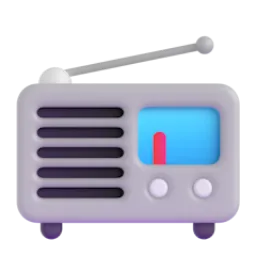
the radioletters
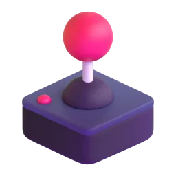
video gamesa film camerapaper mapsa bike
Talk about it
Which of these things do you feel nostalgic about? Why?
What do children today have that you didn't have?
Is life better now or was it better then?
Give a reason and an example. Then ask a follow-up question: "Why?", "What about you?"
b Go to the Vocabulary Bank. Tap each card, press 🔊 and repeat. Then complete the sentences.
Vocabulary Bank1AThen and now
I in a big city, but now I live in the countryside.
My school friends and I still — we have a group chat.
When you move abroad, it takes time to .
This song always makes me feel .
We don't notice clean water — we take it for .
My grandad's phone is so — it doesn't even have a camera!
Talk about it
Who do you still keep in touch with from school?
What do we take for granted today?
When did you last have to settle in somewhere new?
Give a reason and an example. Then ask a follow-up question: "Why?", "What about you?"
how life used to be
10 min
a Ellie interviews her grandmother for a school project. Listen once. What is the conversation mainly about?
Ellie and her granListen first · Text at the end
Ellie:Gran, for my school project I need to know what life used to be like when you were my age.
Gran (Margaret):Oh, it was very different, Ellie! We didn't use to have a phone at home. If I wanted to talk to a friend, I'd walk to her house.
Ellie:You walked everywhere?
Gran (Margaret):Almost. We used to play outside until it got dark. Our mothers would shout our names from the window when dinner was ready.
Ellie:What about TV?
Gran (Margaret):We had one small black-and-white TV. On Saturday evenings the whole family would sit together and watch the same programme.
Ellie:That sounds nice, actually. Did you use to write letters?
Gran (Margaret):All the time! I had a pen friend in France. I used to wait for the postman every morning.
Ellie:Is there anything you miss?
Gran (Margaret):I miss the slower pace of life. But I certainly don't miss washing clothes by hand!
Ellie:And was anything difficult to get used to?
Gran (Margaret):Mobile phones! I'm still getting used to texting. Your messages are so short — I never know if you're angry with me!
The conversation is mainly about…
b Listen again. True or false?
Gran's family had a phone at home. →
Children played outside until it got dark. →
The family watched TV together on Saturday evenings. →
Gran's pen friend lived in Spain. →
She misses washing clothes by hand. →
She's still getting used to texting. →
c Open the transcript. Find three sentences with used to and three with would. Are they about one action or about habits?
Talk about it
What would your grandparents say about life when they were young?
Is there anything from the past that you miss?
Give a reason and an example. Then ask a follow-up question: "Why?", "What about you?"
used to / would; be used to / get used to
14 min
a Read the Grammar Bank.
Grammar Bank1Aused to · would · be / get used to
past habits and states
example
+
used to + verb
I used to walk to school. · I used to have long hair.
–
didn't use to + verb
We didn't use to have a phone.
?
Did you use to + verb?
Did you use to write letters?
+
would + verb (only actions!)
Every summer we would go to the dacha.
would — only for repeated actions, not states: ✗ I would have long hair. ✓ I used to have long hair.
After didn't and Did → use to (no -d).
be used to + noun / -ing = it's normal for me now: I'm used to getting up early.
get used to + noun / -ing = it's becoming normal: I'm getting used to driving on the left.
Подсказка.used to = «раньше (бывало)…», а сейчас уже нет. be used to = «привык», get used to = «привыкать». После be/get used to — существительное или глагол с -ing.
I have long hair when I was a teenager.
Every summer we go to my grandparents' village.
We have a computer at home.
you use to like school?
There be a cinema in our street, but now it's a supermarket.
My dad tell us a story every night.
bbe used to or get used to? Tap the right form.
I've lived in London for ten years, so I'm used to in the rain.
It took me months to used to the food.
She isn't used to up so early.
Are you used to your new job yet?
c Rewrite the sentences with the words in brackets.
When I was a child, I played the piano every day. (used to)
We didn't have a car then. (didn't use to)
Driving on the left is still strange for me. (not used to)
d Build the sentences.
Talk about it
What did you use to do every summer when you were a child?
What are you used to now that was difficult at first?
What are you still getting used to?
Give a reason and an example. Then ask a follow-up question: "Why?", "What about you?"
used to /juːstə/
5 min
aused to sounds like /ˈjuːstə/ — with s, not z, and to is weak. But used (= использовал) is /juːzd/. Listen and repeat.
/ˈjuːstə/I used to live there.used to = раньше
/juːzd/I used your phone.used = использовал
b Press 🔊. Which sound do you hear?
I used to live in Moscow. →
I used this app yesterday. →
She's used to it. →
Who used my cup? →
c Say the sentences. Make used to quick and light.
I used to PLAY outSIDE until DARK.
We DIDN'T use to have a PHONE.
I'm GETting used to my NEWJOB.
Getting used to Edinburgh
10 min
a Read the article. What surprised Anna most when she moved?
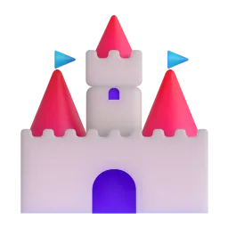
Getting used to Edinburghby Anna, 34, who moved from Kazan to Scotland two years ago · about 200 words
When I moved from Kazan to Edinburgh, I thought the hardest thing would be the language. I was wrong. My English was fine — it was the little things that surprised me.
In Kazan I used to go shopping at any time, even at midnight. Here most shops close at six, and on Sundays the city feels asleep. At first it drove me crazy. Now I plan my week, and I actually like the quiet Sundays.
The weather was the next shock. I used to think Russians were experts in bad weather, but Scottish rain is different: it comes sideways and changes four times a day. I've never got used to it, but I've stopped carrying an umbrella — everyone here just wears a good jacket.
What I love is how people talk to strangers. On the bus the driver calls me "love", and people say "cheers" instead of "thank you". In my first months I would answer with a very formal "You're welcome", and people would smile kindly.
Do I miss home? Of course. I miss my mum's pies and long summer evenings at the dacha. But I'm getting used to my new life, and Edinburgh is slowly becoming home.
1. What was the biggest surprise for Anna?
2. How does she feel about Sundays now?
3. What has she stopped doing?
4. How did people react to her formal "You're welcome"?
b Find the words in bold in the article. What do they mean?
drove me crazy →
sideways →
strangers →
Talk about it
Have you ever lived in or visited a place that was very different from home? What did you have to get used to?
What would you miss most if you moved abroad?
Which "little things" would surprise a foreigner in your town?
Give a reason and an example. Then ask a follow-up question: "Why?", "What about you?"
my childhood
10 min
a Answer your teacher's questions. Use used to and would. Then ask your teacher.
When I was a child, I used to…Every summer we would…I didn't use to…, but now I…I remember…Looking back, I think…
Press the button
Where did you use to spend your summers?
What games did you use to play with your friends?
Did you use to have a favourite TV programme?
What did you use to want to be when you grew up?
Which food did you hate as a child but love now?
What would your family do on Sunday mornings?
What rules did your parents use to have?
How has your town changed since you were a child?
Talk about it
Which habit from your childhood do you still have?
What is something you used to believe as a child that you don't believe now?
Give a reason and an example. Then ask a follow-up question: "Why?", "What about you?"
guess the decade
8 min
a Your teacher is a person who grew up in another country in another decade. Ask questions with Did you use to…? and What would you…?. Guess the decade and the country.
Student Adetective (you)
Ask at least six questions about music, TV, games, school, holidays and technology. Write the clues.
Did you use to…?What would you do after school?What music did you use to listen to?So you grew up in… in the…
Student Bthe mystery person (teacher)
Your teacher has a secret childhood card. Listen carefully!
b Swap! Now describe your own childhood in five sentences. Include one false fact. Can your teacher find it?
Talk about it
Which decade would you like to grow up in? Why?
Give a reason and an example. Then ask a follow-up question: "Why?", "What about you?"
a place I used to love
3 min
a Homework. Write about a place you used to love when you were younger (100–130 words). What was it like? What would you do there? Has it changed? How do you feel when you look back on it? Write in the box at the bottom of this page.
Start:When I was a child, I used to spend every summer at… Every morning we would…
b Press «Отправить преподавателю» and send the link.
Готово? Отправьте ответы преподавателю
Откроется окно «Поделиться»: выберите мессенджер и отправьте ссылку преподавателю. Ответы зашифрованы, открыть их может только преподаватель.
Can you…?
3 min
a Your teacher gives feedback. Write the corrections.
Great!
Fix it
b Can you do these things?
I can talk about past habits with used to and would
I can explain the difference between be used to and get used to
I can understand a conversation and an article about change
I can tell a story about my childhood
What was the most useful thing today?
used to · would · be / get used to
20 min at home
Homework: grammar. Your answers are saved automatically on this device — you can stop and come back later. At the end press «Отправить преподавателю».Домашнее задание по грамматике. Ответы сохраняются сами, можно делать в несколько подходов.
Remember:used to + verb — past habits and states (I used to have a cat) · would + verb — only repeated actions (we would play outside) · didn't use to / Did you use to…? (no -d!) · be used to + noun / -ing = привыкла · get used to + noun / -ing = привыкаю
a Tap the correct form. Sometimes both used to and would are possible — then choose «both».
When I was a child, I have a big brown teddy bear.
Every Sunday my grandfather take us to the park.
We live in a flat on the ninth floor.
In the evenings my mum read us a story.
I be very shy at school.
My brother and I fight about the TV remote every day.
b Write the verb with used to (+, – or ?).
My dad (smoke), but he stopped ten years ago.
We (not / have) a dishwasher.
(you / play) any sport at school?
There (be) a lovely bakery on this corner.
I (not / like) fish, but now I love it.
cbe used to or get used to? Tap the correct form.
I've worked nights for years, so I sleeping in the day.
It was hard at first, but I slowly the cold weather.
He's from Spain, so he eating dinner at ten.
Don't worry — you'll soon your new school.
She can't driving on the left. It's still really strange for her.
d Find the mistake and write the correct sentence.
I didn't used to like coffee.
When I was young, I would have long hair.
I'm used to get up at six.
Did you used to walk to school?
I can't get used to live in a big city.
e Build the sentences.
f About you. Write four true sentences.
Готово? Отправьте ответы преподавателю
Откроется окно «Поделиться»: выберите мессенджер и отправьте ссылку преподавателю. Ответы зашифрованы, открыть их может только преподаватель.
extra practice
10 min
What to do
Build the sentences: tap the words in the right order. Made a mistake? Press «↺ Заново».
Find the mistake in each sentence and write the correct sentence.
Press «Проверить» after each exercise.
1. Build the sentence
2. Find the mistake
I didn't used to like vegetables.
When I was a child, I would have a dog.
I'm used to get up early.
Did you used to walk to school?
Play and review
10 min
What to do · Что делать
Play with the words from this lesson — great for review before the next lesson!Играйте со словами урока — это лучший способ повторить их.
Your best results are saved and your teacher can see them.Лучшие результаты сохраняются, преподаватель их видит.
🧩
Match upНайди пару
Tap a word, then its meaning. As fast as you can! · Нажмите слово, потом его значение.
⏱️
60 seconds60 секунд
Choose the right word for the meaning. How many in one minute? · Сколько слов успеете за минуту?
🎧
Listen and spellУслышь и напиши
Listen to the word and write it. Press 🔊 to hear it again. · Послушайте слово и напишите его.
🕵️
DetectiveДетектив
Solve the case! Each clue is a task with this lesson's words and grammar. Every right answer clears one suspect. · Раскройте дело: каждая улика — задание по словам и грамматике урока.
IRIS SCHOOL · Ксения · урок 2
A Week in My Life
Emma's usual week, this busy week and her big plans for Saturday. Practise the present simple and continuous, then the future: I'm meeting · I'm going to · I'll.
“The future depends on what you do today.”Mahatma Gandhi
IntermediateMy weekPresent simple & continuousFuture forms60 min
my week
10 min
In this lesson you will…
learn 10 phrases about your week and your free time
read Emma's blog and practise present simple vs present continuous
listen to Emma's weekend plans and practise future forms: I'm meeting · I'm going to · I'll
use everything together to write about your week and your plans
a Meet Emma. These pictures are from her week. Which of these things do you do every week? Tell your teacher in one sentence.
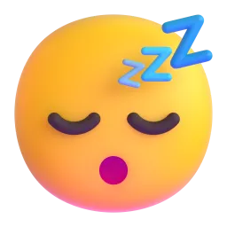
a lie-in
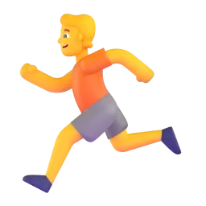
a runshoppingfriends
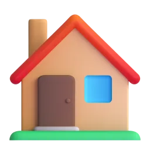
work from homelate!a day off
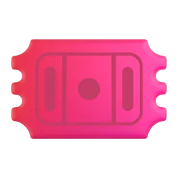
tickets
b Go to the Vocabulary Bank. Tap each card, press 🔊 and repeat. Then do the exercises.
Vocabulary Bank2AMy week
I don't work on Mondays — it's my .
Sorry, the bus is slow — I'm running !
I'd like to take a new hobby — maybe dancing.
Let's a table at the restaurant for eight o'clock.
I'm really looking forward the holidays.
We haven't met for a month — let's catch on Friday!
c do, go, have, catch… Which verb goes with each phrase?Какой глагол подходит?
the shopping
a lie-in
for a run
up with friends
from home
up yoga
Emma's blog
10 min
a Now read Emma's blog. Find five phrases from the Vocabulary Bank. Tap any word you don't know.
Emma's blog · «A week in my life»
Hi, I'm Emma. I'm 27 and I work at a small travel agency in Brighton. My week is usually very simple. I get up at seven, go for a run by the sea and take the bus to work. I finish at five, and I usually do the shopping on the way home. On Fridays I catch up with friends, and on Saturdays I always have a lie-in — I never get up before ten!
But this week is different. My boss is on holiday, so I'm working from home and I'm doing her job too! I'm not going for a run in the mornings because I'm always running late. And this month I'm learning to cook Thai food — I'm taking an online course. It's hard, but I love it.
Next Saturday is my day off… and I've got big plans. More about that tomorrow!
b True or false?
Emma works at a travel agency. →
She usually takes the bus to work. →
On Fridays she does the shopping. →
This week she is working in the office. →
She is taking an online cooking course. →
Her day off is next Sunday. →
c Look at the blog again. Is each sentence about Emma's usual week or about this week / now? This is the grammar of the next stage.Обычная неделя или «сейчас / на этой неделе»?
I get up at seven. →
I'm working from home. →
I usually do the shopping on the way home. →
I'm not going for a run in the mornings. →
I never get up before ten. →
I'm learning to cook Thai food. →
present simple vs continuous
15 min
a Read the Grammar Bank. All the examples are from Emma's blog.
Grammar Bank2Apresent simple vs present continuous
present simple
present continuous
use
habits, routines, facts — usually
now, this week, temporary situations
+
She gets up at seven.
She's working from home this week.
–
She doesn't work on Saturdays.
She's not going for a run this week.
?
Does she work on Fridays?
What is she doing at the moment?
time words
usually, always, often, never, every day, on Fridays
now, at the moment, today, this week, this month, these days
He / she / it: -s in the present simple: she gets, he catches, she does.
State verbs are usually not used with -ing: like, love, want, need, know, understand. ✗ I'm wanting a new phone. ✓ I want a new phone.
Подсказка. «Обычно, всегда, по пятницам» → present simple. «Сейчас, на этой неделе, в этом месяце» → present continuous.
Emma usually at seven.
This week she from home.
She the shopping on the way home every day.
At the moment she an online course.
On Saturdays she always a lie-in.
She Thai food — it's delicious!
b Time words. Which tense do they go with?С каким временем эти слова?
usually →
at the moment →
every Friday →
this week →
never →
now →
these days →
on Sundays →
c Write the verb in the present simple or the present continuous.Напишите глагол в нужной форме.
Jack (work) in a bank.
Look! It (rain).
I (not / drink) coffee in the evening.
Why (you / laugh)?
My sister (stay) with us this week.
How often (you / go) for a run?
We (not / watch) TV at the moment.
Emma (catch) up with friends every Friday.
d State verbs: no -ing!Глаголы состояния — без -ing.
I what you mean.
She a new phone.
We more time, sorry.
this song?
e Build the questions — then ask your teacher one of them.
Emma's weekend plans
10 min
a Remember? Emma's day off is next Saturday, and she has «big plans». Listen to her phone call with Jack. What is she doing on Saturday?
Phone call: Emma and JackListen first · Use 🐢 if it's fast · Text at the end
Jack:Hi Emma! Are you free on Saturday? I'm having a barbecue in the garden.
Emma:Oh, sorry, Jack, I can't come on Saturday. I'm meeting my sister at nine. We're going to Oxford for the day.
Jack:Oxford! How are you getting there?
Emma:We're taking the ten o'clock train. I booked the tickets yesterday.
Jack:Nice. What are you going to do there?
Emma:We're going to walk by the river and have lunch in a little café. And I'm going to take lots of photos.
Jack:Hmm, look at the sky today. I think it's going to rain this weekend.
Emma:Oh no! Then I'll take my umbrella. What about Sunday? Are you doing anything?
Jack:Nothing special. I'm going to stay at home and relax.
Emma:Then I'll come to your place on Sunday! I'll bring a cake.
Jack:Perfect! I'll make some coffee. I'm really looking forward to it.
On Saturday Emma is…
b Listen again. Complete the details.
Emma is meeting her sister at .
They're taking the o'clock train.
They're going to walk by the .
Jack thinks it's going to .
On Sunday Emma will bring a .
c Open the transcript. Emma talks about the future in different ways. Why? Choose. This is the grammar of the next stage.Почему здесь такая форма будущего?
I'm meeting my sister at nine. →
We're going to walk by the river. →
I think it's going to rain. →
Then I'll take my umbrella. →
I'll bring a cake. →
future forms
15 min
a Read the Grammar Bank. The examples are from Emma's phone call.
Grammar Bank2Afuture: present continuous · going to · will
form
when?
example
present continuous
arrangement: the time, place, people or tickets are fixed
I'm meeting my sister at nine. We're taking the ten o'clock train.
be going to
plan, intention — you decided before
We're going to walk by the river.
be going to
prediction — you can see it now
Look at the sky! It's going to rain.
will
decision now · offer · promise
Then I'll take my umbrella. I'll bring a cake.
will
opinion about the future: I think…, probably
I think you'll love Oxford.
Подсказка. Есть время, билеты, договорённость → I'm meeting. Решили заранее → I'm going to. Решаете прямо сейчас, предлагаете, обещаете → I'll.
I've got the tickets! We to a concert on Friday.
The phone is ringing. — I it!
Look at that car! It crash!
What this evening? Any plans?
I learn to drive next year — I've decided.
I think Emma the trip.
b What do you say? Choose the best sentence.Что вы скажете в этой ситуации?
You have a dentist appointment at four tomorrow. →
Your friend's bag is very heavy. →
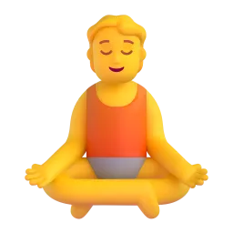
You decided last week to start yoga. →
There are big black clouds in the sky. →
The waiter asks what you want. →
c Write the verb: present continuous, going to or will.Напишите глагол в нужной форме будущего.
«I'm hungry.» — «I (make) you a sandwich.»
We (fly) to Rome on Monday — the tickets are on my phone.
She (be) a doctor one day — she's decided.
Be careful! You (fall)!
I promise I (not / be) late.
What time (you / meet) Jack tomorrow?
d Build the sentences.
present and future together
8 min
a Emma writes to her sister. Now use everything from today: the phrases, the present and the future.Всё вместе: слова урока + настоящее + будущее.
Emma → her sister
Usually I (have) a lie-in on Saturdays…
…but this Saturday I (meet) you at nine! I've booked the tickets.
I (work) from home this week, so I'm really busy.
I always (do) the shopping after work.
Sorry, I (run) late! See you in ten minutes.
Look at the time! We (miss) the train!
«There's no milk.» — «OK, I (buy) some.»
Next month I (take up) yoga — I've decided.
gonna · I'll
5 min
a In fast speech going to sounds like /ˈɡənə/ and I will becomes I'll /aɪl/. We still writegoing to. Listen and repeat.
I'm gonna have a LIE-in.
We're gonna WALK by the RIver.
I'll BRING a CAKE.
I'm MEETing my SISter at NINE.
I Usually do the SHOPping on MONdays.
b Say two true sentences: one plan with going to and one arrangement with I'm …ing.
my week, my plans
7 min
a Your turn to be Emma! Answer your teacher's questions. Use the right tense — present or future.
Press the button
What do you usually do after work?
What are you doing these days that is new for you?
a Write a reply to Emma's blog. One sentence in each line: your usual week, this week, and your weekend.
b Press «Отправить преподавателю» — your teacher will see your answers.
Готово? Отправьте ответы преподавателю
Откроется окно «Поделиться»: выберите мессенджер и отправьте ссылку преподавателю. Ответы зашифрованы, открыть их может только преподаватель.
Can you…?
3 min
a Your teacher gives feedback. Write the corrections.
Great!
Fix it
b Can you do these things?
I can talk about my week with the new phrases
I can choose between I do and I'm doing
I can choose between I'm meeting, I'm going to and I'll
I can understand a phone call about plans
What was the most useful thing today?
get to know the platform
15 min at home
Homework, part 1 of 2: the platform and the words. First try the platform tools — the steps tick themselves. Then the words. Part 2 (grammar) is on the next page — press «Далее».Часть 1: знакомство с платформой и слова урока. Ответы сохраняются сами.
a Get to know the platform. Do the 6 steps with the words from our lesson.Знакомство с платформой: 6 шагов. Отмечаются автоматически.
Знакомство с платформойШаги отмечаются сами, когда вы их делаете. Порядок любой.
Шагов выполнено: 0 из 6
🔊 Послушать 3 слова В уроке нажмите 🔊 рядом с тремя словами или фразами.
➕ Добавить 3 слова в «Мой словарь» На карточке слова нажмите «+ В мой словарь» — или выделите любое слово в тексте и сохраните его.
🔁 Повторить слова Откройте «Мой словарь» и нажмите «Повторить» — пройдите хотя бы одну карточку.
🇷🇺→🇬🇧 Найти английское слово по-русски Напишите русское слово — платформа подскажет английское. Сохраните его в словарь.
📘 Открыть таблицу неправильных глаголов Найдите в ней go и meet. Кнопка есть на главной и в «Моём словаре».
🎮 Сыграть в «Найди пару» Последний раздел урока — «Games». Соберите все пары со словами урока.
b Look at the picture. Which phrase is it?Какая фраза подходит к картинке?
It's Saturday. Emma is still in bed at ten. →
The bus is slow and the meeting starts in two minutes. →
Emma meets her friends and they talk about their news. →
Emma buys train tickets online before the trip. →
Jack starts painting — a new hobby! →
Emma is very happy about Saturday — she can't wait! →
c How do you say it in English? Write the phrase.Как это по-английски? Напишите фразу.
выходной →
делать покупки →
пойти на пробежку →
работать из дома →
забронировать (билеты) →
present & future
15 min at home
Homework, part 2 of 2: grammar. Look at the colour formulas, then tap or type. At the end press «Отправить преподавателю».Часть 2: грамматика урока. В конце — «Отправить преподавателю».
Remember · ЗапомнитеPresent
She+gets up+at seven+every day.
She's+working+from home+this week.
Обычно, всегда, по пятницам → present simple. Сейчас, на этой неделе → present continuous. like, love, want, know — без -ing.
Remember · ЗапомнитеFuture
I'm+meeting+my sister+at nine.
We're+going to+walk+by the river.
I'll+bring+a cake!
I'm meeting — договорились (время, билеты). I'm going to — решили заранее. I'll — решаю сейчас, предлагаю, обещаю.
a Present simple or present continuous? Tap.Выберите форму.
Jack in a bank.
Shh! The baby .
I for a run every morning.
This month we a new language.
She chocolate.
How often the shopping?
b Write the verb in the present simple or continuous.Напишите глагол в нужной форме.
Emma (have) a lie-in every Saturday.
Look! Jack (cook) dinner.
I (not / work) on Fridays.
What (you / read) at the moment?
My brother (not / like) coffee.
c Future: which form? Tap.Какая форма будущего?
I've booked a table. We dinner at eight.
«It's cold in here.» — «I the window.»
Look at those clouds! It rain.
She take up tennis — she's bought a racket.
I promise I you tonight.
What on Saturday? Any plans?
d Write the verb: present continuous, going to or will.Напишите форму будущего.
We (meet) Anna at six — it's in my calendar.
«I've lost my pen.» — «I (give) you mine.»
I (visit) my grandma next month — I've decided.
Don't worry, I (not / tell) anyone.
e About you. Four true sentences.О себе: четыре предложения.
Готово? Отправьте ответы преподавателю
Откроется окно «Поделиться»: выберите мессенджер и отправьте ссылку преподавателю. Ответы зашифрованы, открыть их может только преподаватель.
extra practice
10 min
What to do
Build the sentences: tap the words in the right order. Made a mistake? Press «↺ Заново».
Find the mistake in each sentence and write the correct sentence.
Press «Проверить» after each exercise.
1. Build the sentence
2. Find the mistake
I am work from home this week.
She don't have a lie-in on weekdays.
I'm loving Thai food.
The phone is ringing. I'm going to answer it!
Play and review
10 min
What to do · Что делать
Play with the words from this lesson — great for review before the next lesson!Играйте со словами урока — это лучший способ повторить их.
Your best results are saved and your teacher can see them.Лучшие результаты сохраняются, преподаватель их видит.
🧩
Match upНайди пару
Tap a word, then its meaning. As fast as you can! · Нажмите слово, потом его значение.
⏱️
60 seconds60 секунд
Choose the right word for the meaning. How many in one minute? · Сколько слов успеете за минуту?
🎧
Listen and spellУслышь и напиши
Listen to the word and write it. Press 🔊 to hear it again. · Послушайте слово и напишите его.
🕵️
DetectiveДетектив
Solve the case! Each clue is a task with this lesson's words and grammar. Every right answer clears one suspect. · Раскройте дело: каждая улика — задание по словам и грамматике урока.
IRIS SCHOOL · Милана · урок 2
Dream Jobs?
A zookeeper, a hotel tester and you: what work is really like. Talk about rules and advice with have to, mustn't, don't have to, should.
“Choose a job you love, and you will never have to work a day in your life.”proverb
B1Workmust · have to · shouldListening60 min
work
12 min
In this lesson you will…
talk about jobs and what they are really like
use must, have to, don't have to, mustn't and should
understand interviews with people who have unusual jobs
play «Guess my job» and do a job interview
a Look at the jobs. Which is the best job? Which is the worst? Why?
a doctora chef
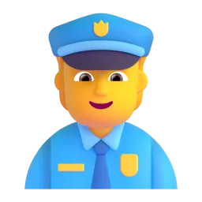
a police officera programmera teachera singer
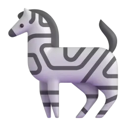
a zookeeper
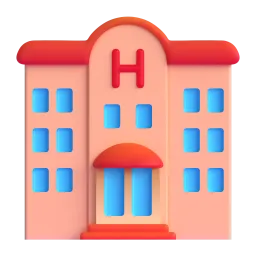
a hotel tester
Talk about it
Which job would you like to try for one day?
Which job is the most stressful? The most rewarding?
Give a reason and an example. Then ask a follow-up question: "Why?", "What about you?"
b Go to the Vocabulary Bank. Tap each card, press 🔊 and repeat. Then complete the sentences.
Vocabulary Bank1BWork
I can start at 8 or at 10 — I have .
Doctors often work the night .
Footballers are very .
Helping people is very .
After three years he got to manager.
I can't go out tonight — the for my report is tomorrow.
Talk about it
What is more important for you: a well-paid job or a rewarding job?
Would you like to wear a uniform at work? Why / why not?
Can you work well with deadlines?
Give a reason and an example. Then ask a follow-up question: "Why?", "What about you?"
unusual jobs
10 min
a Listen to Jess and Max. Which job would you prefer?
Radio: «Work Talk»Listen first · Text at the end
Host:Today on «Work Talk» we meet two people with very unusual jobs. Jess, you're a zookeeper. What's a normal day like?
Jess, zookeeper:There's no normal day! I have to start at seven, because the animals have to eat early. I clean, I feed, I check that everyone is healthy.
Host:Is it dangerous?
Jess, zookeeper:Sometimes. We mustn't go into the big cats' area alone — never. And you have to be fit: I walk about fifteen kilometres a day.
Host:Max, you test hotels. That sounds like a dream job!
Max, hotel tester:Everybody says that! I stay in a different hotel every few nights. I have to check everything: the bed, the shower, the breakfast, even how fast they answer the phone.
Host:Do you have to tell them who you are?
Max, hotel tester:No, I mustn't! It's a secret. And I don't have to pay — the company pays. But I write a long report every night, and I don't see my family much.
Host:Any advice for people who want your jobs?
Jess, zookeeper:You should volunteer at a farm or a zoo first. You'll know very quickly if it's for you.
Max, hotel tester:And you should really like being alone. Hotels can be lonely places!
b Listen again. Jess or Max?
has to start at seven →
mustn't tell the hotel staff about the job →
doesn't have to pay for hotels →
walks about 15 km a day →
writes a report every night →
mustn't go into one area alone →
c Open the transcript. Find have to, mustn't, don't have to and should. Which one gives advice?
Talk about it
Is Max's job really a dream job?
Would you like to work with animals?
Give a reason and an example. Then ask a follow-up question: "Why?", "What about you?"
must, have to, should
14 min
a Read the Grammar Bank.
Grammar Bank1Bmust · have to · don't have to · mustn't · should
meaning
example
have to / must
it's necessary (a rule)
Zookeepers have to start early. You must wear a helmet.
don't have to
it isn't necessary (you can if you want)
Max doesn't have to pay for hotels.
mustn't
it's forbidden — don't do it!
You mustn't tell the hotel who you are.
should / shouldn't
advice — a good idea
You should volunteer first.
Past: had to (✗ musted): I had to work late yesterday.
Questions: Do you have to wear a uniform? Does she have to…?
Осторожно!don't have to = «не обязательно», а mustn't = «нельзя». Это совсем разные вещи!
You use your phone while driving. It's dangerous!
It's Saturday — I get up early.
Doctors study for many years.
You look a bit tired. Maybe you go to bed earlier.
you have to wear a uniform at work?
Yesterday I stay at work until nine.
bdon't have to or mustn't? Write the answer.
In my office we wear a suit — jeans are fine.
You smoke in the hospital.
Students copy in exams.
She works from home, so she travel to work.
c Build the sentences.
Talk about it
What do you have to do every day? What don't you have to do?
What rules did you have to follow at school?
What should a good boss do?
Give a reason and an example. Then ask a follow-up question: "Why?", "What about you?"
have to /hæftə/
5 min
ahave to sounds like /hæftə/ — with f! has to = /hæstə/. Listen and repeat.
I HAVE to start at SEVen.
She HAS to wear a Uniform.
You DON'T have to PAY.
You MUSTn't tell Anyone.
bmustn't = /ˈmʌsnt/ — the first t is silent. Say three rules from your work or home.
Guess my job
10 min
aGuess my job. Your teacher thinks of a job. Ask yes/no questions with Do you have to…? Do you work…? Then swap!
Do you have to wear a uniform?Do you work with people / animals / computers?Do you have to work at night?Is it well-paid?Do you have to study for a long time?
b Talk about your own work or studies.
Press the button
What do you have to do every day at work or at university?
What don't you have to do that other people have to?
What was the worst job you ever had to do?
What should a person do to get promoted?
Would you prefer flexible hours or a higher salary?
What job did you want to do when you were a child?
the job interview
8 min
a Role play. You want a summer job as a hotel tester. Your teacher is the manager. Answer the questions and ask yours.
Student Athe candidate (you)
Ask at least four questions about the job.
Do I have to…?How many hours do I have to work?Do I have to travel a lot?What should I wear?Is it well-paid?
Student Bthe manager (teacher)
Your teacher has the job card with all the rules. Listen carefully and decide: do you want the job?
Talk about it
Did you get the job? Do you want it?
Which rule was the strangest?
Give a reason and an example. Then ask a follow-up question: "Why?", "What about you?"
rules of my job
3 min
a Homework. Write about your job, your studies or a job you would like (80–100 words): what you have to do, don't have to do, mustn't do and what a new person should know. Write in the box at the bottom of this page.
Start:I work as… Every day I have to… Luckily, I don't have to…
b Press «Отправить преподавателю» and send the link.
Готово? Отправьте ответы преподавателю
Откроется окно «Поделиться»: выберите мессенджер и отправьте ссылку преподавателю. Ответы зашифрованы, открыть их может только преподаватель.
Can you…?
3 min
a Your teacher gives feedback. Write the corrections.
Great!
Fix it
b Can you do these things?
I can talk about jobs and work
I can use have to, must, don't have to, mustn't, should
I can explain the difference between don't have to and mustn't
I can ask questions in a job interview
What was the most useful thing today?
extra practice
10 min
What to do
Build the sentences: tap the words in the right order. Made a mistake? Press «↺ Заново».
Find the mistake in each sentence and write the correct sentence.
Press «Проверить» after each exercise.
1. Build the sentence
2. Find the mistake
I must to finish this today.
Yesterday I must stay late.
Does she has to wear a uniform?
You don't have to smoke here. It's forbidden.
Homework: words and grammar
20 min at home
Homework. Everything is checked here — press «Проверить» after each exercise. Your answers are saved automatically; at the end press «Отправить преподавателю».Домашнее задание: слова и грамматика урока. Всё проверяется на платформе, ответы сохраняются сами. В конце нажмите «Отправить преподавателю».
a Words: what is it? Tap the right word.Слова: выберите слово по значению.
«you can choose when you start and finish work» →
«the day or time when work must be finished» →
«special clothes you wear at work» →
«a period of work, e.g. a night shift» →
«you earn a lot of money» →
«it makes you feel happy and useful» →
b Words: write it in English.Слова: напишите по-английски.
гибкий график →
крайний срок, дедлайн →
униформа →
смена →
c Grammar: tap the correct form.Грамматика: выберите правильную форму.
You smoke in the hospital.
It's Sunday — I get up early.
Nurses wear a uniform.
You look tired. You rest.
Yesterday I work late.
she have to work at weekends?
d Grammar: find the mistake and write the correct sentence.Найдите ошибку и напишите правильно.
I must to finish this report.
Yesterday I must work late.
Does he has to wear a suit?
e About you: finish the sentences.О себе: закончите предложения.
Готово? Отправьте ответы преподавателю
Откроется окно «Поделиться»: выберите мессенджер и отправьте ссылку преподавателю. Ответы зашифрованы, открыть их может только преподаватель.
Play and review
10 min
What to do · Что делать
Play with the words from this lesson — great for review before the next lesson!Играйте со словами урока — это лучший способ повторить их.
Your best results are saved and your teacher can see them.Лучшие результаты сохраняются, преподаватель их видит.
🧩
Match upНайди пару
Tap a word, then its meaning. As fast as you can! · Нажмите слово, потом его значение.
⏱️
60 seconds60 секунд
Choose the right word for the meaning. How many in one minute? · Сколько слов успеете за минуту?
🎧
Listen and spellУслышь и напиши
Listen to the word and write it. Press 🔊 to hear it again. · Послушайте слово и напишите его.
🕵️
DetectiveДетектив
Solve the case! Each clue is a task with this lesson's words and grammar. Every right answer clears one suspect. · Раскройте дело: каждая улика — задание по словам и грамматике урока.
IRIS SCHOOL · Оля · урок 1
A Teacher's Day
Meet Daniel — he teaches Russian in England. Words about school, his day and his pupils' questions. Grammar: he teaches · Do you…? Does he…? Шаг за шагом — от упражнения к речи.
“To teach is to learn twice.”Joseph Joubert
A2My jobPresent simpleDo / Does60 min
my job: school
10 min
In this lesson you will…
learn 10 words about a teacher's job10 слов о работе учителя
understand Daniel — a teacher of Russian in Englandпонять рассказ Дэниела — учителя русского в Англии
say what he / she does: he teaches, she doesn't…говорить о других: he teaches, she doesn't…
ask and answer: Do you…? Does he…? — Yes, I do.задавать вопросы и отвечать
talk about your working day — step by stepрассказать о своём рабочем дне — по шагам
a This is a teacher's day. What do you do every day at work? Point and say: I…Это день учителя. Что вы делаете каждый день? Покажите и скажите: I…
b Go to the Vocabulary Bank. Tap each card, press 🔊 and repeat.Нажимайте на карточки, слушайте и повторяйте.
Vocabulary Bank1AA teacher's job
a short time between lessons →
a room for teachers →
a list of lessons and times →
a person you work with →
a child at school →
an exam to check what pupils know →
c Which verb? Make the phrases.Какой глагол? Соберите фразы.
homework
a lesson
grammar
Russian
a coffee
a test
Daniel's day
10 min
a Meet Daniel. He is a teacher of Russian — like you, but in England! Listen once. Does he like his job?Это Дэниел — учитель русского, как вы, только в Англии. Послушайте. Ему нравится его работа?
Daniel: «My working day»Listen first · Если быстро — нажмите 🐢
Daniel:Hi, I'm Daniel. I'm a teacher. I teach Russian at a big school in Manchester. My pupils are aged eleven to sixteen.
Daniel:I get up at half past six and I have breakfast with my wife, Lucy. She's a doctor, so she leaves home very early.
Daniel:I go to school by bike. My lessons start at nine. I teach five lessons a day.
Daniel:At break I have a coffee in the staff room and talk to my colleagues.
Daniel:After lessons I check homework and prepare lessons for the next day. I don't give a lot of tests — my pupils don't like them!
Daniel:I get home at about six. In the evening I cook dinner, and sometimes I watch Russian films.
Daniel:I love my job, but I'm always tired on Fridays!
Does Daniel like his job?
b Listen again. Complete the facts about Daniel.Послушайте ещё раз и допишите.
He teaches at a school in Manchester.
He gets up at half past .
He goes to school by .
He teaches lessons a day.
He gets home at about .
c True or false?Верно или нет?
His wife is a teacher. →
He has a coffee in the staff room. →
He gives a lot of tests. →
He sometimes watches Russian films. →
d Look: Daniel says I teach, but we say he teaches. Why? That's the grammar of the next stage.Дэниел говорит I teach, а мы о нём — he teaches. Почему? Это грамматика следующего этапа.
present simple: he / she
15 min
a Read the four steps. Press 🔊 and repeat. All the examples are about Daniel.Прочитайте четыре шага. Нажмите 🔊 и повторите. Все примеры — про Дэниела.
Grammar Easy · Грамматика без страхаhe / she + -s
1
Одна мысль
Когда говорим о нём или о ней (he, she, it, Daniel, my wife), к глаголу добавляем -s. I teach → he teaches. А «не» для него/неё — doesn't, и тогда -s уже не нужно: he doesn't teach.
2
Формула-конструктор
I+teach+Russian.
He+teaches+Russian.
+s: gets, starts · +es (после s, sh, ch, x, o): teaches, watches, goes, does · y → ies: studies · have → has
I+don't+give+tests.
She+doesn't+give+tests.
3
Смотри, как это работает · нажми 🔊
Daniel teaches Russian.
He goes to school by bike.
He has a coffee at break.
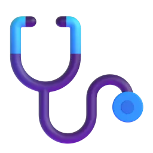
His wife works in a hospital.
He doesn't give a lot of tests.
4
Осторожно!
❌ He teach Russian. → ✅ He teaches Russian. он / она → -s
❌ She don't work. → ✅ She doesn't work. он / она → doesn't
❌ He doesn't teaches. → ✅ He doesn't teach. после doesn't — без -s
bStep 1. Daniel → he. Daniel says «I…». You tell his story: «He…».Шаг 1. Дэниел говорит «I…», вы рассказываете о нём: «He…».
«I get up at half past six.» → He up at half past six.
«I teach five lessons a day.» → He five lessons a day.
«I go to school by bike.» → He to school by bike.
«I have a coffee at break.» → He a coffee at break.
«I check homework after lessons.» → He homework after lessons.
«I don't give a lot of tests.» → He a lot of tests.
cStep 2. Spelling. Write the verb with he / she.Шаг 2. Напишите глагол для he / she.
teach → she
watch → she
go → she
study → she
have → she
prepare → she
do → she
explain → she
dStep 3. Don't or doesn't?Шаг 3. don't или doesn't?
Daniel speak Russian at home.
I work on Sundays.
His pupils like tests.
Lucy teach. She's a doctor.
We have lessons in August.
My cat like music.
eStep 4. Lucy's day. Write the verb. Careful: + or −?Шаг 4. День Люси (жены Дэниела). Напишите глагол.
Lucy (work) in a hospital.
She (leave) home at seven.
She (not / teach).
She (finish) work at eight in the evening.
She (not / speak) Russian.
She (love) blini!
f Build the sentences.Соберите предложения.
Questions for Mr Jones
8 min
a Daniel's pupils interview him for the school blog. Listen. What is the funny question at the end?Ученики берут у Дэниела интервью. Послушайте. Какой вопрос в конце — смешной?
Interview: «Our Russian teacher»Use 🐢 if it's fast · Текст — в конце
Pupil:Mr Jones, do you speak Russian at home?
Daniel:No, I don't. My wife doesn't speak Russian. But I read Russian books every evening.
Pupil:Does your wife like Russian food?
Daniel:Yes, she does! She loves blini.
Pupil:Do you give a lot of homework?
Daniel:No, I don't. Just a little, but every day.
Pupil:What time do you get up?
Daniel:At half past six. Every day!
Pupil:Does your cat speak Russian?
Daniel:Ha-ha! No, it doesn't. But it likes Russian music!
The funny question is about…
b Listen again. Choose the answer.Выберите ответ.
Does Daniel speak Russian at home? →
Does his wife like Russian food? →
Does he give a lot of homework? →
Does the cat like Russian music? →
c Open the transcript. Find the questions. They start with Do or Does. When do we use Does? That's the next grammar.Откройте текст. Вопросы начинаются с Do или Does. Когда Does? Это следующая грамматика.
questions: Do / Does
12 min
a Read the four steps. Press 🔊 and repeat the questions from the interview.Прочитайте четыре шага. Повторите вопросы из интервью.
Grammar Easy · Грамматика без страхаDo you…? Does he…?
1
Одна мысль
В вопросе в начало ставим помощника: Do (I, you, we, they) или Does (he, she, it). Глагол — без -s: Does he teach? Короткий ответ повторяет помощника: Yes, he does. / No, he doesn't.
2
Формула-конструктор
Do+you+give+homework?
Does+he+give+homework?
Ответ: Yes, I do. / No, I don't. · Yes, he does. / No, he doesn't. — не просто «Yes».
What time+do+you+get up?
Where+does+she+work?
3
Смотри, как это работает · нажми 🔊
Do you speak Russian at home?
Does your wife like Russian food? — Yes, she does.
What time do you get up?
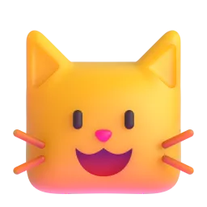
Does your cat speak Russian? — No, it doesn't.
4
Осторожно!
❌ Does he teaches? → ✅ Does he teach? после does — без -s
❌ You like tests? → ✅ Do you like tests? в начале — Do
❌ Do she work? → ✅ Does she work? she → Does
bStep 1. Do or Does?Шаг 1. Do или Does?
you like your job?
Daniel teach Russian?
your pupils like tests?
Lucy work in a hospital?
you check homework every day?
the cat like music?
cStep 2. Short answers.Шаг 2. Короткие ответы.
Do you teach Russian? — Yes, .
Does Daniel speak Russian at home? — No, .
Does Lucy love blini? — Yes, .
Do his pupils like tests? — No, .
dStep 3. Write the question.Шаг 3. Напишите вопрос.
(you / work) on Saturdays?
(she / teach) English?
What time (your lessons / start)?
Where (Daniel / work)?
(he / have) a cat?
eStep 4. Build the questions — you will ask them in Speaking!Шаг 4. Соберите вопросы — вы зададите их в говорении!
-s: /s/ /z/ /ɪz/
5 min
a The -s has three sounds. Listen and repeat.Окончание -s звучит по-разному. Послушайте и повторите.
/s/ — checks, starts
/z/ — prepares, goes
/ɪz/ — teaches, watches — один слог больше!
Does he… — коротко: /dəz/
b Which sound? Say the word, then choose.Какой звук? Скажите слово и выберите.
works →
explains →
finishes →
gets →
loves →
teaches →
my working day — step by step
12 min
aStep 1. Repeat. Listen to a teacher's day and repeat each sentence.Шаг 1. Послушайте и повторите каждое предложение.
I teach Russian at a school.
My lessons start at nine.
At break I have a coffee in the staff room.
After lessons I check homework.
I don't work on Sundays.
bStep 2. Change the words — make it true for YOU. Write, then say it aloud.Шаг 2. Измените слова — чтобы было про вас. Напишите и скажите вслух.
cStep 3. Answer. Your teacher asks — you answer with a short answer + one more sentence.Шаг 3. Отвечайте коротким ответом + ещё одно предложение.
Press the button · Нажмите кнопку
Do you like your job?
Do you give a lot of homework?
Do you work on Saturdays?
Do your pupils like tests?
Do you prepare lessons in the evening?
Do you have a coffee at break?
Yes, I do. …No, I don't. …Sometimes.I usually…
dStep 4. Ask and tell. Ask your teacher the questions from Grammar step 4. Then talk about her day: She gets up at… She teaches…Шаг 4. Задайте преподавателю вопросы, потом расскажите о её дне: She…
a message to Daniel
6 min
a Daniel's school wants a partner school in Russia. Write to Daniel about your working day: five sentences and one question.Напишите Дэниелу о своём рабочем дне: 5 предложений и 1 вопрос.
Example: Hi Daniel! I'm Olya. I teach Russian at a school. My lessons start at half past eight. At break I have tea with my colleagues. I don't give a lot of tests. Do you teach on Saturdays?
b Press «Отправить преподавателю» — your teacher will see your answers.Нажмите «Отправить преподавателю».
Готово? Отправьте ответы преподавателю
Откроется окно «Поделиться»: выберите мессенджер и отправьте ссылку преподавателю. Ответы зашифрованы, открыть их может только преподаватель.
Can you…?
3 min
a Listen to your teacher. Repeat the corrected sentences.Послушайте преподавателя и повторите исправленные фразы.
Great!
Let's fix
b Can you do these things?Вы можете это сделать?
I can talk about a teacher's job with the new wordsговорить о работе учителя новыми словами
I can say he teaches / she doesn't teachсказать he teaches / she doesn't teach
I can ask Do you…? Does he…? and answer Yes, I doспросить Do you…? Does he…? и ответить
I can talk about my working dayрассказать о своём рабочем дне
Was the grammar clear today? What was difficult? · Понятна ли была грамматика?
get to know the platform
15 min at home
Homework, part 1 of 2: the platform and the words. First try the platform tools — the steps tick themselves. Then the words. Part 2 (grammar) is on the next page — press «Далее».Часть 1: знакомство с платформой и слова урока. Ответы сохраняются сами.
a Get to know the platform. Do the 6 steps with the words from our lesson.Знакомство с платформой: 6 шагов. Отмечаются автоматически.
Знакомство с платформойШаги отмечаются сами, когда вы их делаете. Порядок любой.
Шагов выполнено: 0 из 6
🔊 Послушать 3 слова В уроке нажмите 🔊 рядом с тремя словами или фразами.
➕ Добавить 3 слова в «Мой словарь» На карточке слова нажмите «+ В мой словарь» — или выделите любое слово в тексте и сохраните его.
🔁 Повторить слова Откройте «Мой словарь» и нажмите «Повторить» — пройдите хотя бы одну карточку.
🇷🇺→🇬🇧 Найти английское слово по-русски Напишите русское слово — платформа подскажет английское. Сохраните его в словарь.
📘 Открыть таблицу неправильных глаголов Найдите в ней go и meet. Кнопка есть на главной и в «Моём словаре».
🎮 Сыграть в «Найди пару» Последний раздел урока — «Games». Соберите все пары со словами урока.
b Look at the picture. Which word is it?Какое слово подходит к картинке?
Ten minutes between two lessons. →
The teacher looks at homework and finds mistakes. →
Teachers have tea here. →
Monday: 9:00 Russian, 10:00 Literature… →
The teacher helps the pupils understand the rule. →
Anna works at my school too. →
c How do you say it in English? Write the word.Как это по-английски? Напишите слово.
преподавать →
ученик (школьник) →
расписание →
перемена →
контрольная →
he / she · Do / Does
15 min at home
Homework, part 2 of 2: grammar. Look at the colour formulas, then tap or type. At the end press «Отправить преподавателю».Часть 2: грамматика урока. В конце — «Отправить преподавателю».
Remember · Запомнитеhe / she + -s
I+teach
She+teaches
She+doesn't+teach
Он / она → -s. После doesn't — без -s.
Remember · ЗапомнитеDo / Does
Do+you+teach?
Does+she+teach?
Yes, she does.+No, she doesn't.
I, you, we, they → Do. He, she, it → Does, и глагол без -s.
a Tap the correct form.Выберите правильную форму.
My friend English.
Daniel to school by bike.
I tea at break.
She a lot of homework.
He on Sundays.
My pupils tests.
b Write the verb.Напишите глагол.
Lucy (watch) TV in the evening.
Daniel (study) Russian poems in the evening.
My colleague (not / drink) coffee.
The lesson (start) at nine.
He (have) five lessons on Monday.
c Do or Does? And the short answer.Do или Does? И короткий ответ.
you like your job?
your colleague speak English?
your pupils do homework?
Does Daniel teach Russian? — Yes, .
Do you work on Sundays? — No, .
d Build the questions.Соберите вопросы.
e About you and a colleague. Four sentences.О себе и о коллеге: 4 предложения.
Готово? Отправьте ответы преподавателю
Откроется окно «Поделиться»: выберите мессенджер и отправьте ссылку преподавателю. Ответы зашифрованы, открыть их может только преподаватель.
extra practice
10 min
What to do
Build the sentences: tap the words in the right order. Made a mistake? Press «↺ Заново».
Find the mistake in each sentence and write the correct sentence.
Press «Проверить» after each exercise.
1. Build the sentence
2. Find the mistake
He teach Russian.
She don't like tests.
Does he teaches on Saturdays?
You check homework every day?
Play and review
10 min
What to do · Что делать
Play with the words from this lesson — great for review before the next lesson!Играйте со словами урока — это лучший способ повторить их.
Your best results are saved and your teacher can see them.Лучшие результаты сохраняются, преподаватель их видит.
🧩
Match upНайди пару
Tap a word, then its meaning. As fast as you can! · Нажмите слово, потом его значение.
⏱️
60 seconds60 секунд
Choose the right word for the meaning. How many in one minute? · Сколько слов успеете за минуту?
🎧
Listen and spellУслышь и напиши
Listen to the word and write it. Press 🔊 to hear it again. · Послушайте слово и напишите его.
🕵️
DetectiveДетектив
Solve the case! Each clue is a task with this lesson's words and grammar. Every right answer clears one suspect. · Раскройте дело: каждая улика — задание по словам и грамматике урока.
IRIS SCHOOL · Оля · урок 1
The Four-Day Week
Work, deadlines and work-life balance: a company that has tried a four-day week. Grammar: I've been working / I've finished and rules at work — have to, don't have to, mustn't, be allowed to.
“Choose a job you love, and you will never have to work a day in your life.”Popular saying
B1WorkPresent perfectRules at work60 min
work and work-life balance
10 min
In this lesson you will…
learn 10 phrases about work and work-life balance
understand a podcast about a company with a four-day week
use the present perfect simple and continuous: How long have you been working…? I've finished…
talk about rules at work: have to, don't have to, mustn't, be allowed to
write an email to a manager
a Look at the pictures. Which of these things are part of YOUR working week?Что из этого есть в вашей рабочей неделе?
overtime
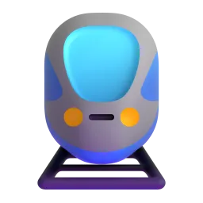
commutingdeadlinesflexible hoursburnouttime off
b Go to the Vocabulary Bank. Tap each card, press 🔊 and repeat. Then do the exercises.
Vocabulary Bank1AWork and work-life balance
feeling completely tired because of too much work →
a better job in the same company →
to travel to work and back every day →
the amount of work you have to do →
you can choose when you start and finish →
doing a lot of useful work →
c Complete the phrases.Вставьте пропущенное слово.
I'm sorry, I can't come tonight — I have to work again.
We worked all weekend to the deadline.
You look tired. You should take some time .
She got a and now she manages a team of ten.
I love my job, but I need a better work-life .
It takes me an hour to to the office.
Anna's four-day week
12 min
a Now listen to Anna on the podcast «Working Life». Many of the words from the Vocabulary Bank are in it. Is she happy with the four-day week?
Podcast: «Working Life»Listen first · Use 🐢 if it's fast · Text at the end
Tom (host):Welcome to «Working Life». Today I'm talking to Anna, a marketing manager at a design agency in Bristol. Anna, your company has been trying a four-day week. How long have you been doing it?
Anna:For six months now. We started in April, and so far it's been amazing.
Tom (host):What was your job like before?
Anna:Honestly, I was exhausted. I worked overtime almost every day, my workload was huge, and I spent two hours a day commuting. I was close to burnout.
Tom (host):And what has changed?
Anna:Well, I've been working from home on Mondays, so I don't commute every day. And we've had fewer meetings. We've cancelled about half of them!
Tom (host):Has it affected your results?
Anna:Not at all. In fact, our team has become more productive. We've met every deadline since April, and two of my colleagues have got promotions.
Tom (host):What do you do on your day off?
Anna:I've been learning to paint! I've finished three paintings so far. My work-life balance has never been better.
Tom (host):Would you go back to five days?
Anna:No way. I've worked here for eight years, and this is the best change the company has ever made.
Anna thinks the four-day week…
b Listen again. Complete the facts.
They've had the four-day week for months.
Before, Anna spent hours a day commuting.
They've cancelled about of their meetings.
Anna has finished paintings so far.
She has worked for the company for years.
c Look at two sentences from the podcast: «I've been learning to paint.» and «I've finished three paintings.» Which one is about an activity that continues, and which one is about a result? This is the grammar of the next stage.Процесс или результат? Это грамматика следующего этапа.
I've been learning to paint. →
I've finished three paintings. →
I've been working from home on Mondays. →
We've cancelled about half of them. →
We've met every deadline since April. →
present perfect simple and continuous
15 min
a Read the Grammar Bank. The examples are from Anna's podcast.
Grammar Bank1Apresent perfect simple vs continuous
present perfect continuous
present perfect simple
form
have / has been + -ing
have / has + V3
use
an activity that started in the past and continues now; how long
a result or an experience; how many / how much, already, never
example
I've been learning to paint for six months.
I've finished three paintings.
question
How long have you been working here?
How many meetings have you cancelled?
for + a period (for six months) · since + a point in time (since April).
Verbs like know, like, have (= own), be are not used with -ing: ✗ I've been knowing her → ✓ I've known her. With work and live both forms are fine: I've worked / I've been working here for eight years.
A finished time (yesterday, in 2019, last week) → past simple: We started in April.
Подсказка. «Я работаю здесь восемь лет» — по-русски настоящее время, а по-английски I've worked / I've been working here for eight years. Процесс и «как долго» → continuous; результат и «сколько» → simple.
Anna to paint for six months.
She three paintings so far.
How long for this company?
I my manager since 2020.
We every deadline since April.
You look tired. overtime again?
b Write the verb in the present perfect continuous or simple.Напишите глагол в нужной форме.
I (commute) to London every day since January.
How many emails (you / write) today?
She (not / take) any time off this year.
They (work) on this project for three weeks.
Tom (get) a promotion! He starts his new job next week.
How long (you / learn) English?
cfor or since?for или since?
I've worked here eight years.
We've had a four-day week April.
She's been working from home the start of the year.
They've been in the meeting two hours.
d Build the questions — you will ask them in Speaking!
the new rules
8 min
a Anna's company has written new rules for the four-day week. Read them. Which rule would you like at your work?
Brightside Design · Our four-day week rules
1. Everyone has to finish their weekly tasks by Thursday evening.
2. You don't have to answer emails on Fridays — your day off is really off.
3. You mustn't book meetings longer than thirty minutes.
4. You are allowed to work from home one day a week.
5. You aren't allowed to take work home on your day off.
6. Managers should check their team's workload every Monday.
b True or false?
Staff must finish their tasks by Friday. →
Nobody needs to answer emails on Fridays. →
A one-hour meeting is OK. →
Staff can work from home one day a week. →
You can take work home on your day off. →
c Look at the words in bold. Which ones mean «it's necessary», «it isn't necessary», «it's forbidden» and «it's OK»? This is the next grammar.Обязательно, не обязательно, запрещено, разрешено? Это следующая грамматика.
has to →
don't have to →
mustn't →
are allowed to →
aren't allowed to →
rules at work
12 min
a Read the Grammar Bank. The examples are from the company rules.
Grammar Bank1Ahave to · don't have to · must · mustn't · be allowed to · should
meaning
form
example
it's necessary
have to / has to (also must for the speaker's own rules)
Everyone has to finish by Thursday.
it isn't necessary
don't / doesn't have to
You don't have to answer emails on Fridays.
it's forbidden
mustn't · aren't allowed to
You mustn't book long meetings.
it's permitted
are allowed to · can
You are allowed to work from home.
it's a good idea
should / shouldn't
Managers should check the workload.
Past: had to / didn't have to / was allowed to (not ✗ musted).
Questions: Do you have to wear a suit? Are you allowed to work from home?
Осторожно!don't have to = «не обязательно», а mustn't = «нельзя». You don't have to come = можно не приходить. You mustn't come = приходить запрещено.
It's Friday, so I answer work emails. I can relax!
You use your phone during the presentation. Switch it off, please.
Anna finish her tasks by Thursday evening.
work from home at your company?
Before the four-day week, Anna work overtime almost every day.
You look exhausted. You take some time off.
b Write the right form: have to, don't have to, mustn't, be allowed to, should, had to.Напишите подходящую форму.
We wear a suit — jeans are fine at our office.
Visitors go into the server room. It's forbidden.
Last year I commute two hours a day. Now I work from home.
In our company we take our laptops home — nobody minds. (= it's OK)
He talk to his manager about his workload. It's too much!
c What do you say? Choose the right sentence.Что вы скажете? Выберите предложение.
There is no dress code at your office. →
Smoking in the building is forbidden. →
Your company lets you work from home on Mondays. →
Anna's email
7 min
a Anna writes to a friend who works too much. Use everything from today: the phrases, the present perfect and the rules.Всё вместе: слова урока + present perfect + правила.
Anna → Kate
Hi Kate! I (think) about you a lot this week.
You (work) overtime for months — please stop!
Since April, we (not / miss) a single deadline.
At my company we answer emails on Fridays — it's great!
I (finish) three paintings — come and see them!
You really talk to your boss about your workload.
Remember: you wait until you have burnout. Do something now!
Your work-life is important. Love, Anna
weak been · have to /hæftə/
5 min
a In fast speech been is short /bɪn/, and have to sounds like /ˈhæftə/. Listen and repeat.
I've been WORKing here for EIGHTYEARS.
How LONG have you been LEARNing ENGlish?
We /ˈhæftə/ FINish by THURSday.
You DON'T /ˈhæftə/ ANswer emails on FRIdays.
You MUSTn't book LONGMEETings.
b Say three true sentences about your job: one with I've been…ing, one with I have to, one with I don't have to.
my working life
8 min
a Your turn. Answer your teacher's questions about your job. Use the present perfect and the rules language.
Press the button
How long have you been working in your job?
What have you been doing at work this week?
What do you have to do every day? What don't you have to do?
Are you allowed to work from home?
Have you ever worked overtime at the weekend? Why?
Would a four-day week work at your company? Why / why not?
I've been working as… for…This week I've been…I have to… / I don't have to…We're (not) allowed to…In my opinion, a four-day week would…
an email to your manager
7 min
a Write a short email to your manager. Ask for flexible hours or a four-day week. One sentence in each line.
b Press «Отправить преподавателю» — your teacher will see your answers.
Готово? Отправьте ответы преподавателю
Откроется окно «Поделиться»: выберите мессенджер и отправьте ссылку преподавателю. Ответы зашифрованы, открыть их может только преподаватель.
Can you…?
3 min
a Your teacher gives feedback. Write the corrections.
Great!
Fix it
b Can you do these things?
I can talk about work and work-life balance with the new phrases
I can choose between I've been doing and I've done
I can talk about rules: have to, don't have to, mustn't, be allowed to
I can understand a podcast about work
What was the most useful thing today?
work and work-life balance
15 min at home
Homework, part 1 of 2: words. Mostly tapping — easy on your phone. Part 2 (grammar) is on the next page — press «Далее».Часть 1: слова урока. Ответы сохраняются сами.
a Look at the picture. Which phrase is it?Какая фраза подходит к картинке?
Every day I take the train to the office and back. →
I stayed at work until 9 p.m. again. →
Now I manage the whole team! →
I'm so tired that I can't work any more. →
I can start at 7 or at 10 — it's my choice. →
We finished the report just in time. →
b How do you say it in English? Write the phrase.Как это по-английски? Напишите фразу.
выгорание →
рабочая нагрузка →
повышение →
баланс работы и личной жизни →
продуктивный →
present perfect · rules
15 min at home
Homework, part 2 of 2: grammar. Look at the colour formulas, then tap or type. At the end press «Отправить преподавателю».Часть 2: грамматика урока. В конце — «Отправить преподавателю».
Remember · ЗапомнитеPresent perfect
I've+been working+here+for eight years.
I've+finished+three reports+today.
been + -ing — процесс и «как долго». have + V3 — результат и «сколько».
Remember · ЗапомнитеRules
You+don't have to+come.+= не обязательно
You+mustn't+come.+= нельзя
a Present perfect simple or continuous? Tap.Выберите форму.
I for this company since 2018.
How many reports this week?
She her boss for ten years.
Sorry I'm late — have you long?
We three new clients this month!
b Write the verb: present perfect simple or continuous.Напишите глагол.
I (learn) Spanish for two years.
He (not / finish) the presentation yet.
How long (you / live) in this city?
They (have) three meetings today!
c Rules at work. Tap the right form.Правила на работе. Выберите форму.
There's no dress code, so we wear a tie.
You tell anyone the password. It's secret!
Are you to use your phone at work?
Yesterday I stay until eight.
You take a break. You look tired.
d Build the sentences.Соберите предложения.
e About you. Four true sentences.О себе: четыре предложения.
Готово? Отправьте ответы преподавателю
Откроется окно «Поделиться»: выберите мессенджер и отправьте ссылку преподавателю. Ответы зашифрованы, открыть их может только преподаватель.
extra practice
10 min
What to do
Build the sentences: tap the words in the right order. Made a mistake? Press «↺ Заново».
Find the mistake in each sentence and write the correct sentence.
Press «Проверить» after each exercise.
1. Build the sentence
2. Find the mistake
I work here since 2018.
I've been knowing my boss for ten years.
Yesterday I must stay until eight.
Do you allowed to work from home?
Play and review
10 min
What to do · Что делать
Play with the words from this lesson — great for review before the next lesson!Играйте со словами урока — это лучший способ повторить их.
Your best results are saved and your teacher can see them.Лучшие результаты сохраняются, преподаватель их видит.
🧩
Match upНайди пару
Tap a word, then its meaning. As fast as you can! · Нажмите слово, потом его значение.
⏱️
60 seconds60 секунд
Choose the right word for the meaning. How many in one minute? · Сколько слов успеете за минуту?
🎧
Listen and spellУслышь и напиши
Listen to the word and write it. Press 🔊 to hear it again. · Послушайте слово и напишите его.
🕵️
DetectiveДетектив
Solve the case! Each clue is a task with this lesson's words and grammar. Every right answer clears one suspect. · Раскройте дело: каждая улика — задание по словам и грамматике урока.
IRIS SCHOOL · Паша · урок 2
Second Chances
What happens after we put things off? Tom's procrastination story, regrets and turning points. Grammar: the third conditional and I wish / If only.
“In the end, we only regret the chances we didn't take.”Popular saying
Intermediate+RegretsThird conditionalI wish / If only60 min
regrets & turning points
10 min
In this lesson you will…
learn 10 phrases about regrets, chances and turning points
understand a podcast: Tom's biggest procrastination story
use the third conditional to talk about an imaginary past: If I had started earlier, I wouldn't have…
say what you regret with I wish / If only
tell the story of a turning point in your life
a Remember Tom's problem from our last lesson — procrastination? Today: what happens after we put things off. Look at the pictures. Which words do you already know?
regret
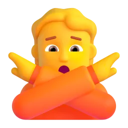
say nolet downtake the plungelook backa turning point
b Go to the Vocabulary Bank. Tap each card, press 🔊 and repeat. Then do the exercises.
Vocabulary Bank2ARegrets and second chances
to say no to an offer →
to disappoint someone who trusted you →
thinking about the past with what you know now →
to finally decide to do something risky →
a moment when your life changes →
to feel sorry about something you did →
c Complete the phrases.Вставьте пропущенное слово.
I don't want to miss this — it's a great job!
I promised to help and then I let him .
How can I make for being late?
We wanted a quick coffee, but we ended talking for three hours.
I learned the way: always save your work.
I regret that job offer.
Tom's turning point
12 min
a Listen to the podcast «Second Chances». Tom is a big procrastinator — like the people in our last lesson's video. What was his turning point?
Podcast: «Second Chances»Listen first · Use 🐢 if it's fast · Text at the end
Amy (host):Welcome to «Second Chances», the podcast about moments that changed our lives. My guest today is Tom, a freelance designer. Tom, tell us about your turning point.
Tom:Well, three years ago I got the biggest project of my life: a website for a hotel chain. I had six weeks. And what did I do? I put it off.
Amy (host):For how long?
Tom:Five weeks! I kept telling myself I worked better under pressure. Then the panic kicked in, and I pulled three all-nighters in a row.
Amy (host):And did you finish?
Tom:No. I missed the deadline by two days, and they cancelled the contract. If I had started earlier, I wouldn't have lost the client.
Amy (host):That must have been hard.
Tom:It was a real wake-up call. I learned the hard way. Now I plan every project in small steps.
Amy (host):Do you have any other regrets?
Tom:Hmm. Ten years ago I turned down a job in London because I was scared. Sometimes I wish I hadn't turned it down. If I had taken it, I would have learned so much.
Amy (host):But…?
Tom:But if I had moved to London, I wouldn't have met my wife! So, in hindsight, maybe it was the right decision.
Tom's turning point was…
b Listen again. Complete the facts.
He had weeks for the project.
He put it off for weeks.
He pulled all-nighters in a row.
He missed the deadline by days.
Ten years ago he turned down a job in .
c Tom says: «If I had started earlier, I wouldn't have lost the client.» What really happened? This is the grammar of the next stage.Что произошло на самом деле? Это грамматика следующего этапа.
Did Tom start the project early? →
Did he lose the client? →
Did he take the job in London? →
Does he really regret it now? →
third conditional
15 min
a Read the Grammar Bank. Last lesson: conditionals 0, 1 and 2. Today: the third — about a past that didn't happen.
Grammar Bank2Athird conditional — an imaginary past
form
example
meaning
1st
If + present, will + verb
If I start today, I'll finish on time.
real future
2nd
If + past, would + verb
If I started earlier, I'd be less stressed.
imaginary present
3rd
If + had + V3, would have + V3
If I had started earlier, I wouldn't have lost the client.
imaginary past: it didn't happen
'd = had in the if-part and would in the result: If I'd known, I'd have called.
The result can come first — then no comma: I would have finished if I had started earlier.
Questions: What would you have done if you had been Tom?
Past condition → present result (mixed): If I had taken the job, I would live in London now.
Подсказка. Третий тип — «если бы тогда…, то…»: сожаление о прошлом, которое уже не изменить. Если бы Том начал раньше (а он не начал), он не потерял бы клиента (а он потерял).
If Tom earlier, he wouldn't have lost the client.
If he had planned the project, he three all-nighters.
If I you were ill, I would have called you.
We would have caught the train if we so late.
If she had studied harder, she the exam.
What would you have done if you the job?
b Write the verb in the third conditional.Напишите глагол в третьем типе.
If Tom (start) the project on time, he would have finished it.
If he hadn't missed the deadline, the hotel (not / cancel) the contract.
If I had set an alarm, I (not / oversleep).
She (not / get) the job if she hadn't taken the plunge.
If we (book) earlier, we would have got cheaper tickets.
What (you / do) if you had missed the flight?
c What really happened → the third conditional. Choose the right sentence.Реальность → третий тип. Выберите верное предложение.
Tom didn't plan, so he missed the deadline. →
I forgot my umbrella, so I got wet. →
She didn't know about the party, so she didn't come. →
d Build the sentences.
Three regrets
8 min
a Tom's podcast asked listeners: «What do you regret?» Read three answers. Who regrets something about now, and who about the past?
Kate, 34
I wish I had learned to swim as a child. Now I'm too embarrassed to go to the pool with my kids. If only I hadn't been so scared of water!
Mark, 41
I wish I spoke Spanish. My company has an office in Madrid and they need people there, but I can't apply. If only I had more time to study!
Lena, 26
I wish I hadn't turned down that internship in Berlin. In hindsight, it was the opportunity of a lifetime. My flatmate took it, and now she works for a top design studio!
b Who…?
…can't swim? →
…said no to an internship? →
…doesn't speak Spanish? →
…doesn't go to the pool with the kids? →
…thinks they missed the opportunity of a lifetime? →
c Look at the sentences with wish / if only. Is it a regret about now or about the past? Look at the verb form — this is the next grammar.Сожаление о настоящем или о прошлом? Посмотрите на форму глагола.
I wish I had learned to swim as a child. →
I wish I spoke Spanish. →
If only I had more time to study! →
I wish I hadn't turned down that internship. →
If only I hadn't been so scared of water! →
I wish / If only
12 min
a Read the Grammar Bank. The examples are from the three regrets.
Grammar Bank2AI wish / If only
regret about…
form
example
reality
now
wish + past simple
I wish I spoke Spanish. · If only I had more time!
I don't speak Spanish. I don't have time.
the past
wish + past perfect (had + V3)
I wish I hadn't turned it down. · If only I had started earlier!
I turned it down. I didn't start early.
If only = a stronger, more emotional I wish.
With be we often say were: I wish I were braver. (was is fine in conversation).
Annoyed with someone else's habit: wish + would: I wish you would stop scrolling!
Подсказка. После wish время «сдвигается назад»: о настоящем — прошедшее (I wish I knew), о прошлом — past perfect (I wish I had known). По-русски в обоих случаях — «жаль, что…» / «вот бы…».
I wish I Spanish. I need it for work.
I wish I that internship. It was a great chance!
If only I more free time this month!
I wish I the project off. I lost the client.
I wish I braver — I never say what I think.
I wish you checking your phone during dinner!
b Write the verb after wish / if only.Напишите глагол после wish / if only.
I wish I (know) the answer — I really don't.
I wish I (not / eat) so much last night.
If only we (leave) earlier! We missed the plane.
I wish my flat (be) bigger.
Kate wishes she (learn) to swim as a child.
I wish I (can) come to your party, but I'm working.
c Make a wish. Choose the sentence that means the same.Выберите предложение с тем же смыслом.
I can't drive. It's a problem. →
I sent that angry email. Big mistake! →
I didn't take the job in London. →
Tom's diary
7 min
a A year later Tom writes in his diary. Use everything from today: the phrases, the third conditional and wish.Всё вместе: слова урока + третий тип + wish.
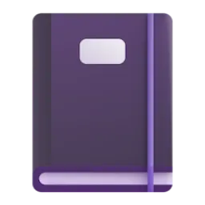
Tom's diary
I still (regret) putting off the hotel project.
If I had made a plan, I (not / let) my client down.
I wish I (not / pull) all those all-nighters.
I wish I (have) more self-discipline — I still check my phone too often!
In hindsight, if I (take) the London job, I wouldn't have met Anna.
It was a turning point: I learned the way.
Now I want to make for my mistakes.
If only I (know) then what I know now!
would've · I'd have
5 min
a In fast speech would have sounds like /ˈwʊdəv/ and wouldn't have like /ˈwʊdntəv/. We still writewould have. Listen and repeat.
If I'd STARTed EARlier, I would've FINished.
I wouldn't've LOST the CLIent.
If I'd KNOWN, I'd've CALLED you.
I WISH I HADn't turned it DOWN.
If ONly I had more TIME!
b Say two true sentences about you: one with I wish I had… and one with If I had…, I would have…
sliding doors
8 min
a Your turn. Answer your teacher's questions — use the third conditional and wish.
Press the button
What was a turning point in your life?
Have you ever turned down an opportunity? Do you regret it?
What job would you have chosen if you hadn't chosen your current one?
What do you wish you had more time for?
What is one thing you wish you had done differently at school?
If you could go back ten years, what advice would you give yourself?
A turning point for me was when…If I hadn't…, I wouldn't have…I wish I had… / I wish I hadn't…In hindsight, …I learned the hard way that…
my turning point
7 min
a Write about a turning point in your life — one sentence in each line. Then read it to your teacher.
b Press «Отправить преподавателю» — your teacher will see your answers.
Готово? Отправьте ответы преподавателю
Откроется окно «Поделиться»: выберите мессенджер и отправьте ссылку преподавателю. Ответы зашифрованы, открыть их может только преподаватель.
Can you…?
3 min
a Your teacher gives feedback. Write the corrections.
Great!
Fix it
b Can you do these things?
I can talk about regrets and turning points with the new phrases
I can use the third conditional: If I had…, I would have…
I can say what I regret with I wish / If only
I can understand a podcast story
What was the most useful thing today?
regrets & turning points
15 min at home
Homework, part 1 of 2: words. Mostly tapping — easy on your phone. Part 2 (grammar) is on the next page — press «Далее».Часть 1: слова урока. Ответы сохраняются сами.
a Look at the picture. Which phrase is it?Какая фраза подходит к картинке?
He said «no, thank you» to the job offer. →
I promised to help, but I didn't come. My friend was upset. →
She was scared, but she finally started her own business. →
Looking back now, I see it was a mistake. →
That day changed my whole life. →
I touched the hot pan. Now I know! →
b How do you say it in English? Write the phrase.Как это по-английски? Напишите фразу.
упустить возможность →
сожалеть →
загладить, компенсировать →
в итоге оказаться →
подвести кого-то →
third conditional · wish
15 min at home
Homework, part 2 of 2: grammar. Look at the colour formulas, then tap or type. At the end press «Отправить преподавателю».Часть 2: грамматика урока. В конце — «Отправить преподавателю».
Remember · ЗапомнитеThird conditional
If I+had started+earlier,+I+wouldn't have lost+the client.
Если бы тогда… (а этого не было) → had + V3, would have + V3.
Remember · ЗапомнитеI wish / If only
I wish I+spoke+Spanish.
I wish I+hadn't turned+it down.
О настоящем — past simple (I wish I knew). О прошлом — past perfect (I wish I had known).
a Third conditional. Tap the correct form.Третий тип. Выберите форму.
If I the bus, I wouldn't have been late.
If you had asked me, I you.
She would have come if she about the party.
If they hadn't booked early, they a table.
What would you have done if you the deadline?
b Write the verbs in the third conditional.Напишите глаголы.
If I (save) my work, I would have kept it.
If he had planned his week, he (not / pull) an all-nighter.
We (win) if we had trained more.
If she (not / turn down) the offer, she would have moved to Berlin.
c I wish / If only. Tap.Выберите форму после wish.
I wish I more money. I can't buy a car.
I wish I so much yesterday. I feel terrible!
If only I how to fix it!
I wish I to the meeting. I missed important news.
I wish it summer now!
d Write the verb after wish.Напишите глагол после wish.
I wish I (live) closer to the sea.
I wish I (not / say) that to my boss.
If only I (start) learning English earlier!
I wish I (can) sing.
e About you. Four true sentences.О себе: четыре предложения.
Готово? Отправьте ответы преподавателю
Откроется окно «Поделиться»: выберите мессенджер и отправьте ссылку преподавателю. Ответы зашифрованы, открыть их может только преподаватель.
extra practice
10 min
What to do
Build the sentences: tap the words in the right order. Made a mistake? Press «↺ Заново».
Find the mistake in each sentence and write the correct sentence.
Press «Проверить» after each exercise.
1. Build the sentence
2. Find the mistake
If I would have known, I would have called you.
I wish I didn't send that email yesterday.
If he hadn't missed the deadline, he wouldn't lose the client.
I wish I can speak Spanish.
Play and review
10 min
What to do · Что делать
Play with the words from this lesson — great for review before the next lesson!Играйте со словами урока — это лучший способ повторить их.
Your best results are saved and your teacher can see them.Лучшие результаты сохраняются, преподаватель их видит.
🧩
Match upНайди пару
Tap a word, then its meaning. As fast as you can! · Нажмите слово, потом его значение.
⏱️
60 seconds60 секунд
Choose the right word for the meaning. How many in one minute? · Сколько слов успеете за минуту?
🎧
Listen and spellУслышь и напиши
Listen to the word and write it. Press 🔊 to hear it again. · Послушайте слово и напишите его.
🕵️
DetectiveДетектив
Solve the case! Each clue is a task with this lesson's words and grammar. Every right answer clears one suspect. · Раскройте дело: каждая улика — задание по словам и грамматике урока.
IRIS SCHOOL · Онлайн-школа · Дмитрий
The Human Factor
Most attacks start with a conversation. A real-life style case study, a whodunnit, modals of deduction — and explaining tech to a CEO.
“Most attacks start with a conversation. The attacker doesn't break in — he's invited in.”From the case study
B2CybersecurityModals of deductionMediation60–65 min
get ready for "The Human Factor"
25 min at home
Before the lesson. Do this at home — it works on your phone. Don't look anything up in part e: it shows your teacher what to focus on. At the end press «Отправить преподавателю».Подготовка к уроку: слова, мини-тест и вопросы о вашей работе.
aWords for the lesson. Tap each card to see the meaning, press 🔊 and repeat. Save the words you want to keep.
b Match the definition and the term.
"a weakness that an attacker can use" →
"to pretend to be another person" →
"tricking people, not computers, to get access" →
"when private data is stolen or made public" →
"software designed to damage or steal" →
c Collocations. Tap the missing word.
to fall a scam
to hack a system
to back your files
to raise the
two-factor
d Write the missing word. The first letter is given.
The attacker i the CEO in a phone call.
Someone l the salary spreadsheet to the press.
The email was a classic p attack.
Always b your files before an update.
eWhat do you already know? Choose the best option. No answers button — just your best guess!
Someone sent the file at 3 a.m. It an insider — only we have access.
She the email — she was on a plane with no Wi-Fi.
I'm not sure. He the link by mistake.
The server is very slow today. Someone a huge backup right now.
Nobody recognised the number. They a fake phone number.
f About you and your work. Answer in two or three sentences.
What do you do in IT? Are you involved in security?
What is the most common security mistake people make at your company?
Does your company train staff to spot phishing? How?
g Prepare a short story for the lesson: a time when you, a colleague or a friend almost fell for a scam or a phishing email. What happened? How did you notice?
Notes for your story
Готово? Отправьте ответы преподавателю
Откроется окно «Поделиться»: выберите мессенджер и отправьте ссылку преподавателю. Ответы зашифрованы, открыть их может только преподаватель.
cybersecurity
12 min
In this lesson you will…
use precise vocabulary for cybersecurity and online crime
speculate about the past with must have, might have, can't have
explain a technical incident to a non-technical person
write a clear warning email to staff
a How secure are you really? Answer honestly and give an example.
Talk about it
Do you use the same password for more than one account?
Have you ever received a phishing email that almost fooled you?
Who is the weakest link in a company's security: software, hardware or people?
b Go to the Vocabulary Bank. Tap each card, press 🔊 and repeat. Then complete the sentences.
Vocabulary Bank1ACybersecurity
The attacker a manager and asked for a payment.
Thousands of passwords were exposed in the data .
Even experienced engineers sometimes fall phishing emails.
If you had your files, you wouldn't have lost them.
The testers found a serious in the payment API.
Luckily, an intern noticed the strange login and raised the .
c Discuss.
Talk about it
What security rules at your work do people ignore most often? Why?
Is it the company's fault or the employee's fault when someone falls for a phishing email?
Should companies test their staff with fake phishing emails?
Give a reason and an example. Then ask a follow-up question: "Why?", "What about you?"
The call from "IT Support"
12 min
a Read the case study. In one sentence: how did the attack work?
The Call from "IT Support"A case study · about 250 words
At 4.45 on a Friday afternoon, Maria, an accountant at a mid-sized logistics company, received a call. "Hi Maria, it's Alex from IT support. We're seeing some strange activity on your account — it looks like someone in another country is trying to log in. I need to verify a few things quickly before the weekend."
Alex sounded friendly and professional. He knew Maria's full name, her manager's name and the name of the accounting software she used every day. He asked her to read out the six-digit code that had just arrived on her phone, "to confirm it's really you". Maria hesitated for a second, then read out the code. Alex thanked her and wished her a nice weekend.
On Monday morning, the finance director discovered that three payments, worth almost €90,000 in total, had been sent to an unknown bank account over the weekend. There was no Alex in the IT department.
The investigation showed that the attacker hadn't used any malware, sophisticated or simple. He had found most of the information on the company website and on social media. Maria's team page listed her role, and her manager had posted about the new accounting software on a professional network. The six-digit code was the second factor of her two-factor authentication — the one thing that should have protected her.
"People think hacking is about code," says the security consultant who led the investigation. "But most attacks start with a conversation. The attacker doesn't break in — he's invited in."
The attack mainly worked because…
b True, False or Doesn't say?
The call came at the end of the working week. →
Alex used malware to get into the system. →
The money was sent on Monday morning. →
Maria had been with the company for many years. →
Most of the information came from public sources. →
The company got the money back. →
c Find a word or phrase in the text. Write it.
to check that something is true (para 1) →
stopped for a moment because she wasn't sure (para 2) →
very advanced, complicated (para 4) →
an expert who gives professional advice (para 5) →
d Discuss.
Talk about it
What were the warning signs? List three.
What would you have done in Maria's place?
What should the company change now?
Give a reason and an example. Then ask a follow-up question: "Why?", "What about you?"
modals of deduction: present and past
12 min
a Read the investigator's notes. How sure is she in each sentence?
1. The attacker must have studied the company website. 2. He might have used a fake caller ID. 3. It can't have been a random call — he knew too much. 4. He must be part of an organised group.
b Read the rules in the Grammar Bank. Then do the exercises.
Grammar Bank1Amodals of deduction
how sure?
present
past
✅ I'm sure it's true
He must be an insider.
He must have known her name.
🤔 It's possible
It might / may / could be a test.
He might / may / could have found it online.
❌ I'm sure it's not true
It can't be a mistake.
It can't / couldn't have been a random call.
Past deduction: modal + have + past participle (must have sent, might have seen, can't have known).
❌ He mustn't have known. (mustn't = prohibition, not deduction) ❌ He must has known.
✅ He can't have known. ✅ He must have known.
Подсказка. must have done = «наверняка сделал», might / could have done = «возможно, сделал», can't have done = «не мог сделать». Для «точно нет» используем can't, а не mustn't.
1 Choose the best option.
The server is down again. Someone the settings — it was fine an hour ago.
She the email — she was on a plane with no Wi-Fi.
I'm not sure who leaked it. It someone from marketing.
He really tired — he's been coding for 14 hours.
They into the old system — it hadn't been updated for years.
2 Rewrite the sentences with a modal of deduction.
I'm sure he found her on LinkedIn. He her on LinkedIn.
Maybe the email came from inside the company. The email from inside the company.
I'm sure it wasn't a technical problem. It a technical problem.
I'm certain they are watching our network now. They our network now.
c Speculate! What must / might / can't have happened?
Talk about it
Your laptop suddenly restarted and all the icons look different.
A colleague is suddenly very rich and drives a new Porsche.
All the coffee machines in the office stopped working at exactly 9.00.
Give two possible explanations and say how sure you are.
weak have: must've, might've, can't have
5 min
a In speech have is weak: must've /ˈmʌstəv/, might've /ˈmaɪtəv/, can't have /ˈkɑːntəv/. Listen and repeat.
/ə/computermust've /ˈmʌstəv/
He must have known her name.
She might have clicked the link.
It can't have been a mistake.
They could have used a fake number.
b Sentence stress: the modal and the main verb are strong, have is weak.
He MUST have STUDied the WEBsite.
It CAN'T have been an ACcident.
Whodunnit: the leaked salaries
10 min
a The company salary spreadsheet was leaked to the whole office. Press the button to get the clues one by one. After each clue, speculate.
Press the button for the first clue
The spreadsheet was sent from the HR manager's account at 2.13 a.m.
The HR manager was at home with flu all week and her laptop was in the office.
The office cleaners work from 1 to 3 a.m.
The HR manager's password was on a sticky note under her keyboard.
Only three people knew the spreadsheet existed: the HR manager, the CEO and the CFO.
The CFO resigned the next morning and moved to a competitor.
The CCTV camera on that floor had been "broken" for two weeks.
It must have been…It can't have been…, because…He might have…That would explain why…I'm not convinced. What if…?
b Decide together: who did it and how? Write your theory.
Our theory
Talk about it
How could the company have prevented this?
Have you ever had to investigate a problem at work? How did you find the cause?
Give a reason and an example. Then ask a follow-up question: "Why?", "What about you?"
Explain it to the CEO
10 min
a Role play. Student A is the head of security. Student B is the CEO, who is not technical. Use the case from the Reading.
Student Ahead of security (you)
Explain what happened, why it happened and what the company must do now. No jargon — or explain it simply!
In simple terms, …Think of it like…The key problem was…He must have…What we need to do now is…The good news is…
Student Bthe CEO (teacher)
You are worried and impatient. You don't understand technical words.
Sorry, what does that mean?Whose fault was it?How much will this cost?Could it happen again?Why didn't two-factor authentication stop it?
b Swap: the teacher explains a technical problem badly. Student A asks for clarification and paraphrases it.
Talk about it
Was it difficult to avoid jargon? Which words did you have to explain?
Do you often explain technical things to non-technical people at work? How do you do it?
Give a reason and an example. Then ask a follow-up question: "Why?", "What about you?"
A warning email to staff
3 min
a Write an email to all staff (150–180 words) in the box at the bottom of this page. Warn them about the "IT support" scam, explain what happened (without names) and give three clear rules.
Useful language:Subject: Important — phone scam targeting staff · We have recently become aware of… · It appears that the caller must have… · Please note that IT support will never… · If you receive a suspicious call, … · Thank you for your vigilance.
b Use at least three modals of deduction and five words from the Vocabulary Bank.
c Press «Отправить преподавателю» and send the link.
Готово? Отправьте ответы преподавателю
Откроется окно «Поделиться»: выберите мессенджер и отправьте ссылку преподавателю. Ответы зашифрованы, открыть их может только преподаватель.
Can you…?
3 min
a Listen to your teacher. Repeat the corrected sentences.
Great phrases you used
Let's fix
b Can you do these things?
I can use precise cybersecurity vocabulary.
I can speculate about the past: must have, might have, can't have.
I can explain a technical incident without jargon.
I can write a clear warning email.
extra practice
10 min
What to do
Build the sentences: tap the words in the right order. Made a mistake? Press «↺ Заново».
Find the mistake in each sentence and write the correct sentence.
Press «Проверить» after each exercise.
1. Build the sentence
2. Find the mistake
He mustn't have seen the email, he was on holiday.
They must have hack the server.
She might has forgotten the password.
It can't be him yesterday.
Homework: words and grammar
20 min at home
Homework. Everything is checked here — press «Проверить» after each exercise. Your answers are saved automatically; at the end press «Отправить преподавателю».Домашнее задание: слова и грамматика урока. Всё проверяется на платформе, ответы сохраняются сами. В конце нажмите «Отправить преподавателю».
a Words: what is it? Tap the right word.Слова: выберите слово по значению.
«fake emails or messages that try to steal your data» →
«when private data is stolen or made public» →
«a weakness that an attacker can use» →
«to let secret information become public» →
«a second check when you log in, e.g. a code on your phone» →
«to pretend to be another person» →
b Words: write it in English.Слова: напишите по-английски.
фишинг →
утечка данных →
уязвимость →
слить, допустить утечку →
c Grammar: tap the correct form.Грамматика: выберите правильную форму.
He isn't answering. He asleep.
The hacker the password from an old leak — it's the only explanation.
She the email — she was on holiday.
I'm not sure, but they our data last year.
That be the boss — he's in Paris today.
The server down — nobody can log in.
d Grammar: find the mistake and write the correct sentence.Найдите ошибку и напишите правильно.
He must has forgotten.
She can't have send it.
They might stolen the password.
e About you: finish the sentences.О себе: закончите предложения.
Готово? Отправьте ответы преподавателю
Откроется окно «Поделиться»: выберите мессенджер и отправьте ссылку преподавателю. Ответы зашифрованы, открыть их может только преподаватель.
Play and review
10 min
What to do · Что делать
Play with the words from this lesson — great for review before the next lesson!Играйте со словами урока — это лучший способ повторить их.
Your best results are saved and your teacher can see them.Лучшие результаты сохраняются, преподаватель их видит.
🧩
Match upНайди пару
Tap a word, then its meaning. As fast as you can! · Нажмите слово, потом его значение.
⏱️
60 seconds60 секунд
Choose the right word for the meaning. How many in one minute? · Сколько слов успеете за минуту?
🎧
Listen and spellУслышь и напиши
Listen to the word and write it. Press 🔊 to hear it again. · Послушайте слово и напишите его.
🕵️
DetectiveДетектив
Solve the case! Each clue is a task with this lesson's words and grammar. Every right answer clears one suspect. · Раскройте дело: каждая улика — задание по словам и грамматике урока.
IRIS SCHOOL · Дмитрий · урок 2
Damage Control
A ransomware attack, a radio news report and a post-incident report. Grammar: the passive in all its forms, It is believed that… / is said to… and have something done.
“Security is a process, not a product.”Bruce Schneier
B2CybersecurityThe passiveListening60–65 min
incident response
10 min
In this lesson you will…
learn 10 key words for talking about a cyberattack and the response to it
understand a radio news report about a ransomware attack
use the passive in all forms: has been hit, is being investigated, should have been patched
report what people believe with It is believed that… / The attackers are thought to have… and say what you have done by others
write a clear, no-jargon update for non-technical staff
a Last lesson: social engineering — how attackers trick people. Today: what happens after the attack. Look at the pictures. In what order would you do these things after a ransomware attack?
files lockeda ransom note
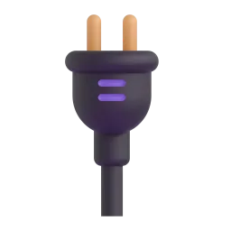
go offlinebackups
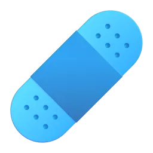
a patch
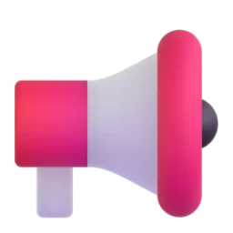
tell the regulator
b Go to the Vocabulary Bank. Tap each card, press 🔊 and repeat. Then do the exercises.
Vocabulary Bank2AIncident response
to stop a problem from spreading →
the time when a system is not working →
to bring data back from a backup →
to fix a weakness in software with an update →
to tell people officially about something →
the real, basic reason for a problem →
c Complete the sentences. Three words are from our last lesson.
The ransomware thousands of files on the shared drive.
We had to take the website for five days.
Luckily, our backups weren't affected, so we restored the data them.
The attackers used a known in the VPN server.
An employee's password was stolen in a attack.
A junior engineer noticed the strange traffic and raised the .
a ransomware attack in the news
10 min
a Listen to a radio news report about Brightwell, an online furniture retailer. You will hear most of the new words. What happened to the company?
Radio: «Tech Brief»Listen first · Use 🐢 if it's fast · Text at the end
Hannah (presenter):Good evening and welcome to Tech Brief. Our top story tonight: the online furniture retailer Brightwell has been hit by a ransomware attack. Its website was taken offline on Saturday morning, and it still hasn't been restored. With me is security analyst Owen Price. Owen, what do we know so far?
Owen (security analyst):Well, the attack seems to have started late on Friday night. Thousands of files were encrypted, including the systems that handle orders and deliveries. On Saturday morning, staff arrived to find a ransom note on every screen.
Hannah (presenter):How much are the attackers asking for?
Owen (security analyst):The ransom is said to be around four million dollars. Brightwell hasn't confirmed that, but the company says it won't pay.
Hannah (presenter):And how did the attackers get in?
Owen (security analyst):That's still being investigated. But it's believed that an employee's account was compromised in a phishing attack. If that's right, the attackers must have used that account to log in to the company's network, and the login wasn't protected by two-factor authentication.
Hannah (presenter):So could the attack have been prevented?
Owen (security analyst):Probably, yes. The attackers used a vulnerability that had been known about for months. A patch was released in March, but it was never installed. That server should have been patched long ago.
Hannah (presenter):What about customers? Has their data been stolen?
Owen (security analyst):We don't know yet. Customers are being contacted by email today, and the breach will have to be disclosed to the regulator within seventy-two hours. The good news is that Brightwell's backups weren't affected, so the systems can be restored. But the downtime is expensive: it's costing the company an estimated half a million pounds a day.
Hannah (presenter):Owen Price, thank you.
What happened to Brightwell?
b Listen again. Complete the facts.
The attack started late on night.
The ransom is said to be around million dollars.
A patch was released in , but it was never installed.
The breach must be disclosed to the regulator within hours.
The downtime is costing about half a million a day.
c All these sentences from the news are passive: be + past participle. What form is be in? This is the grammar of the next stage.
Thousands of files were encrypted. →
That's still being investigated. →
The website still hasn't been restored. →
The vulnerability had been known about for months. →
That server should have been patched long ago. →
the passive: all forms
13 min
a Read the Grammar Bank. The examples are from the Brightwell story. Notice that the passive is always be (in the right form) + past participle.
Grammar Bank2Athe passive — all forms
form
active
passive
present simple
We patch the servers every month.
The servers are patched every month.
present continuous
A team is investigating the attack.
The attack is being investigated.
past simple
The ransomware encrypted thousands of files.
Thousands of files were encrypted.
past continuous
They were copying the data at 2 a.m.
The data was being copied at 2 a.m.
present perfect
Someone has stolen customer data.
Customer data has been stolen.
past perfect
Experts had known about the vulnerability.
The vulnerability had been known about.
future · modal
We will / can restore the systems.
The systems will / can be restored.
modal + have (past)
They should have patched the server.
The server should have been patched.
We use the passive when the action or the result is more important than who did it, when we don't know who did it, and in formal reports.
Add by + agent only when it is important: The attack is being investigated by the police.
Passive infinitive and -ing: All accounts need to be checked. Nobody likes being hacked.
Last lesson's modals work in the passive too: The password must have been stolen.
Подсказка. По-русски часто говорят без подлежащего: «Сервер взломали», «Данные уже восстанавливают». По-английски это пассив: The server was hacked. The data is being restored. Не забывайте be: ❌ The server hacked.
Right now the attack by an external team.
Thousands of files on Friday night.
any customer data been stolen?
By the time the alarm was raised, most of the files .
A patch was available in March. The server months ago!
Don't worry — the systems from backups next week.
b Rewrite the sentences in the passive. Use by only if it is important.
Someone has leaked the salary spreadsheet. The salary spreadsheet .
They are updating the firewall rules right now. The firewall rules right now.
The attackers had stolen the passwords before anyone noticed. The passwords before anyone noticed.
You must change your password every ninety days. Passwords every ninety days.
Somebody should have backed up the database. The database .
Did anyone report the incident? the incident ?
c Build the sentences.
the post-incident report
8 min
a One week later Brightwell's security team writes a report for the board. Read it. What is its main message?
Post-incident report · Ransomware attack · Summary for the board
What happened. Late on Friday night, Brightwell was hit by a ransomware attack. Around forty thousand files were encrypted, and the website and the warehouse systems had to be taken offline. They were restored from backups after five days of downtime. No ransom was paid.
How the attackers got in. The investigation has not been completed, but the attackers are believed to have entered the network through an old VPN server. The login details of a sales manager are thought to have been stolen in a phishing attack two weeks earlier. The server was not protected by two-factor authentication, and a known vulnerability had not been patched.
Root cause. It is now clear that the root cause was organisational, not technical: nobody was responsible for the old server. It had been forgotten when the company moved its systems to the cloud last year.
Customer data. It is estimated that the personal data of about twelve thousand customers was copied. The breach was disclosed to the regulator within seventy-two hours, and all affected customers have been contacted.
Next steps. We are having the whole network audited by an external security firm, and all staff will be trained to recognise phishing. Two-factor authentication must be switched on for every account by the end of the month. Finally, we will have our backups tested every quarter.
The main message of the report is that…
b True, False or Doesn't say?
Brightwell paid the attackers to get its files back. →
The systems were restored from backups. →
The investigators are completely sure how the attackers got in. →
The old server was forgotten during a move to the cloud. →
The sales manager has been fired. →
The external audit will cost more than the ransom. →
c Look at these sentences from the report. Is it a fact, something people think, or a service another company does for Brightwell? This is the grammar of the next stage.
No ransom was paid. →
The attackers are believed to have entered the network through an old VPN server. →
It is estimated that the personal data of about twelve thousand customers was copied. →
We are having the whole network audited by an external security firm. →
We will have our backups tested every quarter. →
It is believed that… · have something done
10 min
a Read the Grammar Bank. The examples are from the report.
Grammar Bank2Areporting passives · have something done
structure
example
use
It is + believed / thought / said / estimated / known + that…
It is estimated that the data of 12,000 customers was copied.
what people think or say — not 100% sure
subject + is believed / said… + to + verb
The ransom is said to be four million dollars.
about the present
subject + is believed / said… + to have + V3
The attackers are believed to have entered through an old VPN server.
about the past
… + to have been + V3
The login details are thought to have been stolen.
about the past, passive
have / get + object + V3
We are having the network audited. We will have our backups tested.
somebody else does it for us (a service)
Common verbs: believe, think, say, report, know, expect, estimate, consider.
are thought to have stolen (they stole) ≠ are thought to have been stolen (something was stolen).
get something done is more informal: I need to get my laptop fixed.
Подсказка. «Считается, что… / Говорят, что… / По оценкам…» → It is believed / said / estimated that… или The attackers are believed to… «Мне починили ноутбук» (я заказал услугу) → I had my laptop fixed. ❌ I fixed my laptop — так звучит, будто вы сделали это сами.
The attackers to be part of a large criminal group.
It that over ten thousand customers were affected.
The hackers are believed the data before they encrypted it.
The passwords are known in a phishing attack.
We our network tested by an external firm last month.
Your laptop is very slow. You should it checked.
b Rewrite the sentences. Start with the words given.
People say that the group has attacked over fifty companies. The group is said over fifty companies.
Experts believe that the ransom is around four million dollars. The ransom is believed around four million dollars.
People think that the passwords were sold online. It that the passwords were sold online.
Investigators think the data was copied on Friday. The data is thought on Friday.
An external firm is auditing our network for us. We are our network by an external firm.
A technician repaired my laptop for me yesterday. I my laptop yesterday.
c Build the sentences.
status update for the board
7 min
a You are Brightwell's head of security. Complete your status update for the board. Use everything from today: the new words, the passive and reporting structures.
To: the Board · Subject: Ransomware incident — status update
All our systems (restore) from backups, and the website is working again.
We managed to (локализовать) the attack before it reached the payment system.
The root was an old VPN server that nobody was responsible for.
That server (not / patch) for over six months before the attack.
The attackers (believe) to have used a stolen password.
The breach (disclose) to the regulator within 72 hours.
At the moment, all affected customers (contact) by our support team.
Next month we (have) the whole network audited.
In hindsight, two-factor authentication (should / switch on) for every account years ago.
weak was, were, been
4 min
a In passive sentences the auxiliaries are weak: was /wəz/, were /wə/, has been /həz bɪn/, should have been /ˈʃʊdəv bɪn/. The stress is on the past participle. Listen and repeat.
The WEBsite was TAken offLINE.
THOUsands of FILES were enCRYPted.
CUStomer DAta has been STOlen.
The SERver should have been PATCHED.
The atTACKers are beLIEVED to have USED a PHISHing email.
b Say two true sentences about your company: one with has been / have been and one with should have been.
what was done?
6 min
a Your turn. Answer your teacher's questions. Use the passive and at least three words from today.
Press the button
Describe a serious IT incident you have seen or heard about. What was done to fix it?
How are updates and patches managed at your company?
What should have been done differently at Brightwell?
How often are backups tested where you work? Should they be tested more often?
Should companies ever pay a ransom? Why / why not?
What is your company having done to improve security this year?
It was found that…It is believed that…… should have been…The root cause was…We had our … checked / audited.In simple terms, …
an update for all staff
6 min
a Write a short update about the attack for all Brightwell staff — most of them are not technical, so no jargon. One sentence in each line. Use the passive.
b Press «Отправить преподавателю» — your teacher will see your answers.
Готово? Отправьте ответы преподавателю
Откроется окно «Поделиться»: выберите мессенджер и отправьте ссылку преподавателю. Ответы зашифрованы, открыть их может только преподаватель.
Can you…?
3 min
a Your teacher gives feedback. Write the corrections.
Great!
Fix it
b Can you do these things?
I can talk about a cyberattack and the response with precise words
I can use the passive in all forms, including should have been + V3
I can report beliefs with It is believed that… / is thought to have…
I can say what we have done by other people
What was the most useful thing today?
incident response
15 min at home
Homework, part 1 of 2: words. Mostly tapping — easy on your phone. Part 2 (grammar) is on the next page — press «Далее».Часть 1: слова урока. Ответы сохраняются сами.
a Look at the picture and read the situation. Which word is it?
All the files are locked and a message on the screen asks for money. →
The website was not working for five days. →
The IT team installed an update to fix the weakness. →
The data came back from last night's backup. →
The team stopped the attack before it reached other servers. →
The real reason: nobody was responsible for the old server. →
b The small words matter. Tap the right word.
The website was taken for five days.
The files were restored a backup.
The breach was disclosed the regulator.
An intern noticed the attack and raised the .
Two accounts were in a phishing attack.
c How do you say it in English? Write the word.
программа-вымогатель →
зашифровать →
время простоя →
первопричина →
официально сообщить (об утечке) →
the passive · reporting passives
20 min at home
Homework, part 2 of 2: grammar. Look at the colour formulas, then tap or type. At the end press «Отправить преподавателю».Часть 2: грамматика урока. В конце — «Отправить преподавателю».
Remember · ЗапомнитеThe passive
Customer data+has been+stolen.
The server+should have been+patched.
Пассив = be в нужной форме + V3: is checked · is being checked · was checked · has been checked · had been checked · will be checked · should have been checked.
Remember · ЗапомнитеIt is believed · have something done
The attackers+are believed+to have used+a phishing email.
We+had+our network+audited.
Считается, что… → It is believed that… / is believed to (have)…. Нам сделали (услуга) → have + object + V3.
a The passive. Tap the correct form.
Our servers every month.
Please don't touch the database — it right now.
The website offline last Saturday.
When we arrived on Saturday, all the files .
This bug is a year old! It should months ago.
b Rewrite the sentences in the passive.
Someone has changed the admin password. The admin password .
They will test the backups every quarter. The backups every quarter.
They were copying the data when we noticed. The data when we noticed.
They should have disclosed the breach earlier. The breach earlier.
c Reporting passives and have something done. Tap.
The group to have attacked fifty companies.
It that the data was sold online.
The attackers are thought a stolen password.
The data is thought on Friday night.
We all our laptops checked last week.
d Rewrite the sentences. Start with the words given.
People say that the ransom is four million dollars. The ransom is said four million dollars.
Experts think that the attackers entered through the VPN. The attackers are thought through the VPN.
People believe that no data was lost. It that no data was lost.
A technician is fixing my laptop for me. I'm my laptop .
e Build the sentences.
f About you. Four true sentences.
Готово? Отправьте ответы преподавателю
Откроется окно «Поделиться»: выберите мессенджер и отправьте ссылку преподавателю. Ответы зашифрованы, открыть их может только преподаватель.
extra practice
10 min
What to do
Build the sentences: tap the words in the right order. Made a mistake? Press «↺ Заново».
Find the mistake in each sentence and write the correct sentence.
Press «Проверить» after each exercise.
1. Build the sentence
2. Find the mistake
The website was took offline on Saturday.
Customer data has stolen.
The attackers are believed to have been used a phishing email.
We had checked our network by an external firm.
Play and review
10 min
What to do · Что делать
Play with the words from this lesson — great for review before the next lesson!Играйте со словами урока — это лучший способ повторить их.
Your best results are saved and your teacher can see them.Лучшие результаты сохраняются, преподаватель их видит.
🧩
Match upНайди пару
Tap a word, then its meaning. As fast as you can! · Нажмите слово, потом его значение.
⏱️
60 seconds60 секунд
Choose the right word for the meaning. How many in one minute? · Сколько слов успеете за минуту?
🎧
Listen and spellУслышь и напиши
Listen to the word and write it. Press 🔊 to hear it again. · Послушайте слово и напишите его.
🕵️
DetectiveДетектив
Solve the case! Each clue is a task with this lesson's words and grammar. Every right answer clears one suspect. · Раскройте дело: каждая улика — задание по словам и грамматике урока.
IRIS SCHOOL · Екатерина · урок 2
A New Life by the Sea
Olga from our last lesson, a year and a half after her big change: settling in, missing home and feeling at home. Grammar step by step: I've lived here for two years / since 2024 — and I moved or I've lived?
“East or West, home is best.”English proverb
B1Life changesPresent perfect: for / sincePresent perfect or past simple60 min
a new life: settling in
10 min
In this lesson you will…
learn 10 phrases about living in a new place10 фраз о жизни на новом месте
understand a podcast interview with Olga — a year and a half after her big changeпонять интервью с Ольгой — через полтора года после переезда
say how long: I've lived here for two years / since 2024говорить «сколько времени»: for / since
choose: I moved (When?) or I've lived (How long?)выбирать: past simple или present perfect
talk about your home, your friends and your life — step by stepрассказать о себе — по шагам
a Remember Olga from our last lesson? She was stuck in a rut, took a year off and moved to Montenegro. A year and a half later — what is her life like? Look at the pictures and guess.Помните Ольгу из прошлого урока? Она взяла год отдыха и переехала в Черногорию. Какая у неё жизнь через полтора года? Посмотрите на картинки и предположите.
by the seapaintinghomesick?
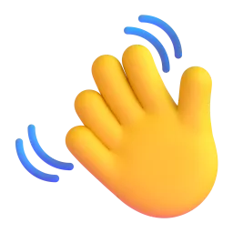
new friendsa new languagecalls home
b Go to the Vocabulary Bank. Tap each card, press 🔊 and repeat. Then match the meanings.Нажимайте на карточки, слушайте и повторяйте. Потом выберите фразу к значению.
Vocabulary Bank2ASettling in
to feel sad because you are far from home →
a person who lives in a place →
to learn a language by listening, not in lessons →
to talk or write to someone regularly →
to feel that you belong to a group or a place →
a confused feeling in a new culture →
c Complete the sentences. Tap the missing word.Вставьте пропущенное слово.
I really my mum. I call her every day.
It took me a year to fit at my new job.
Do you still keep in with your school friends?
He earns a as a taxi driver.
I picked some Spanish when I lived in Madrid.
In the first month she was very and cried every evening.
Olga's fresh start
10 min
a Now listen to the podcast «Fresh Starts». Lucy interviews Olga. You will hear the words from the Vocabulary Bank. How does Olga feel about her new life now?Послушайте подкаст: Люси берёт интервью у Ольги. Вы услышите слова урока. Как Ольга чувствует себя сейчас?
Podcast: «Fresh Starts»Listen first · Если быстро — нажмите 🐢 · Текст — в конце
Lucy (host):Hello and welcome to «Fresh Starts», the podcast about people who changed their lives. My guest today is Olga. She was an accountant in Kazan, and now she lives in a small village by the sea in Montenegro. Olga, how long have you lived here?
Olga:I've lived here for about a year and a half. I moved here in March last year.
Lucy (host):Why did you decide to move abroad?
Olga:For twenty years I was stuck in a rut: home, office, home. So I took a year off and came here. It was the best decision of my life.
Lucy (host):Was it easy at first?
Olga:No, not at all! It was a real culture shock. Everything was different: the food, the language, even the time people have dinner. And I was terribly homesick. I missed my family and my friends.
Lucy (host):And how do you feel now?
Olga:Now I feel at home here. I've made a lot of friends, and the locals are very kind. My neighbour Milena is my best friend here. I've known her since my first day in the village.
Lucy (host):Do you speak the language?
Olga:A little! I've picked up a lot of words from Milena and her family. And I've studied with a teacher since January.
Lucy (host):How do you earn a living?
Olga:I paint! I took up painting when I arrived, and I've sold more than sixty pictures since then. Last month I opened a tiny gallery by the sea.
Lucy (host):Do you keep in touch with your friends in Kazan?
Olga:Of course. We have a video call every Sunday. My sister visited me in the summer, and she loved it here.
Lucy (host):Are you going to go back?
Olga:I don't think so. I went to Kazan last Christmas, but I haven't been back since then. Honestly, this life is a dream come true. I think I've finally settled down.
How does Olga feel about her new life now?
b Listen again. Complete the facts — one word or a number.Послушайте ещё раз. Допишите одно слово или число.
Olga has lived in Montenegro for about a year and a .
She moved there in last year.
She has known Milena since her first in the village.
She has studied with a teacher since .
She has sold more than pictures.
She talks to her friends in Kazan every .
c Look at Olga's sentences. Is it a finished moment in the past (When?) or something that started in the past and is still true now (How long?)? This is the grammar of the next stage.Законченный момент в прошлом (Когда?) или началось в прошлом и продолжается сейчас (Как долго?)? Это грамматика следующего этапа.
I moved here in March last year. →
I've lived here for about a year and a half. →
I took up painting when I arrived. →
I've known her since my first day. →
I went to Kazan last Christmas. →
I haven't been back since then. →
present perfect + for / since
13 min
a Read the Grammar Bank. All the examples are like Olga's sentences from the podcast. Look at the colours: the formula has two parts.Прочитайте Grammar Bank. Все примеры — как фразы Ольги из подкаста. Формула из двух частей.
Grammar Bank2Apresent perfect + for / since: How long?
have / has + V3I've lived hereI've known · she's had · we've been · I haven't seen
+
for + a period · since + a pointfor two years · since 2024for a week · for ages · since March · since I was a child
It started in the past and it is still true now. The question: How long have you…?
for + a period (сколько времени)
since + a point (с какого момента)
for two days · for a week · for six months
since Monday · since March · since 2025
for a year and a half · for a long time · for ages
since my first day · since then · since I was a child
❌ I live here for two years. ❌ I know her since my first day. ❌ How long do you live here? ❌ I've lived here since two years.
✅ I've lived here for two years. ✅ I've known her since my first day. ✅ How long have you lived here? ✅ I've lived here for two years.
Подсказка. По-русски мы говорим в настоящем времени: «Я живу здесь два года», «Я знаю её с первого дня». В английском, если действие началось в прошлом и продолжается до сих пор, нужен present perfect: I've lived, I've known. «… лет / месяцев / дней» → for. «с …» → since.
bStep 1. For or since?Шаг 1. for или since?
a year and a half
March
2025
ten years
my first day
a long time
last Christmas
two weeks
cStep 2. From Russian to English. Choose the correct sentence.Шаг 2. С русского на английский. Выберите верное предложение.
«Я живу здесь полтора года.» →
«Я знаю Милену с первого дня.» →
«Сколько ты здесь живёшь?» →
«Я не была в Казани с Рождества.» →
dStep 3. Write have / has + V3.Шаг 3. Напишите have / has + третью форму.
Olga (live) in Montenegro for a year and a half.
She (know) Milena since her first day.
I (have) this car for ten years.
We (be) friends since school.
I (not / see) my brother since June.
How long (you / work) here?
eStep 4. Build the questions. Then ask your teacher one of them — your teacher answers with for or since.Шаг 4. Соберите вопросы и задайте один преподавателю.
Olga's gallery
7 min
a Olga has a website for her new gallery. Read the «About me» page. You already know a lot from the podcast — what is new?Прочитайте страницу «Обо мне» на сайте галереи Ольги. Что нового вы узнали?
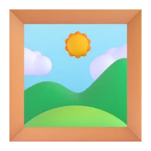
Olga's Gallery · About mea website page · about 150 words
My name is Olga. I was born in Kazan, and I lived there for forty-four years. I worked as an accountant in a big company for twenty years. It wasn't a bad job, but I was stuck in a rut.
In March 2025 I took a year off and moved to Montenegro. I've lived in this little village since then. My year off finished long ago, but I haven't gone back to my old job!
I took up painting in my first month here, and I've painted almost every day since that spring. Last month I opened this gallery. Since then more than three hundred people have visited it. Come and see my pictures — the gallery is open every day from ten to six.
b True or false?Верно или нет?
Olga worked as an accountant for twenty years. →
She still works as an accountant. →
She has lived in the village since March 2025. →
She started painting before she moved. →
She opened the gallery a year ago. →
The gallery is open every day. →
c Compare: I lived there for forty-four years and I've lived in this little village since then. Does Olga still do it? Look at the verb. This is the next grammar.Ольга делает это до сих пор? Посмотрите на форму глагола — это следующая грамматика.
I lived there for forty-four years. →
I worked as an accountant for twenty years. →
I've lived in this little village since then. →
I've painted almost every day since that spring. →
Last month I opened this gallery. →
present perfect or past simple?
10 min
a Read the Grammar Bank. The examples are from Olga's website. One question helps every time: is it still true now?Прочитайте Grammar Bank. Помогает один вопрос: это правда и сейчас?
Grammar Bank2Apresent perfect or past simple?
past simple · When?I moved here in 2025.in March · last year · two years ago · when I arrived · finished: for 20 years
≠
present perfect · How long?I've lived here since 2025.for a year and a half · since then · still true now
Ask yourself: Is it still true now? Yes → present perfect. No, it's finished → past simple.
❌ I've moved here in 2025. ❌ When have you moved here? ❌ She's worked as an accountant for twenty years. (she doesn't now)
✅ I moved here in 2025. (in 2025, ago, last… → past simple) ✅ When did you move here? ✅ She worked as an accountant for twenty years. (finished)
Подсказка. «Я работала бухгалтером 20 лет» — сейчас уже нет → past simple: I worked. «Я живу здесь с 2025 года» — и сейчас тоже → present perfect: I've lived. Слова-подсказки: When? ago, last…, in 2025 → past simple. How long? since → present perfect. А for бывает в обоих — смотрите, закончилось или нет.
bStep 1. Still true or finished? Tap the verb.Шаг 1. Продолжается или закончилось? Выберите глагол.
Olga to Montenegro in March 2025.
She there since then.
She as an accountant for twenty years, but now she's an artist.
I my husband for twenty-five years. We're still very happy.
Two years ago we a flat in the city centre.
My grandmother in Samara for ten years, and then she moved to Moscow.
cStep 2. When? or How long? Tap the question word and the verb.Шаг 2. When? или How long? Выберите.
did Olga move to Montenegro? — In March 2025.
has she lived there? — For about a year and a half.
When she take up painting? — In her first month there.
How long she known Milena? — Since her first day.
dStep 3. Write the verb: past simple or present perfect.Шаг 3. Напишите глагол: past simple или present perfect.
I (move) to this flat three years ago.
I (live) here since 2023.
When (you / start) learning English?
How long (you / have) your car?
My parents (be) married for forty years — the party is next month!
Olga (open) her gallery last month.
eStep 4. Build the sentences.Шаг 4. Соберите предложения.
Olga's message
6 min
a Olga writes to Irina, her old colleague from Kazan. Use everything from today: the phrases, for / since, present perfect or past simple.Ольга пишет бывшей коллеге. Всё вместе: слова урока + for / since + present perfect или past simple.
Olga → Irina
Hi Irina! I (not / write) to you for ages — sorry!
I (live) here for a year and a half now, and I finally feel at .
In the first winter I was very homesick. I (miss) you all terribly!
But I (make) a lot of friends since then, and the locals are lovely.
I've picked quite a lot of the language from my neighbours.
Last month I (open) a little gallery — now I earn a from my pictures!
How long (you / work) in your new office? Let's keep in !
've and 's; weak for
5 min
a In speech, have and has are very short: I've /aɪv/, she's /ʃiːz/. For is weak: /fə/. The big words are strong. Listen and repeat.have / has звучат очень коротко, for — слабо /fə/. Громко — только главные слова.
I've LIVED here for a YEAR and a HALF.
She's KNOWN MiLEna since her FIRSTDAY.
How LONG have you LIVED here?
I MOVED here TWO years aGO.
b Can you hear 've or 's? Press 🔊 and choose what you hear.Слышите ли вы 've или 's? Нажмите 🔊 и выберите.
→
→
→
→
→
→
my life: how long and when
6 min
a Your turn to be Olga's guest on the podcast! Press the button and answer in two sentences: one with How long (I've… for / since…) and one with When (I… ago / in…).Ваша очередь быть гостем подкаста. Отвечайте двумя предложениями: «как долго» и «когда».
Press the button · Нажмите кнопку
How long have you lived in your town? When did you move there?
How long have you lived in your flat or house?
How long have you known your best friend? Where did you meet?
How long have you had your phone? When did you buy it?
How long have you studied English? When did you start?
Imagine you moved abroad like Olga. What would you miss most?
I've lived here for… / since…I moved here … years ago.I've known her since we were…We met in…If I moved abroad, I would miss…
my mini-interview
5 min
a The podcast «Fresh Starts» wants to know about you. Write one sentence in each line — use for / since and the past simple.Подкаст хочет узнать о вас. Напишите по одному предложению в каждой строке.
b Press «Отправить преподавателю» — your teacher will see your answers.Нажмите «Отправить преподавателю».
Готово? Отправьте ответы преподавателю
Откроется окно «Поделиться»: выберите мессенджер и отправьте ссылку преподавателю. Ответы зашифрованы, открыть их может только преподаватель.
Can you…?
3 min
a Listen to your teacher. Write the corrected sentences.Послушайте преподавателя и запишите исправленные фразы.
Great!
Fix it
b Can you do these things?Вы можете это сделать?
I can talk about a new life with the new phrasesговорить о жизни на новом месте новыми фразами
I can say how long: I've lived here for… / since…сказать «как долго» с for / since
I can choose between I moved and I've livedвыбрать past simple или present perfect
I can ask How long have you…? and When did you…?задать вопросы How long…? и When…?
Was the grammar clear today? What was difficult? · Понятна ли была грамматика?
settling in
15 min at home
Homework, part 1 of 2: words. Mostly tapping — easy on your phone. Part 2 (grammar) is on the next page — press «Далее».Часть 1: слова урока. Ответы сохраняются сами.
a Look at the picture. Which phrase is it?Какая фраза подходит к картинке?
Anna lives in London, but she often feels sad when she thinks about her family in Russia. →
On his first day at the new job, Tom met three nice people and they had lunch together. →
Marco was born in this village and has lived here all his life. →
Sam and his old school friend write to each other every week. →
In Japan everything was new and strange for Lisa: the food, the rules, the language. →
Max learned some Italian from his neighbours, without any lessons. →
b How do you say it in English? Write the phrase.Как это по-английски? Напишите фразу.
чувствовать себя как дома →
скучать (по кому-то) →
зарабатывать на жизнь →
вписаться, стать своим →
заводить друзей →
for / since · present perfect or past simple
15 min at home
Homework, part 2 of 2: grammar. Look at the colour formulas, then tap or type. At the end press «Отправить преподавателю».Часть 2: грамматика урока. В конце — «Отправить преподавателю».
Remember · ЗапомнитеHow long? — present perfect
I+'ve lived+here+for two years.
She+'s known+him+since 2020.
«Живу здесь два года» — и сейчас тоже → have / has + V3. Период → for, точка отсчёта → since.
Remember · ЗапомнитеWhen? — past simple
I+moved+here+two years ago.
When+did you+move+here?
Законченный момент: ago, last…, in 2024, when… → past simple.
a For or since? Tap.for или since?
I've had my cat three years.
I've had my cat 2022.
I've had my cat my birthday.
I've had my cat a long time.
I've had my cat last summer.
I've had my cat six months.
b Write have / has + V3.Напишите have / has + V3.
My sister (live) in Kazan since 2019.
I (know) Anna for twenty years.
We (not / see) our cousins since the summer.
How long (you / have) this flat?
c Present perfect or past simple? Tap.Present perfect или past simple?
I to Moscow five years ago.
I in Moscow since then. I love it!
My father in a factory for thirty years. Now he is retired.
When your new job?
How long your best friend?
d Build the sentences.Соберите предложения.
e About you. Four true sentences.О себе: четыре предложения.
Готово? Отправьте ответы преподавателю
Откроется окно «Поделиться»: выберите мессенджер и отправьте ссылку преподавателю. Ответы зашифрованы, открыть их может только преподаватель.
extra practice
10 min
What to do
Build the sentences: tap the words in the right order. Made a mistake? Press «↺ Заново».
Find the mistake in each sentence and write the correct sentence.
Press «Проверить» after each exercise.
1. Build the sentence
2. Find the mistake
I live here since 2020.
How long do you know Anna?
I've moved here two years ago.
We have been friends since ten years.
Play and review
10 min
What to do · Что делать
Play with the words from this lesson — great for review before the next lesson!Играйте со словами урока — это лучший способ повторить их.
Your best results are saved and your teacher can see them.Лучшие результаты сохраняются, преподаватель их видит.
🧩
Match upНайди пару
Tap a word, then its meaning. As fast as you can! · Нажмите слово, потом его значение.
⏱️
60 seconds60 секунд
Choose the right word for the meaning. How many in one minute? · Сколько слов успеете за минуту?
🎧
Listen and spellУслышь и напиши
Listen to the word and write it. Press 🔊 to hear it again. · Послушайте слово и напишите его.
🕵️
DetectiveДетектив
Solve the case! Each clue is a task with this lesson's words and grammar. Every right answer clears one suspect. · Раскройте дело: каждая улика — задание по словам и грамматике урока.
IRIS SCHOOL · Иола · урок 2
Seven Days in the Wild
A week at a survival camp on a tiny Scottish island: tents, fires, midges and fog. B1 camping words, exam-style tasks, too cold to swim · not warm enough and a few, a little, plenty of, hardly any, none.
“There's no such thing as bad weather, only the wrong clothes.”Scandinavian saying
B1Adventure & naturetoo / enoughQuantifiersBlog · Info-gap60–65 min
camping and survival
10 min
Today you will…
use 12 B1 words for camping and survival
read a camp blog and answer exam-style questions (B1 Preliminary, Reading Part 3)
say when something is a problem: too cold to swim, not warm enough, too many midges
talk about amounts: a few, a little, plenty of, hardly any, none
ask for information you don't have, decide together and write an email
a Last time — nature's record-breakers. Today — you in nature! Imagine a week on a wild island: no shops, no Wi-Fi, no cars. Which three things in the pictures would you need first? Why?
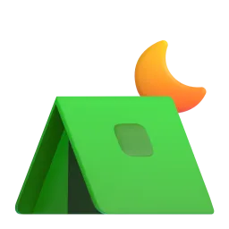
a tent
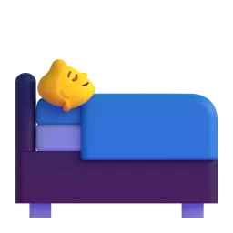
a sleeping bag
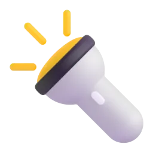
a torcha compassa first-aid kitfirewood
First, I would need… because…Without a … you can't…… isn't as important as…
b Go to the Vocabulary Bank. Tap each card, press 🔊 and repeat. Then do the exercises — some of them you write.
Vocabulary Bank2ACamping and survival
It's getting dark. Where's my ? I can't see anything!
Don't worry, we won't get — I've got a map and a compass.
It started to rain, so we built a from branches and leaves.
She cut her finger, so the leader opened the .
We can't light a fire — we haven't got any .
My boots are , so my feet are always dry.
c Write the word. The first letter is there to help you.
We walked in the rain for three hours and came back s.
Close the door! It's f in here!
It took us an hour to put u the tent.
North is that way — look at the c.
You can sleep outside in a warm sleeping b.
We learned to l a fire without matches.
Maya's camp blog
12 min
a Meet Maya. She is twelve, like you, and she is spending a week at a survival camp on a tiny Scottish island. Read her blog. Find six words from the Vocabulary Bank — and three words from our last lesson about animals!
Maya's blog · «Seven days in the wild»a blog · about 350 words
Day 1 · Hello, Kerra! Hi everyone! I'm Maya, I'm twelve, and I'm spending a week at Wild Kids Camp on the Isle of Kerra, a tiny island off the west coast of Scotland. There are no shops, no cars and no Wi-Fi — just sixteen kids, four leaders and the wild! The island is the habitat of more than a hundred species of birds, and on the first evening we watched hundreds of puffins. They migrate here every spring. My bag was too heavy to carry up the hill — Mum packed too many clothes! And there are too many midges: tiny flying insects that bite. They love me.
Day 2 · The tent disaster Today we put up our tents. It sounds easy, but it was too windy to do it quickly, and our tent was too small for four people, so my friend Zoe and I moved to another one. At night it was freezing. My sleeping bag wasn't warm enough, so I slept in my jumper, my hat and two pairs of socks!
Day 3 · Fire! We learned to light a fire without matches. It took me forty minutes! The problem was the firewood: it wasn't dry enough, because it rained all morning. We were all soaked — my 'waterproof' jacket isn't waterproof at all. On the beach our leader showed us some birds' eggs. They have perfect camouflage: they look just like stones! In the evening we cooked fish over the fire. It was delicious, but there wasn't enough fish for everyone, so the leaders gave us extra bread.
Day 4 · Lost in the fog Today we did a navigation challenge with a map and a compass. My team got lost in the fog for an hour — we were walking too fast to notice the path! But we found our way back. Tomorrow we're building shelters, and we can sleep in them if they're strong enough. I'm not sure I'm brave enough!
bExam task · B1 Preliminary, Reading Part 3. For each question, choose the correct answer.
1 What does Maya say about the Isle of Kerra?
2 Why did Maya and Zoe move to another tent?
3 What was the problem with the fire on Day 3?
4 Why did Maya's team get lost?
5 How does Maya feel about Day 5?
c Find words in the blog. Write them.
tiny flying insects that bite (Day 1) →
finding your way with a map and a compass (Day 4) →
a thick cloud near the ground — you can't see far (Day 4) →
very, very good to eat (Day 3) →
d Maya often writes about problems. Complete her phrases with too or enough — check in the blog. This is the grammar of the next stage.
My bag was heavy to carry up the hill.
My sleeping bag wasn't warm .
The firewood wasn't dry .
Our tent was small for four people.
There wasn't fish for everyone.
I'm not sure I'm brave !
Look: warm enough, dry enough, but enough fish. Where does enough go?
too and enough
10 min
a Read the Grammar Bank. All the examples are from Maya's blog. Then do the exercises — the second one is an exam-style transformation.
Grammar Bank2Atoo · too much / too many · (not) enough
form
meaning
examples from the blog
too + adjective
more than is OK — a problem
Our tent was too small for four people.
too much + uncountable noun
more than you want
Mum packed too much food.
too many + plural noun
There are too many midges. Mum packed too many clothes.
adjective + enough
as much as you need
My sleeping bag wasn't warm enough.
(not) enough + noun
(not) as much / many as you need
There wasn't enough fish for everyone.
… + to + verb / for + person
what is (not) possible / for whom
too heavy to carry · too fast to notice · too small for four people
very ≠ too: The sea was very cold (but maybe we swam). The sea was too cold to swim in (we didn't!).
❌ enough warm → ✅ warm enough · ❌ fish enough → ✅ enough fish · ❌ too much small → ✅ too small
Same meaning, two ways: The tent was too small. = The tent wasn't big enough.
Подсказка. too = «слишком» (это проблема!), enough = «достаточно». enough ставим ПОСЛЕ прилагательного (warm enough), но ПЕРЕД существительным (enough fish).
The sea was cold to swim in.
We didn't have firewood, so we collected more.
There were midges — I had forty bites!
Mum put food in my bag. It was so heavy!
Are you old to go to a camp without your parents?
This jacket isn't for a Scottish summer.
bExam-style task. Complete the second sentence so that it means the same as the first. Use one or two words.
The tent was too small for four people. The tent wasn't for four people.
The firewood was too wet to burn. The firewood wasn't to burn.
Maya isn't old enough to go camping alone. Maya is to go camping alone.
The water was too cold for swimming. The water wasn't for swimming.
We had too little food. We didn't have food.
It was too dark to see the path. It wasn't to see the path.
c Build the sentences.
Day 5: Maya calls home
9 min
a Maya wasn't sure she was brave enough to sleep in a shelter — remember? On Day 5 the campers can make one phone call home. Listen to Maya and her dad. Where did Maya sleep last night?
Phone call: Maya and her dadListen first · Use 🐢 if it's fast · Text at the end
Dad:Maya! How are you, sweetheart? How's the island?
Maya:Hi, Dad! It's amazing. I'm a bit tired, but I'm fine. Guess what — last night I slept in a shelter that I built myself!
Dad:Wow! Was it warm enough?
Maya:Not really — it was freezing! But it was strong enough, and it didn't fall down. A few people went back to their tents in the middle of the night, but I stayed.
Dad:Well done! And are you eating enough?
Maya:Yes, we've got plenty of food! Lots of fish and potatoes. But we've got hardly any chocolate left. I've only got a little hot chocolate powder and a few biscuits.
Dad:Ha! And what about your pocket money? Have you spent much?
Maya:Dad, there are no shops here! I haven't spent any money at all.
Dad:Of course. And how are the midges?
Maya:Terrible! There are too many of them, and I've got lots of bites. I need some more midge spray. Did you pack any?
Dad:Yes, I did. It's in the small pocket of your bag.
Maya:Oh, I didn't see it! Thanks, Dad.
Dad:So what's the plan for tomorrow?
Maya:Tomorrow is the big hike to the lighthouse. It's fourteen kilometres! We need plenty of water, and we can only take a little food, because our bags can't be too heavy.
Dad:Have you got enough warm clothes?
Maya:Yes — too many! You packed six jumpers, Dad! None of my friends have got more than two.
Dad:OK, OK! Have a great hike, and call us on Sunday.
Maya:I will. Love you! Bye!
bExam task · B1 Preliminary, Listening Part 1 style. Choose the correct answer.
1 Where did Maya sleep last night?
2 Where is the midge spray?
3 Why can the campers take only a little food on the hike?
c Listen again. Write a number.
The hike to the lighthouse is kilometres.
Dad packed jumpers.
d Complete what Maya says. Then think: which words go with things you can count (people, biscuits) and which with things you can't count (food, chocolate)? This is the next grammar.
people went back to their tents.
We've got food!
We've got chocolate left.
I've only got hot chocolate powder.
There are shops here!
of my friends have got more than two.
a few, a little, plenty of, hardly any, none
9 min
a Read the Grammar Bank. The examples are from Maya's phone call. Countable or uncountable? Look at the noun first!
Grammar Bank2Aquantifiers
things you can count biscuits, people, midges
things you can't count food, water, chocolate
a large amount
lots of / a lot of biscuits
lots of / a lot of food
more than enough 😊
plenty of torches
plenty of water
a small amount
a few biscuits
a little chocolate
almost nothing
hardly any midges
hardly any chocolate
zero
no shops · not any shops · none
no Wi-Fi · not any money · none
questions
How many jumpers?
How much water?
no + noun: There are no shops.none — without a noun: How many shops are there? — None. or None of my friends…
hardly any already means «almost none», so the verb is positive: ❌ We haven't got hardly any → ✅ We've got hardly any chocolate.
In questions and negatives we often use much / many: Have you spent much? There aren't many midges today.
Challenge: a few = some (good!), few = not many (a pity): I've got a few friends here 😊 · Few people visit the island.
Подсказка. a few / a little = «немного, несколько»; plenty of = «полно, более чем достаточно»; hardly any = «почти нет»; none = «ни одного, нисколько» (без существительного). С исчисляемыми — few, many; с неисчисляемыми — little, much.
We only have biscuits left.
Can I have milk in my tea, please?
Don't worry, we've got water — five bottles each!
There's firewood left — just two small sticks.
How many shops are there on the island? — .
There's Wi-Fi on the island, so I can't post photos.
I've got bites! The midges love me.
b Write one word in each gap.
How water do we need for the hike?
How people are there at the camp?
We've got plenty food, so don't worry.
There were hardly clouds, so we could see the stars.
of my friends has a phone at camp — the leaders keep them all.
I've only got a chocolate, but I can share it.
c Build the sentences.
Day 7: goodbye, Kerra!
5 min
a The last day of camp! Maya writes her final blog post. Use everything from today: the camping words, too / enough and the quantifiers. Write one word in each gap.
Maya's blog · Day 7 · Goodbye, Kerra!
Yesterday we walked to the lighthouse. It was hard, but I was strong to do it!
We took plenty water, so nobody got thirsty.
At the top it was windy to stand up, so we sat down and had lunch.
I've got chocolate left — I gave it all to my friends.
There were hardly midges on the last day — the wind blew them away!
Our team didn't get this time — I had the compass!
My 'waterproof' jacket? I'm going to buy a new one. I was every day!
On the last evening we lit a fire on the beach. This time the firewood was dry !
Kit check for the big hike
8 min
a Before the hike to the lighthouse, the leaders check every team's kit. You are in Team Puffin. Your teacher has Team Seal's list. Look at the rules, then ask your teacher questions and write the answers.
Rules for the hike · 4 people in each team
water: at least 2 litres per person
torches: one per person
waterproof jackets: one per person
compass: one per team
first-aid kit: one per team
bags: not more than 6 kg each
Student ATeam Puffin — your list
Team Puffin
water
10 litres
torches
2
waterproof jackets
4
compass
0
first-aid kit
2
bags
9 kg each
Student BTeam Seal — ask your teacher
How much water have you got?How many torches have you got?Have you got a compass?How heavy are your bags?
water
torches
waterproof jackets
compass
first-aid kit
bags
b Check both teams. Write three problems — use too, (not) enough, hardly any or no.
c Now agree with your teacher: how can the two teams share their kit so that both teams are ready? Write your plan.
Team Seal can give Team Puffin…Then Team Seal will still have enough…Team Puffin can leave … at the camp.Both teams will have…
-ough; too and to
5 min
atoo is strong /tuː/, but to is weak /tə/. And enough ends in /ʌf/! Listen and repeat.
It was TOOCOLD to /tə/ SWIM.
My SLEEPing bag WASn't WARM eNOUGH /ɪˈnʌf/.
There were TOO many MIDges.
We've got PLENty of WAter.
b-ough is the craziest spelling in English! Press 🔊, listen, and choose the sound: like enough /ʌf/, bought /ɔː/, through /uː/ or though /əʊ/?
tough →
thought →
through →
although →
rough →
brought →
Five things for the hike
6 min
aExam-style task · B1 Preliminary, Speaking Part 3. Maya's team can take only five things on the hike to the lighthouse. Talk with your teacher: which five are the most important? Why? Agree at the end.
a torcha compassa first-aid kita waterproof jacketa sleeping bagchocolatea camerawater
What about…?I think … is more important than … because…We don't need … — it's too heavy.Let's take plenty of…Do you agree?OK, so we've decided…
bSpeaking Part 4. Press the button and answer. Give a reason and an example!
Press the button
Would you like to go to a camp like Maya's? Why / why not?
What is too difficult for you to do without a phone?
Are you old enough to go camping without your parents? Why / why not?
What do you never have enough time for?
Do you get too much homework or not enough? Why do you think so?
What's the most beautiful place in nature you've ever visited?
An email to Maya
5 min
aExam-style task · B1 Preliminary, Writing Part 1. Read Maya's email and the notes. Then write your answer (about 100 words) — one or two sentences in each line. Use all the notes.
From: Maya
Hi! I'm back from the island — it was the best week ever! You said you'd like to go to Wild Kids Camp next summer. What would you like to do there most? (← Tell Maya!) Is there anything you're worried about? (← Explain!) And what are you going to pack? (← Say what and why!) Write back soon! Maya
b Press «Отправить преподавателю» — your teacher will see your email.
Готово? Отправьте ответы преподавателю
Откроется окно «Поделиться»: выберите мессенджер и отправьте ссылку преподавателю. Ответы зашифрованы, открыть их может только преподаватель.
Can you…?
3 min
a Your teacher gives feedback. Write the corrections.
Brilliant!
Fix it
b Can you do these things? Tap your answer.
I can use B1 words for camping and survival.
I can use too, too much / many and (not) enough — and put enough in the right place.
I can talk about amounts: a few, a little, plenty of, hardly any, none.
I can answer exam-style reading and listening questions.
I can ask for information and agree on a plan.
What was the most interesting thing today?
camping and survival
15 min at home
Homework, part 1 of 2: words. Tap and type — easy on your phone. Part 2 (grammar) is on the next page — press «Далее».Часть 1: слова урока. Ответы сохраняются сами.
a Look at the picture. Which word is it?
It shows you where north is. →
You open it when someone cuts a finger. →
You build it from branches when it starts to rain. →
You walked in the rain for three hours without a jacket. →
It's dark and you need to find the path. →
You don't know where you are or how to get back. →
b How do you say it in English? Write the word or phrase.Как это по-английски? Напишите слово или фразу.
ставить палатку →
спальный мешок →
развести костёр →
дрова →
непромокаемый →
ледяной, очень холодный →
too / enough · quantifiers
15 min at home
Homework, part 2 of 2: grammar. Look at the colour formulas, then tap or type. At the end press «Отправить преподавателю».Часть 2: грамматика урока. В конце — «Отправить преподавателю».
Remember · Запомнитеtoo / enough
too+cold+to swim
warm+enough
enough+food
too many+midges
too much+food
enough — после прилагательного (warm enough), но перед существительным (enough food). too many + исчисляемые, too much + неисчисляемые.
Remember · ЗапомнитеQuantifiers
a few+biscuits
a little+chocolate
plenty of+water
hardly any+midges
How many biscuits? · How much water? · no + noun · none — без существительного.
a too, too much, too many or enough? Tap.
I can't drink this tea — it's hot.
Is the room big for ten people?
There are cars in the city centre.
I spend time on my phone. I need to stop!
We haven't got chairs. Can you bring two more?
b Complete the second sentence so that it means the same. Use one or two words.
This jumper is too small for me. This jumper isn't for me.
The water was too dirty to drink. The water wasn't to drink.
My brother isn't old enough to drive. My brother is to drive.
The box was so heavy that I couldn't carry it. The box was to carry.
c a few, a little, plenty of, hardly any, no or none? Tap.
I've got friends in my new class — three or four.
Can you give me help with my homework?
Don't hurry — we've got time. The film starts at eight.
There were people in the park — only one man and his dog.
How many sweets are left? — . You ate them all!
There was milk in the fridge, so I had black tea.
d Write much or many.
How water do you drink every day?
How books have you read this year?
There aren't students in my English class.
I haven't got free time this week.
e About you. Four true sentences.О себе: четыре предложения.
Готово? Отправьте ответы преподавателю
Откроется окно «Поделиться»: выберите мессенджер и отправьте ссылку преподавателю. Ответы зашифрованы, открыть их может только преподаватель.
extra practice
10 min
What to do
Build the sentences: tap the words in the right order. Made a mistake? Press «↺ Заново».
Find the mistake in each sentence and write the correct sentence.
Press «Проверить» after each exercise.
1. Build the sentence
2. Find the mistake
The tent wasn't enough big for us.
There were too much midges.
I've only got a few chocolate.
We haven't got hardly any food.
Play and review
10 min
What to do · Что делать
Play with the words from this lesson — great for review before the next lesson!Играйте со словами урока — это лучший способ повторить их.
Your best results are saved and your teacher can see them.Лучшие результаты сохраняются, преподаватель их видит.
🧩
Match upНайди пару
Tap a word, then its meaning. As fast as you can! · Нажмите слово, потом его значение.
⏱️
60 seconds60 секунд
Choose the right word for the meaning. How many in one minute? · Сколько слов успеете за минуту?
🎧
Listen and spellУслышь и напиши
Listen to the word and write it. Press 🔊 to hear it again. · Послушайте слово и напишите его.
🕵️
DetectiveДетектив
Solve the case! Each clue is a task with this lesson's words and grammar. Every right answer clears one suspect. · Раскройте дело: каждая улика — задание по словам и грамматике урока.
IRIS SCHOOL · Ксения · урок 3
A Day to Remember
Emma's day trip to Oxford: a missed train, pouring rain, an old friend and a dead phone. Words for a day out, the past simple and the past continuous, and when / while.
“Every cloud has a silver lining.”English proverb
IntermediateA day outPast simple & continuouswhen / while60 min
a day out
10 min
In this lesson you will…
learn 10 phrases for telling the story of a day out
read Emma's blog about her trip to Oxford
practise the past simple and the past continuous: it was pouring with rain, so we got soaked
join two actions with when / while: I was taking a photo when my phone ran out of battery
tell the story of a day you remember
a Remember Emma from our last lesson? Her big plan for Saturday was a day in Oxford with her sister — and Jack said it was going to rain! Look at the pictures from her day. What do you think happened?Помните Эмму? В субботу она поехала в Оксфорд. Что, по-вашему, случилось?
the trainrainwet!an old friend
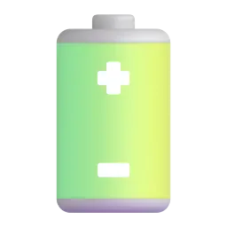
no batterylost
b Go to the Vocabulary Bank. Tap each card, press 🔊 and repeat. Then match the meanings.
Vocabulary Bank2BA day out
to start a journey →
to return home →
to meet someone you know by chance →
to get completely wet →
to visit famous places as a tourist →
to happen in a particular way in the end →
c Complete the phrases.Вставьте пропущенное слово.
Hurry up or we'll the train!
It's pouring rain — take an umbrella.
My phone ran of battery.
I bumped my old teacher at the supermarket.
We set at seven in the morning.
We didn't have a map, so we got .
d Words from our last lesson — you will meet them again in Emma's blog. Complete the sentences.Слова прошлого урока — они встретятся в блоге Эммы.
Saturday was Emma's day , so she didn't go to work.
She the train tickets a week before.
She was really looking to the trip.
Hurry! We're running and the train leaves in five minutes!
Emma met an old friend, and they caught over coffee.
Emma's blog: the Oxford trip
10 min
a Now read Emma's new blog post. Find six phrases from the Vocabulary Bank. Was it a good day in the end?Найдите в блоге шесть фраз урока. Хорошим ли был день?
Emma's blog · «Oxford: a day to remember»
Last Saturday was my day off, and I went to Oxford with my sister, Lucy. I booked the train tickets a week before, and I was really looking forward to the trip.
But we were running late. At ten o'clock, when our train left, we were still buying coffee at the station! So we missed the train and caught the next one. We arrived in Oxford at half past eleven.
Jack was right: it was pouring with rain. People were hurrying along the streets, and tourists were hiding in cafés. I had my umbrella, but Lucy didn't, so she got soaked in five minutes. We went sightseeing anyway: we visited two old colleges and a museum.
At three o'clock we were sitting in a little café by the river and drinking hot chocolate. Suddenly the sun came out, and the city looked beautiful. We walked by the river and took lots of photos. We got back home at nine, tired but happy. In the end, the day turned out really well!
Oh, and I bumped into someone I didn't expect to see… but more about that later!
How was Emma's day in the end?
b True or false?Верно или нет?
Emma and Lucy caught the ten o'clock train. →
It was raining when they arrived in Oxford. →
Lucy had an umbrella. →
They visited a museum. →
At three o'clock they were walking by the river. →
They got back home at nine. →
c Look at these sentences from the blog. Is it a finished action (it happened) or an action in progress (it was happening at that time)? This is the grammar of the next stage.Законченное действие или действие в процессе? Это грамматика следующего этапа.
At ten o'clock we were still buying coffee at the station. →
We missed the train. →
It was pouring with rain. →
Lucy got soaked in five minutes. →
Tourists were hiding in cafés. →
We got back home at nine. →
past simple vs past continuous
15 min
a Read the Grammar Bank. All the examples are from Emma's blog.
Grammar Bank2Bpast simple vs past continuous
past simple
past continuous
use
finished actions: what happened, one thing after another
an action in progress at a time in the past · the background of a story
+
We missed the train. Lucy got soaked.
It was pouring with rain. We were buying coffee.
–
Lucy didn't have an umbrella.
We weren't walking — we were sitting in a café.
?
What time did you get back?
What were you doing at three o'clock?
form
-ed or the irregular form: booked, went, got, took
was / were + verb-ing
I / he / she / it → was …ing · you / we / they → were …ing.
Time phrases like at three o'clock, at that moment often go with the past continuous: At three o'clock we were sitting in a café.
State verbs (know, like, want, need, have = own) are not used in the continuous: ✗ I was having an umbrella ✓ I had an umbrella.
Подсказка. Past simple — «что произошло» (опоздали, промокла, вернулись). Past continuous — «что происходило» в тот момент, фон истории: «лил дождь, люди спешили». Повторявшиеся действия в прошлом — не continuous: I went there every summer.
At ten o'clock Emma and Lucy coffee at the station.
They the ten o'clock train by one minute.
Lucy an umbrella, so she got soaked.
What at three o'clock? — We were sitting in a café.
They two old colleges and a museum.
They back home at nine.
bOxford at half past eleven. What was happening when Emma arrived? Write the past continuous.Что происходило в 11:30? Напишите was / were + -ing.
It (pour) with rain.
People (hurry) along the streets.
A man (sell) umbrellas outside the station.
Two tourists (take) selfies in the rain.
Emma (not / smile) — she was cold!
What (Lucy / do)? She was looking for a shop with umbrellas.
c Past simple or past continuous? Write the verb.Past simple или past continuous? Напишите глагол.
Emma (book) the tickets a week before the trip.
At half past ten they (sit) on the next train.
Lucy (buy) an umbrella in a little shop.
At one o'clock it (still / rain).
They (not / go) to the castle — there wasn't time.
What (you / do) at eight o'clock yesterday evening?
How (you / get) back home yesterday?
Emma (know) the way, so they didn't need a map.
d Build the sentences.Соберите предложения.
Sunday at Jack's
10 min
a Remember? Emma promised to bring Jack a cake on Sunday. Now she's at his place, and she tells him about Oxford — and about the person she «bumped into». Listen. Who was it?Эмма у Джека рассказывает об Оксфорде. Кого она случайно встретила?
Emma at Jack'sListen first · Use 🐢 if it's fast · Text at the end
Jack:Come in, Emma! Is that the cake you promised me? Mmm. So, how was Oxford?
Emma:Wet! It was pouring with rain when we arrived. But in the end it turned out to be a great day.
Jack:I told you it was going to rain! Did you take your umbrella?
Emma:I did, but Lucy didn't. She got soaked! And guess what? While we were walking to the first college, I bumped into Anna, my old school friend!
Jack:No way! What was she doing in Oxford?
Emma:She lives there now. She was waiting for a bus when she saw us. So we went for a coffee and caught up. We last saw each other ten years ago!
Jack:Amazing! Did you take lots of photos?
Emma:Well, I tried. While I was taking a photo of the river, my phone ran out of battery! So Lucy took all the photos.
Jack:Typical! And how was the journey home?
Emma:Funny! When we were walking back to the station, we got lost. All the old streets look the same!
Jack:So how did you find the station?
Emma:A kind old man was walking his dog, so we asked him the way. He walked with us all the way to the station.
Jack:What a day! A day to remember.
Emma:Definitely! Now, let's have some cake.
Emma bumped into…
b Listen again. Complete the details.Послушайте ещё раз и допишите.
Emma met Anna while they were walking to the first .
Anna was waiting for a .
Emma and Anna last saw each other years ago.
Emma's phone ran out of .
They got lost when they were walking back to the .
A kind old man was walking his .
c Open the transcript. In these sentences there are two actions: a long one (it was in progress) and a short one (it happened in the middle of it). Which is the long action? This is the grammar of the next stage.Какое действие длинное (было в процессе)? Это грамматика следующего этапа.
While we were walking to the first college, I bumped into Anna. →
She was waiting for a bus when she saw us. →
While I was taking a photo of the river, my phone ran out of battery. →
When we were walking back to the station, we got lost. →
when and while
13 min
a Read the Grammar Bank. The examples are from Emma's story at Jack's.
Grammar Bank2Bwhen and while
the long action (past continuous)
the short action (past simple)
when
She was waiting for a bus
when she saw us.
while
While I was taking a photo,
my phone ran out of battery.
while + the long action (was / were …ing). when usually + the short action (past simple).
When the sentence starts with When / While, put a comma in the middle: While I was taking a photo, my phone…
Two short actions, one after the other → past simple + past simple: When the sun came out, we walked by the river. (first the sun, then the walk)
Two long actions at the same time → while + past continuous: While Emma was talking, Jack was eating the cake.
Подсказка. Длинное действие (что происходило) — was / were + -ing; короткое, которое «врезалось» в него, — past simple. while ≈ «пока», when ≈ «когда (вдруг)».
While we were walking to the first college, I into Anna.
Anna for a bus when she saw us.
While I was taking a photo, my phone out of battery.
We back to the station when we got lost.
When the sun came out, we by the river.
What when you bumped into Anna?
b Write both verbs: one in the past continuous, one in the past simple.Напишите оба глагола: past continuous и past simple.
I (cook) dinner when my sister (call).
We (drive) to the airport when the car (break) down.
It (start) to rain while we (have) a picnic.
(you / sleep) when I (phone) you last night?
When I (open) the door, I (see) a big box on the floor.
c Join the two sentences. Choose the correct one.Соедините два предложения. Выберите правильный вариант.
I was watching a film. The TV turned off. →
Emma was having coffee. Anna phoned her. →
We were walking home. It started to rain. →
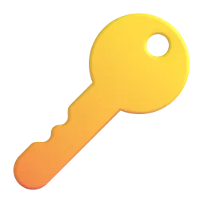
I lost my keys. I was running for the bus. →
d Build the sentences.
Lucy's version
8 min
a Lucy tells her friend the story of the same day. Use everything from today: the phrases, the past simple and the past continuous, when and while.Всё вместе: слова урока + past simple / past continuous + when / while.
Lucy → her friend
We (set) off late, so we missed the ten o'clock train.
When we arrived in Oxford, it was with rain.
I didn't have an umbrella, so I got .
While we (walk) to a college, Emma into an old school friend.
Then Emma's phone ran of battery, so I took all the photos.
At three o'clock we (drink) hot chocolate when the sun (come) out.
We got on the way to the station, but a kind man helped us.
We (get) back home at nine. In the end, the day turned really well!
weak was /wəz/ · were /wə/
5 min
a You can tell the story — now make it sound natural. In the past continuous, was and were are usually weak: /wəz/, /wə/. The stress is on the -ing verb. In short answers they are strong: Yes, I was /wɒz/. Listen and repeat.В past continuous was и were звучат слабо, ударение — на глаголе с -ing.
It /wəz/ POURing with RAIN.
We /wə/ SITting in a CAfé.
What /wə/ you DOing at THREE?
She /wəz/ WAITing for a BUS when she SAW us.
Were you SLEEPing? — YES, I WAS /wɒz/.
b Weak or strong? Say the sentence aloud, then choose.Слабая или сильная форма? Скажите вслух и выберите.
was in «I was running late.» →
was in «Yes, it was.» →
were in «They were hiding in cafés.» →
were in «Were you there? — Yes, we were.» (the last word) →
a day to remember
8 min
a Your turn to tell a story, like Emma! Press the button and answer your teacher's questions. Use the past simple for what happened and the past continuous for the background.
Press the button
What were you doing at eight o'clock yesterday evening?
Tell me about a day trip you remember. Where did you go? What was the weather like?
Have you ever got lost? What were you doing when it happened?
Have you ever bumped into someone you knew in a strange place? What were you doing there?
When did your phone last run out of battery? What were you doing?
What did you do on your last day off? Did it turn out well?
It was a … day.I was …ing when…While I was …ing, …Suddenly…Luckily… / Unfortunately…In the end, it turned out…
my day to remember
7 min
a Now write your own story, like Emma's blog: a day you remember (a trip, a day off, a day when things went wrong). One sentence in each line. Then read it to your teacher.
b Press «Отправить преподавателю» — your teacher will see your answers.
Готово? Отправьте ответы преподавателю
Откроется окно «Поделиться»: выберите мессенджер и отправьте ссылку преподавателю. Ответы зашифрованы, открыть их может только преподаватель.
Can you…?
3 min
a Your teacher gives feedback on your story. Write the corrections.
Great!
Fix it
b Can you do these things?
I can talk about a day out with the new phrases
I can choose between it rained and it was raining
I can join two actions with when / while
I can understand a story about a day out
What was the most useful thing today?
a day out
15 min at home
Homework, part 1 of 2: words. Mostly tapping — easy on your phone. Part 2 (grammar) is on the next page — press «Далее».Часть 1: слова урока. Ответы сохраняются сами.
a Look at the picture. Which phrase is it?Какая фраза подходит к картинке?
Emma arrived at the platform at 10:01. The train left at 10:00. →
Lucy had no umbrella. Her clothes were completely wet. →
Emma met her old friend Anna in the street. She didn't plan it! →
Emma's phone: 0%. →
They didn't know where the station was. →
They visited two old colleges and a museum. →
b How do you say it in English? Write the phrase.Как это по-английски? Напишите фразу.
отправиться в путь →
вернуться (домой) →
лить как из ведра (о дожде) →
оказаться, получиться (в итоге) →
случайно встретить →
past simple & continuous · when / while
15 min at home
Homework, part 2 of 2: grammar. Look at the colour formulas, then tap or type. At the end press «Отправить преподавателю».Часть 2: грамматика урока. В конце — «Отправить преподавателю».
Remember · ЗапомнитеPast simple vs past continuous
We+missed+the train.
It+was pouring+with rain.
Что произошло → past simple. Что происходило в тот момент (фон) → was / were + -ing.
Remember · Запомнитеwhen / while
She+was waiting+for a bus+when she+saw+us.
While I+was taking+a photo,+my phone+ran out+of battery.
Длинное действие — was / were + -ing (часто после while). Короткое — past simple (часто после when).
a Tap the correct form.Выберите правильную форму.
At eight o'clock last night I dinner.
Last Saturday we the 10:30 train to Oxford.
Lucy an umbrella.
I TV when the lights went out.
While she was cooking, she her finger.
What when I called you?
b Past simple or past continuous? Write the verb.Past simple или past continuous? Напишите глагол.
At seven o'clock this morning I (sleep).
I (lose) my keys while I was running for the bus.
They (have) lunch when the fire alarm rang.
She (not / listen) to me — she was looking at her phone.
How (you / get) to the station yesterday?
c Join the two sentences. Tap the correct one.Соедините два предложения. Выберите правильный вариант.
I was having a shower. The phone rang. →
I was cooking dinner. I burnt my hand. →
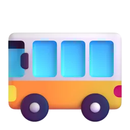
We were waiting for the bus. It started to snow. →
d Build the sentences.Соберите предложения.
e About you. Four true sentences.О себе: четыре предложения.
Готово? Отправьте ответы преподавателю
Откроется окно «Поделиться»: выберите мессенджер и отправьте ссылку преподавателю. Ответы зашифрованы, открыть их может только преподаватель.
extra practice
10 min
What to do
Build the sentences: tap the words in the right order. Made a mistake? Press «↺ Заново».
Find the mistake in each sentence and write the correct sentence.
Press «Проверить» after each exercise.
1. Build the sentence
2. Find the mistake
At ten o'clock we was buying coffee.
When I was walk home, I saw Anna.
She didn't had an umbrella.
What did you doing at three o'clock?
Play and review
10 min
What to do · Что делать
Play with the words from this lesson — great for review before the next lesson!Играйте со словами урока — это лучший способ повторить их.
Your best results are saved and your teacher can see them.Лучшие результаты сохраняются, преподаватель их видит.
🧩
Match upНайди пару
Tap a word, then its meaning. As fast as you can! · Нажмите слово, потом его значение.
⏱️
60 seconds60 секунд
Choose the right word for the meaning. How many in one minute? · Сколько слов успеете за минуту?
🎧
Listen and spellУслышь и напиши
Listen to the word and write it. Press 🔊 to hear it again. · Послушайте слово и напишите его.
🕵️
DetectiveДетектив
Solve the case! Each clue is a task with this lesson's words and grammar. Every right answer clears one suspect. · Раскройте дело: каждая улика — задание по словам и грамматике урока.
IRIS SCHOOL · Марина · урок 3
Plans and Promises
Lily is planning a surprise party for her Gran's 80th birthday — and then everything changes. Party words, arrangements and plans, and quick decisions, offers and promises with will.
“Many hands make light work.”English proverb
IntermediateCelebrationsFuture formswill · going to60 min
parties and plans
10 min
In this lesson you will…
learn 10 phrases about parties and making plans
understand a phone call: Lily's secret plan
talk about arrangements and plans: We're meeting at seven. I'm going to bake a cake.
make quick decisions, offers and promises with will: I'll give you a hand!
plan a celebration — step by step, with helpful phrases
a Remember Lily from our first lesson, and the family recipes from our last lesson? Today Lily is planning something special for her grandmother. Look at the pictures. What do you think she's planning?Что, по-вашему, планирует Лили?
Grana birthday cakeinvitations
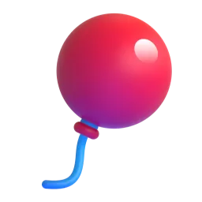
balloonsa toasta secret
b Go to the Vocabulary Bank. Tap each card, press 🔊 and repeat. Then match the meanings.
Vocabulary Bank2AParties and plans
to cancel an event →
to help someone →
to be responsible for something →
to decide on the day for an event →
a party that the guest of honour doesn't know about →
not to tell anyone →
c Which verb? Make the phrases.Какой глагол? Соберите фразы.
a party
a date
out invitations
up decorations
a toast
someone a hand
d Words from our last two lessons — you will meet them again in Lily's story. Complete the sentences.Слова прошлых уроков — они встретятся в истории Лили.
Gran has a terrible sweet — she loves cakes.
Mum is going to make lemonade, not lemonade from a shop.
Lily has Gran's old for chocolate cake.
On Friday I need to run some : candles, balloons, a card.
We don't see our cousins very often, so we're going to catch at the party.
We always cook too much, so there are always the next day.
Lily's secret plan
12 min
a Now you know the party words. Lily is calling her brother Sam. Listen. What is she planning, and why is it a secret?Послушайте: что планирует Лили и почему это секрет?
Phone call: Lily and SamListen first · Use 🐢 if it's fast · Text at the end
Sam:Hi, Lily! Mum says you've got some big news.
Lily:Hi, Sam! Yes. Gran is eighty next Saturday, and we're throwing her a surprise party!
Sam:Brilliant! Where are you having it?
Lily:We're having it at Luigi's, the little Italian restaurant near her house. I booked a table for twenty people this morning.
Sam:Twenty people! What time?
Lily:We're meeting there at seven. I'm sending out the invitations tonight.
Sam:But how are you getting Gran to the restaurant? It's a surprise!
Lily:Dad's taking her out for a walk at half past six. Then he's going to say, «Let's have a coffee at Luigi's.»
Sam:Ha! Clever. And what about the cake? You know Gran has a terrible sweet tooth.
Lily:I know! I'm going to bake her favourite chocolate cake, with her own recipe. And Mum's going to make homemade lemonade.
Sam:And the decorations?
Lily:Aunt Kate is in charge of the decorations. She's going to put up balloons and old family photos.
Sam:Is there anything I can do?
Lily:Yes! Can you make a toast? You're good at speeches.
Sam:Me? Well… OK. I'm going to write something funny. And Lily, remember: it's a secret!
Lily:Of course! I'm not going to tell anyone.
Lily is planning…
b Listen again. Complete the details.Послушайте ещё раз и допишите.
The party is next .
Lily booked a table for people.
Everyone is meeting at the restaurant at .
At half past six Dad is taking Gran for a .
Lily is going to bake a chocolate .
Sam is going to make a .
c Open the transcript. Lily talks about the future in two ways. Is it an arrangement (the time and place are fixed, other people know) or a plan (she has decided, but nothing is booked)? This is the grammar of the next stage.Договорённость (время и место назначены) или план-намерение? Это грамматика следующего этапа.
We're having it at Luigi's. →
We're meeting there at seven. →
I'm going to bake her favourite chocolate cake. →
Dad's taking her out for a walk at half past six. →
She's going to put up balloons and old family photos. →
I'm going to write something funny. →
arrangements and plans
14 min
a Read the Grammar Bank. All the examples are from Lily's phone call. You know the present continuous from our first lesson (I'm working from home this week) — now we use it for the future.Present continuous вы уже знаете — теперь он о будущем.
Grammar Bank2Athe future: present continuous and be going to
form
when?
example
present continuous
arrangement: the time and place are fixed, other people know
We're meeting at Luigi's at seven. Dad's taking Gran for a walk.
be going to + verb
plan, intention: I've decided, but nothing is booked
I'm going to bake a chocolate cake.
be going to + verb
prediction: I can see it now
Look at those clouds! It's going to rain.
– and ?: We're not telling her. · I'm not going to tell anyone. · What are you doing on Saturday? · Are you going to make a toast?
Often both forms are possible: I'm seeing Anna tomorrow / I'm going to see Anna tomorrow. With a fixed time and other people, the present continuous is more natural.
With go we usually say I'm going to the party, not I'm going to go to the party.
Подсказка. Есть время, место, бронь, договорились с людьми → We're meeting. Решила, собираюсь (но ещё ничего не заказано) → I'm going to…. Форма «настоящая», а смысл — будущее, как в русском «Завтра я встречаюсь с подругой».
The table is booked: we at Luigi's at seven.
Lily has decided: she a chocolate cake.
What on Saturday evening? — I'm going to Gran's party!
It's a secret. We Gran about the party.
Look at the sky! It rain.
to make a toast, Sam?
bLily's diary for next week. Everything is arranged. Write the verb in the present continuous.В ежедневнике всё уже назначено — пишем present continuous.
Mon 10:00 — Luigi's: the manager → On Monday Lily (meet) the manager at Luigi's.
Wed 18:30 — Mum: photos → On Wednesday evening Lily (pick up) the old photos from Mum.
Thu — Aunt Kate: dinner at Lily's → On Thursday Aunt Kate (come) to Lily's for dinner.
Fri 17:00 — Lily + Sam: balloons → On Friday Lily and Sam (collect) the balloons.
Sat 18:30 — Dad + Gran: walk → On Saturday Dad (take) Gran for a walk.
Sun — nothing! → On Sunday Lily (not / do) anything!
c Plans and predictions. Write going to + the verb.Напишите going to + глагол.
Gran loves photos, so Aunt Kate (put up) old family pictures.
Sam (write) a funny toast.
We (not / tell) Gran anything.
What (you / wear) to the party?
Look at all that food! We (have) a lot of leftovers.
d Build the questions — you will ask your teacher these questions in Speaking.Соберите вопросы — вы зададите их в говорении.
the family chat
9 min
a Everything is arranged… but two days before the party something goes wrong. Read the family group chat. What is the problem, and how do they solve it?За два дня до праздника — проблема. Прочитайте семейный чат.
Family chat · «Gran's 80th 🤫»
Lily: Bad news, everyone! Luigi's phoned this morning. There's a problem with their kitchen, so they're closed on Saturday. 😱
Sam: Oh no! Do we need to call off the party?
Mum: No way! Wait — I know! We'll have it at our house. I'll cook.
Aunt Kate: Great idea! I'll bring my homemade apple pie. And I'll put up the decorations on Saturday morning.
Lily: Thanks, Mum! Then I'll phone everyone tonight and tell them about the new place. On Friday I'm running some errands: candles, balloons and a card.
Dad: Twenty people in our living room? 😅 OK, I'll move the sofa. And I'll give you a hand in the kitchen, if you like.
Sam: Don't worry about the toast — I've written it. I think Gran will love it.
Dad: And I promise I won't say a word to her. She thinks we're just going for a walk! 🤫
What's the problem?
b Who…?
…heard the bad news from the restaurant? →
…is going to cook? →
…is bringing an apple pie? →
…is going to move the sofa? →
…is running errands on Friday? →
…promises not to say anything to Gran? →
c Look at the sentences with will ('ll / won't). Why do they use will? This is the grammar of the next stage.Почему здесь will? Это грамматика следующего этапа.
Wait — I know! We'll have it at our house. →
I'll give you a hand in the kitchen, if you like. →
I promise I won't say a word to her. →
I think Gran will love it. →
will or going to?
13 min
a Read the Grammar Bank. The examples are from the family chat. Compare them with the plans from Lily's phone call.
Grammar Bank2Awill or going to?
form
when?
example
will + verb
a decision now, at the moment of speaking
Wait — I know! We'll have it at our house.
will + verb
an offer
I'll give you a hand. · Shall I move the sofa?
will + verb
a promise
I promise I won't say a word.
will + verb
a prediction — your opinion (I think, I'm sure, probably)
I think Gran will love it.
be going to
a plan — you decided before
I'm going to bake a cake. (I decided last week.)
will not = won't /wəʊnt/.
Offers as questions: Shall I…? / Shall we…? — not Will I help you?
I think… + will: I think it'll be a great party. · I don't think he'll come.
Подсказка. Решили прямо сейчас, предлагаете помощь, обещаете → I'll…. Решили раньше → I'm going to…. «Тебе помочь?» = Shall I help you?
«We haven't got any candles!» — «Don't worry, I some on my way home.»
«This box is so heavy!» — « I help you?»
I promise I late on Saturday.
I think Gran the party.
I my blue dress to the party. I decided last week.
«What would you like to drink?» — «I some lemonade, please.»
b What do you say? Choose the best sentence.Что вы скажете в этой ситуации?
The phone is ringing. You are next to it. →
Your friend's suitcase is very heavy. →
Your sister tells you a secret. →
You decided last month to learn Italian. →
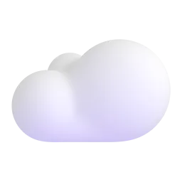
There are big black clouds in the sky. →
c Write the verb: will, won't or going to.Напишите will, won't или going to.
«I'm so thirsty!» — «I (get) you some water.»
Don't worry, I (not / forget) the candles. I promise!
We (visit) Gran on Sunday — we decided yesterday.
I think it (be) a wonderful evening.
(I / open) the window? It's hot in here.
Sam (make) a toast at the party — he's already written it.
d Build the sentences.
Lily's invitation
7 min
a Lily writes to Gran's best friend, Margaret, about the new plan. Use everything from today: the party phrases, plans and arrangements, and will.Всё вместе: слова урока + present continuous / going to / will.
Lily → Margaret
Dear Margaret, we're a surprise party for Gran's eightieth birthday!
We (meet) at our house at seven on Saturday — it's all arranged.
At half past six Dad (take) Gran for a walk, so she won't see the guests arrive.
If you like, I (pick) you up at a quarter past six.
I'm sure Gran (be) very happy to see you!
Could you give us a with the food on Saturday morning?
gonna · I'll · won't
5 min
a You have practised the forms — now say them naturally. In fast speech going to often sounds like /ˈɡənə/, and I will becomes I'll /aɪl/. We still writegoing to. Listen and repeat.В быстрой речи going to звучит как «гона», I will → I'll. Пишем всё равно going to.
I'm gonna BAKE a CAKE.
We're MEETing at SEven.
I'll GIVE you a HAND.
Shall I HELP you?
I PROmise I WON'T tell Anyone.
bwon't /wəʊnt/ or want /wɒnt/? Press 🔊, listen and choose.Послушайте и выберите: won't или want?
Sentence 1 →
Sentence 2 →
Sentence 3 →
Sentence 4 →
plans — step by step
10 min
aStep 1. Ask. Ask your teacher the three questions you built in Grammar, exercise d. Listen and react: Really? That sounds great!Шаг 1. Задайте преподавателю три вопроса из упражнения d.
bStep 2. Answer. Press the button. Answer in two or three sentences — use the phrases below.Шаг 2. Нажмите кнопку и ответьте 2–3 предложениями, опираясь на фразы.
Press the button
What are you doing this weekend?
Are you going to see your family soon? What are you going to do together?
Who is in charge of birthdays and parties in your family?
What's the next celebration in your family? Are you making any plans?
Do you prefer throwing parties or going to them? Why?
Have you ever had a surprise party? Would you like one?
I'm …ing on Saturday.I'm going to…I think it'll be…Probably…In my family, … is in charge of…To be honest, I'm not sure yet.
cStep 3. Help Lily! Your teacher is Lily on the day of the party. She tells you a problem — offer help or make a quick decision with I'll… or Shall I…?Шаг 3. «Лили» называет проблему — вы предлагаете помощь: I'll… / Shall I…?
There's no milk for the coffee. · The balloons are still in the car. · Gran is coming early! · Nobody can find the candles. · Sam is nervous about his toast.
Don't worry, I'll…Shall I…?I'll … right now.I promise I won't…Good idea! Then I'll…
my next celebration
7 min
a Now it's your turn to plan, like Lily: write about your next celebration (a birthday, a holiday, a family dinner…). One sentence in each line. Then read it to your teacher.Опишите свой ближайший праздник: одно предложение в строке.
Example: My son is ten next month, so we're throwing a party. We're having it at home on the fifteenth. I'm going to bake a cake with my mum's recipe. My husband is in charge of the games. I think the children will love it!
b Press «Отправить преподавателю» — your teacher will see your answers.Нажмите «Отправить преподавателю».
Готово? Отправьте ответы преподавателю
Откроется окно «Поделиться»: выберите мессенджер и отправьте ссылку преподавателю. Ответы зашифрованы, открыть их может только преподаватель.
Can you…?
3 min
a Your teacher gives feedback on your speaking and writing. Write the corrections.Запишите исправления преподавателя.
Great!
Fix it
b Can you do these things?
I can talk about parties and plans with the new phrases
I can talk about arrangements and plans: We're meeting… / I'm going to…
I can make offers, promises and quick decisions: I'll… / Shall I…?
I can understand a phone call about plans
What was the most useful thing today?
parties and plans
15 min at home
Homework, part 1 of 2: words. Mostly tapping — easy on your phone. Part 2 (grammar) is on the next page — press «Далее».Часть 1: слова урока. Ответы сохраняются сами.
a Look at the picture. Which phrase is it?Какая фраза подходит к картинке?
Nobody tells Gran about the party. She'll see everyone when she arrives. →
It was raining, so they cancelled the barbecue. →
Aunt Kate hangs balloons and photos on the walls. →
Sam stands up, says some nice words about Gran, and everyone drinks. →
Dad helps Mum in the kitchen. →
The family decides: the party is on Saturday the twelfth. →
b How do you say it in English? Write the phrase.Как это по-английски? Напишите фразу.
устроить вечеринку →
разослать приглашения →
отвечать за (что-то) →
держать в секрете →
отменить (мероприятие) →
c Words from all three lessons. Tap the missing word.Слова всех трёх уроков. Выберите слово.
I have a sweet — I can't say no to cake.
This bread is — my husband made it.
On Saturdays I usually run : the bank, the post office, the shop.
Let's meet for coffee and catch !
arrangements, plans and will
15 min at home
Homework, part 2 of 2: grammar. Look at the colour formulas, then tap or type. At the end press «Отправить преподавателю».Часть 2: грамматика урока. В конце — «Отправить преподавателю».
Remember · ЗапомнитеArrangements and plans
We're+meeting+at Luigi's+at seven.
I'm+going to+bake+a cake.
We're meeting — договорились (время, место, бронь). I'm going to — решила заранее, собираюсь.
Remember · Запомнитеwill
I'll+give+you a hand.
Shall+I+help+you?
I promise I+won't+tell+anyone.
I'll — решаю сейчас, предлагаю, обещаю. «Тебе помочь?» = Shall I…? Мнение о будущем: I think … will…
a Arrangement, plan or quick decision? Tap the correct form.Выберите правильную форму.
I've booked a table. We dinner at Luigi's at eight.
«The doorbell!» — «I it.»
She learn to drive — she decided last year.
Look at the time! We miss the train!
I promise I forget your birthday this year.
I bring some lemonade?
b Arrangements: write the present continuous.Договорённости: напишите present continuous.
We (fly) to Sochi on Friday — the tickets are on my phone.
My sister (come) for dinner tomorrow.
What time (you / meet) your friends on Saturday?
I (not / work) next Monday — it's a holiday.
c will or going to? Write the verb.will или going to? Напишите глагол.
«I'm cold.» — «I (close) the window.»
I've decided: I (learn) to make my grandmother's pie.
Don't worry, I (not / tell) anyone.
I think you (love) this recipe!
d Build the sentences.Соберите предложения.
e About you. Four true sentences.О себе: четыре предложения.
Готово? Отправьте ответы преподавателю
Откроется окно «Поделиться»: выберите мессенджер и отправьте ссылку преподавателю. Ответы зашифрованы, открыть их может только преподаватель.
extra practice
10 min
What to do
Build the sentences: tap the words in the right order. Made a mistake? Press «↺ Заново».
Find the mistake in each sentence and write the correct sentence.
Press «Проверить» after each exercise.
1. Build the sentence
2. Find the mistake
We going to throw a party for Gran.
Will I help you with the bags?
I promise I don't tell anyone.
What do you do this weekend?
Play and review
10 min
What to do · Что делать
Play with the words from this lesson — great for review before the next lesson!Играйте со словами урока — это лучший способ повторить их.
Your best results are saved and your teacher can see them.Лучшие результаты сохраняются, преподаватель их видит.
🧩
Match upНайди пару
Tap a word, then its meaning. As fast as you can! · Нажмите слово, потом его значение.
⏱️
60 seconds60 секунд
Choose the right word for the meaning. How many in one minute? · Сколько слов успеете за минуту?
🎧
Listen and spellУслышь и напиши
Listen to the word and write it. Press 🔊 to hear it again. · Послушайте слово и напишите его.
🕵️
DetectiveДетектив
Solve the case! Each clue is a task with this lesson's words and grammar. Every right answer clears one suspect. · Раскройте дело: каждая улика — задание по словам и грамматике урока.
IRIS SCHOOL · Милана · урок 3
The Hot Chocolate Girl
Zoe's first shift at a beach café went very wrong — and then her story went viral. Tell a story with the past simple, past continuous and past perfect.
“Experience is the name everyone gives to their mistakes.”Oscar Wilde
B1StoriesNarrative tensesPast perfect60 min
when things go wrong
8 min
In this lesson you will…
learn 10 words for telling a story about a day that went wrong10 слов для рассказа о неудачном дне
read Zoe's blog about her first shift at workпрочитать блог Зои о её первой смене
tell a story with past simple, past continuous and past perfectрассказывать историю в трёх прошедших временах
use the past perfect to go back in time: I realised I had overslept.past perfect — «шаг назад» в прошлом
tell your own story about a day that went wrongрассказать свою историю
a Remember Jess and Max from «Work Talk» and their unusual jobs? Today we meet Zoe, 17, and her very first shift at work. Look at the pictures: what do you think went wrong?Вспомните прошлый урок о работе. Сегодня — первый рабочий день Зои. Что, по-вашему, пошло не так?
oversleepno batteryrushspillembarrassedgo viral
b Go to the Vocabulary Bank. Tap each card, press 🔊 and repeat. Then match the meanings and the words.
Vocabulary Bank2AWhen things go wrong
to sleep longer than you planned →
to say sorry →
to go somewhere very fast because you are late →
feeling silly when other people are looking at you →
to suddenly understand or notice something →
a person who buys something in a café or a shop →
c Complete the sentences. Some words are from our last two lessons!Вставьте слово. Некоторые слова — из прошлых уроков.
Oh no! I've coffee all over my new uniform.
My phone ran of battery, so I couldn't call you.
Don't panic! Calm and try again.
It turned that the new waiter was the boss's son.
I work the early — from six in the morning to two.
Her video got two million views in one night. It went !
Zoe's blog
9 min
a Now read Zoe's blog about her first shift. Find six words from the Vocabulary Bank. Was the day a disaster?
Zoe's blog · «My first shift»
Last summer I got my first job: I was a waitress at The Blue Wave, a little café by the beach. I had never worked before, so I was excited — and very nervous.
On the morning of my first shift, I opened my eyes, looked at the clock and realised it was ten past nine. My shift started at nine! I had overslept. My phone had run out of battery in the night, so my alarm hadn't gone off. I put on my uniform and rushed to the café without breakfast.
When I arrived, the café was already full of customers, and the manager, Rosa, was waiting for me at the door. She didn't look happy. «Table six,» she said. «Three hot chocolates. Quickly!»
I was carrying the hot chocolates to table six when I tripped over a bag. I spilt one all over a customer's white shirt! I apologised again and again. I was so embarrassed that my face went redder than the tomatoes in the kitchen.
But then something strange happened: the customer started laughing. It turned out that his daughter had filmed everything on her phone. That evening she posted the video online with the title «The Hot Chocolate Girl», and by the next morning it had gone viral.
When I came to work the next day, there was a long queue outside the café. Everyone wanted to meet the hot chocolate girl! I was panicking, but Rosa smiled and told me to calm down. In the end, my terrible first day turned out to be the best advert the café had ever had.
The blog post is about…
b True or false?Верно или неверно?
Zoe had worked in a café before. →
Her alarm didn't go off. →
She had breakfast before work. →
Rosa was happy when Zoe arrived. →
The customer was angry and left. →
The video went viral. →
c Which happened first? Look at the verbs with had: had overslept, had run out, had filmed. They take us back to an earlier moment — this is the grammar of the next stage.Что случилось раньше? Глаголы с had возвращают нас ещё дальше в прошлое — это грамматика следующего этапа.
…realised it was ten past nine. I had overslept. →
My phone had run out of battery in the night. →
It turned out that his daughter had filmed everything. →
narrative tenses
12 min
a Read the Grammar Bank. Every example is from Zoe's story. A good story needs three past tenses.Все примеры — из истории Зои.
Grammar Bank2Anarrative tenses: past simple · past continuous · past perfect
form
use
example
past simple
V2 / -ed
the main events, one after another
I put on my uniform and rushed to the café.
past continuous
was / were + -ing
the background; an action in progress when something happened
I was carrying the hot chocolates when I tripped.
past perfect
had + V3
an earlier action: it happened before another past action
I realised I had overslept. My phone had run out of battery.
'd = had: I'd overslept. Negative: hadn't + V3: My alarm hadn't gone off.
Use the past perfect only when you go back in time. Events in order → past simple: I woke up, got dressed and left.
V3 to remember: oversleep → overslept, run → run, go → gone, spill → spilt / spilled, see → seen.
Подсказка. В русском одно прошедшее время, а в английском рассказе видно, что случилось раньше: «Я поняла, что проспала» = I realised that I had overslept. Past continuous — фон («несла чашки»), past simple — события («споткнулась»), past perfect — шаг назад.
When Zoe looked at the clock, she realised she .
She the hot chocolates when she tripped over a bag.
Her alarm didn't go off because her phone out of battery.
When she arrived, Rosa for her at the door.
The customer laughed. It turned out that his daughter everything.
Zoe to the customer, cleaned the table and brought a new hot chocolate.
b Write the verb in the past simple, past continuous or past perfect.Напишите глагол в нужном прошедшем времени.
It (rain) when I left the house, so I took an umbrella.
When we got to the cinema, the film (already / start).
Zoe (never / work) in a café before that summer.
I (walk) to work when my phone rang.
By the time Rosa came back, the customers (already / leave).
She (put on) her uniform and rushed out of the house.
I was really hungry because I (not / eat) anything since breakfast.
What (you / do) when the lights went out?
c First → then. Choose the sentence that tells the story correctly.Сначала → потом. Выберите верное предложение.
First the film started. Then we arrived. →
Zoe tripped. At that moment she was carrying three cups. →
First the customers left. Then Rosa came back. →
d Build the sentences.
Work Talk: the full story
8 min
a Zoe's story was in the news. Listen to «Work Talk» — the radio show from our last lesson. Rosa and Zoe tell the full story. Why was Rosa so stressed that morning?Радиошоу «Work Talk» из прошлого урока: Роза и Зоя рассказывают всю историю.
Radio: «Work Talk»Listen first · Use 🐢 if it's fast · Text at the end
Host:Welcome back to «Work Talk». Last week we met people with unusual jobs. Today: first days at work. With me are Rosa, who runs a café by the beach, and Zoe, her youngest waitress. Rosa, what happened on Zoe's first day?
Rosa, café manager:Well, it was a crazy morning. We had opened at eight, and by nine the café was already full. Two waiters had called in sick, so I was doing three jobs at once. And my new waitress wasn't there!
Host:Zoe, what had happened?
Zoe:I'd overslept! My phone had died in the night, so my alarm didn't go off. I woke up at ten past nine.
Host:Had you ever worked in a café before?
Zoe:No, never. I'd only done some babysitting. I'd watched lots of videos about how to carry three cups at once, but it's not the same in real life!
Host:And then came the famous hot chocolate.
Zoe:Yes. I was walking really fast, and I didn't see a bag on the floor.
Rosa, café manager:When I saw the customer's shirt, I thought: that's it, he'll never come back.
Host:But he did come back.
Rosa, café manager:Yes, the next day, with his daughter. By the time they arrived, there was already a queue outside. Her video had got two million views overnight!
Zoe:And I hadn't even seen it! I'd forgotten to charge my phone again, so my best friend came to my house to tell me.
Host:Any advice for people who are starting their first job?
Rosa, café manager:If you make a mistake, apologise, smile and keep going. Customers forgive mistakes. They don't forgive bad manners.
Zoe:And charge your phone. Or buy a real alarm clock!
Rosa was doing three jobs at once because…
b Listen again. Complete the facts.
The café had opened at o'clock.
waiters had called in sick.
Before this job, Zoe had only done some .
The video had got million views overnight.
Zoe found out about the video from her best .
c Open the transcript. Rosa and Zoe use the past perfect a lot — in questions and negatives too. Choose. This is the grammar of the next stage.Past perfect в вопросах и отрицаниях — грамматика следующего этапа.
I'd overslept. ('d = …) →
Had you ever worked in a café before? This question is about… →
We had opened at eight, and by nine the café was full. What happened first? →
And I hadn't even seen it! Had Zoe seen the video before she came to work? →
past perfect: questions, negatives, time words
10 min
a Read the Grammar Bank. The examples are from the radio interview.
Grammar Bank2Apast perfect
form
example
+
I / you / she / we / they had ('d) + V3
I'd overslept. We had opened at eight.
–
hadn't + V3
I hadn't seen the video.
?
Had + person + V3?
Had you ever worked in a café before? — Yes, I had. / No, I hadn't.
time words
already, just, never … before, by the time, before, after
By the time they arrived, her video had got two million views.
When I arrived, the film started. = 1) I arrived → 2) the film started.
When I arrived, the film had started. = 1) the film started → 2) I arrived. I missed the beginning!
Подсказка.By the time = «к тому времени, как»: после него — past simple, а в другой части предложения — past perfect. Короткие ответы: Yes, I had. / No, I hadn't.
When Rosa came in at eight, the cook the coffee machine on.
you ever been to that café before last summer?
I the video, so I didn't know why everyone was laughing.
By the time the manager came back, Zoe the table.
When we got to the station, the train . We waited an hour for the next one.
She was nervous because she a uniform before.
b Read the sentence. What happened first?Что случилось раньше?
When I got home, my sister made dinner. →
When I got home, my sister had made dinner. →
When Zoe arrived, the customers left. →
When Zoe arrived, the customers had left. →
c Write the verb in the past perfect.Напишите глагол в past perfect.
(you / ever / try) Thai food before that trip?
By ten o'clock I still (not / finish) my essay.
Rosa (just / open) the café when the first customers came in.
How many views (the video / get) by the next morning?
When I got to the party, everybody (already / eat) the pizza!
The story was new to me. I (not / hear) it before.
d Build the sentences.
Zoe's message
5 min
a A week later Zoe writes to her friend Mia. Use everything from today: the new words and the three past tenses.Всё вместе: слова урока + три прошедших времени.
Zoe → Mia
Mia, remember my first (смена) at the café?
Well, I (oversleep), because my phone had died in the night.
I (carry) three hot chocolates when I tripped over a bag.
I (spill) one all over a customer's shirt!
I was so (смущённая) that I wanted to disappear.
But it turned out that his daughter (film) everything.
By the next morning, the video (go) viral!
I was panicking, but Rosa told me to (успокоиться).
had /həd/ · I'd = I had
4 min
a In a sentence, had is usually weak — /həd/ or just /d/: I'd. It is strong only in short answers: Yes, I had. Listen and repeat.
I'd overSLEPT.
My PHONE had /həd/ DIED.
I HADn't SEEN it.
Had you EVer WORKED in a CAfé?
By the TIME we arRIVED, the FILM had STARted.
bI'd can mean I had or I would. Look at the next word: I'd + V3 = had.I'd + V3 = had; I'd + глагол без окончания (like, love) = would.
I'd never worked in a café. →
I'd love a hot chocolate. →
I'd forgotten to charge my phone. →
I'd like to try that job. →
c Say two true sentences about you with I'd never… before.
tell your story
6 min
a Your turn to tell a story — like Zoe! Press the button and answer your teacher's question. Use all three past tenses.Ваша очередь: расскажите историю, как Зоя.
Press the button
Tell me about your first day at a new school, job or club. What happened?
Have you ever been really late for something important? What had happened?
When did you last feel really embarrassed? What were you doing?
Has your phone ever run out of battery at a bad moment? What happened?
Have you ever seen a video go viral because of a mistake? What had happened in it?
Tell me about a day that started badly but turned out well.
It happened when I was…I was …ing when suddenly…I realised that I had…It turned out that…By the time I…, … had already…In the end, …
a day that went wrong
5 min
a Write your story — a day that went wrong (or a day that turned out well). One sentence in each line.Напишите свою историю: одно предложение в каждой строке.
b Press «Отправить преподавателю» — your teacher will see your story.
Готово? Отправьте ответы преподавателю
Откроется окно «Поделиться»: выберите мессенджер и отправьте ссылку преподавателю. Ответы зашифрованы, открыть их может только преподаватель.
Can you…?
3 min
a Your teacher gives feedback. Write the corrections.
Great!
Fix it
b Can you do these things?
I can tell a story with the new words: oversleep, rush, spill, apologise, turn out…
I can use the past simple, past continuous and past perfect in one story
I can ask and answer questions with Had you ever…?
I can understand a radio interview about a story
What was the most useful thing today?
when things go wrong
10 min at home
Homework, part 1 of 2: words. Mostly tapping — easy on your phone. Part 2 (grammar) is on the next page — press «Далее».Часть 1: слова урока. Ответы сохраняются сами.
a Look at the picture and read. Which word or phrase is it?Какое слово или фраза подходит?
Zoe's alarm didn't go off, and she woke up at ten past nine. →
Oh no! The hot chocolate is all over the table. →
«I'm so sorry! It was my fault.» →
Everybody was looking at her, and her face went red. →
There was no battery left in the phone. →
Two million people watched the video in one night! →
She was late, so she ran to the café as fast as she could. →
b How do you say it in English? Write the word or phrase.Как это по-английски? Напишите слово или фразу.
проспать →
извиниться →
понять, осознать →
клиент, посетитель →
успокоиться →
оказаться (в итоге) →
narrative tenses
15 min at home
Homework, part 2 of 2: grammar. Look at the colour formulas, then tap or type. At the end press «Отправить преподавателю».Часть 2: грамматика урока. В конце — «Отправить преподавателю».
Remember · ЗапомнитеThree past tenses in one story
I+was carrying+three cups+when I+tripped.
I realised+I+had overslept.
was / were + -ing — фон, процесс. V2 / -ed — события по порядку. had + V3 — то, что случилось ещё раньше.
Remember · ЗапомнитеPast perfect
When I arrived,+the film+had started.
Had you+ever+worked+in a café?
had ( 'd ) + V3, отрицание hadn't + V3, вопрос Had you…? — Yes, I had. / No, I hadn't.
a Tap the correct form.Выберите правильную форму.
I TV when my friend called.
When I got to the bus stop, the bus .
She her keys, so she couldn't open the door.
We the film before, so we knew the ending.
He opened the door, the light on and sat down.
b Write the verb in the correct past tense.Напишите глагол в нужном прошедшем времени.
When I arrived at the café, Rosa (already / open) the doors.
It (snow) when we left the house.
(you / ever / be) abroad before that trip?
By lunchtime I was very hungry — I (not / eat) anything since the evening before.
c Build the sentences.Соберите предложения.
d About you. Four true sentences.О себе: четыре предложения.
Готово? Отправьте ответы преподавателю
Откроется окно «Поделиться»: выберите мессенджер и отправьте ссылку преподавателю. Ответы зашифрованы, открыть их может только преподаватель.
extra practice
10 min
What to do
Build the sentences: tap the words in the right order. Made a mistake? Press «↺ Заново».
Find the mistake in each sentence and write the correct sentence.
Press «Проверить» after each exercise.
1. Build the sentence
2. Find the mistake
When I arrived, the film has already started.
She was carry three cups when she tripped.
Had you ever went to London before?
I didn't know about the party because nobody had tell me.
Play and review
10 min
What to do · Что делать
Play with the words from this lesson — great for review before the next lesson!Играйте со словами урока — это лучший способ повторить их.
Your best results are saved and your teacher can see them.Лучшие результаты сохраняются, преподаватель их видит.
🧩
Match upНайди пару
Tap a word, then its meaning. As fast as you can! · Нажмите слово, потом его значение.
⏱️
60 seconds60 секунд
Choose the right word for the meaning. How many in one minute? · Сколько слов успеете за минуту?
🎧
Listen and spellУслышь и напиши
Listen to the word and write it. Press 🔊 to hear it again. · Послушайте слово и напишите его.
🕵️
DetectiveДетектив
Solve the case! Each clue is a task with this lesson's words and grammar. Every right answer clears one suspect. · Раскройте дело: каждая улика — задание по словам и грамматике урока.
IRIS SCHOOL · Оля · урок 2
This Week Is Different
Daniel usually teaches in Manchester — but this week he's in St Petersburg with his pupils! Words about a school trip, his video call and his blog. Grammar: I'm teaching · I teach or I'm teaching? Шаг за шагом — от упражнения к речи.
“Same teacher, new city, new words!”Today's idea
A2A school tripPresent continuousUsually or now?60 min
a school trip
9 min
In this lesson you will…
remember Daniel's usual day and learn 10 words about a school tripвспомнить обычный день Дэниела и выучить 10 слов о школьной поездке
understand Daniel's video call from St Petersburgпонять видеозвонок Дэниела из Петербурга
say what is happening now: I'm standing, they're having a breakговорить о том, что происходит сейчас: I'm standing…
choose: I teach (usually) or I'm teaching (now, this week)выбирать: «обычно» или «сейчас, на этой неделе»
talk about your usual week and this week — step by stepрассказать о своей обычной неделе и об этой — по шагам
a Remember Daniel from our last lesson? Complete his usual day.Помните Дэниела с прошлого урока? Вспомните его обычный день.
Daniel Russian at a school in Manchester.
At break he has a coffee in the .
After lessons he checks .
He talks to his in the staff room.
b Good news: Daniel's school now has a partner school in St Petersburg! This week Daniel and ten pupils are there. Look at the pictures. What do people do on a school trip?Хорошая новость: у школы Дэниела теперь есть школа-партнёр в Петербурге, и на этой неделе он там с учениками. Что делают в школьной поездке?
a school tripa host familysightseeingphotossouvenirsrain!
c Go to the Vocabulary Bank. Tap each card, press 🔊 and repeat. Then match.Нажимайте на карточки, слушайте и повторяйте. Потом выберите слово.
Vocabulary Bank1BA school trip
a family that a visitor lives with →
a small thing you buy to remember a trip →
a visit to a place with your class →
to visit famous places in a city →
to live in a place for a short time →
to feel sad because someone is not with you →
d Which verb? Make the phrases.Какой глагол? Соберите фразы.
photos
sightseeing
a great time
souvenirs
with a host family
your Russian
homework
a call from St Petersburg
8 min
a Daniel calls his wife Lucy from St Petersburg. Listen once. Where is he? What is the weather like?Дэниел звонит жене из Петербурга. Послушайте один раз: где он? Какая погода?
Video call: Daniel and LucyListen first · Если быстро — нажмите 🐢 · Текст — в конце
Lucy:Hi, Daniel! Can you hear me? Where are you now?
Daniel:Hi, Lucy! I'm standing in front of our partner school in St Petersburg. And it's raining!
Lucy:Oh no! It's sunny in Manchester today. What are the pupils doing?
Daniel:They're having a break. Some boys are playing football in the rain, and the girls are taking photos of everything.
Lucy:Are they speaking Russian?
Daniel:Yes, they are! They're staying with host families, so they're practising their Russian all the time.
Lucy:And where are you staying?
Daniel:I'm staying in a small hotel near the school. It's very nice.
Lucy:Are you teaching this week?
Daniel:No, I'm not. This week is different! I'm not teaching, and I'm not checking homework. We're visiting museums and going sightseeing with the pupils.
Lucy:And who's teaching your lessons in Manchester?
Daniel:My colleague, Mr Brown. He usually teaches French, so this week he's learning a lot!
Lucy:Ha-ha! Are you having a good time?
Daniel:We're having a great time! But I miss you, and I miss the cat.
Lucy:We miss you too! Bye, Daniel!
Where is Daniel?
What is the weather like in St Petersburg?
b Listen again. Complete the facts. One word in each gap.Послушайте ещё раз и допишите. Одно слово в каждый пропуск.
Some boys are playing in the rain.
The girls are taking of everything.
The pupils are staying with host .
Daniel is staying in a small near the school.
Mr Brown usually teaches .
c True or false?Верно или нет?
It is sunny in Manchester today. →
Daniel is teaching this week. →
The pupils are practising their Russian. →
Daniel is checking homework every evening. →
d Look at Daniel's sentences: I'm standing… They're having a break… I'm staying… What is the same in all of them? This is the grammar of the next stage.Посмотрите на фразы Дэниела. Что в них общего? Это грамматика следующего этапа.
In all these sentences we see…
present continuous: now
12 min
a Read the four steps. Press 🔊 and repeat. All the examples are from Daniel's call.Прочитайте четыре шага. Нажмите 🔊 и повторите. Все примеры — из звонка Дэниела.
Grammar Easy · Грамматика без страхаam / is / are + -ing
1
Одна мысль
Когда что-то происходит сейчас или в эти дни (now, today, this week), говорим: am / is / are + глагол-ing. «Дэниел стоит у школы (прямо сейчас)» → Daniel is standing. «Не» — not: I'm not teaching. В вопросе am / is / are идёт вперёд: Are you teaching?
2
Формула-конструктор
I+'m+standing+in front of the school.
They+'re+having+a break.
I → am (I'm) · he / she / it → is (he's, it's) · we / you / they → are (we're, they're) -ing: teach → teaching · have → having (без e) · swim → swimming, sit → sitting
He+isn't+teaching+this week.
Are+you+having+a good time?
Короткий ответ: Yes, I am. / No, I'm not. · Yes, they are. / No, they aren't. · Yes, it is. (не «Yes, it's»)
3
Смотри, как это работает · нажми 🔊
It's raining in St Petersburg.
The boys are playing football.
The girls are taking photos.
Daniel is staying in a small hotel.
He isn't teaching this week.
4
Осторожно!
❌ I standing. → ✅ I'm standing. нужен помощник am / is / are
❌ She is play football. → ✅ She is playing football. нужно -ing
❌ You are having a good time? → ✅ Are you having a good time? в вопросе are — вперёд
bStep 1. am, is or are?Шаг 1. am, is или are?
I standing in front of the school.
It raining.
The pupils having a break.
Daniel staying in a hotel.
We having a great time.
Mr Brown teaching Daniel's lessons.
cStep 2. Spelling. Write the -ing form.Шаг 2. Напишите форму с -ing.
teach →
have →
take →
stay →
swim →
sit →
write →
play →
dStep 3. Write the verb. Careful: + or −?Шаг 3. Напишите глагол. Внимание: + или −?
The girls (take) photos.
Daniel (not / teach) this week.
I (stay) in a small hotel.
It (rain) in St Petersburg.
Lucy (not / work) today — it's Sunday.
We (not / watch) TV — we (play) games.
eStep 4. Questions and short answers.Шаг 4. Вопросы и короткие ответы.
the pupils speaking Russian?
Daniel teaching this week?
Is it raining? — Yes, .
Are you teaching this week? — No, .
Are they having a good time? — Yes, .
f Build the sentences.Соберите предложения.
Daniel's blog
7 min
a Daniel writes a blog for his school website. Read it. What is it about?Дэниел пишет блог для сайта своей школы. Прочитайте: о чём он?
Our week in St Petersburg
Hello from St Petersburg! This week ten of our pupils and I are visiting our partner school, and we're having a wonderful time.
At home in Manchester, I get up at half past six and go to school by bike. I teach five lessons a day, and I check homework every evening. But this week is different! I'm not teaching, and I'm not checking homework. I'm staying in a small hotel, and I'm walking to school — no bike!
Our pupils are staying with Russian host families. They're practising their Russian all day, and they're learning a lot. At this school, lessons start at half past eight, and the pupils stand up when a teacher comes in. Our pupils love it!
Right now I'm sitting in the staff room and writing this blog. My Russian colleagues are drinking tea and talking about the timetable. It's raining again, but we don't mind!
See you next week! — Mr Jones
Daniel's blog is about…
b True or false?Верно или нет?
Daniel usually goes to school by bike. →
This week he is teaching five lessons a day. →
The pupils are staying in a hotel. →
At the partner school, lessons start at half past eight. →
Daniel is writing the blog in the staff room. →
c Is each sentence about Daniel's usual life or about now / this week? Look at the verbs — this is the grammar of the next stage.Это об обычной жизни или о «сейчас / на этой неделе»? Посмотрите на глаголы — это грамматика следующего этапа.
I get up at half past six. →
I'm staying in a small hotel. →
I check homework every evening. →
They're practising their Russian. →
I'm sitting in the staff room. →
The pupils stand up when a teacher comes in. →
usually or now?
10 min
a Read the four steps. Press 🔊 and repeat. The examples are from Daniel's blog.Прочитайте четыре шага. Повторите примеры из блога Дэниела.
Grammar Easy · Грамматика без страхаI teach or I'm teaching?
1
Одна мысль
Две «коробки». Обычно, всегда, каждый день → present simple: Daniel teaches five lessons a day. Сейчас, сегодня, на этой неделе → present continuous: This week he isn't teaching. Слова-подсказки помогают выбрать!
2
Формула-конструктор
He+teaches+Russian+every day.
This week+he+'s visiting+a partner school.
I teach: usually, always, often, never, every day, on Mondays I'm teaching: now, right now, today, this week, at the moment, Look!
Do+you+teach+on Saturdays?
Are+you+teaching+this week?
Глаголы-«чувства» — без -ing: like, love, want, know. The pupils love it! (не are loving)
3
Смотри, как это работает · нажми 🔊
Daniel usually goes to school by bike.
This week he's walking to school.
He checks homework every evening.
This week he isn't checking homework!
The pupils love St Petersburg.
4
Осторожно!
❌ I'm teaching Russian every day. → ✅ I teach Russian every day. every day → present simple
❌ Look! It rains. → ✅ Look! It's raining. сейчас → am / is / are + -ing
❌ I'm loving St Petersburg. → ✅ I love St Petersburg. love, like, want, know — без -ing
bStep 1. Time words. Which one?Шаг 1. Слова-подсказки. Какая форма?
every day →
now →
this week →
usually →
on Mondays →
at the moment →
always →
right now →
cStep 2. Tap the correct form.Шаг 2. Выберите правильную форму.
Daniel usually to school by bike.
This week he in a small hotel.
Look! The boys football in the rain.
Mr Brown usually French.
This week Mr Brown Daniel's lessons.
The pupils St Petersburg.
dStep 3. Write the verb: I teach or I'm teaching?Шаг 3. Напишите глагол в нужной форме.
Lucy (work) in a hospital. She's a doctor.
Right now she (talk) to Daniel.
I (not / check) homework this week.
Daniel (not / speak) Russian at home.
Today the pupils (visit) a museum.
In Manchester, lessons (start) at nine.
eStep 4. Questions. Do / Does or Am / Is / Are?Шаг 4. Вопросы: Do / Does или Am / Is / Are?
you teach on Saturdays?
you having a good time?
Daniel usually go to school by bike?
it raining in St Petersburg?
What the pupils doing now?
What time lessons start at the partner school?
f Build the questions — you will ask them in Speaking!Соберите вопросы — вы зададите их в говорении!
Emily's postcard
5 min
a Emily (12) is one of Daniel's pupils. She writes a postcard to her parents. Use everything from today: the words, I teach and I'm teaching.Эмили, ученица Дэниела, пишет открытку родителям. Всё вместе: слова урока + обе формы.
Emily → Mum and Dad
Hi Mum and Dad! I (have) a great time in St Petersburg!
I'm staying with a lovely host .
They (live) in a big flat near the river.
Granny Vera (cook) blini every morning. Yum!
Today we're going with Mr Jones.
I (practise) my Russian all the time!
Mr Jones (not / teach) this week, so he's very happy!
Right now I'm buying for you!
I (love) the metro — it's beautiful!
I you! Love, Emily
-ing /ɪŋ/ · I'm, he's, they're
4 min
a Listen and repeat. Say -ing through your nose — no /g/ at the end. Say I'm, he's, they're short.Послушайте и повторите. -ing — в нос, без «г» в конце. I'm, he's, they're — коротко.
I'm /aɪm/ — один короткий слог
raining /ˈreɪnɪŋ/ — /ŋ/ в нос, без «г»
they're /ðeə/ — звучит как there
isn't /ˈɪznt/
вопрос — голос вверх ↗; ответ — полное am /æm/
b Listen. Is it about usually or about now? Press 🔊, then choose.Послушайте: это «обычно» или «сейчас»? Нажмите 🔊 и выберите.
→
→
→
→
→
→
my usual week and this week — step by step
8 min
aStep 1. Repeat. Listen and repeat each sentence.Шаг 1. Послушайте и повторите каждое предложение.
I usually get up at seven.
I usually go to work by bus.
Today I'm sitting at home.
This week I'm reading a good book.
Right now I'm learning English!
bStep 2. Change the words — make it true for YOU. Write, then say it aloud.Шаг 2. Измените слова — чтобы было про вас. Напишите и скажите вслух.
cStep 3. Answer. Your teacher asks — you answer with a short answer + one more sentence.Шаг 3. Отвечайте коротким ответом + ещё одно предложение.
Press the button · Нажмите кнопку
Do you usually work on Saturdays?
Are you working a lot this week?
What do you usually do after lessons?
What are you reading at the moment?
Do your pupils go on school trips?
Are your pupils preparing for a test this week?
Is it raining today?
Yes, I do. / No, I don't.Yes, I am. / No, I'm not.I usually…This week I'm…Right now…
dStep 4. Ask and tell. Ask your teacher the questions from Grammar step 4 (f). Then tell about her: She usually… This week she's…Шаг 4. Задайте преподавателю вопросы из грамматики, потом расскажите о ней: She usually… This week she's…
a comment on Daniel's blog
5 min
a Write a comment on Daniel's blog: your usual week, this week and one question for Daniel.Напишите комментарий к блогу Дэниела: ваша обычная неделя, эта неделя и один вопрос Дэниелу.
Example: Hi Daniel! It's Olya. I usually teach six lessons a day. But this week is different: my pupils are writing a test, so I'm checking a lot of homework! Are your pupils speaking Russian with their host families?
b Press «Отправить преподавателю» — your teacher will see your answers.Нажмите «Отправить преподавателю».
Готово? Отправьте ответы преподавателю
Откроется окно «Поделиться»: выберите мессенджер и отправьте ссылку преподавателю. Ответы зашифрованы, открыть их может только преподаватель.
Can you…?
2 min
a Listen to your teacher. Repeat the corrected sentences.Послушайте преподавателя и повторите исправленные фразы.
Great!
Let's fix
b Can you do these things?Вы можете это сделать?
I can talk about a school trip with the new wordsговорить о школьной поездке новыми словами
I can say what is happening now: I'm staying, he isn't teachingсказать, что происходит сейчас
I can choose I teach or I'm teachingвыбрать I teach или I'm teaching
I can tell about my usual week and this weekрассказать о своей обычной неделе и об этой
Was the grammar clear today? What was difficult? · Понятна ли была грамматика?
a school trip
10 min at home
Homework, part 1 of 2: words. Mostly tapping — easy on your phone. Part 2 (grammar) is on the next page — press «Далее».Часть 1: слова урока. Ответы сохраняются сами.
a Look at the picture. Which word is it?Какое слово подходит к картинке?
Mr Jones and ten pupils go to St Petersburg for a week. →
Emily lives with a Russian family this week. →
The pupils visit famous places in the city. →
A small thing you buy to remember a trip. →
The pupils speak Russian every day to get better. →
Daniel is sad because Lucy is not with him. →
b How do you say it in English? Write the word or phrase.Как это по-английски? Напишите слово или фразу.
школьная поездка →
остановиться, жить (временно) →
фотографировать →
осматривать достопримечательности →
скучать по кому-то →
отлично проводить время →
I teach · I'm teaching
15 min at home
Homework, part 2 of 2: grammar. Look at the colour formulas, then tap or type. At the end press «Отправить преподавателю».Часть 2: грамматика урока. В конце — «Отправить преподавателю».
Remember · Запомнитеam / is / are + -ing
I+'m+staying+in a hotel.
He+isn't+teaching+this week.
Are+you+having+a good time?
Сейчас, сегодня, на этой неделе → am / is / are + -ing.
Remember · Запомнитеusually or now?
He+teaches+every day.
This week+he+'s visiting+St Petersburg.
Обычно, каждый день → he teaches. Сейчас, на этой неделе → he's teaching. like, love, want, know — без -ing.
a am, is or are?am, is или are?
Emily staying with a host family.
I writing a postcard.
The boys playing football.
It raining again.
We having a great time!
b Usually or now? Tap the correct form.Обычно или сейчас? Выберите форму.
I usually to work by bus.
Look! The pupils photos.
Daniel Russian every day.
This week he homework.
Emily the metro.
What you doing at the moment?
c Write the verb.Напишите глагол.
Right now Emily (buy) souvenirs.
Lucy usually (finish) work at eight.
I (not / work) today. It's a holiday!
My pupils (write) a test at the moment.
Daniel (not / like) cold weather.
d Build the questions.Соберите вопросы.
e About you. Four sentences.О себе: четыре предложения.
Готово? Отправьте ответы преподавателю
Откроется окно «Поделиться»: выберите мессенджер и отправьте ссылку преподавателю. Ответы зашифрованы, открыть их может только преподаватель.
extra practice
10 min
What to do
Build the sentences: tap the words in the right order. Made a mistake? Press «↺ Заново».
Find the mistake in each sentence and write the correct sentence.
Press «Проверить» after each exercise.
1. Build the sentence
2. Find the mistake
I standing in front of the school.
Look! It rains.
He is teaching Russian every day.
I'm loving St Petersburg.
Play and review
10 min
What to do · Что делать
Play with the words from this lesson — great for review before the next lesson!Играйте со словами урока — это лучший способ повторить их.
Your best results are saved and your teacher can see them.Лучшие результаты сохраняются, преподаватель их видит.
🧩
Match upНайди пару
Tap a word, then its meaning. As fast as you can! · Нажмите слово, потом его значение.
⏱️
60 seconds60 секунд
Choose the right word for the meaning. How many in one minute? · Сколько слов успеете за минуту?
🎧
Listen and spellУслышь и напиши
Listen to the word and write it. Press 🔊 to hear it again. · Послушайте слово и напишите его.
🕵️
DetectiveДетектив
Solve the case! Each clue is a task with this lesson's words and grammar. Every right answer clears one suspect. · Раскройте дело: каждая улика — задание по словам и грамматике урока.
IRIS SCHOOL · Паша · урок 3
What the Coach Said
After losing his biggest client, Tom works with a productivity coach. Habits and productivity phrases, and reported speech: She said… She told me to… She asked me if…
“We are what we repeatedly do. Excellence, then, is not an act, but a habit.”Will Durant
Intermediate+Habits & productivityReported speechQuestions & instructions60 min
habits and productivity
10 min
In this lesson you will…
learn 10 phrases about habits and productivity
understand Tom's first session with a productivity coach
report what people said: She said (that) I was on track. She told me (that)…
report questions and instructions: She asked me if… She told me to… / not to…
talk about the best advice you've ever had
a Remember Tom from our last lesson? He put off a big project, lost his biggest client and learned the hard way. Now he takes the plunge and gets help: a productivity coach. Look at the pictures. Which of these things are easy for you, and which are hard?Помните Тома? Теперь он работает с коучем по продуктивности. Что из этого даётся вам легко, а что трудно?
a goaldistractionssmall stepsfocustrackingon track
b Go to the Vocabulary Bank. Tap each card, press 🔊 and repeat. Then match the meanings.
Vocabulary Bank2BHabits and productivity
to divide a big task into small steps →
to continue with a plan, even when it's hard →
to stop doing something you do regularly →
to decide which tasks are the most important →
to write down or check what you do →
to be doing what you planned, at the right speed →
c Complete the phrases.Вставьте пропущенное слово.
I keep getting by emails — I can't finish anything.
Turn off notifications if you want to stay .
It takes about two months to a new habit.
Let's break the project into five steps.
We're two days behind — we aren't track.
Write a plan and to it!
d Words from our last two lessons — you will hear some of them in Tom's session. Complete the sentences.Слова прошлых уроков — некоторые прозвучат в сессии Тома.
I always put boring tasks until the last minute.
Losing the client was a real wake- call.
I pulled an all- to finish the report.
I learned the way: start early!
Tom finally took the and called a coach.
I want to make for all the time I wasted.
Tom's first session
12 min
a Tom records his coaching sessions so he can listen again. Listen to the first one with Maya, his coach. You will hear many of today's phrases. What is Tom's biggest problem?
Coaching session 1: Maya and TomListen first · Use 🐢 if it's fast · Text at the end
Maya (coach):So, Tom, why did you decide to get a coach?
Tom:Well, last year I lost my biggest client because I put off a project. It was a real wake-up call. I don't want to pull any more all-nighters.
Maya (coach):I understand. What's your biggest problem at the moment?
Tom:I get distracted all the time. I check my phone every five minutes, and I can't stay focused for more than ten minutes.
Maya (coach):That's very common. Have you ever kept track of your time?
Tom:No, never.
Maya (coach):Then here's your first task. Keep track of your time for one week. Write down everything you do.
Tom:Everything? Even social media?
Maya (coach):Especially social media! And put your phone in another room while you're working.
Tom:OK. What else?
Maya (coach):Don't try to change everything at once. You can't break ten bad habits in one week. Set one goal and stick to it.
Tom:And will that really work?
Maya (coach):It will if you break big tasks down into small steps. Big tasks scare us; small steps don't. I'll call you next Friday to check you're on track.
Tom:Great. I'm going to start tomorrow.
Maya (coach):Tomorrow? Why not today?
Tom:Ha! Fair point. I'm starting today.
Tom's biggest problem is that he…
b Listen again. Complete Maya's advice.
Keep track of your time for one .
Put your phone in another while you're working.
You can't break ten bad in one week.
Set one and stick to it.
Maya will call Tom next .
c That evening Tom tells his wife, Anna, about the session. Read how he reports it. What did they really say? Look at the verbs — what changes? This is the grammar of the next stage.Том пересказывает сессию жене. Что было сказано на самом деле? Что происходит с глаголами?
She said that was very common. →
I told her I couldn't stay focused for more than ten minutes. →
She said she would call me the following Friday. →
I said I was going to start the next day. →
I told her I had lost my biggest client. →
reported statements
15 min
a Read the Grammar Bank. The examples are from Tom's coaching session. When we report, the verb usually goes one step back into the past.
Grammar Bank2Breported statements
direct speech
reported speech
change
«I get distracted.»
He said (that) he got distracted.
present simple → past simple
«I'm starting today.»
He said he was starting that day.
present continuous → past continuous
«I lost my biggest client.»
He said he had lost his biggest client.
past simple → past perfect
«I've never kept track of my time.»
He said he had never kept track of his time.
present perfect → past perfect
«I'll call you.»
She said she would call him.
will → would
«I can't stay focused.»
He said he couldn't stay focused.
can → could
«I'm going to start tomorrow.»
He said he was going to start the next day.
am going to → was going to
say something (to someone): She said (that)… · tell someone something: She told me (that)… — ✗ She said me.
Pronouns and time words change too: today → that day · tomorrow → the next day · next Friday → the following Friday · here → there.
If something is still true now, the verb can stay the same: She said big tasks scare us. In the exercises below, move the verb back.
that is optional: She told me (that) I was on track.
Подсказка. По-русски «Она сказала, что я молодец» — время не меняется. По-английски после said / told глагол обычно «сдвигается назад»: present → past, past → past perfect, will → would, can → could.
b said or told?said или told?
Tom that he got distracted all the time.
Maya Tom that it was very common.
He me he was starting that day.
She she would call on Friday.
I to Anna that the session was great.
Anna him she was proud of him.
c Choose the reported form.Выберите форму в косвенной речи.
«I check my phone every five minutes.» → Tom said he his phone every five minutes.
«I'll call you next Friday.» → Maya said she him the following Friday.
«I can't stay focused.» → Tom said he stay focused.
«I lost my biggest client last year.» → He said he his biggest client the year before.
«I'm working on a new project.» → He told me he on a new project.
«I've never kept track of my time.» → He said he track of his time.
d Report the sentences. Move the verb one step back.Передайте слова в косвенной речи: сдвиньте глагол назад.
«I'm tired of all-nighters.» → Tom said he tired of all-nighters.
«I want to stick to a plan.» → He said he to stick to a plan.
«I've set a goal.» → He told Maya he a goal.
«You're on track.» → Maya told Tom he on track.
«I'll prioritise the big tasks.» → He said he the big tasks.
«We didn't finish the project.» → They said they the project.
«I can do it.» → She said she do it.
«I'm going to start tomorrow.» → He said he was going to start .
e Build the sentences.
Tom's blog: week one
9 min
a A week later Maya calls Tom, as she promised. Tom writes about the call on his blog — in reported speech. Read. Is Tom on track?
Tom's blog · «Week one with a coach»
On Friday Maya called me, as she had promised. First she asked me if I had kept track of my time. I said I had, and I showed her my notes. The shock of the week: I had spent eleven hours on social media!
Maya didn't get angry. She asked me how I felt about it. I told her I was a bit embarrassed. Then she asked me where my phone had been while I was working. I admitted it had been on my desk, right next to my laptop.
So she gave me new instructions. She told me to put my phone in the kitchen, and she asked me to send her a photo of my desk every morning — with no phone on it! She also told me not to work for more than fifty minutes without a break.
At the end, I asked her when I would see results. She said it usually took about two months to form a new habit, but that I was already on track. Not bad for week one!
Is Tom on track after week one?
b True or false?
Maya forgot to call Tom. →
Tom spent eleven hours on social media. →
Maya was angry with Tom. →
Tom's phone was in another room while he was working. →
Tom has to send Maya a photo every morning. →
Maya said it took about two weeks to form a new habit. →
c Look at how Tom reports Maya's words. Was it a question or an instruction / request? Look at the words after asked and told. This is the grammar of the next stage.Это был вопрос или указание / просьба? Посмотрите, что идёт после asked и told.
She asked me if I had kept track of my time. →
She told me to put my phone in the kitchen. →
She asked me how I felt about it. →
She asked me to send her a photo of my desk. →
She told me not to work for more than fifty minutes. →
I asked her when I would see results. →
reported questions and instructions
13 min
a Read the Grammar Bank. The examples are from Tom's blog.
Grammar Bank2Breported questions and instructions
direct speech
reported speech
yes / no question
«Did you keep track of your time?»
She asked me if (whether) I had kept track of my time.
wh- question
«How do you feel about it?» «When will I see results?»
She asked me how I felt about it. I asked her when I would see results.
instruction
«Put your phone in the kitchen.» «Don't work for more than fifty minutes.»
She told me to put my phone in the kitchen. She told me not to work for more than fifty minutes.
request
«Can you send me a photo?» · «Please send me a photo.»
She asked me to send her a photo.
A reported question is not a question any more: no do / did, statement word order, no question mark. ✗ She asked me how did I feel. ✓ She asked me how I felt.
Yes / no questions: if or whether.
Instructions: told + person + (not) to + verb. Requests: asked + person + to + verb. ✗ She told me don't work.
Подсказка. Косвенный вопрос — уже не вопрос: прямой порядок слов (подлежащее + глагол), без do / did. Русское «ли» = if / whether. Просьбы и указания: asked / told + кого + (not) to + глагол.
«Did you enjoy the session?» → Anna asked Tom the session.
«Where do you work?» → Maya asked Tom .
«Can you send me a photo?» → She asked me her a photo.
«Don't check your phone!» → She told me my phone.
«Will it really work?» → Tom asked really work.
«Why did you get a coach?» → She asked me why a coach.
b Report the questions. Remember: no do / did, and statement word order.Передайте вопросы: без do / did, прямой порядок слов.
«Are you busy?» → She asked me busy.
«Where do you live?» → He asked me where .
«Have you set a goal?» → Maya asked Tom a goal.
«What time does the meeting start?» → I asked what time .
«Did you stick to the plan?» → She asked me to the plan.
«How long will it take?» → He asked how long .
c Report the instructions and requests with told / asked + (not) to.told / asked + кого + (not) to + глагол.
Maya to Tom: «Write down everything you do.» → Maya told Tom down everything he did.
Maya to Tom: «Don't try to change everything at once.» → She told him to change everything at once.
Tom to Anna: «Please hide my phone!» → Tom asked Anna his phone.
Anna to Tom: «Don't work after ten.» → Anna told Tom after ten.
The boss to the team: «Prioritise the urgent tasks.» → The boss told the team the urgent tasks.
d Build the sentences.
two months later
7 min
a Two months later Amy, the podcast host from our last lesson, invites Tom back to «Second Chances». Tom tells her about the coaching. Use everything from today: the phrases and reported speech.Всё вместе: слова урока + косвенная речь.
Tom on «Second Chances» again
My coach told me (keep) track of my time for a week.
I spent eleven hours a week on social media, so I really needed to break that .
She asked me what my biggest problem (be).
I told her I (can / not) stay focused for more than ten minutes.
She told me to break big tasks into small steps.
She also told me (not / check) my phone while I was working.
Every Friday she asked me if I was on .
Last week she said I (form) three good habits — I was so proud!
that /ðət/ · to /tə/
5 min
a Now say it naturally. In reported speech that and to are usually weak: /ðət/, /tə/. The stress is on the important words. A reported question ends with a falling tone ↘ — it is not a real question. Listen and repeat.that и to звучат слабо; косвенный вопрос — с понижением тона, как утверждение.
She SAID /ðət/ I was on TRACK.
She TOLD me /tə/ put my PHONE in the KITchen.
She TOLD me NOT /tə/ WORK after TEN.
She ASKED me how I FELT about it. ↘
I ASKED her if it would REALly WORK. ↘
b Say two true sentences: one thing your teacher said today and one question she asked you. You said that… You asked me if…
coach for a day
8 min
aStep 1. Your teacher is your coach today. Press the button and answer the questions — use the phrases from the Vocabulary Bank.
Press the button
What habit would you like to form this year?
What distracts you most when you are working or studying?
How do you keep track of your tasks: an app, a notebook or nothing?
Do you set goals? Do you usually stick to them?
Have you ever broken a bad habit? How did you do it?
What is the best advice anyone has ever given you about work or studying?
I get distracted by…I'm trying to break the habit of…I find it hard to stick to…I keep track of… with…My … once told me to…
bStep 2. Report! Tell your teacher what she asked you and what you answered: You asked me what distracted me most. I said that…
You asked me if…You asked me what / how / why…I told you that…I said I would…
the best advice I've ever had
7 min
a Tom got great advice from Maya. Now write about the best advice anyone has ever given you. Report their words — one sentence in each line. Then read it to your teacher.
b Press «Отправить преподавателю» — your teacher will see your answers.
Готово? Отправьте ответы преподавателю
Откроется окно «Поделиться»: выберите мессенджер и отправьте ссылку преподавателю. Ответы зашифрованы, открыть их может только преподаватель.
Can you…?
3 min
a Your teacher gives feedback on your speaking and writing. Write the corrections.
Great!
Fix it
b Can you do these things?
I can talk about habits and productivity with the new phrases
I can report what someone said: She said (that)… / She told me (that)…
I can report questions and instructions: She asked me if… / She told me to…
I can understand a conversation with a coach
What was the most useful thing today?
habits and productivity
15 min at home
Homework, part 1 of 2: words. Mostly tapping — easy on your phone. Part 2 (grammar) is on the next page — press «Далее».Часть 1: слова урока. Ответы сохраняются сами.
a Look at the picture. Which phrase is it?Какая фраза подходит к картинке?
Tom wants to work, but he keeps checking his messages. →
Tom divides the website project into ten small tasks. →
Tom writes down how he spends every hour. →
It's week four, and Tom is doing everything he planned. →
Tom stopped checking his phone in bed. →
Tom decides: «By June I'm going to have five new clients.» →
b How do you say it in English? Write the phrase.Как это по-английски? Напишите фразу.
придерживаться (плана) →
расставлять приоритеты →
сохранять концентрацию →
сформировать привычку →
отвлекаться →
reported speech
15 min at home
Homework, part 2 of 2: grammar. Look at the colour formulas, then tap or type. At the end press «Отправить преподавателю».Часть 2: грамматика урока. В конце — «Отправить преподавателю».
Remember · ЗапомнитеReported statements
«I+can't+stay focused.»
He said he+couldn't+stay focused.
Глагол «на шаг назад»: present → past, past → had + V3, will → would, can → could. say (that)… · tell someone (that)…
Remember · ЗапомнитеQuestions and instructions
She asked me+how+I felt.
She asked me+if+I was+busy.
She told me+not to+check+my phone.
В косвенном вопросе нет do / did и порядок слов прямой. Указания и просьбы: told / asked + кого + (not) to + глагол.
a Reported statements. Tap the correct form.Выберите правильную форму.
«I'm tired.» → She said she tired.
«I'll help you.» → He said he me.
«We missed the bus.» → They told me they the bus.
«I can't come.» → She said she come.
«You're on track.» → Maya me that I was on track.
b Report the sentences. Move the verb one step back.Сдвиньте глагол назад.
«I work from home.» → He said he from home.
«I've finished the project.» → She told me she the project.
«I'm going to start today.» → He said he going to start that day.
«I don't like mornings.» → She said she mornings.
c Questions and instructions. Tap the correct form.Вопросы и указания. Выберите форму.
«Where are you going?» → He asked me where .
«Do you like coffee?» → She asked me coffee.
«Don't be late!» → My boss told me late.
«Please call me.» → She asked me her.
«What time is it?» → He asked what time .
d Build the sentences.Соберите предложения.
e About you. Four true sentences in reported speech.О себе: четыре предложения в косвенной речи.
Готово? Отправьте ответы преподавателю
Откроется окно «Поделиться»: выберите мессенджер и отправьте ссылку преподавателю. Ответы зашифрованы, открыть их может только преподаватель.
extra practice
10 min
What to do
Build the sentences: tap the words in the right order. Made a mistake? Press «↺ Заново».
Find the mistake in each sentence and write the correct sentence.
Press «Проверить» after each exercise.
1. Build the sentence
2. Find the mistake
She said me that I was on track.
He asked me where did I work.
She told me don't check my phone.
Tom said he will call me the next day.
Play and review
10 min
What to do · Что делать
Play with the words from this lesson — great for review before the next lesson!Играйте со словами урока — это лучший способ повторить их.
Your best results are saved and your teacher can see them.Лучшие результаты сохраняются, преподаватель их видит.
🧩
Match upНайди пару
Tap a word, then its meaning. As fast as you can! · Нажмите слово, потом его значение.
⏱️
60 seconds60 секунд
Choose the right word for the meaning. How many in one minute? · Сколько слов успеете за минуту?
🎧
Listen and spellУслышь и напиши
Listen to the word and write it. Press 🔊 to hear it again. · Послушайте слово и напишите его.
🕵️
DetectiveДетектив
Solve the case! Each clue is a task with this lesson's words and grammar. Every right answer clears one suspect. · Раскройте дело: каждая улика — задание по словам и грамматике урока.
IRIS SCHOOL · Пелагея · урок 2
Tom Comes to Town
Tom visits Anna! Listen first, find places on a map and say where they are: next to, opposite, between. Grammar the easy way: There's a café. It's next to the bank. and some / any. Сначала слушаем, потом говорим.
“East or West, home is best.”English proverb
A1–A2My townThere's / It'ssome / any60 min
Tom is here!
8 min
In this lesson you will…
understand Tom and Anna — two listeningsпонимать на слух: Том в гостях у Анны
say where places are: next to, opposite, betweenговорить, где что находится
use There's a café. It's next to the bank.There's… и It's… — в чём разница
use some and any: There are some shops. There aren't any cinemas.some и any
describe your streetрассказать о своей улице
a Remember Anna? She has a flat in a new town. Last time she said to Tom: «Come next month!» Now Tom is here! Look at the pictures. What can he see?Помните Анну? В прошлый раз она позвала Тома в гости — и вот он приехал! Посмотрите на картинки: что он видит?
a bus stopa supermarketa museuma pharmacya caféa bank
b Listen once. Don't read — just listen! Where is Anna?Послушайте один раз без текста. Где Анна?
Tom calls AnnaListen once without the text · Сначала без текста
Tom:Hi Anna! I'm here! I'm at the bus stop in Market Street.
Anna:Hi Tom! Welcome to my town! What can you see?
Tom:Hmm… There's a big supermarket next to the bus stop. And there's a museum.
Anna:OK. Is there a green pharmacy opposite the bus stop?
Tom:Yes, there is. I can see it.
Anna:Great! Now cross the street. There's a little café next to the pharmacy. It's between the pharmacy and the bank.
Tom:Oh yes! The café with the blue door?
Anna:That's it! I'm in the café now. There are two coffees on the table. One is for you!
Tom:Perfect! See you in one minute!
Where is Anna?
c Listen again. What can Tom see? Yes or No?Послушайте ещё раз. Что видит Том? Да или нет?
a big supermarket? →
a museum? →
a cinema? →
a green pharmacy? →
a park? →
a café with a blue door? →
d Listen for the little words. Where are the places? Choose.Послушайте маленькие слова: где что находится? Эти слова — тема следующего этапа.
The supermarket is the bus stop.
The pharmacy is the bus stop.
The café is the pharmacy and the bank.
where is it?
10 min
a Go to the Vocabulary Bank. Tap each card, press 🔊 and repeat. These words help you say where something is.Нажимайте на карточки, слушайте и повторяйте. Эти слова говорят, ГДЕ что-то находится.
Vocabulary Bank1BWhere is it?
b Look at the map of Market Street — Anna's street. Choose the right words.Посмотрите на карту улицы Анны и выберите слова.
Market Street — Anna's street · улица Анны
the bankthe caféthe pharmacythe library
═════ Market Street ═════
the parkthe supermarketthe bus stopthe museum
Сверху — одна сторона улицы, снизу — другая. Места друг под другом — напротив.
The bank is the café.
The park is the bank.
The supermarket is the park and the bus stop.
The library is the museum.
The museum is the bus stop.
The pharmacy is the café and the library.
c Look at the pictures. Which words?Посмотрите на картинки. Какие это слова?
→
→
→
→
→
d Anna says: «There's a little café next to the pharmacy. It's between the pharmacy and the bank.» First There's, then It's. Why? Let's see in the next stage!Анна говорит сначала There's, а потом It's. Почему? Узнаем на следующем этапе.
There's… It's… — Grammar Easy
12 min
a Read the four steps. Press 🔊 and repeat. All the examples are from Anna's town.Прочитайте четыре шага. Нажмите 🔊 и повторите. Все примеры — из города Анны.
Grammar Easy · Грамматика без страхаThere's… It's…
1
Одна мысль
Сначала говорим, что ЕСТЬ (новое место): There's (There is) + a café. Потом говорим о нём — где оно, какое оно: уже It's (It is). Много вещей: There are two cafés → They're in the square. Вопрос «где?»: Where's the café? — It's next to the bank.
2
Формула-конструктор
There's+a café+in Market Street.
It's+next to+the bank.
Новое → There's a… · Уже знаем → It's… · Много → There are… → They're…
There are+two cafés+in the square.
They're+next to+the museum.
Where's+the café?+— It's+next to the bank.
3
Смотри, как это работает · нажми 🔊
There's a café in Market Street. It's next to the bank.
There's a pharmacy. It's opposite the bus stop.
There are three museums. They're in the centre.
Where's the bus stop? — It's next to the museum.
4
Осторожно!
❌ There's a café. There's next to the bank. → ✅ There's a café. It's next to the bank. Второй раз — уже It's.
❌ Where's the café? — Is next to the bank. → ✅ It's next to the bank. Не забывайте It!
❌ Where is the shops? → ✅ Where are the shops? Много → Where are…? — They're…
bStep 1. New or we know it? Choose There's or It's.Шаг 1. Новое место или мы о нём уже знаем? There's или It's?
Near my flat a big park.
I love the park. very big.
In Market Street a pharmacy.
Where's the pharmacy? — next to the café.
Near the square a nice hotel.
The hotel? opposite the post office.
cStep 2. One or many? Tap the right words.Шаг 2. Одна вещь или много? Выберите.
Where the bus stop?
Where the shops?
There are two cafés. in the square.
There's a museum. next to the bus stop.
Where's the library? — opposite the museum.
Where are the shops? — in Bridge Street.
dStep 3. Build. Tap the words in the right order.Шаг 3. Соберите предложение.
eStep 4. About YOU. Write two sentences about your street.Шаг 4. Напишите два предложения о своей улице.
A walk on Saturday
8 min
a It's Saturday morning. Anna and Tom go for a walk. Listen once — no text! Where do they go at the end?Субботнее утро. Анна и Том гуляют. Послушайте один раз без текста: куда они идут в конце?
A walk with AnnaUse 🐢 if it's too fast · Если быстро — нажмите 🐢
Tom:So, Anna, what is there to do in your town? Are there any good shops?
Anna:Yes, there are some nice little shops in Bridge Street. They're next to the river.
Tom:Great! And are there any cinemas? I love films.
Anna:No, there aren't any cinemas, sorry. But there's a theatre. It's in the square, behind the post office.
Tom:OK. Are there any good restaurants?
Anna:Yes, there are some. My favourite is a little Italian restaurant. It's on the corner of Bridge Street.
Tom:Is there a market? I love markets!
Anna:Yes, there is! There's a market in the square on Saturdays. That's today!
Tom:Then let's go to the market now!
Anna:Good idea. There are some lovely cakes there. Come on!
Where do they go at the end?
b Listen again. Choose the answer.Послушайте ещё раз и выберите ответ.
Are there any nice shops? →
Are there any cinemas? →
Where is the theatre? →
Where is the Italian restaurant? →
When is the market? →
c Listen for some and any. Which word do Anna and Tom say? This is the grammar of the next stage.some или any? Послушайте и выберите. Это грамматика следующего этапа.
Are there good shops?
There are nice little shops in Bridge Street.
There aren't cinemas, sorry.
There are lovely cakes there.
some / any — Grammar Easy
9 min
a Read the four steps. Press 🔊 and repeat. The examples are from the walk with Anna.Прочитайте четыре шага, слушайте и повторяйте. Примеры — из прогулки с Анной.
Grammar Easy · Грамматика без страхаsome / any
1
Одна мысль
Когда вещей много (shops, cafés), в обычном предложении (+) говорим some — «несколько, какие-то». В предложении с not (−) и в вопросе (?) — any. Одна вещь — как раньше, a: There isn't a cinema. Is there a market?
2
Формула-конструктор
There are+some+shops.
There aren't+any+cinemas.
Are there+any+restaurants?
+ → some · − и ? → any · Ответ: Yes, there are. / No, there aren't.
3
Смотри, как это работает · нажми 🔊
There are some nice shops in Bridge Street.
There aren't any cinemas.
Are there any good restaurants? — Yes, there are.
There are some lovely cakes at the market.
4
Осторожно!
❌ There are any shops. → ✅ There are some shops. + → some.
❌ There aren't some cinemas. → ✅ There aren't any cinemas. − → any.
❌ Is there any cafés? → ✅ Are there any cafés? Много → Are there…?
bStep 1. + − or ? Choose some or any.Шаг 1. Плюс, минус или вопрос? some или any?
There are good cafés in my street.
There aren't museums in my village.
Are there shops near here?
There are old houses in the square.
There aren't big hotels.
Are there parks in your town?
cStep 2. Is there…? Are there…? Tap the right words.Шаг 2. Is there или Are there? И короткие ответы.
a market in your town?
any good restaurants?
Are there any cinemas? — No, .
Is there a theatre? — Yes, .
There a cinema in Anna's town.
There any big shopping centres.
dStep 3. Writesome, any or a.Шаг 3. Напишите some, any или a.
There's big park near Anna's flat.
There are nice shops in Bridge Street.
Is there post office near here?
Are there good cafés?
There aren't cinemas in her town.
eStep 4. Build. Tap the words in the right order.Шаг 4. Соберите предложение.
Tom's postcard
5 min
a Tom writes a postcard to his sister Emily. Use everything from today: the little words (next to, opposite…), There's / It's and some / any.Открытка Тома сестре Эмили. Всё вместе: слова урока, There's / It's, some / any. Русские подсказки — в скобках.
Tom's postcard
Hi Emily! I'm in Anna's town. a lovely old square in the centre.
Anna's flat is the park. (недалеко от)
Her favourite café is the pharmacy and the bank. (между)
The café is small, but very nice.
There are nice shops in Bridge Street.
There aren't cinemas, but there's a theatre.
The theatre is the post office. (за, позади)
any good restaurants? Yes! There's a great Italian one on the corner.
The bus stop is the pharmacy. (напротив)
th: /ð/ and /θ/
4 min
ath has two sounds. In there, the, they're it is soft and «buzzy»: /ð/. In theatre, three, thanks it is like a whisper: /θ/. Put your tongue between your teeth! Listen and repeat.У th два звука: звонкий /ð/ (there, the) и глухой /θ/ (three, theatre). Кончик языка — между зубами!
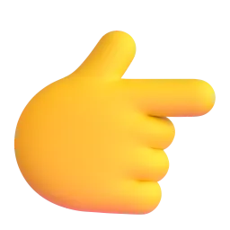
/ð/there, the, they'rewith your voice · голосом
/θ/theatre, three, thankslike a whisper · шёпотом
There's a theatre in the square.
There are three cafés.
They're next to the bank.
Thank you! The café is great.
b Press 🔊, listen and choose the sound.Послушайте и выберите звук.
there →
theatre →
three →
the →
they're →
thanks →
this →
thirty →
my street
8 min
aStep 1. Answer. Your teacher asks about your town. Answer with two sentences: There's… It's…Шаг 1. Отвечайте двумя предложениями: There's… It's…
Press the button · Нажмите кнопку
Is there a café near your home? Where is it?
Are there any good shops in your street?
What is there opposite your home?
Is there a park in your town? Where is it?
Are there any museums in your town?
Is there a market? When is it?
Where is your favourite place in your town?
Are there any cinemas near your home?
There's a… near my home.It's next to / opposite…It's between … and …There are some…There aren't any…Yes, there is. / No, there isn't.
bStep 2. Draw my street. Tell your teacher about your street: what is there and where it is. Your teacher draws a map. Is it right?Шаг 2. Опишите свою улицу — преподаватель рисует карту. Всё верно?
In my street there's…It's next to…Opposite the … there's…On the corner there's…
a message to Tom
4 min
a Tom wants to visit YOUR town next. Write him a message: five sentences and one question.Том хочет приехать и в ваш город. Напишите ему: 5 предложений и 1 вопрос.
Example: Hi Tom! Come to Kazan! There's a big park near my flat. It's opposite the school. There are some nice cafés in my street. There aren't any museums near my home, but there are some in the centre. Are there any good markets in your town?
b Press «Отправить преподавателю» — your teacher will see your answers.Нажмите «Отправить преподавателю».
Готово? Отправьте ответы преподавателю
Откроется окно «Поделиться»: выберите мессенджер и отправьте ссылку преподавателю. Ответы зашифрованы, открыть их может только преподаватель.
Can you…?
3 min
a Listen to your teacher. Repeat the corrected sentences.Послушайте преподавателя и повторите исправленные фразы.
Great!
Let's fix
b Can you do these things?Вы можете это сделать?
I can say where places are: next to, opposite, betweenсказать, где что находится
I can use There's… and It's…использовать There's… и It's…
I can use some and anyиспользовать some и any
I can describe my streetописать свою улицу
Was the grammar clear today? What was difficult? · Понятна ли была грамматика?
where is it?
10 min at home
Homework, part 1 of 2: words. Mostly tapping — easy on your phone. Part 2 (grammar) is on the next page — press «Далее».Часть 1: слова урока. Ответы сохраняются сами.
a Look at the map of Anna's street. Choose the word.Посмотрите на карту улицы Анны и выберите слово.
Market Street — Anna's street · улица Анны
the bankthe caféthe pharmacythe library
═════ Market Street ═════
the parkthe supermarketthe bus stopthe museum
Сверху — одна сторона улицы, снизу — другая. Места друг под другом — напротив.
The café is the bank.
The bus stop is the pharmacy.
The pharmacy is the café and the library.
The supermarket is the café.
The library is the pharmacy.
b Look at the picture. Which words?Что на картинке?
→
→
The café is in the middle of two shops. →
The restaurant is where two streets meet. →
The garden is at the back of the library. →
c How do you say it in English? Write the words.Как это по-английски? Напишите.
рядом с →
напротив →
между →
за, позади →
перед →
повернуть налево →
идти прямо →
There's / It's · some / any
15 min at home
Homework, part 2 of 2: grammar. Look at the colour formulas, then tap or type. At the end press «Отправить преподавателю».Часть 2: грамматика урока. В конце — «Отправить преподавателю».
Remember · ЗапомнитеThere's… It's…
There's+a café.
It's+next to the bank.
Where's+the café?
Новое → There's a…. Где? Какое? → It's…. Много → They're…
Remember · Запомнитеsome / any
There are+some+shops.
There aren't+any+cinemas.
Are there+any+cafés?
+ → some · − и ? → any
aThere's or It's? Tap.There's или It's? Выберите.
Near my flat a small supermarket.
Where's the supermarket? — next to the bus stop.
In the square a big old theatre.
The theatre? behind the post office.
Where are the shops? — in Bridge Street.
bsome or any? Tap.some или any? Выберите.
There are nice cafés in the square.
There aren't big hotels in Anna's town.
Are there good restaurants near here?
There are lovely cakes at the market.
Are there parks near your home?
c Write is or are.Напишите is или are.
Where the museum?
Where the shops?
there a pharmacy near here?
there any cafés in your street?
There some old houses in the square.
d Build the sentences.Соберите предложения.
e About you. Four sentences.О себе: четыре предложения.
Готово? Отправьте ответы преподавателю
Откроется окно «Поделиться»: выберите мессенджер и отправьте ссылку преподавателю. Ответы зашифрованы, открыть их может только преподаватель.
extra practice
10 min
What to do
Build the sentences: tap the words in the right order. Made a mistake? Press «↺ Заново».
Find the mistake in each sentence and write the correct sentence.
Press «Проверить» after each exercise.
1. Build the sentence
2. Find the mistake
Where's the café? — There's next to the bank.
There are any shops in my street.
There aren't some cinemas.
Is there any cafés near here?
Play and review
10 min
What to do · Что делать
Play with the words from this lesson — great for review before the next lesson!Играйте со словами урока — это лучший способ повторить их.
Your best results are saved and your teacher can see them.Лучшие результаты сохраняются, преподаватель их видит.
🧩
Match upНайди пару
Tap a word, then its meaning. As fast as you can! · Нажмите слово, потом его значение.
⏱️
60 seconds60 секунд
Choose the right word for the meaning. How many in one minute? · Сколько слов успеете за минуту?
🎧
Listen and spellУслышь и напиши
Listen to the word and write it. Press 🔊 to hear it again. · Послушайте слово и напишите его.
🕵️
DetectiveДетектив
Solve the case! Each clue is a task with this lesson's words and grammar. Every right answer clears one suspect. · Раскройте дело: каждая улика — задание по словам и грамматике урока.
IRIS SCHOOL · Саша · урок 2
Been There, Done That
Kate from our Rome story is travelling again: her travel experiences and voice messages from Lisbon. Grammar: the present perfect — Have you ever…? and just, already, yet.
“Not all those who wander are lost.”J. R. R. Tolkien
Pre-Intermediate → IntermediateTravelPresent perfectjust · already · yet60 min
travel experiences
8 min
In this lesson you will…
learn 10 new travel words and phrases10 новых слов о путешествиях
read an interview with Kate — from our Rome story — about her travel experiencesпрочитать интервью с Кейт из прошлого урока
talk about experiences with the present perfect: Have you ever…? I've never…говорить об опыте: Have you ever…?
use just, already and yet: We've just landed!just, already, yet
ask your teacher about their travel experiencesрасспросить преподавателя о его путешествиях
a Remember Kate and Anya's trip to Rome from our last lesson — the delayed flight and the old man who helped them? Kate is travelling again! Look at the pictures from her new trip. Which words do you know?Помните историю Кейт и Ани в Риме? Кейт снова путешествует. Какие слова вы уже знаете?
to check in
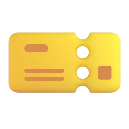
a boarding pass
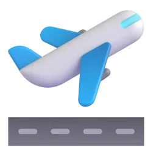
to take off
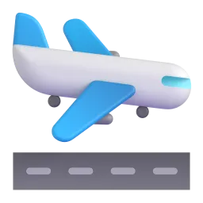
to landjet laga hostelto go backpacking
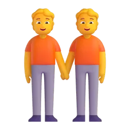
a local
b Go to the Vocabulary Bank. Tap each card, press 🔊 and repeat. Then match the meanings and the words.
Vocabulary Bank2ATravel experiences
to leave the ground and start flying →
to come down to the ground after flying →
a person who lives in a place →
a cheap place to stay with shared rooms →
very tired after a long flight to another time zone →
to travel around a place to see and learn about it →
c New words and words from our last lesson. Complete the sentences.Новые слова и слова прошлого урока.
Our flight was by three hours because of the snow.
Please show your at the gate.
We at the hotel and went straight to bed.
I always my suitcase the night before a trip.
We didn't have a map, so we got .
I bought this little bag as a in Rome.
When I travel, I always ask where to eat.
five questions for Kate
9 min
a Kate writes a travel blog now. Read her interview on the website «Travel Talk». Find five words from the Vocabulary Bank. How many countries has she been to?
«Travel Talk» · Five questions for Kate, 26
Kate writes a travel blog. You may remember her story about a trip to Rome. This week she answered our questions.
How many countries have you been to? Fourteen! I went abroad for the first time when I was nineteen — to Spain. I loved it, and I've travelled every year since then.
Have you ever been backpacking? Yes, I have. Two years ago I went backpacking in Asia for three months. I stayed in hostels and met lots of amazing people.
Have you ever missed a flight? Yes, twice! The first time was in Paris. I was buying souvenirs at the airport and I didn't hear the announcement. My plane took off without me!
What's the strangest food you've ever tried? Fried insects in Thailand. A local gave them to me at a night market. They were crunchy — and not bad, actually!
Is there anything you've never done? Lots of things! I've never been on a guided tour — I prefer to explore on my own and get lost. And I've never been to Portugal. But that's going to change: I'm flying to Lisbon tomorrow!
Kate is…
b True or false?Верно или неверно?
Kate first went abroad when she was nineteen. →
She has been to Portugal. →
She went backpacking in Asia. →
She missed a flight in Paris. →
She didn't like the insects. →
She loves guided tours. →
c Look at Kate's sentences. Is it about her life experience (we don't know when — it isn't important) or about a specific time in the past (we know when)? Look at the verbs — this is the grammar of the next stage.Опыт в жизни (когда — неважно) или конкретный момент в прошлом? Посмотрите на глаголы.
I've been to fourteen countries. →
I went abroad for the first time when I was nineteen. →
Two years ago I went backpacking in Asia. →
I've never been on a guided tour. →
My plane took off without me! →
What's the strangest food you've ever tried? →
present perfect: experiences
13 min
a Read the Grammar Bank. The examples are from Kate's interview.Примеры — из интервью Кейт.
Grammar Bank2Apresent perfect: ever / never → past simple for details
form
example
+
I / you / we / they have ('ve) + V3 · he / she has ('s) + V3
I've been to fourteen countries. She's tried fried insects.
–
haven't / hasn't + V3 · 've never + V3
I've never been to Portugal.
?
Have / Has + person + ever + V3?
Have you ever missed a flight? — Yes, I have. / No, I haven't.
Experience (when? — not important) → present perfect. Details (when? where? what happened?) → past simple:
Have you ever missed a flight? — Yes, I have. I missed a flight in Paris two years ago.
With yesterday, last year, in 2019, two years ago, when I was… → only past simple. ✗ I've been to Spain in 2019. ✓ I went to Spain in 2019.
been to = went and came back: She's been to Paris. · gone to = she is there now: She's gone to Lisbon.
V3: be → been, see → seen, eat → eaten, fly → flown, take → taken, meet → met, lose → lost, try → tried.
Подсказка. «Ты когда-нибудь…?» = Have you ever…? Опыт «вообще в жизни» — present perfect. Как только появляется «когда?» (ago, last, in 2019) — past simple.
Kate to fourteen countries.
you ever missed a flight?
I been on a guided tour. I prefer to explore on my own.
She in Asia two years ago.
Have you ever tried fried insects? — Yes, I .
He to Japan last year.
b Write the V3 (past participle).Напишите третью форму глагола.
be →
see →
eat →
fly →
take →
meet →
lose →
buy →
c Present perfect or past simple? Write the verb.Present perfect или past simple? Напишите глагол.
(you / ever / stay) in a hostel?
I (never / try) Thai food.
We (go) to Rome last summer.
My sister (be) to Portugal three times.
When (you / go) abroad for the first time?
Kate (not / be) on a guided tour.
d A short dialogue: experience → details. Choose.Опыт → подробности. Выберите.
A: Have you ever lost your luggage? B: Yes, I .
A: Really? When it happen?
B: It last year, in Madrid.
A: they find it?
B: Yes, after three days. But I never flown with that airline since!
e Build the questions and sentences. Then ask your teacher question 1.
voice messages from Lisbon
9 min
a Remember? At the end of the interview Kate said: «I'm flying to Lisbon tomorrow!» Now listen to her voice messages to her friend Anya. How was Kate's first day?Голосовые сообщения Кейт подруге Ане из Лиссабона.
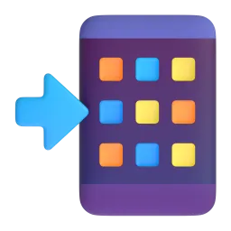
Voice messages: Kate and AnyaListen first · Use 🐢 if it's fast · Text at the end
Kate:Hi Anya! I'm at the airport. Good news: I've already checked in, and I've just bought a big coffee. Bad news: the flight's delayed. Again!
Anya:Oh no, not again! Remember Rome? Have you packed your phone charger this time?
Kate:Yes, I have. And I've printed my boarding pass, just in case. Oh, they're calling my flight. Talk later!
Kate:Hi again! We've just landed in Lisbon. It's sunny and warm! I haven't found my hostel yet, and I've already got lost twice. Some things never change!
Anya:Ha ha! Just like Rome. Have you tried the famous custard tarts yet?
Kate:Not yet, but a local has just told me about a great little café. I'm going there now.
Kate:Hi, it's me. It's ten o'clock in the evening and I'm so tired. I've explored the old town, I've eaten three custard tarts, and I've booked a guided tour for tomorrow. Yes, me, on a guided tour! I haven't bought any souvenirs yet. What would you like?
Anya:A magnet, please! And take lots of photos!
Kate's first day in Lisbon was…
b Listen again. What has Kate done? What hasn't she done yet?Что Кейт уже сделала, а что ещё нет?
check in at the airport →
find her hostel (after landing) →
try the custard tarts (after landing) →
explore the old town →
book a guided tour →
buy souvenirs →
c Listen for the numbers and details.Числа и детали.
After landing, Kate has got lost .
She has eaten custard tarts.
Her last message is at o'clock in the evening.
Anya would like a as a souvenir.
d Open the transcript. Complete Kate's sentences with just, already or yet. Where do these words go? This is the grammar of the next stage.Где стоят just, already, yet? Это грамматика следующего этапа.
I've checked in.
We've landed in Lisbon.
I haven't found my hostel .
Have you tried the famous custard tarts ?
just, already, yet
10 min
a Read the Grammar Bank. The examples are from Kate's voice messages.Примеры — из сообщений Кейт.
Grammar Bank2Apresent perfect + just · already · yet
meaning
where?
example
just
a very short time ago
have + just + V3
We've just landed.
already
it's done — maybe earlier than we expected
have + already + V3
I've already checked in.
yet
until now (in – and ?)
at the end
I haven't found my hostel yet. Have you tried the tarts yet?
Short answer: Have you bought any souvenirs? — Not yet.
No time words like yesterday, at six with just / already / yet: ✗ I've just landed at six.
Подсказка. just — «только что», already — «уже», yet — «ещё не» (в отрицании) и «уже?» (в вопросе). just и already — между have и V3, yet — в конце.
Is Kate still at the airport? — No, she's landed in Lisbon.
Have you packed your bag ?
I haven't bought any souvenirs .
Don't book a table — I've booked one.
Let's get a coffee. We checked in.
Has the plane taken off ? — No, not yet.
b Write the verb with the word in brackets.Напишите глагол со словом в скобках.
I (already / see) this film.
Kate (just / find) her hostel.
We (not / have) lunch yet.
(you / finish) your packing yet?
The plane (just / land).
They (not / book) the tour yet.
c What do you say? Choose the best sentence.Что вы скажете? Выберите.
The plane landed one minute ago. →
Kate's suitcase is still empty. →
A friend wants to print your boarding pass. You printed it this morning. →
Anya asks about the custard tarts. Kate hasn't tried them. →
d Build the sentences.
Kate's email
5 min
a On her last day Kate writes an email to Anya. Use everything from today: the new words, the present perfect, the past simple and just / already / yet.Всё вместе: слова урока + present perfect + past simple + just / already / yet.
Kate → Anya
Lisbon is amazing! I (never / see) such beautiful streets.
Yesterday I (go) on a guided tour of the old town.
The guide was a (местный житель) — he knew every little café!
I (just / buy) your magnet!
I (not / pack) my suitcase yet.
I (already / check in) online for my flight home.
Last night I (get) lost again — of course!
And no (джетлаг) this time — Lisbon is in the same time zone as London.
I've · Have you ever…?
4 min
a In speech we use short forms: I've /aɪv/, she's /ʃiːz/. In questions have is weak: Have you ever…? /həv jʊ ˈevə/, and been often sounds like /bɪn/. Short answers are strong: Yes, I have. Listen and repeat.
I've been to FOURteen COUNtries.
Have you EVer been to PORtugal?
She's just LANded.
I HAVen't found my HOStel YET.
YES, I HAVE. NO, I HAVen't.
b Say two true sentences: one with I've been to… and one with I've never…Два предложения о себе.
have you ever…?
7 min
a Now interview your teacher — like «Travel Talk» interviewed Kate. Press the button and ask the question. Your teacher answers; ask one more question in the past simple (When…? Where…? What happened?). Then your teacher asks you.Возьмите интервью у преподавателя, затем ответьте сами. Опыт — present perfect, подробности — past simple.
Press the button
Have you ever missed a flight or a train? What happened?
Have you ever got lost abroad? Where were you?
What's the most beautiful place you've ever been to?
Have you ever stayed in a hostel? Did you like it?
What's the strangest food you've ever tried?
Have you ever had jet lag? Where did you fly to?
Which place have you never been to but really want to visit?
What have you already done this week? What haven't you done yet?
Yes, I have. / No, I've never…When did you…?Where did you go?What happened?I've just… / I've already… / I haven't… yetReally? Me too! / Lucky you!
my travel profile
5 min
a Write your profile for «Travel Talk» — like Kate's. One sentence in each line.Напишите свой «профиль путешественника»: одно предложение в каждой строке.
b Press «Отправить преподавателю» — your teacher will see your profile.
Готово? Отправьте ответы преподавателю
Откроется окно «Поделиться»: выберите мессенджер и отправьте ссылку преподавателю. Ответы зашифрованы, открыть их может только преподаватель.
Can you…?
3 min
a Your teacher gives feedback. Write the corrections.
Great!
Fix it
b Can you do these things?
I can talk about travel with the new words: check in, land, jet lag, a hostel…
I can ask and answer Have you ever…? and give details in the past simple
I can use just, already and yet
I can understand voice messages about a trip
What was the most useful thing today?
travel experiences
10 min at home
Homework, part 1 of 2: words. Mostly tapping — easy on your phone. Part 2 (grammar) is on the next page — press «Далее».Часть 1: слова урока. Ответы сохраняются сами.
a Look at the picture and read. Which word or phrase is it?Какое слово или фраза подходит?
The plane is leaving the ground. →
The plane has just come down at the airport. →
After a twelve-hour flight to Tokyo, Kate can't sleep at night and is tired all day. →
Three months in Asia with only a backpack and very little money! →
Kate shows her passport at the hotel desk and gets her key. →
A guide shows a group of tourists the old town and tells them its history. →
b How do you say it in English? Write the word or phrase.Как это по-английски? Напишите слово или фразу.
посадочный талон →
хостел →
местный житель →
исследовать, осматривать (город) →
задержанный (о рейсе) →
сувенир →
present perfect
15 min at home
Homework, part 2 of 2: grammar. Look at the colour formulas, then tap or type. At the end press «Отправить преподавателю».Часть 2: грамматика урока. В конце — «Отправить преподавателю».
Remember · ЗапомнитеExperiences
Have you+ever+missed+a flight?
Yes, I+missed+a flight+in Paris.
Опыт (когда — неважно) → have / has + V3. Подробности (когда? где?) → past simple.
Remember · Запомнитеjust · already · yet
We've+just+landed.
I haven't+found+my hostel+yet.
just / already — между have и V3. yet — в конце, в отрицаниях и вопросах.
a Present perfect or past simple? Tap.Выберите форму.
you ever been to Italy?
Yes, I went there .
She tried sushi. She doesn't like fish.
We a great hostel in Berlin last summer.
My parents to Japan three times.
b Write the verb in the correct form.Напишите глагол в нужной форме.
The taxi is here. It (just / arrive).
I (not / finish) my homework yet.
(you / book) the hotel yet?
We don't need to buy tickets. Mum (already / buy) them.
I (never / fly) business class.
When (you / come) back from your trip?
c Build the sentences.Соберите предложения.
d About you. Four true sentences.О себе: четыре предложения.
Готово? Отправьте ответы преподавателю
Откроется окно «Поделиться»: выберите мессенджер и отправьте ссылку преподавателю. Ответы зашифрованы, открыть их может только преподаватель.
extra practice
10 min
What to do
Build the sentences: tap the words in the right order. Made a mistake? Press «↺ Заново».
Find the mistake in each sentence and write the correct sentence.
Press «Проверить» after each exercise.
1. Build the sentence
2. Find the mistake
I have been to Spain in 2019.
Did you ever try sushi?
She has just land in Lisbon.
I have already pack my bag.
Play and review
10 min
What to do · Что делать
Play with the words from this lesson — great for review before the next lesson!Играйте со словами урока — это лучший способ повторить их.
Your best results are saved and your teacher can see them.Лучшие результаты сохраняются, преподаватель их видит.
🧩
Match upНайди пару
Tap a word, then its meaning. As fast as you can! · Нажмите слово, потом его значение.
⏱️
60 seconds60 секунд
Choose the right word for the meaning. How many in one minute? · Сколько слов успеете за минуту?
🎧
Listen and spellУслышь и напиши
Listen to the word and write it. Press 🔊 to hear it again. · Послушайте слово и напишите его.
🕵️
DetectiveДетектив
Solve the case! Each clue is a task with this lesson's words and grammar. Every right answer clears one suspect. · Раскройте дело: каждая улика — задание по словам и грамматике урока.
IRIS SCHOOL · Саша · урок 2
What Would You Do?
Ben found £2,000 in an old sofa. Should he keep it? A radio phone-in, phrasal verbs about honesty and lots of dilemmas. Grammar: If I found…, I'd… · If I were you, I'd… — and first or second conditional?
“Honesty is the best policy.”English proverb
B1DilemmasSecond conditionalFirst or second?60 min
honesty: phrasal verbs and phrases
10 min
In this lesson you will…
learn 10 phrasal verbs and phrases about honesty
understand a radio phone-in: Ben found £2,000 in an old sofa
talk about imagined situations and give advice: If I found…, I'd… · If I were you, I'd…
choose between If I find…, I'll… (real) and If I found…, I'd… (imagined)
solve dilemmas — and say what YOU would do
a Last time: plans and problems — you sorted them out with If…, I'll…. Today: dilemmas — difficult choices. Look at the pictures. Which of these things have you done?В прошлый раз — планы и проблемы. Сегодня — дилеммы. Что из этого вы делали?
find a walletmake up an excusekeep a secrettell a white lieown upfeel guilty
b Go to the Vocabulary Bank. Tap each card, press 🔊 and repeat. Then do the exercises.Нажимайте на карточки, слушайте и повторяйте.
Vocabulary Bank2AHonesty
to say that you did something wrong →
to give something you found to the police →
to do something wrong and not be punished →
to invent a story that isn't true →
a small lie that you tell to be kind →
to learn some information →
c Complete the phrases. Tap the missing word.Вставьте пропущенное слово.
Nobody saw him take the money. He got away it.
I borrowed your umbrella. I promise I will give it tomorrow.
Tom owned to breaking the window.
Don't tell anyone, OK? Can you keep a ?
I felt because I forgot my best friend's birthday.
It was difficult, but she did the right .
What would you do?
10 min
a Listen to the radio phone-in «What Would You Do?». Ben calls the show with a dilemma. You will hear the new phrases — and some phrasal verbs from our last lesson! What is Ben's problem?Послушайте радиопередачу. Бен звонит со своей дилеммой. В чём его проблема?
Radio phone-in: «What Would You Do?»Listen first · Use 🐢 if it's fast · Text at the end
Kate (host):Good evening and welcome to «What Would You Do?», the show where you call us with a problem and our listeners help you sort it out. Our first caller is Ben. Hi, Ben!
Ben:Hi, Kate. Well, last week I bought an old sofa online. It was really cheap — only forty pounds. When I got it home, I found an envelope inside it. There was two thousand pounds in it!
Kate (host):Wow! And what did you do?
Ben:Nothing yet. I can't figure out what to do. Part of me says, «Keep it — nobody will find out.» But I feel guilty.
Kate (host):Well, if I were you, I'd give it back. It isn't your money.
Ben:I know, but the seller lives in a huge house. If I gave the money back, she probably wouldn't even notice!
Kate (host):Let's hear from a listener. Lisa, you're on the air.
Lisa:Hi, Ben. Something similar happened to me once. I found a wallet on a train and I handed it in at the station. A week later the owner found me and gave me a reward! And honestly, if you kept the money, you would feel terrible every time you sat on that sofa.
Ben:Ha! That's true. But what if she asked me why I didn't call her earlier? I'd have to make up an excuse.
Lisa:You don't need an excuse. Just tell her the truth. If I were in your shoes, I'd call her today.
Kate (host):So, Ben, what are you going to do?
Ben:OK, you're right. I'll do the right thing. If I find her phone number, I'll call her tomorrow. And if she doesn't answer, I'll go to her house.
Kate (host):Great! Call us next week and tell us what happened.
What is Ben's problem?
b Listen again. Complete the facts — one word or a number.Послушайте ещё раз. Допишите одно слово или число.
The sofa cost only pounds.
The envelope had pounds in it.
Lisa found a wallet on a .
The owner gave Lisa a .
If the seller doesn't answer the phone, Ben will go to her .
c Kate says: «If I were you, I'd give it back.» Lisa says: «If you kept the money, you would feel terrible.» Are these things real? Answer the questions — this is the grammar of the next stage.Это реальность или воображаемая ситуация? Это грамматика следующего этапа.
Is Kate really Ben? →
Has Ben decided to keep the money? →
Has Ben given the money back yet? →
Which form comes after if in Kate's and Lisa's sentences: were, kept? →
second conditional
13 min
a Read the Grammar Bank. All the examples are like Kate's and Lisa's advice. Look at the two colours: if + past, then would + verb.Прочитайте Grammar Bank. Две части: if + прошедшая форма, would + глагол.
IF + past formIf I found money,found · were · had · kept · could
,
would ('d) / wouldn't + verbI would give it back.I'd call · she'd feel · we wouldn't keep
Past form, but not past time! It is about now or the future — but it is imagined, not real.
❌ If I would find money, I would give it back. ❌ If I found money, I'll give it back. ❌ If I am you, I'll call her.
✅ If I found money, I would give it back. (no would after if!) ✅ If I found money, I'd give it back. ✅ If I were you, I'd call her. (advice)
Advice: If I were you, I'd… = «на твоём месте я бы…». If I was you is common in conversation, but were is better.
The if-part can come second — then no comma: I'd give it back if I found it.
Questions: What would you do if you found £2,000?
Подсказка. По-русски «бы» стоит в обеих частях: «Если бы я нашёл деньги, я бы их вернул». В английском would («бы») — только в одной части, а после if — прошедшая форма: If I found…, I would…
If I two thousand pounds, I would give it back.
If I were you, I her today.
If you kept the money, you terrible.
If I you, I would own up.
She wouldn't make up an excuse if she the truth.
What you do if you found a wallet?
b Write the verbs in the second conditional.Напишите глаголы во втором условном.
If I (find) a phone in the street, I would hand it in.
If Ben kept the money, he (feel) guilty.
If I (not / have) a car, I'd go to work by bike.
I (not / tell) a lie if I were you.
If my boss (ask) me to lie, I would say no.
What (you / do) if you won a lot of money?
c Give advice. What would you say? Choose: If I were you, I'd…Дайте совет: «На твоём месте я бы…»
«I broke my sister's phone, but she doesn't know.» →
«I found a wallet in a taxi.» →
«My friend made a cake. It's terrible! She's asking if I like it.» →
d Build the sentences.Соберите предложения.
Ben's email
7 min
a A week later Ben writes to the show. Did he do the right thing? What happened?Через неделю Бен пишет на радио. Что произошло?
From: Ben · To: «What Would You Do?»an email · about 170 words
Hi Kate, it's Ben — the man with the sofa! I want to tell you what happened. I found out the seller's name, Mrs Grant, from the website, and I called her. At first she didn't believe me! Then she started crying. The money was her husband's. He died two years ago, and she didn't know that he had hidden money in the sofa.
She was so happy that she gave me two hundred pounds as a thank-you present. I'm really glad I did the right thing. To be honest, if I found money again, I'd give it back straight away.
And now Mrs Grant has invited me for tea next Sunday. If the weather is nice, we'll sit in her garden and she'll show me her old photos. P.S. Thank you, Lisa! If I ever meet you, I'll buy you a coffee.
b True, False or Doesn't say?Верно, неверно или в тексте не сказано?
Ben found out the seller's name on the website. →
Mrs Grant believed Ben immediately. →
Mrs Grant's husband hid the money in the sofa. →
Mrs Grant gave Ben a present. →
Ben is going to sell the sofa. →
Ben and Mrs Grant are meeting next Sunday. →
c Look at the sentences with if in the email. Is it a real plan (likely) or an imagined situation (not real / unlikely)? Look at the verbs. This is the next grammar.Реальный план или воображаемая ситуация? Посмотрите на глаголы — это следующая грамматика.
If I found money again, I'd give it back straight away. →
If the weather is nice, we'll sit in her garden. →
If I ever meet you, I'll buy you a coffee. →
If I were you, I'd give it back. (Kate) →
If I find her phone number, I'll call her tomorrow. (Ben) →
first or second conditional?
10 min
a Read the Grammar Bank. The examples are from Ben's email and the radio show. One question helps every time: is it a real possibility?Прочитайте Grammar Bank. Помогает один вопрос: это реально может случиться?
Grammar Bank2Afirst or second conditional?
1st · real, possibleIf I find it, I'll give it back.If + present, will ('ll) + verb
≠
2nd · imagined, unlikelyIf I found it, I'd give it back.If + past, would ('d) + verb
Ask yourself: Is it a real possibility? Yes → first conditional. No, I'm imagining → second conditional.
English
Русский
1st
If it rains tomorrow, we'll stay at home.
Если пойдёт дождь, мы останемся дома.
2nd
If I had a million, I'd buy an island.
Если бы у меня был миллион, я бы купил остров.
❌ If it will rain tomorrow, we'll stay at home. ❌ If I had a million, I will buy an island. ❌ If I see Tom tomorrow, I'd tell him. (you will see him)
✅ If it rains tomorrow, we'll stay at home. ✅ If I had a million, I'd buy an island. ✅ If I see Tom tomorrow, I'll tell him.
Подсказка. Слышите в русском «бы» — скорее всего, второй тип: If I found…, I would…. Нет «бы» и это реально может случиться — первый тип: If I find…, I'll…. И в обоих типах после if нет will и would!
You're meeting Tom tomorrow. →
You haven't got a million — you're dreaming. →
The weather forecast says it may rain on Saturday. →
You are imagining you could fly. →
b Tap the correct verb. Real or imagined?Выберите глагол. Реально или воображаемо?
If Mrs Grant invites me again, I some flowers.
If I the President, I'd make Fridays a holiday.
I'll call you as soon as I home.
If I found a thousand pounds, I it in at the police station.
If you the last train, you'll have to take a taxi.
If people the truth more often, the world would be a better place.
c Write the verbs: first or second conditional?Напишите глаголы: первый или второй тип?
If I (finish) work early today, I'll call you.
If I had more free time, I (learn) to play the guitar.
If Ben (not / give) the money back, he would feel guilty.
If you don't hurry, you (be) late.
If I (live) by the sea, I would swim every day.
We (not / go) to the beach if it rains tomorrow.
d Build the sentences.Соберите предложения.
Kate's reply
6 min
a Kate replies to Ben's email. Use everything from today: the phrases and the first and second conditionals.Всё вместе: слова урока + первый и второй тип.
Kate → Ben
Hi Ben! What a story! I'm so glad you did the right .
Lots of people keep money they find and get away it.
Honestly, if I (be) in your shoes, I don't know what I'd do!
If you (keep) the money, you would always feel .
Lisa says hello. If you (come) to the studio next week, she'll meet you there.
And if Mrs Grant (show) you her photos, ask her about her husband.
One more question: if you found another envelope in your sofa, what (you / do)? 😉
I'll tell our listeners as soon as I (find) out more.
'd or 'll?
5 min
a In fast speech would is 'd /d/ and will is 'll /l/. They are very short — but they change the meaning! Listen and repeat.'d (would) и 'll (will) очень короткие, но меняют смысл.
If I WERE you, I'd GIVE it BACK.
If I FIND her NUMber, I'll CALL her.
WHAT would you DO?
I WOULDn't KEEP it.
b Press 🔊. Do you hear 'd or 'll? Choose.Нажмите 🔊. Что вы слышите: 'd или 'll?
→
→
→
→
→
→
dilemmas
7 min
a Now you are the caller — and the expert! Press the button. Answer with I'd… and give a reason. Then your teacher asks «Are you sure?» — try to change your teacher's mind.Теперь вы — эксперт. Отвечайте с I'd… и объясняйте почему.
Press the button
What would you do if you found £2,000 in a sofa you bought?
What would you do if a shop assistant gave you too much change?
What would you say if a friend asked you «Do you like my new haircut?» and you didn't?
Would you own up if you scratched a car in a car park and nobody saw you?
If you could keep one secret for ever, what would it be? (You don't have to tell me!)
What will you do this weekend if the weather is bad?
If I were in that situation, I'd…I'd probably…, because…I wouldn't…, even if…Honestly, I'd feel guilty if I…To be honest, I'm not sure what I'd do.
my advice to the show
5 min
a Write to «What Would You Do?». One sentence in each line — use the first and the second conditional.Напишите на радио: по одному предложению в строке.
b Press «Отправить преподавателю» — your teacher will see your answers.Нажмите «Отправить преподавателю».
Готово? Отправьте ответы преподавателю
Откроется окно «Поделиться»: выберите мессенджер и отправьте ссылку преподавателю. Ответы зашифрованы, открыть их может только преподаватель.
Can you…?
3 min
a Your teacher gives feedback. Write the corrections.Запишите исправления.
Great!
Fix it
b Can you do these things?
I can talk about honesty with the new phrasal verbs and phrases
I can talk about imagined situations: If I found…, I'd…
I can give advice: If I were you, I'd…
I can choose between If I find…, I'll… and If I found…, I'd…
What was the most useful thing today?
honesty
15 min at home
Homework, part 1 of 2: words. Mostly tapping — easy on your phone. Part 2 (grammar) is on the next page — press «Далее».Часть 1: слова урока. Ответы сохраняются сами.
a Look at the picture. Which phrase is it?Какая фраза подходит к картинке?
«It was me. I broke the printer. I'm sorry.» →
Anna found a phone on the bus and took it to the lost property office. →
«Sorry I'm late — a dog stole my car keys!» (It isn't true.) →
He parked in the wrong place all day and nobody gave him a ticket. →
Mark knows about his sister's surprise party, but he doesn't tell anyone. →
Ben looked on the website and learned the seller's name. →
b How do you say it in English? Write the phrase.Как это по-английски? Напишите фразу.
вернуть (что-то) →
чувствовать себя виноватым →
поступить правильно →
невинная ложь, ложь во благо →
хранить секрет →
second conditional · first or second?
15 min at home
Homework, part 2 of 2: grammar. Look at the colour formulas, then tap or type. At the end press «Отправить преподавателю».Часть 2: грамматика урока. В конце — «Отправить преподавателю».
Remember · Запомните2nd conditional — imagined
If I+found+money,+I'd+give+it back.
If I+were+you,+I'd+own up.
Если бы… → If + past, would + verb. После if — никогда не would.
Remember · Запомните1st conditional — real
If it+rains,+we'll+stay+at home.
Реально может случиться → If + present, will + verb.
a Second conditional. Tap the correct form.Второй тип. Выберите форму.
If I more money, I would travel more.
If I were you, I that email.
If she knew the answer, she us.
What would you do if you a famous person in the street?
If I you, I would own up.
b Write the verbs in the second conditional.Напишите глаголы.
If I (win) the lottery, I would buy a house by the sea.
If he told the truth, he (not / feel) so guilty.
If we (live) in London, we would see the sights every weekend.
Where (you / go) if you could go anywhere?
c First or second? Tap.Первый или второй тип?
If I see Anna tomorrow, I her the news.
If I a dog, I'd walk it every morning. (I haven't got a dog.)
If it sunny on Sunday, we'll have a barbecue.
If I could speak five languages, I as a translator.
Call me as soon as you home.
d Build the sentences.Соберите предложения.
e About you. Four true sentences.О себе: четыре предложения.
Готово? Отправьте ответы преподавателю
Откроется окно «Поделиться»: выберите мессенджер и отправьте ссылку преподавателю. Ответы зашифрованы, открыть их может только преподаватель.
extra practice
10 min
What to do
Build the sentences: tap the words in the right order. Made a mistake? Press «↺ Заново».
Find the mistake in each sentence and write the correct sentence.
Press «Проверить» after each exercise.
1. Build the sentence
2. Find the mistake
If I would find money, I would give it back.
If I was you, I'll call her.
If it will rain tomorrow, we'll stay at home.
If I had more money, I will buy a car.
Play and review
10 min
What to do · Что делать
Play with the words from this lesson — great for review before the next lesson!Играйте со словами урока — это лучший способ повторить их.
Your best results are saved and your teacher can see them.Лучшие результаты сохраняются, преподаватель их видит.
🧩
Match upНайди пару
Tap a word, then its meaning. As fast as you can! · Нажмите слово, потом его значение.
⏱️
60 seconds60 секунд
Choose the right word for the meaning. How many in one minute? · Сколько слов успеете за минуту?
🎧
Listen and spellУслышь и напиши
Listen to the word and write it. Press 🔊 to hear it again. · Послушайте слово и напишите его.
🕵️
DetectiveДетектив
Solve the case! Each clue is a task with this lesson's words and grammar. Every right answer clears one suspect. · Раскройте дело: каждая улика — задание по словам и грамматике урока.
IRIS SCHOOL · Варя · урок 2
A Day by the Sea
Ben's perfect Saturday in Brighton — and a lost phone! The same 5 listening rules, phrases for a day out, irregular verbs (went, saw, had) and questions: Where did you go? — the easy way.
“The voice of the sea speaks to the soul.”Kate Chopin
A2A day outPast Simple: irregular verbsListening skills60 min
a day out
8 min
In this lesson you will…
listen better with the 5 rules — again!слушать по 5 правилам — ещё раз
learn 10 phrases for a day out10 фраз о поездке на день
ask questions: Where did you go? What did you buy?задавать вопросы о прошлом
tell about your own day outрассказать о своей поездке
a Remember Ben? Last time it rained and he stayed at home all weekend. This Saturday was different! Look at his photos.Помните Бена? В прошлый раз он все выходные сидел дома. В эту субботу всё было иначе! Посмотрите на его фото.
a trainthe seaphotosfish and chipsswimmingan ice cream
b Go to the Vocabulary Bank. Like last time: the front is today, the back is yesterday. Tap, press 🔊 and repeat.Как в прошлый раз: спереди — сейчас, сзади — вчера. Слушайте и повторяйте.
Vocabulary Bank1CA day out
up early
by train
photos
a ticket
fish and chips
in the sea
a friend
home
cRule 1 · Predict. Ben went to the sea with his brother Joe. What did they do there, do you think? Say three guesses — then listen and check!Правило 1 · Прогноз. Как вы думаете, что они делали? Скажите три догадки — потом послушаете и проверите.
I think they…Maybe they…I don't think they…
Ben's Saturday
10 min
How to listen · Как слушать (5 правил — как в прошлый раз)
Predict. Сначала картинки и вопросы — угадайте, о чём будет текст.
Main idea first. В первый раз — только общий смысл. Не нужно понимать каждое слово!
Key words. Во второй раз ищите ключевые слова: кто? что? где? когда?
Numbers. Числа и время сразу записывайте цифрами: 7.00, 8.30, 4.
Transcript last. Текст открывайте только в конце — и слушайте ещё раз, следя по тексту.
aRule 2 · Main idea. It's Monday. Ben tells Mia about his Saturday. Listen once. Don't read! Answer one question.Правило 2. Послушайте один раз без текста и ответьте на один вопрос.
Mia and Ben: Monday againListen for the main idea · Общий смысл
Mia:Hi Ben! How was your weekend? Did you stay at home again?
Ben:No, I didn't! It was great. On Saturday I went to Brighton with my brother Joe.
Mia:Brighton! By car?
Ben:No, we went by train. We got up really early and took the seven o'clock train.
Mia:What did you do there?
Ben:First we walked by the sea and took lots of photos. Then we had fish and chips on the beach.
Mia:Did you swim?
Ben:Yes, I did! The water was really cold. Joe didn't swim. He sat on the beach and ate an ice cream.
Mia:Ha-ha! Did you buy anything?
Ben:I bought a T-shirt for my sister. And guess what? We met my old school friend, Jake!
Mia:What a nice surprise! When did you come home?
Ben:We came home at ten in the evening. I was very tired, but it was a perfect day! What about you?
Mia:Oh, I didn't go anywhere. I cleaned my flat and cooked dinner for my parents. Next time, take me with you!
How was Ben's Saturday?
bRule 3 · Key words. Listen again. Who did it — Ben, Joe or both?Правило 3. Кто это сделал — Бен, Джо или оба?
swam in the sea →
ate an ice cream →
took lots of photos →
had fish and chips →
bought a T-shirt →
met an old school friend →
cRule 4 · Numbers. Write the times in figures.Правило 4. Запишите время цифрами.
They took the o'clock train.
They came home at in the evening.
d Ben says I went, not I goed. Some verbs don't take -ed — they change! Find the past. This is the grammar of the next stage.Бен говорит I went, а не I goed. Некоторые глаголы не берут -ed — они меняются! Это грамматика следующего этапа.
go →
buy →
eat →
come →
take →
irregular verbs — Grammar Easy
12 min
a Read the four steps. Press 🔊 and repeat. All the examples are from Ben's day.Прочитайте четыре шага, слушайте и повторяйте. Все примеры — из дня Бена.
Grammar Easy · Грамматика без страхаPast Simple: irregular verbs
1
Одна мысль
Многие частые глаголы в прошедшем времени не берут -ed — они меняются: go → went, buy → bought. Их учим, как слова (карточки!). Хорошая новость: «нет» и вопрос — как в прошлый раз: didn't / Did + глагол в обычной форме: I didn't go. Did you go?
2
Формула-конструктор
I+went+to Brighton.
I+didn't+go+to London.
Did+you+go+to the sea?+— Yes, I did. / No, I didn't.
go → went · get → got · have → had · see → saw · take → took · eat → ate · buy → bought · meet → met · swim → swam · come → came · sit → sat · lose → lost · find → found
3
Смотри, как это работает · нажми 🔊
We went to Brighton by train.
We had fish and chips on the beach.
Joe ate an ice cream.
Joe didn't swim.
Did you buy anything?
4
Осторожно!
❌ I goed to the sea. → ✅ I went to the sea. go → went: учим, как слово.
❌ I didn't went. → ✅ I didn't go. После didn't — обычная форма.
❌ Did you saw the sea? → ✅ Did you see the sea? После Did — обычная форма.
bStep 1. Notice. How does the past look: -ed or a new word?Шаг 1. Прошедшее: просто -ed или новое слово?
walk →
go →
play →
see →
cook →
eat →
cStep 2. Choose.Шаг 2. Выберите.
On Saturday Ben to Brighton.
They the seven o'clock train.
Joe an ice cream on the beach.
Joe didn't in the sea.
Did you anything?
They an old friend.
dStep 3. Write the past. Look at the cards if you need help.Шаг 3. Напишите прошедшее время. Можно подсмотреть в карточки.
go →
have →
see →
get →
take →
eat →
buy →
come →
meet →
swim →
eStep 4. Build. Tap the words in the right order.Шаг 4. Соберите предложение.
fStep 5. About YOU. Two sentences.Шаг 5. Два предложения о себе.
Lost and found
10 min
aRule 1 · Predict. Oh no! On the train home Ben lost his phone. On Monday he calls the station. What questions does the woman ask, do you think?Ой! В поезде Бен потерял телефон и звонит на вокзал. Какие вопросы ему зададут, как вы думаете?
bRule 2 · Main idea. Listen once. Did they find Ben's phone?Правило 2. Послушайте один раз. Телефон нашёлся?
Brighton Station: Lost PropertyUse 🐢 if it's too fast · Если быстро — нажмите 🐢
Station assistant:Brighton Station, Lost Property. Good morning. How can I help you?
Ben:Good morning. I lost my phone on the train.
Station assistant:Oh dear. When did you lose it?
Ben:On Saturday evening.
Station assistant:Which train did you take?
Ben:The half past eight train from Brighton to London.
Station assistant:And where did you sit?
Ben:In coach four, next to the window.
Station assistant:What colour is your phone?
Ben:It's black, in a blue case.
Station assistant:Just a moment, please… Yes, we have it! A man found it on the train and brought it here on Sunday.
Ben:Oh, fantastic! Thank you so much! When can I get it?
Station assistant:We're open every day from nine to six.
Ben:Great! I'll come tomorrow morning. Thank you!
Did they find Ben's phone?
cRules 3 and 4 · Key words and numbers. Listen again and write. Numbers in figures!Правила 3 и 4. Запишите ключевые слова и числа — цифрами.
Ben lost his phone on evening.
Train time:
Coach number:
Colour of the phone case:
The office is open from to .
d The woman asks a lot of questions. Choose the missing word. This is the grammar of the next stage.Выберите пропущенное слово. Это грамматика следующего этапа.
When you lose it?
Which train you take?
Where you sit?
A man it on the train.
eRule 5 · Transcript last. Now open both transcripts. Listen and read. Which words didn't you hear?Правило 5. Теперь откройте оба текста. Каких слов вы не услышали?
Where did you go? — Grammar Easy
10 min
a Read the four steps. Press 🔊 and repeat the questions.Прочитайте четыре шага. Повторите вопросы.
Grammar Easy · Грамматика без страхаWhere did you go?
1
Одна мысль
Вопрос о прошлом с вопросительным словом — как конструктор: вопросительное слово + did + you / he / she… + глагол в обычной форме. Did — маленький помощник прошлого, поэтому глагол уже без -ed и без went: Where did you go? What did you buy?
2
Формула-конструктор
Where+did+you+go?
What+did+Joe+eat?
When+did+they+come home?
Where? — где, куда · When? — когда · What? — что · Who? — кто, кого · What time? — во сколько · How? — как
3
Смотри, как это работает · нажми 🔊
Where did you go? — To Brighton.
How did you get there? — By train.
What time did you come home? — At ten.
Who did you meet? — An old friend.
4
Осторожно!
❌ Where you went? → ✅ Where did you go? Нужен помощник did.
❌ What did you bought? → ✅ What did you buy? После did — обычная форма.
❌ When did come you home? → ✅ When did you come home? Порядок: did + you + глагол.
bStep 1. Which question word? Look at the answer.Шаг 1. Какое вопросительное слово? Смотрите на ответ.
did you go? — To the sea.
did you meet? — My old friend Jake.
did you eat? — Fish and chips.
did you come home? — On Sunday evening.
did you buy? — A T-shirt.
did you go with? — With my brother.
cStep 2. Choose the right question.Шаг 2. Выберите правильный вопрос.
dStep 3. Write the question.Шаг 3. Напишите вопрос.
(where / you / go) on Saturday?
What (you / buy)?
(what time / the train / leave)?
Who (you / meet) in Brighton?
(Joe / swim) in the sea?
eStep 4. Build the questions — you will ask your teacher in Speaking!Шаг 4. Соберите вопросы — вы зададите их преподавателю!
Ben's post
6 min
a Ben writes about his day online. Use everything from today: the phrases, the past forms, didn't and questions.Пост Бена. Всё вместе: фразы урока, неправильные глаголы, didn't и вопросы.
Ben's post: «Best Saturday ever!»
On Saturday my brother Joe and I (go) to Brighton.
We (get) up at six and (take) the seven o'clock train.
We (see) the sea and (have) fish and chips on the beach.
I (swim) in the sea — it was so cold!
Joe (not / swim). He (eat) an ice cream.
And guess who we (meet)? My old school friend Jake!
On the train home I (lose) my phone… but a man (find) it!
(you / go) to the sea this summer?
did you /ˈdɪdʒə/
5 min
a In fast speech did you sounds like /ˈdɪdʒə/. Listen and repeat — then you will hear it better!В быстрой речи did you звучит как «диджа». Повторите — так легче услышать.
Did you SWIM? — /ˈdɪdʒə/
WHERE did you GO?
WHAT did you BUY?
WHEN did you come HOME?
WHO did you MEET?
b Press 🔊. Do you hear did you (past) or do you (present)? Don't read — just listen!Послушайте: did you (прошлое) или do you (настоящее)?
→
→
→
→
→
→
my day out
8 min
aStep 1. Answer. Your teacher asks about your last weekend or a day out. Short answer + one more sentence.Шаг 1. Короткий ответ + ещё одно предложение.
Press the button · Нажмите кнопку
Where did you go last weekend?
What time did you get up on Sunday?
Did you go to the sea last summer?
Who did you meet last week?
What did you have for dinner yesterday?
Did you buy anything nice last month?
When did you last go by train?
Did you take any photos last weekend?
I went to…I got up at…I had… / I ate…I didn't…Yes, I did. / No, I didn't.What about you?
bStep 2. Ask. Your teacher went on a day trip last month. Ask the questions from Grammar step 4 and more: Where…? How…? What…? When…? Write the answers.Шаг 2. Преподаватель ездил(а) в поездку на день. Задайте вопросы и запишите ответы.
a message to Mia
5 min
a Mia didn't go anywhere. Write her a message about YOUR best day out: five sentences and one question.Напишите Мие о своей лучшей поездке: 5 предложений и 1 вопрос.
Example: Hi Mia! Last summer I went to Sochi with my friend. We got up early and took the train. We swam in the sea and ate a lot of ice cream. I didn't buy anything. We came home very tired but happy! Where did you go last summer?
b Press «Отправить преподавателю» — your teacher will see your answers.Нажмите «Отправить преподавателю».
Готово? Отправьте ответы преподавателю
Откроется окно «Поделиться»: выберите мессенджер и отправьте ссылку преподавателю. Ответы зашифрованы, открыть их может только преподаватель.
Can you…?
3 min
a Listen to your teacher. Repeat the corrected sentences.Послушайте преподавателя и повторите исправленные фразы.
Great!
Let's fix
b Can you do these things?Вы можете это сделать?
I can understand the main idea, key words and numbersпонять общий смысл, ключевые слова и числа
I can use irregular verbs: went, saw, had…использовать неправильные глаголы
I can ask Where did you go? What did you buy?задать вопросы о прошлом
I can tell about my day outрассказать о своей поездке
Which listening rule helped you most today? · Какое правило помогло больше всего?
a day out
15 min at home
Homework, part 1 of 2: words and a short listening. You can do it on your phone. Part 2 (grammar) is on the next page — press «Далее».Часть 1: слова и короткое аудирование. Ответы сохраняются сами.
a Look at the picture. Which phrase is it?Какая фраза подходит к картинке?
→
→
→
→
→
→
b How do you say it in English? Write the phrase.Как это по-английски? Напишите фразу.
купить билет →
фотографировать →
плавать в море →
вернуться домой →
рано встать →
cListening. Kate leaves you a voice message. Rule 2: listen once — where did she go?Аудирование. Голосовое от Кейт. Сначала — только общий смысл: куда она ездила?
A voice message from KateUse 🐢 if it's too fast · Текст — только в конце
Kate:Hi Varya, it's Kate! Guess what? On Sunday I went to Oxford with my mum.
Kate:We took the train at a quarter past nine and got there at ten.
Kate:We saw the old colleges and had lunch in a little café by the river. I bought two books!
Kate:We came home at six. It was a lovely day. Call me back! Bye!
Where did Kate go?
dRules 3 and 4. Listen again. Write the numbers in figures, then choose Yes or No.Послушайте ещё раз: числа — цифрами, потом Да или Нет.
Train time:
How many books?
Home at:
Kate went by train →
Kate took photos →
Kate had lunch in a café →
Kate swam in the river →
eRule 5 + shadowing. Now open the transcript. Press 🔊 next to each line and say it together with Kate.Откройте текст, нажимайте 🔊 и говорите вместе с Кейт.
irregular verbs · Where did you…?
15 min at home
Homework, part 2 of 2: grammar. Look at the colour formulas, then tap or type. At the end press «Отправить преподавателю».Часть 2: грамматика урока. В конце — «Отправить преподавателю».
Remember · Запомнитеwent · didn't go · Did you go?
I+went+to the sea.
I+didn't+go+to the sea.
Did+you+go+to the sea?
go → went, see → saw, eat → ate… После didn't и Did — обычная форма: go, see, eat.
Remember · ЗапомнитеWhere did you go?
Where+did+you+go?
What+did+she+buy?
Вопросительное слово + did + you / she… + глагол без -ed.
a Write the past.Напишите прошедшее время.
see →
buy →
eat →
meet →
take →
come →
get →
swim →
b Tap the right form.Выберите правильную форму.
Last summer we to Spain.
I didn't any photos.
Did you fish and chips?
She her friend at the station.
you swim in the sea?
c Make the sentences negative.Сделайте предложения отрицательными.
I went to the beach.
We saw the sea.
Joe ate an ice cream.
They came home late.
d Which question word?Какое вопросительное слово?
did you go? — To Oxford.
did you buy? — Two books.
did you come home? — At six.
did you go with? — With my mum.
e Build the questions.Соберите вопросы.
f About YOU: your last day out. Four sentences.О себе: ваша последняя поездка. Четыре предложения.
Готово? Отправьте ответы преподавателю
Откроется окно «Поделиться»: выберите мессенджер и отправьте ссылку преподавателю. Ответы зашифрованы, открыть их может только преподаватель.
extra practice
10 min
What to do
Build the sentences: tap the words in the right order. Made a mistake? Press «↺ Заново».
Find the mistake in each sentence and write the correct sentence.
Press «Проверить» after each exercise.
1. Build the sentence
2. Find the mistake
I goed to Brighton on Saturday.
We didn't saw the sea.
Where you went last weekend?
What did you bought?
Play and review
10 min
What to do · Что делать
Play with the words from this lesson — great for review before the next lesson!Играйте со словами урока — это лучший способ повторить их.
Your best results are saved and your teacher can see them.Лучшие результаты сохраняются, преподаватель их видит.
🧩
Match upНайди пару
Tap a word, then its meaning. As fast as you can! · Нажмите слово, потом его значение.
⏱️
60 seconds60 секунд
Choose the right word for the meaning. How many in one minute? · Сколько слов успеете за минуту?
🎧
Listen and spellУслышь и напиши
Listen to the word and write it. Press 🔊 to hear it again. · Послушайте слово и напишите его.
🕵️
DetectiveДетектив
Solve the case! Each clue is a task with this lesson's words and grammar. Every right answer clears one suspect. · Раскройте дело: каждая улика — задание по словам и грамматике урока.
IRIS SCHOOL · Юля · урок 2
A New Chapter
Two years after moving to Edinburgh, Anna has set up a bakery. Starting again, a podcast and a blog — and the bridge from the past to now: for, since, ago, present perfect simple and continuous.
“Rome wasn't built in a day.”English proverb
B1Starting againPresent perfectfor · since · ago60–70 min
starting again
10 min
In this lesson you will…
learn 10 words and phrases about starting again: work, business and a new life
understand a podcast interview and a blog about Anna's new chapter
choose between past simple and present perfect with for, since, ago
choose between present perfect simple and continuous: I've baked 300 pies / I've been baking since five
tell the story of a new chapter in your life
a Remember Anna from our last lesson? She moved from Kazan to Edinburgh and was getting used to the little things. Two years on, her life has changed again. Look at the pictures: what do you think she does now?
piesa small shopa bakerregularsdancingcalls home
b Go to the Vocabulary Bank. Tap each card, press 🔊 and repeat. Then complete the sentences.
Vocabulary Bank1BStarting again
We don't pay for adverts. All our customers come by .
She had no plan and no money. She started from .
Mr Brown comes in for a coffee every morning. He is one of our .
In my first winter I missed my family a lot. I felt very .
Leaving a good job is scary — you have to a risk.
It was hard work, but it has off.
It's not easy to friends when you don't know anyone.
She the bakery with two assistants.
c Words from our last lesson. Complete them — you will hear them again today.Слова прошлого урока — они сегодня встретятся снова.
It took me a year to settle .
Are you getting used the early mornings?
We keep in on WhatsApp every day.
When I look on my first year, I smile.
Anna's new chapter
10 min
a Listen to the podcast «New Chapters». Anna is the guest. What is the conversation mainly about?
Podcast: «New Chapters»Listen first · Use 🐢 if it's fast · Text at the end
James (host):Welcome to «New Chapters», the podcast about people who start again. My guest today is Anna. She moved from Kazan to Edinburgh two years ago, and now she runs a small Russian bakery. Anna, welcome!
Anna:Thanks, James! Sorry if I sound tired — I've been baking since five o'clock this morning.
James (host):Five o'clock! So, what did you use to do in Kazan?
Anna:I used to work in a bank. It was a good job, but I wasn't happy. When I moved here, I felt really homesick, and I missed my mum's pies. So I started baking them at home.
James (host):And people liked them?
Anna:They loved them! Then my neighbour asked me to make fifty pies for her wedding. That was the moment I decided to take a risk. I set up the bakery from scratch and opened it in April.
James (host):So you've had the bakery for six months now. How's it going?
Anna:Better than I expected! We don't advertise — it's all word of mouth. Some of our regulars have been coming every day since we opened.
James (host):What's been the hardest thing?
Anna:The early mornings! I still haven't got used to getting up at four. But all the hard work has paid off.
James (host):And have you settled in? Have you made friends?
Anna:Yes, I have. I've been taking Scottish dancing classes since January — that's where I've made most of my friends. And I keep in touch with my family every day. My mum has visited twice. She's tried every pie!
James (host):I'm sure she approved! Anna, thank you so much.
The conversation is mainly about…
b Listen again. Complete the facts.
Anna moved to Edinburgh years ago.
Today she has been baking since o'clock.
In Kazan she used to work in a .
Her neighbour asked for pies for her wedding.
She opened the bakery in .
She has been taking dancing classes since .
Her mum has visited .
c Look at these sentences from the podcast. Is each one about a finished time in the past, or about a time from the past until now? Look at the verb form — this is the grammar of the next stage.Законченное время в прошлом или «с тех пор и до сих пор»? Посмотрите на форму глагола — это грамматика следующего этапа.
She moved to Edinburgh two years ago. →
I've been baking since five o'clock this morning. →
I opened the bakery in April. →
You've had the bakery for six months. →
I used to work in a bank. →
Some of our regulars have been coming every day since we opened. →
for · since · ago
14 min
a Read the Grammar Bank. All the examples are from Anna's story.Все примеры — из истории Анны.
Grammar Bank1Bpast simple or present perfect? for · since · ago
time
form
example
time words
finished — a time in the past
past simple
She moved to Edinburgh two years ago. When did she open the bakery? — In April.
ago, in April, last year, yesterday, when I was…
from the past until now
present perfect (simple or continuous)
She's lived in Edinburgh for two years. She's had the bakery since April. How long have you been learning English?
for, since, How long…?, all my life
for + a period: for six months, for ages · since + a starting point: since April, since 2024, since I moved here · ago + a period, with the past simple: two years ago.
How long…? → present perfect. When…? → past simple.
State verbs (know, have = own, be, like) — present perfect simple only: I've known her for years. ✗ I've been knowing
Подсказка. По-русски «Я живу здесь два года» — настоящее время, а по-английски — present perfect: I've lived / I've been living here for two years. ✗ I live here for two years. ✗ I'm living here since 2024.
Anna to Edinburgh two years ago.
She in Edinburgh for two years, and she loves it.
She the bakery since April.
the bakery? — In April.
How long Scottish dancing? — Since January.
I my best friend for twenty years.
bfor, since or ago?for, since или ago?
She has had the bakery six months.
She has been dancing January.
She moved to Scotland two years .
I haven't seen my cousin ages.
We've been friends we were at school.
The bakery opened six months .
c Write the verb in the past simple or the present perfect.Напишите глагол: past simple или present perfect.
Anna (work) in a bank before she moved.
She (live) in Scotland since 2024.
When (she / start) baking?
How long (you / know) your best friend?
I (not / see) my parents since the summer.
We (meet) at a dance class last year.
d Build the sentences. Then ask your teacher question 1 and 2.Соберите предложения. Потом задайте преподавателю вопросы 1 и 2.
A Saturday at Babushka's Kitchen
9 min
a Anna calls her bakery «Babushka's Kitchen». Read her blog post from last Saturday. How does she feel at the end of the day?
Babushka's Kitchen · Saturday, 3 p.m.
It's three o'clock and I've been on my feet since five this morning. We've sold over three hundred pies today, and we've completely run out of cabbage pies. Sorry, everyone!
My hands are covered in flour because I've been making dough all afternoon. Ivan, my new assistant, has only been working here for two weeks, but he's already learned all my mum's recipes. He's a star.
I've been trying to make the perfect honey cake all week. I've baked it five times, and I think I've finally got it right — the regulars have tried it, and they love it!
Two years ago I didn't know anyone in this city. Today a customer said, «Your bakery feels like home.» I've never been so happy.
1. How many pies has the bakery sold today?
2. Why are Anna's hands covered in flour?
3. How long has Ivan been working at the bakery?
4. How many times has Anna baked the honey cake?
b Look at the verbs. Is the sentence about the result (what is done, how many?) or about the activity (what she has been doing, how long?)? This is the grammar of the next stage.Результат (сколько? что сделано?) или процесс (чем занималась, как долго?) — это грамматика следующего этапа.
We've sold over three hundred pies today. →
I've been making dough all afternoon. →
He's already learned all my mum's recipes. →
I've been trying to make the perfect honey cake all week. →
I've baked it five times. →
He's only been working here for two weeks. →
present perfect simple or continuous?
12 min
a Read the Grammar Bank. The examples are from Anna's blog.Примеры — из блога Анны.
Grammar Bank1Bpresent perfect simple vs continuous
present perfect simple have / has + V3
present perfect continuous have / has been + -ing
focus
the result: what is done, how many, how many times
the activity: how long; often not finished, or it explains what we can see now
examples
We've sold 300 pies. He's learned all the recipes. I've baked it five times.
I've been baking since five. My hands are covered in flour — I've been making dough.
questions
How many pies have you sold?
How long have you been waiting?
State verbs (know, have = own, be, like, love, understand) — simple only: I've known Ivan for years.
live, work, study, teach + for / since — both forms are fine: I've lived / I've been living here for two years.
Подсказка. «Сколько сделал? Что готово?» → simple. «Чем занимался и как долго (и, может быть, ещё занимаюсь)?» → continuous.
I'm exhausted. I since five o'clock.
We over three hundred pies today.
Ivan all the recipes already.
I Ivan's family for years.
How many times the honey cake?
Your eyes are red. ?
b Write the verb: present perfect simple or continuous.Напишите глагол: present perfect simple или continuous.
Ivan (work) at the bakery for two weeks.
How many pies (you / sell) today?
I (wait) for you for an hour! Where are you?
She (not / finish) the cake yet.
They (know) each other since school.
Why are you so dirty? — I (play) football.
c Build the sentences.Соберите предложения.
Anna's email to her mum
7 min
a Anna writes to her mum in Kazan. Use everything from today: the new words, the past simple, the present perfect simple and continuous.Письмо Анны маме. Всё вместе: слова урока, past simple, present perfect simple и continuous.
To: Mum · Subject: News from Edinburgh
Hi Mum! Sorry I (not / write) for two weeks — I've been so busy!
Ivan (start) working here two weeks ago.
He (already / learn) all your recipes!
I (try) to make your honey cake all week…
…and I (bake) it five times!
I (know) my neighbour Fiona for two years now — she's like family.
We don't advertise. It's all word of .
All the hard work has paid .
I (take) dancing classes since January, and I've made lots of friends.
I think I have finally settled . Love, Anna
weak forms: have · been · for
4 min
a In fast speech have and has are weak — /əv/, /əz/ — been is /bɪn/, not /biːn/, and for is /fə/. Listen and repeat.В быстрой речи have, has, been и for звучат слабо и коротко. Послушайте и повторите.
How LONG have you been WAITing? — /həv jə bɪn/
I've been BAking since FIVE. — /aɪv bɪn/
She's LIVED here for TWO YEARS. — /fə/
We've SOLD three hundred PIES.
b Press 🔊. Present perfect or past simple? Listen for the small 've or 's.Послушайте: есть ли маленькое 've / 's? Present perfect или past simple?
→
→
→
→
→
→
how long…?
7 min
a Answer your teacher's questions. Use for / since / ago and the right tense. Then ask your teacher two of them.Отвечайте с for / since / ago. Потом задайте два вопроса преподавателю.
Press the button
How long have you lived in your flat? When did you move there?
How long have you been learning English?
How long have you known your best friend? Where did you meet?
What have you been doing a lot recently?
Have you ever taken a big risk? Has it paid off?
Have you ever felt homesick? When?
Is there a café or shop where you are a regular? How long have you been going there?
What have you achieved this year that you are proud of?
I've lived there for… / since…I moved there … ago.I've been …ing since…I've known her for…We met in…It has really paid off.
a new chapter in my life
7 min
a Write about a new chapter in your life — a new job, a new home or a new hobby. One or two sentences in each line. Then read it to your teacher.Напишите о новом этапе своей жизни: новая работа, дом или хобби. 1–2 предложения в строке.
b Press «Отправить преподавателю» — your teacher will see your answers.
Готово? Отправьте ответы преподавателю
Откроется окно «Поделиться»: выберите мессенджер и отправьте ссылку преподавателю. Ответы зашифрованы, открыть их может только преподаватель.
Can you…?
3 min
a Your teacher gives feedback. Write the corrections.
Great!
Fix it
b Can you do these things?
I can talk about starting again with the new words
I can choose between When did…? and How long have…?; use for, since, ago
I can choose between I've baked and I've been baking
I can understand a podcast and a blog about a new life
What was the most useful thing today?
starting again
10 min at home
Homework, part 1 of 2: words. Mostly tapping — easy on your phone. Part 2 (grammar) is on the next page — press «Далее».Часть 1: слова урока. Ответы сохраняются сами.
a Read and look at the picture. Which phrase is it?Прочитайте и выберите подходящую фразу.
She opened her own shop last year. →
People hear about the café from their friends, not from adverts. →
Mr Brown has a coffee here every single morning. →
I miss my family and my home town so much. →
At the start we had no money, no plan and no customers. →
Years of hard work — and now the business is a success. →
He left a safe job to start a band. →
b How do you say it in English? Write the word or phrase.Как это по-английски? Напишите слово или фразу.
с нуля →
рисковать →
управлять (бизнесом) →
заводить друзей →
достигать →
окупиться, принести плоды →
тоскующий по дому →
for · since · ago · present perfect
20 min at home
Homework, part 2 of 2: grammar. Read the reminder, then tap or type. At the end press «Отправить преподавателю».Часть 2: грамматика урока. В конце — «Отправить преподавателю».
Remember · ЗапомнитеWhen…? / How long…?
She+moved+two years ago.
She's+lived / been living+here for two years.
ago, in April, last year → past simple. for (период) / since (с момента), How long…? → present perfect.
Remember · Запомнитеsimple or continuous?
We've+sold+300 pies.
I've+been baking+since five.
Результат, сколько → simple. Процесс, как долго → continuous. know, have, like — только simple.
afor, since or ago? Tap.for, since или ago?
I have lived here 2020.
She started her job three months .
We've known each other ten years.
He's been working there he left school.
They got married a long time .
I haven't been to the cinema ages.
b Past simple or present perfect? Tap.Past simple или present perfect?
I in a bank for five years, but I left in 2023.
How long your car?
When to Edinburgh?
My brother in Spain since last summer.
We each other since we were five.
c Present perfect simple or continuous? Tap.Simple или continuous?
She three cakes this morning.
Ivan at the bakery since the beginning of October.
How many emails today?
How long for the bus?
I this book twice.
d Write the verb in the right form.Напишите глагол в нужной форме.
How long (you / learn) to drive?
She (open) her café three years ago.
I (not / finish) my report yet.
We (paint) the kitchen all weekend, and we still haven't finished!
He (have) his dog since 2022.
e Find the mistake and write the correct sentence.Найдите ошибку и напишите правильное предложение.
I live here for two years.
She has moved to Scotland two years ago.
I've been knowing him since school.
How long are you working here?
f Build the sentences.Соберите предложения.
g About you. Four true sentences.О себе: четыре предложения.
Готово? Отправьте ответы преподавателю
Откроется окно «Поделиться»: выберите мессенджер и отправьте ссылку преподавателю. Ответы зашифрованы, открыть их может только преподаватель.
extra practice
10 min
What to do
Build the sentences: tap the words in the right order. Made a mistake? Press «↺ Заново».
Find the mistake in each sentence and write the correct sentence.
Press «Проверить» after each exercise.
1. Build the sentence
2. Find the mistake
I live here for two years.
She has moved to Scotland two years ago.
I've been knowing her since school.
How long are you working here?
Play and review
10 min
What to do · Что делать
Play with the words from this lesson — great for review before the next lesson!Играйте со словами урока — это лучший способ повторить их.
Your best results are saved and your teacher can see them.Лучшие результаты сохраняются, преподаватель их видит.
🧩
Match upНайди пару
Tap a word, then its meaning. As fast as you can! · Нажмите слово, потом его значение.
⏱️
60 seconds60 секунд
Choose the right word for the meaning. How many in one minute? · Сколько слов успеете за минуту?
🎧
Listen and spellУслышь и напиши
Listen to the word and write it. Press 🔊 to hear it again. · Послушайте слово и напишите его.
🕵️
DetectiveДетектив
Solve the case! Each clue is a task with this lesson's words and grammar. Every right answer clears one suspect. · Раскройте дело: каждая улика — задание по словам и грамматике урока.
IRIS SCHOOL · Захар и Михаил · урок 2
Seeing Isn't Believing
A video call where every face was fake: deepfakes, scams and misinformation. Grammar: the passive in all its forms and the reporting passive — It is said that… · is believed to…
“Seeing is believing.”English proverb — but is it still true?
B1+ → B2Technology & AIThe passiveReporting passivePair work75–90 min
deepfakes and scams
10 min
By the end of this lesson you can…
talk about deepfakes, scams and misinformation with 10 new words
understand a news article and a tech podcast about a deepfake fraud
use the passive in all tenses: The money has not been recovered.
report what people say or believe: The scammers are believed to be based abroad.
exchange information with your partner and agree on rules to stop a scam
a Last lesson we asked whether a chatbot could pass for a human and fool a judge. Today the question is different: can AI fool you — on a video call with your own colleagues? Look at the pictures. In pairs, say in one sentence how each one could be part of a scam.
a fake facean urgent callmoneycheck ita small detailfalse news
b Go to the Vocabulary Bank. Tap each card, press 🔊 and repeat. Then match the meanings and the words.
Vocabulary Bank2ADeepfakes and scams
real; not fake or copied →
to check that something is true →
a small detail that shows the truth →
to be tricked into believing something false →
false information that spreads →
to notice something that is hard to see →
c Words that go together. New words and words from our last lesson — choose the best word.
The fake voice was so that nobody noticed anything.
Thousands of people fell the scam.
We rely too heavily video calls.
The image had been digitally to change the date.
Social media helps misinformation quickly.
The bot can any voice after hearing it for ten seconds.
the call that never happened
12 min
a Now read a news article about a real-looking call that never happened. Find six words from the Vocabulary Bank. Then answer: what is the article mainly about?
«The call that never happened»
Last month, a finance manager at a mid-sized logistics company in Manchester was tricked into sending two million pounds to criminals. The money has not been recovered, and the case is still being investigated by the police.
It all began with an email. The manager, who has not been named, was asked to join an urgent video call about a «confidential deal». On the call he could see the company's finance director and three other colleagues. Their faces were familiar and their voices were convincing — but every one of them was fake. The faces and voices had been generated by AI from videos that had been posted online after conferences and company events.
«I was taken in completely,» he told investigators. «They looked and sounded exactly like my colleagues.» During the call he was told to make fifteen payments to five different bank accounts. The scam was only discovered a week later, when he mentioned the deal to the real finance director.
Experts say the case shows how fast the technology is improving. Only a few years ago, deepfakes could be detected quite easily: the faces didn't blink, and the voices sounded robotic. Today a convincing fake can be made in a few hours with free software.
So what can be done? According to security specialists, large payments should always be verified through a second channel, such as a phone call to a known number. «If a request feels urgent and secret, that's the giveaway,» says one adviser. The company has since introduced new rules: from next month, no payment over ten thousand pounds will be made without a face-to-face check.
The article is mainly about…
b Read again. Choose the best answer (B2 First, Reading Part 5 style).
1. How did the scam begin?
2. Where did the criminals get the material for the fakes?
3. When was the scam discovered?
4. According to the article, deepfakes today…
5. What is «the giveaway», according to the adviser?
c The article is full of the passive (be + past participle): we don't know or don't care who did it. Which form is each phrase? This is the grammar of the next stage.
the case is still being investigated →
The money has not been recovered →
The faces and voices had been generated by AI →
he was told to make fifteen payments →
no payment will be made →
large payments should always be verified →
the passive: all forms
15 min
a Read the Grammar Bank. All the passive examples come from the article.
Grammar Bank2Athe passive — all forms
form
active
passive: be + V3
present simple
Banks check large payments.
Large payments are checked.
present continuous
The police are investigating the case.
The case is being investigated.
past simple
Someone told him to pay.
He was told to pay.
present perfect
Nobody has recovered the money.
The money has not been recovered.
past perfect
AI had generated the faces.
The faces had been generated by AI.
future
The company will make no payment…
No payment will be made…
modal
You should verify payments.
Payments should be verified.
infinitive / -ing
—
Nobody wants to be fooled. I hate being asked for passwords.
We use the passive when the doer is unknown, unimportant or obvious, and in news and reports. Add by + doer only if it is important: generated by AI.
Only the form of be changes; the main verb is always V3: is checked · was checked · has been checked · will be checked.
Informal English often uses get: He got fooled.
Подсказка. В русском часто «-ся» или «неопределённо-личная» форма: «Дело расследуется» = The case is being investigated; «Ему сказали» = He was told.
The case by the police at the moment.
The fake faces from conference videos.
Since 2020, millions of deepfakes online.
In future, every large payment twice.
A convincing fake voice can in minutes.
Nobody likes by a machine.
b Complete with the correct passive form of the verb in brackets.
Every year, thousands of people (trick) by online scams.
Right now, a new detection tool (test) by our IT team.
The manager (tell) to keep the deal secret.
The money (not / find) yet.
By the time the scam was discovered, the money (already / move) to other accounts.
In future, all calls about payments (record).
Large payments must (verify) by phone.
I hate (ask) for my password on the phone.
c B2 First, Use of English Part 4. Complete the second sentence so that it means the same as the first. Use the word in capitals and two to four words.
Someone posted the video last night. WAS → The video last night.
The police haven't caught the criminals yet. BEEN → The criminals caught yet.
You should always verify large payments. BE → Large payments verified.
AI had generated the voices. BY → The voices AI.
d Build the sentences.
Byte Size: the expert view
10 min
a The story reached the tech podcast «Byte Size». Listen to Nina and Owen, an expert on online fraud. What is Owen's main message?
Podcast: «Byte Size»Listen first · Use 🐢 if it's fast · Text at the end
Nina (host):Welcome to «Byte Size». Last month's deepfake video call is still all over the news. Owen, you study online fraud. How common are these scams?
Owen:More common than people think. It's estimated that deepfake fraud has grown ten times in the last two years. And most cases are never reported, because companies are embarrassed.
Nina (host):Who's behind them?
Owen:Organised groups, mostly. The scammers in the Manchester case are believed to be based abroad, and they're thought to have used free software. Nothing cutting-edge, really.
Nina (host):That's scary. And the manager is said to have been very experienced.
Owen:Exactly, and that's the point. People say, «I would never be taken in.» But these fakes imitate faces, voices, even the way people move. It's not about being stupid. It's about trust.
Nina (host):So how can we detect a deepfake?
Owen:There used to be giveaways, like strange blinking or bad lip-sync. Those are disappearing. It's now thought that the best protection isn't a piece of technology, it's a process. If someone asks for money, hang up and call them back on a number you know.
Nina (host):And will AI tools help?
Owen:Some detection tools are said to be ninety per cent accurate. But don't rely on them completely. The criminals are using AI too.
Nina (host):Owen, thank you. And listeners: if your boss asks for money on a video call, call them back first!
Owen's main message is that…
b Listen again. Complete the facts.
Deepfake fraud has grown times in two years.
Most cases are never .
The scammers are believed to be based .
Some detection tools are said to be per cent accurate.
If someone asks for money, hang up and call them .
c Owen often says what people believe without saying who believes it. Open the transcript and choose the form he uses. This is the grammar of the next stage.
It's estimated deepfake fraud has grown ten times.
The scammers in the Manchester case are believed based abroad.
They're thought free software.
The manager is said very experienced.
reporting passive
12 min
a Read the Grammar Bank. The examples are from the podcast. This is the language of news reports — and very useful in B2 First essays and reports.
Grammar Bank2Ait is said that… · is believed to… · is thought to have…
pattern
example
It + is said / believed / thought / reported / estimated / known + that + clause
It's estimated that deepfake fraud has grown ten times.
person / thing + is said / believed / thought + to + infinitive (now)
The scammers are believed to be based abroad.
person / thing + is said / believed / thought + to have + V3 (before now)
They are thought to have used free software. The manager is said to have been very experienced.
Not ✗ The scammers are believed that they are abroad. → It is believed that the scammers are… / The scammers are believed to be…
Past reporting: It was thought that… · He was believed to be…
Подсказка. «Говорят, что…», «Считается, что…», «Полагают, что…» — информация без источника. Сейчас → to + глагол; раньше → to have + V3.
It that most online content will soon be AI-generated.
The scammers are believed in another country.
The fake video is thought by a teenager last year.
It is known deepfakes are used in scams.
The new tool is said ninety per cent of fakes.
The manager to have followed all the rules.
b Rewrite the sentences. Start with the person or thing.
It is said that the app collects too much data. → The app too much data.
It is believed that the hackers are students. → The hackers students.
It is thought that the scammers used free software. → The scammers free software.
It is reported that the company lost two million pounds. → The company two million pounds.
People say that the new chatbot is very convincing. → The new chatbot very convincing.
It is known that the director's voice was copied. → The director's voice copied.
c Now or before now? Choose.
The criminals are believed abroad now.
The criminals are believed the money last month.
Deepfake tools are expected even cheaper next year.
The video is said ten million times before it was deleted.
d Build the sentences.
the security memo
7 min
a After the scam, the company sends a memo to all staff. Use everything from today: the new words, the passive and the reporting passive.
To: all staff · Subject: new payment rules
Last month, one of our managers (trick) into making fifteen payments.
The criminals are believed (use) AI to copy our directors' faces.
The case (still / investigate) by the police.
From now on, every large payment must (verify) by phone.
Remember: an urgent, secret request is often the (то, что выдаёт обман).
All staff (train) to detect deepfakes next month.
Please don't (полагаться) on video calls alone.
Even the most experienced people can be in (попасться на обман).
weak forms in the passive
5 min
a In the passive the small words are weak: was /wəz/, been /bɪn/, to be /tə bi/, to have /tə həv/. The stress is on the main verb. Listen and repeat.
The MONey was /wəz/ STOlen.
The CASE is being inVEStigated.
It's beLIEVED that they're aBROAD.
They're THOUGHT to have /tə həv/ USED free SOFTware.
PAYments should be VERified.
b Word stress. Choose and say the word.
genuine →
verify →
manipulate →
misinformation →
c Take turns: read one sentence from the memo to your partner. Your partner listens for the weak was / been / to have.
two more cases
12 min
a The podcast mentioned that most cases are never reported. Here are two more. Zakhar reads only card A, Mikhail only card B — don't look at your partner's card! Tell your partner about your case in your own words. Use the passive and the reporting passive.
Student AZakhar · Case A: «The band that never was»
Facts
A new band had a million listeners a month on a music app.
All the songs had been generated by AI.
The «photos» of the band members had been made with an image generator.
Who created it? It is believed to be a small marketing company.
The profile has now been labelled «AI-generated».
Some fans are said to be angry: they had asked for concert dates!
It turned out that……had been generated by…It is believed that……is said to…
Student BMikhail · Case B: «Grandma, it's me!»
Facts
A grandmother got a call from her «grandson»: he needed three thousand pounds after a car accident abroad.
His voice had been cloned from videos on his social media.
She was told not to tell anyone.
The scam was stopped by a bank worker who asked her some questions.
It is estimated that thousands of these calls are made every day.
The criminals are thought to have found her number online.
She was told……had been cloned from…It is estimated that……are thought to have…
b Listen to your partner and make notes. Ask at least two questions: How was it discovered? Who is it thought to be? Has anyone been caught?
Zakhar: notes on case B
Mikhail: notes on case A
c Decide together: which case is more dangerous — the fake band, the fake grandson or the fake video call? Agree on a ranking from 1 to 3.
what should be done?
10 min
a Now discuss as in B2 First, Speaking Part 4. One of you presses the button and asks the question; the other answers in three or four sentences; then the first one reacts and adds his opinion. Swap after each question. Try to use a passive in every answer.
Press the button
Should all AI-generated content be labelled? Who should check it?
Have you, your family or your colleagues ever been targeted by a scam? What happened?
Should deepfakes of real people be banned completely? Are there any good uses?
At your company, how are payments and passwords checked? Is it enough?
Is it the user's fault if they are taken in by a convincing fake?
Which jobs will be changed most by AI-generated images and video?
What would make you trust a video call less?
How can misinformation be stopped without limiting free speech?
In my view, … should be…It is often said that…, but…… can easily be…I'd argue that…That's a fair point, but…So we both agree that…
a report: new rules
7 min
a Each of you writes his own short report (B2 First, Writing Part 2) for your company: three rules that will protect the team from deepfake scams. One sentence in each line. Use at least four passives.
b Read your partner's report. Which rule is the best? Then press «Отправить преподавателю».
Готово? Отправьте ответы преподавателю
Откроется окно «Поделиться»: выберите мессенджер и отправьте ссылку преподавателю. Ответы зашифрованы, открыть их может только преподаватель.
Can you…?
4 min
a Your teacher gives feedback. Write the corrections.
Great!
Fix it
b Can you do these things?
I can talk about deepfakes and scams with the new words
I can use the passive in all tenses
I can report information with It is said that… and …is believed to (have)…
I can exchange information with a partner and agree on a decision
What was the most useful thing today?
deepfakes and scams
10 min at home
Homework, part 1 of 2: words. Each of you does it on his own phone. Part 2 (grammar) is on the next page — press «Далее».Часть 1: слова урока. Каждый делает сам. Ответы сохраняются сами.
a Read the situation. Which word or phrase is it?
A video shows a famous actor saying things he never said. →
Before paying, she calls her boss on his known number to check. →
The «boss» on the call never blinked — that showed it was fake. →
He believed the fake call and sent the money. →
A false story about a bank closing spreads on social media. →
Someone changed the photo to make the crowd look bigger. →
b How do you say it in English? Write the word or phrase.
подлинный, настоящий →
мошенничество, афера →
обнаружить, распознать →
генерировать, создавать (о компьютере) →
убедительный →
полагаться на →
the passive · reporting passive
15 min at home
Homework, part 2 of 2: grammar. Look at the colour formulas, then tap or type. At the end press «Отправить преподавателю».Часть 2: грамматика урока. В конце — «Отправить преподавателю».
Remember · ЗапомнитеThe passive
The money+has been+stolen+by criminals.
Payments+should be+verified.
Меняется только be (is / was / has been / will be / should be), основной глагол — всегда V3.
Remember · ЗапомнитеReporting passive
It+is said+that+fakes are improving.
The scammers+are believed+to have used+free software.
Сейчас → to + глагол. Раньше → to have + V3.
a Tap the correct passive form.
This bridge in 1890.
Your account right now — please wait.
All the files before the hackers got in.
The results next week.
This message must not to anyone.
b Write the verb in the passive.
Thousands of fake accounts (delete) every day.
The suspect (arrest) last night.
The system (not / update) since 2023.
The new rules (introduce) next month.
c Rewrite the sentences. Start with the person or thing.
It is said that the app is unsafe. → The app unsafe.
It is believed that the hackers stole the data last year. → The hackers the data last year.
People expect that deepfakes will become harder to detect. → Deepfakes harder to detect.
People say that the director knew about the problem. → The director about the problem.
d Build the sentences.
e About you. Four true sentences.
Готово? Отправьте ответы преподавателю
Откроется окно «Поделиться»: выберите мессенджер и отправьте ссылку преподавателю. Ответы зашифрованы, открыть их может только преподаватель.
extra practice
10 min
What to do
Build the sentences: tap the words in the right order. Made a mistake? Press «↺ Заново».
Find the mistake in each sentence and write the correct sentence.
Press «Проверить» after each exercise.
1. Build the sentence
2. Find the mistake
The case is investigating by the police.
The money has been stole.
The hackers are said that they live abroad.
The video was generate by AI.
Play and review
10 min
What to do · Что делать
Play with the words from this lesson — great for review before the next lesson!Играйте со словами урока — это лучший способ повторить их.
Your best results are saved and your teacher can see them.Лучшие результаты сохраняются, преподаватель их видит.
🧩
Match upНайди пару
Tap a word, then its meaning. As fast as you can! · Нажмите слово, потом его значение.
⏱️
60 seconds60 секунд
Choose the right word for the meaning. How many in one minute? · Сколько слов успеете за минуту?
🎧
Listen and spellУслышь и напиши
Listen to the word and write it. Press 🔊 to hear it again. · Послушайте слово и напишите его.
🕵️
DetectiveДетектив
Solve the case! Each clue is a task with this lesson's words and grammar. Every right answer clears one suspect. · Раскройте дело: каждая улика — задание по словам и грамматике урока.
Планы открываются только по вашей личной ссылке преподавателя. Ответы учеников хранятся на их устройствах; во время совместного урока вы видите их в реальном времени.
Планы уроков открываются только по личной ссылке преподавателя.
 Homework, part 1 of 2: words. You can do it on your phone: just tap the buttons. Part 2 (grammar) is on the next page — press «Далее». At the end, press «Отправить преподавателю».
Homework, part 1 of 2: words. You can do it on your phone: just tap the buttons. Part 2 (grammar) is on the next page — press «Далее». At the end, press «Отправить преподавателю». You need a few seconds to think.
You need a few seconds to think. You can't remember the word "umbrella".
You can't remember the word "umbrella". Your teacher speaks too fast.
Your teacher speaks too fast. You said "Tuesday", but you wanted to say "Thursday".
You said "Tuesday", but you wanted to say "Thursday". You don't know the word "errand".
You don't know the word "errand". Your answer is a mess and you want to try again.
Your answer is a mess and you want to try again.


 No sleep — I worked until 6 a.m. →
No sleep — I worked until 6 a.m. →  The exam is tomorrow and I'm learning everything tonight. →
The exam is tomorrow and I'm learning everything tonight. →  I want the pleasure now, not later. →
I want the pleasure now, not later. →  The coffee started to work. →
The coffee started to work. →  I make the decisions in this project. →
I make the decisions in this project. → 


 a lemon →
a lemon →  honey →
honey →  a chilli pepper →
a chilli pepper →  a pretzel →
a pretzel → 


 Plan: What is it? · Who used to make it? · When did you use to eat it? · How does it taste? · Why is it special?
Plan: What is it? · Who used to make it? · When did you use to eat it? · How does it taste? · Why is it special?


 →
→ 


 Real, possible
Real, possible Spring
Spring Summer
Summer Autumn
Autumn Winter
Winter →
→  →
→ 


 cheetah
cheetah ostrich
ostrich
 You want to go to Kazan by train on Friday evening, stay in a nice hotel and do a lot of sightseeing. Your budget is quite big.
You want to go to Kazan by train on Friday evening, stay in a nice hotel and do a lot of sightseeing. Your budget is quite big. Your teacher has a role card. Listen to the problems and come up with solutions!
Your teacher has a role card. Listen to the problems and come up with solutions!


 a theatre? →
a theatre? → 


 cleaned the flat →
cleaned the flat →  listened to music on the train →
listened to music on the train → 
 →
→  →
→  played tennis →
played tennis → 
 Ask at least six questions about music, TV, games, school, holidays and technology. Write the clues.
Ask at least six questions about music, TV, games, school, holidays and technology. Write the clues. The waiter asks what you want. →
The waiter asks what you want. → 


 Ask at least four questions about the job.
Ask at least four questions about the job.


 Monday: 9:00 Russian, 10:00 Literature… →
Monday: 9:00 Russian, 10:00 Literature… →  Anna works at my school too. →
Anna works at my school too. → 


 Now I manage the whole team! →
Now I manage the whole team! → 


 Kate, 34
Kate, 34
 The website was not working for five days. →
The website was not working for five days. →  The real reason: nobody was responsible for the old server. →
The real reason: nobody was responsible for the old server. → 
 water: at least 2 litres per person
water: at least 2 litres per person
 Nobody tells Gran about the party. She'll see everyone when she arrives. →
Nobody tells Gran about the party. She'll see everyone when she arrives. → 


 →
→ 


 bought a T-shirt →
bought a T-shirt →  At the start we had no money, no plan and no customers. →
At the start we had no money, no plan and no customers. →  Years of hard work — and now the business is a success. →
Years of hard work — and now the business is a success. →  He left a safe job to start a band. →
He left a safe job to start a band. →